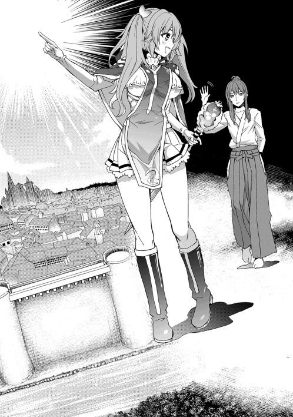
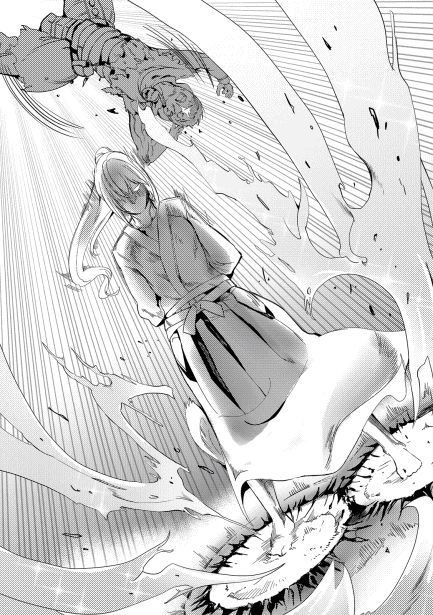
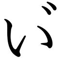

| 【合本版1-2巻】レベル0で最強の合気道家、いざ、異世界へ参る！ | |
| 空地大乃 | |
| TOブックス (2017) | |
※本電子書籍は「レベル０で最強の合気道家、いざ、異世界へ参る！」１、２巻を１冊にまとめた合本版です。
イラスト：多門結之
デザイン：萩原栄一（big body）
Ｃｏｎｔｅｎｔｓ
このコンテンツは『レベル０で最強の合気道家、いざ、異世界へ参る！』１、２巻を収録しています。
レベル０で最強の合気道家、いざ、異世界へ参る！
目次
プロローグ
神薙 流 は合気柔術の達人である。
彼は物心ついた時には既に流派の祖である曽祖父 を指一本で投げ飛ばし、小学生に上がる頃には世界中のあらゆる武道の天才と決闘し勝利を収めてきた。
彼の人生はまさに合気の為にあった。今年で齢八五を迎えるとはとても思えないその御体。
年齢を感じさせるのはその頭に宿した白き毛髪と薄 っすらと表情に宿る小皺 ぐらいのものである。
勿論 頭もはっきりしており身体能力に関して言えば、この年にしてもまだまだ息子達には負けない。
しかし──合気によりあらゆるものを受け、捌 き、流し、倒していったナガレはここにきて一つ悩みを抱えていた。
「虚 しい──」
早朝から日課である一万人組手を終わらせたばかりとは思えない、落ち着いた様子でナガレは呟 いた。
今とてかれこれ一〇〇〇万通りの型を繰り返し続けているが、やはり心のどこかにはぽっかりと風穴が開いてしまっている。
ナガレは、これと同じ感情を過去にも抱いた事がある。
それはナガレが一三歳になった頃。毎日が合気道であり、日々鍛錬 鍛錬、また鍛錬が繰り返される事に嫌気がさしていた。
その頃からナガレは強かった。だが、だからこそ普通の生活を送ることなど決してできなかった。
僅 か齢一三で神薙流の看板を背負う身になったナガレの元には、毎日のように彼に挑戦する武闘家達が後をたたなかった。
友達ができても突如挑まれる勝負に、皆ナガレを恐れて近づかなくなった。
だが、本当はナガレとて学校でできた友達と帰りに買い食いをしてふざけ合ったり、対戦ゲームに熱くなったり、グラウンドでサッカーをして熱い友情を築き上げたりしたかった。
しかし神薙流合気柔術を続ける限り、ナガレに安息の日々はない。
それがいい加減嫌になり、ある日ナガレは思い切って父親に己の気持ちを打ち明けたのだが。
「何？ 合気道が嫌になっただと？ 何を言っているのだ！ お前などまだ合気道のあの字も知らぬ小童 に過ぎぬくせに生いいおって！ いいだろう。この私がお前のその甘ったれた根性を叩きなおしてやる！ もしも私を倒す事が出来たなら、どこぞなりと好きな道に進むが良いわ！」
その後、ナガレはものの数秒で父親を投げ飛ばし失神させ約束通り道場を後にした。
転校の手続きなどは母がやってくれた。屋敷を離れ一時的に母方の親戚の家に厄介になることになった。
それからナガレは普通の中学生として、そしてその後は高校生、大学生と順調に進学した。
型だけはなんとなく続けていたが、突然看板を寄越せなどと宣 ってくる連中に襲われることもなくなり友達もできた。
だが、それでも心に何か引っかかるものがあり、毎朝続ける型もやめることはなかったし、頼まれた先で護身術の講習などを引き受けたりもした。
合気道を捨てたかったのに何故捨てきれないのか？
そんな自問自答を繰り返す毎日──
しかし、そんな時であった、ナガレが彼女と出会ったのは──
それは本当に偶然であった。ナガレがたまたま預金を下ろしに来ていた時、銀行強盗が襲撃し、銀行内はパニックに陥った。
ただ、その時ナガレは比較的冷静であった。
別に己がなんとかしようなどと思っていたわけではない。
ただ、放っておいても警察がなんとかしてくれるだろう程度の事を考え、静観を決め込んでいた。
己は合気を捨てた身、ならばここでわざわざ出て行く必要もない。
下手に悪目立ちをしてはまた腕自慢や看板狙いの連中に狙われるかもしれない。
しかし、皆が皆ナガレのように達観していられるほど精神は強くない。
特に子どもとなれば殊更 だ。一生懸命母親が宥めようとしても泣きやまない子供がいた。
強盗たちはそれに腹を立て、遂に、黙れ！ と銃口を母子に向けた。その時だった、一人の少女が飛び出し、その母と子を庇うように銃口の前に踊りでたのだ。
「貴方達最低よ！ 自分の欲を満たすためにこんなことして！ どうせあんたらなんて銃がなきゃ何も出来ない意気地なしの癖に！」
背の小さな少女だった。ナガレからすればまだ幼さの残る少女だ。
にもかかわらず小さな勇気を振り絞り銃口を前にして肩は震えていても、それでも彼女は負けなかった。
ナガレは今でもその時の彼女──当時の妻の姿が頭に焼き付いている。
あの時の彼女はナガレよりずっと強かった。
「ぐぇっ！」
「な、なんだテメェは!? 」
身体は勝手に動いていた。少女に銃口を向ける強盗に音もなく近づき、銃を掴 み久しぶりの実戦の合気で力を振るいあっさりと床に叩きつけ意識を奪う。
そして強盗の仲間たちの誰何 にナガレはこう応えた。
「ただの通りすがりの合気道家だ」
一瞬にして強盗たちを伸してしまい、周囲が一様に驚く中、ナガレは何も告げず銀行を後にした。
路地に入り、己の手を見る。そして暫 く呆 けていると、ねぇ？ と声が掛かりナガレはその主を振り返った。
それは果敢 に強盗の前に飛び出してみせたさっきの少女だった。
「さっきは凄かった。本当に助かりました、ありがとうございます」
恭 しく頭を下げる少女に自虐的な笑みを浮かべる。そして──
「別に私は凄くなんかない。さっきだって、ギリギリまで無視を決め込んでいた」
「でも、結局助けてくれたじゃないですか」
「それは......結果論だ」
「......自分を卑下 しすぎですよ。私には十分凄く、そして強く見えました」
「強くなんかないさ。それなら君のほうがよっぽど......いや、それよりどうしてあんな無茶をした？」
え？ と一瞬キョトンとした顔を見せた後、ははっ、と顎 を掻 き。
「確かに今思えば結構無茶したかも......でも、それでもあの時はなんとかしなきゃって、そう思ったんです」
「......それで死んだら元も子もないだろ」
「確かに、そうかもしれませんね。でも、それでも、私はやらなくて後悔して生きるよりは後悔しない死を選びたい、そう思ってしまうんです。あの連中に言ってやらないと気がすまなかったという気持ちも強かったしね」
その時の彼女の笑顔がナガレにはとても眩しく見えた。
「でも、ふふっ、ちょっと面白かったです」
「え？ 面白かった？」
「だって、通りすがりの合気道家って」
そこまで言って思い出したようにクスクスと笑う。ナガレはその時の事を脳裏に浮かべ気恥ずかしそうに頬を掻いた。
「でも、合気道やられているのですね。だから、あんなに強く」
「今はやってない」
言下 にナガレが返すと、え？ と彼女が目を丸くさせた。
「捨てたんだ......だからもうやってない」
「......そう、なんですか。でもそれでも十分凄かったです」
「......」
ナガレはそれに対しては何も答える事が出来なかった。
しかしそんなナガレの何かを察したのか。
「どうして......捨てたんですか？」
そんな事を聞いてくる。
「......私の家は合気道では割りと有名な流派でね。だから私も常に合気道を中心に生きてきた、でもそれが急に虚しくなった。大体こんな時代に強くなることに何の意味があるのか」
「あったじゃないですか」
「え？」
「貴方は今日、私を救ってくれました」
あっ、と細い声が思わず漏 れる。
「......捨てる必要なんてなかったんじゃないですか？ 勘違いだったら申し訳ないですが、その事に後悔しているように思えます」
「ち、違う。それに私は、合気道に縛られるような生き方はしたくないんだ、だから捨てた......それなのに今更──」
「別にいいじゃないですか、縛られるような生き方を目指さなくたって」
彼女の声を耳にし、どこか間の抜けた声が飛び出す。するとニコリと彼女は微笑 んで。
「選ぶのは一つじゃないといけないなんてそんな決め付け良くないですよ。私もさっき言いましたが、後悔するような生き方は嫌じゃないですか。合気道だけじゃなく色々な事をしてみればいいんですよ。だって貴方の人生だもの。合気道でも誰よりも強くなって、他にもやりたい事があれば沢山して──」
路地から見える空を仰ぎながらそう言って、やはり太陽のような笑顔で彼女は続けた。
「そうやって自分が幸せになっていい笑顔でいれば、周りも幸せになりますし一石二鳥です」
彼女の話を耳にし、暫くナガレは呆けた後、そして、思わず吹き出し、そして久しぶりによく笑った。
胸の中で渦巻いていた濁流が濾 され清流に変わっていくような、そんな晴れやかな気持ちになっていた。
そしてそれから間もなくしてナガレは道場に戻り、そして合気道の道に復活を遂 げた。
強くなる事そのものに意味なんてないかもしれない。
だが、それでも合気を極め力をつければ、助けになれる人は増えるだろう。
それに何より己は合気が好きである事に彼女は改めて気付かせてくれた。
そして何より、可能性を彼女は提示してくれた。
それからのナガレは迷わなかった。合気に縛られず興味あるものがあればとにかくやる。
だから──ナガレは改めて彼女にお礼を述べに行き、そして、告白したのだ。
それが、ナガレの愛した妻とのなれそめでもあるのだが。
紆余曲折 がありながらも、ナガレが合気柔術を始めてから既に八〇年（一時期型しかやっていない期間もあったが）を超える。
愛する妻との出会いもあり、合気に磨きをかけ続けたナガレであったが、彼からしてみれば未だ極みには達していないし、今後この道を極めることなど出来ないであろうという思いもある。
限界というものを自分で決めてしまってはその瞬間に道は途絶 えてしまうからだ。
しかし、とはいえ──彼はやはり強くなりすぎた。
数多くの達人を相手にしてきた。人間だけにあきたらず熊や雪男（勿論これは国家機密だが）を相手にもした。
そして強くなる毎に最初は少女の危機を救った程度であった彼の守るべき対象は段々と大きくなってもいった。
地球の危機を救ったことだって数知れず、ある時は要人の救出のためにテロリストの本部に単身乗り込み大立ち回りを演じ、戦車や戦闘ヘリをも己の合気で破壊したことがある。
地球存続の危機とさえ言われた隕石とて彼の合気によって軌道を変え、富士山の噴火を止め、誤って飛んできた核ミサイルさえも宇宙へと放り投げた。
だからこそ──そう、だからこそ、だからこそ虚しい。
どれだけ技を磨き、強くなり、多くの人々を救っても......病気の妻を救ってやる事は出来なかった。
ナガレの愛した妻はナガレに看取られ彼より先にこの世を去った。
仕方がないと、それも運命と、割りきったつもりだが──やはりそこには空虚があったのだ。
（......いかんな鍛錬中に雑念を抱いてしまうなど）
神薙流は頭を振り、意識を己の根底に戻した。
合気にとって大事なのは心、何事にも動じない精神。
だからこそ流は再び一から型をやり直す。
無心に続けるその数、更に一万余り、だが、その内の型の一つに些細 なズレが生じている事にナガレは気がついた。
何千何万何億何兆何京とそれこそ数えきれないほど繰り返してきた筈 の型に僅かな歪 み、些細な軋 み、だが──ふとナガレの脳裏に老いという言葉が浮かんでは消えた。
そして思う、妻との思い出に浸ってしまったのも、やはり老い故か、と。
尤 も、本来この程度のことは気にするようなものではない。多少衰 えを感じたところで、現在この地球上において彼が最強の合気道家であることに変わりはないのだから。
だが、それでもふと手を止め、若かりし頃の己を思い出してしまう。
（ふっ、いくらなんでも見苦しすぎるな）
だがナガレは、気持ちを切り替え、再度一から型をやり直そうと構えをとった。
その時である──彼はそれに気がついた。
違和感......一〇〇万坪を超える日本家屋、その中庭、中心部。
それがナガレの鍛錬を続けている場。その場に何か奇妙な気が漏洩している。
これは一体なんなのか？ いや、考えるまでもない。
これまで有機物から無機物に至るまであらゆる物を掴み、流してきた彼だからこそ、それが本来この地球にはない気、いや気とも少し違う未知の力。
それを知ることが出来た。そしてナガレは年甲斐もなく心が踊っている事に気がついた。
ナガレの合気は完璧だ。どんなものでも瞬時に力の流れを把握し、それに己の力を乗せ無限の力を引き出す。
（これを掴めば私は新たな何かを見つけられるかもしれない。だが、いいのか？）
一瞬の迷い、だがそんなナガレの脳裏に愛した妻の言葉が過る。
好きな事をやればいい、だって貴方の人生なのだから──
それを思い出した時、ナガレの決心は固まった。己の意識を集中させる。力の波動を感じ取る。どんな力にも必ずそれを為す核が存在する。
神薙流合気柔術はその核を見極めることが先ず基本にあり同時に最も重要でもある。
そしてそれを八〇年以上続けてきたナガレにとって、この力の核を見極めるなど赤子の手をひねるより簡単な事であった。
「神薙流合気柔術最高師範──神薙流、いざ、参る！」
刹那──裂帛 の気合と共にナガレはソレを掴み受け流し、そして、時空の門を開いた。
後はただ川に満ちる清水の如く、その流れに身を任せ、時空の波に揺られ、そして......気がついた時、ナガレは異世界にたどり着いていた──
第一章 異世界に降り立つ合気道家
（はて？ ここは？）
周りの景色が一瞬にして切り替わり、目の前に広がるのはどこかの森であった。
見る限り広葉樹であり、一見するとナガレのいた日本にも思えそうなものだが、所々には違いが見られる。花も妙に毒々しいものもあれば、銀色に輝く草花まである。
その見慣れない風景にナガレは瞬時に合気陣を展開する。
これは神薙流合気術の奥義の一つであり、本来は周囲に合気による陣を張り巡らせ、陣へ足を踏み入れた相手に刹那の内に返し技を叩き込む技法である。
しかしそれもナガレの域にまで達すると、陣内の地形を把握する地形探査から周囲に存在する生命体の捜索、更に敵の有無や位置まで探る索敵の全てをこの奥義一つでこなすことが出来てしまう。まさに、軍事衛星も裸足で逃げ出すほどの代物なのである。
（どうやら私は異世界に来てしまったようですね）
ナガレは合気陣を展開後、それを瞬時にして理解した。ナガレは合気柔術の達人である。
合気柔術とは、いうなればどれだけの現象を理解できるかという事が重要であり、その達人たるナガレであれば自らの奥義に加え、感じられる空気や匂い、気配などで全てを推し量るなど造作も無い事であった。
ここが異世界だと気づけた事に関しては、日本にいた頃からかなりの読書家であった事も大きいだろう。
ちなみに全てを理解できるナガレはネットもメールもプログラミングからハッキングまでＩＴ系も万能だ。
さて、と時空を超えたナガレは顎を指で押さえ一考する。
これからどうしようかといったところだが、ナガレの決断は早かった。
「折角ですし残りの人生はここで過ごすことにしましょうか」
そこに迷いはなかった。当たり前である。合気柔術において大事なのは決断と思い切りの良さだ。これが出来なければ合気柔術など極められるわけがない。
優柔不断では達人にはなれないのである。それにナガレには既に地球に未練はない。息子達は立派に育てあげた。世界を何度も救ったこともある。
せめて残りの人生ぐらいは自由に過ごしてもバチは当たらないだろう。
ナガレが愛した妻も草葉の陰から、笑顔で送り出してくれているような、そんな気がした。
幸い異世界に来る直前、置き手紙を庭に残してきている。いずれ異世界に来るようなことがあるかもしれないと、常日頃から懐に忍ばせておいたものだ。
そこには旅に出ること、道場は任せること、遺産相続についての遺書の在り処なども認 めておいた。
ナガレは後顧 の憂 いを残さない男である。これでもう、地球に残してきた家族に心配されることも失踪届を出されることもないだろう。
何より、ナガレがふらっと旅に出て何年も戻らない事など今に始まったことではない。
さて、というわけでナガレは改めて思考する。そして、ナガレの目が先ず動き、次に身体が動いた。
近くの木に触れ肌ざわりを確かめる。
さらに観察し枝の生え方、葉の形状、漂ってくる匂い、五感をフル活用し異世界の可能性を感じ取っていく。
（これは、やはり面白い──）
そのどれもが地球に群生するソレに似てるようで、やはりどこか異なっていた。
葉一つとっても、ぐるぐる巻きになりバネのような弾力のあるものから、空気を入れた風船のようにパンパンに膨 れたものまである。
伸びた枝が一筆書きのように複雑な形状をしているものや、高級なデザートのように甘ったるい匂いを放つ花や、花弁 が羽毛のようなものまで、ナガレはそこに確かに異世界を感じる事が出来た。
その情景に触感に匂いに、何故か子供のように 心が踊った。
ナガレは自分でも信じられないほど、そうおとぎ話の世界に飛び込んだ少年のように──ワクワクした顔を自然と作りながら、もっとこの世界を知りたいと思ってしまっていた。
思い立ったが吉日──ナガレの頭にふとそんな言葉が過る。
なので、取り敢 えず人の住んでいそうなところでも探そうかと異世界での第一歩を踏み出した。
その時である。
「πδβ Ｘーーーーーーー！」
森の奥から若い女の悲鳴が耳朶 を打った。
勿論それを聞き逃すようなナガレではない。
そしてこの悲鳴とは別に奇妙な気配も感じられる。恐らくは人のものではない。となると異世界特有の、例えば魔物あたりに襲われている可能性だってある。
瞬時にしてそこまで察すると、ナガレは表情を引き締め声のする方へ急いだ。
「グッヒャ！」
「ギャーアギィ！」
「なんと、これはまた面妖 な」
ナガレがやってきた先は森の中でも大きく開けた場所だった。
そこでは一人の少女がけったいな化け物に囲まれている。
緑色の肌を有し、身長はナガレの半分ほど、瞳が大きく、口から小さな牙がちょろりと出ている。イメージ的には角のない子鬼といったところだ。
「ちょ、ちょっと貴方！ 誰かわからないけど助けてよ！」
するとナガレに気がついた少女が助けを求めて叫んだ。
年齢は一五か一六といったところだろうか？
ピンク髪をツーサイドアップにした比較的小柄な少女だ。
少女は青系のローブを身に纏い、光沢のある銀色の杖を握りしめている。見る限り金属製 である事は間違いなさそうだ。
見た目にはあどけなさの残る少女だが、ローブの上からでも判る胸部の膨らみは立派な大人のソレでもある。整った顔立ちをしており間違いなく美少女の類に入るだろう。
薄紅 色のクリクリとした瞳も相まって、綺麗 というよりは可愛いといった言葉がしっくり来るタイプである。
ただナガレに対して第一声として発せられた言葉には気が強そうな性格もにじみ出ていた。
ちなみに、彼女の話している言語は立派な異世界語である。
しかしそれをなぜナガレが理解できているのか？
翻訳の力でも手に入れたのか？ 否、そうではない。
ナガレはここに来る直前、既にこの少女の声を聞いている。
神薙流合気柔術は相手の核を見極め、力を受け流し、そこに別の力を乗せ叩きつけるのを基本とする流派だ。
その威力は錬の浅い者であれば精々一割上乗せ程度、ある程度修行をこなした師範代でも数倍程度が限界である。
しかし、神薙流において類を見ない天才と称されたナガレであれば、相手の力を受け流しそれを数万倍にして返すなど容易いことなのである。
そしてそれは当然武芸の道だけにとどまらない。あらゆるものを合気柔術に取り入れたナガレであれば、異世界での言語とて一言聞けばそれを受け流し、自らに返すことで数万語を理解することが可能だ。
つまりナガレは先程この少女の助けを呼ぶ声を耳にしたことで、異世界言語の全てを瞬時に理解してしまったのである。
このような事が出来るのは世界広しといえどナガレぐらいしかおるまい。
「ギョギョ！ オカシナノガ、ヤッテキタゾ！」
「イイ、ナエドコガ、テニハイルトオモッタノニ！」
「オスナンテ、ジャマダギャ！」
そして当然だが、それはゴブリンの言語にも同じことが言えた。
ナガレは同時にゴブリン語まで理解してしまったのである。
（なるほど、小奴らはゴブリンという魔物だな。他種族でもお構いなく子種を植え付け、子を宿すタイプか──）
ナガレは、特に彼女や魔物からそれがゴブリンであることを聞いたわけでもなかったが、そこは壱 を知り満 を知るナガレである。
更に言えば助けを呼ぶ少女やゴブリンを目にした瞬間、この世界にはレベルやステータスなどといった概念が存在することを察している。
そこまで判れば、一目見た瞬間に合気によって相手の名前や大体の能力を見抜く事など、ナガレにとっては算数の九九を覚えるよりも容易いことだ。
「オマエタチ、ソノ娘ヲオイテヒクキハナイノカ？」
ナガレは一応覚えたてのゴブリン語を用いて奴らに確認する。
すると少女が驚きに目を見開いた。
「ちょっと貴方！ ゴブリンの言葉が判るわけ？」
「えぇ、まぁ今さっき理解したばかりですが」
はぁ？ と少女の不可解といった印象の宿る声。
だが事実だ。何より異世界言語とてナガレは理解したばかりである。
「ギョギョ！ オレタチガ、ナンデニンゲンテイドニビビッテヒクヒツヨウガアル！」
「オマエバカカ？」
「タッタヒトリデ、ナニガデキルモノカ！ ギャ！」
（交渉決裂ですね......）
そう考えつつナガレは構えを取る。
だが、少々ゴブリンの数が多い。恐らく三〇〇はいるだろう。
普段のナガレならともかく、今のナガレではそれを全て片付けるのは多少の時間が必要だ。
慣れるまでに三〇秒程度はかかるかもしれない。
「お嬢ちゃん。どうやらゴブリンは引く気がないらしい」
「いや、お嬢ちゃんって......」
少女は怪訝 な顔でそう言った。
子供扱いされる事が気に入らないようである。
「だが、少々数が多い。私も出来るだけ急いで片付けたいと思うが、貴方も振りかかる火の粉ぐらいは払って貰えるとありがたい」
「はあ？ 何馬鹿な事を言っているのよ！ それが出来るならとっくにやっているわ！」
「しかし、お嬢ちゃんとて、見たところある程度は戦える力を持っているのでは？」
ナガレがそう告げると、少女は困った顔で返す。
「そりゃ私だって魔術師の端くれよ。魔力さえ残っていればなんとでもするわ。でも今は魔力が殆ど残ってないのよ！ だから魔法が使えない！ だってこんなにゴブリンがいるなんて思わなかったんだもの！」
（やはり魔法使いでしたか）
ナガレは得心がいったように顎を引く。
魔法など、現代の日本で生きてきたナガレには馴染みのないものであったが、それでもここが異世界だという事を杖を持つ少女の姿からあっさり想像する事が出来た。
「しかし、貴方が手にしている杖があるではないですか。それで戦えばゴブリン程度なんとかなりますよ」
「はぁ？ あんた馬鹿！ 杖で戦えるわけないじゃない！ 杖は魔法を使う道具で武器じゃないのよ！」
怒鳴り返されたことでナガレは首を傾げた。
少女が武器ではないと言っているそれは明らかに金属製、しかも柄は長めで先端には丸い頑強 そうな水晶が付き、そこから両サイドに向けて鈎 のような出っ張りが出ている。
ナガレの常識で考えれば、これは十分に武器として使えるものだ。
「お嬢ちゃん、それは武器として十分使えますよ」
「だからお嬢ちゃんって......てか、こんなものどうやって武器として使えというのよ！ 杖よ杖！ 殴ってもすぐに壊れるわよ！」
少女が杖をぶんぶんさせながら文句を垂れる。
その応対ぶりに一瞬思考を巡らせる。すぐに壊れる、彼女はそう言った。どうやらこの異世界において、杖は武器などでなく、あくまで魔法を使用するための補助道具という認識のようであり、材質的にも直接攻撃には向いていないと思われているようである。
ただ、ナガレが見る分にはその杖がそこまで脆いものには感じられなかった。
地球では趣味で古物商の免許も取得し、数多くの希少な品々を正確に鑑定してみせ、某番組の鑑定団も舌を巻いたほどである。
それだけに物を見る目には自信があった。
「とにかくやってみてください。その杖なら十分に実用に耐えうるはずです」
ナガレがそこまで言うと、わ、判ったわよ！ と声を張り上げ、とりあえず近くのゴブリンに向けて──彼女は杖で突っつき始めた。
思わずナガレは前のめりにズッコケそうになる。
「そ、そうじゃありません。まず柄を長めに持って下さい。そしてその先端に付いた出っ張った部分を相手に向けて振り下ろすのです。ゴブリン程度ならそれで事足りるでしょう」
全くゴブリンにダメージを与えられなかった事で不安そうな顔を見せる彼女へ、ナガレがそう教えていると──
「ギョギョ！ サッキカラナニヲベラベラト！ オマエラヤッテシマエ！」
ゴブリン達の鬨 の声が森中に響き渡り、先ずナガレに向けて多くのゴブリンが同時に迫り来る。
ゴブリンはそれぞれ手にナイフやボロボロの剣、斧などを持っている。
しかしいくらボロボロとはいえこの数だ、それにナガレは道着の袴 姿であり、本来ならば 一撃でも喰らえば命にかかわる。
しかし──一斉に飛びかかるゴブリン達、その身が突如軌道を変え、そして数百のゴブリンが何故かナガレではなく仲間同士で切りつけ合う。
仲間割れ？ いや違う。これぞ神薙流奥義【空蝉 ・乱 】、力を抜き完全なゼロの脱力。
相手が攻撃を仕掛ける時大気はわずかでも揺れる、それを肌で感じとり、相手も気づかないほどの極小の動きで攻撃の瞬間に受け流し、そして別の相手に向け返す。
集団戦において効果的なソレは、傍 から見ればまるで仲間同士で斬り合っているような、そんな風にすら見えてしまう。
だが実際には、それらは全てナガレの合気柔術による軌道の変化がもたらした結果。
そう、この技はナガレの手を一切汚すことなく、勝手に仲間割れを引き起こす。
事実、既に何体かのゴブリンはナガレの所為 によって仲間が信じられなくなり、実際に仲間割れをしだす始末だ。
（全く愚 かな事ですね）
そう思考しつつ、ナガレは気になっていた少女の方に改めて目を向けるが──
ジリジリと迫ってくるゴブリンを視界に収めながらも、やはり少女は迷いを断ち切れないでいた。
先程は試しに戦い方を見たことがある槍のように相手を突いてみたが、ゴブリンに全く怯 む様子は感じられなかった。
やっぱり杖で攻撃なんて無理じゃない！ と思わず突如現れた彼に文句の一つでも言いたくなったものだが、しかし彼はそのやり方は違うと言った。
そして改めて彼は彼女にその杖を振って使うのだと教えてくれたのだが──
（杖を振れなんてそんな剣みたいな使い方──杖がもつわけない......）
どうしても信用が出来ない。何より柄を長く持つというのも良くわからない。
こんな事して何か意味があるのかしらと首を傾げたくなる。
それに──この杖は彼女にとって大切なものでもあった。
彼女の脳裏にこの杖を渡してくれた師匠の姿が思い浮かぶ。
大事な杖、だから壊したくはない。
だが──一瞬、そう、彼女が師匠の顔を浮かべたその一瞬の隙をついて、遂にゴブリンが狂ったような声を上げながら、少女へと飛びかかってきた。
思わず彼女の瞳が見開かれる。
このままだとやられる！ そう思った瞬間、彼女は無意識に蹶然 と××していた。
ただ黙ってやられる死より、一か八かでも行動して勝ち取る生を選んだのである。
「はぁああぁああぁあ！」
気勢を上げ、彼女は彼から聞いた言葉を反芻しながら、柄を長く持った状態のソレをゴブリンに向けて振り下ろした。
下にした突起部がゴブリンの頭蓋 を貫く。
「グギャ！」
その瞬間ゴブリンの短い悲鳴と、グシャッ！ と森の果実が潰れたような感触。
恐る恐る瞼 を開くと、足元に転がるゴブリンの遺骸 。
（嘘......？ 信じられない、本当にこれは私がやっているの？）
その事に大変少女は驚いた。何せ彼女は魔術師。魔法以外で魔物を倒すなどこれまでありえなかったことだ。
しかも倒すのに利用したのは己が手に持ちし杖である。
これまで数多くの偉大な魔術師や魔導師を目にしてきた彼女であったが、杖を武器にするなどといった突飛なことを考える者は一人もいなかった。
杖は魔法の威力を増大させたり魔力を蓄えたりするために必要な道具。
それが魔法使いの常識であり、それ以外の用途などあるはずもないというのが根幹にあったからだ。
何より杖に使われる材料は剣などのような丈夫な鋼などではない。
この杖の素材にしたって魔法使いの多くが好んで使用するマジシル 製である。魔鉱石の一つでもあるマジシルは、魔素含有量が高く、魔法の術式を施すことで、術者の魔法の威力を上げたりといった点では優れているが、金属として見た場合脆 く武器として見ればとても使い物にならない筈なのである。
しかし、今彼女はとても衝撃を受けている。
その後も近づいてくるゴブリンに向けて杖を振り下ろしていくが、尽く頭蓋を潰し、脳漿 を撒き散らし、ゴブリン共が息絶えていく。
まるで熟練した戦士にでもなった気分だ。しかも杖が破損する様子は全く感じられない。
だが、その事もそうだが、ただの杖でここまでの威力を発揮できることにもやはり驚きなのである。
「もしかしてこの柄を長く持つというのがポイントなのかしら？」
ふとそんな事を考える少女。
だが確信は持てない。何より柄を長くという言葉で思い描くのは衛兵などが持つ槍ぐらいである。しかしそれももっぱら突くのが専門といったところなのだ。
恐らく彼らにその槍を振ってみては？ など言おうものなら鼻で笑われてしまうだろう。
しかし、実際に今彼女はそのやり方でゴブリン共を蹴散 らしていっているのも確かなのである。
「これだけでこんなに非力な私でもゴブリンを倒せるようになるなんて......信じられないところだけど、もしかしてあいつ有名な冒険者か何か？」
そんな事をぶつぶつ言いながらも、嬉々としてゴブリンを鈎付き杖で叩きのめしていく少女。
緑色の血を全身に浴びるその姿は既に魔女の如しである。
そして、結局調子を取り戻したナガレの力もあってか、それから数分後にはふたりの周囲にはゴブリンの骸が散乱する事となるのだった──
「それにしてもお嬢ちゃんが無事でよかった」
ゴブリンの骸が積み重なる中、佇 むふたり。
そんな中、ナガレは彼女に向けて優しく微笑んだ。
だが、何故か少女は不機嫌を露 わにし、左手を腰に当て右の人差し指をナガレに突きつける。
「ちょっと！ 確かに助けてもらったのは感謝するけど、さっきからお嬢ちゃんお嬢ちゃんって......貴方私とそんなに年が変わらない じゃない！ ちょっと失礼じゃないの？」
プリプリと文句を言われる。その姿も中々可愛らしい少女であるが。
しかしナガレは顎に指を添え、やはりか、と一つ呟いた。
「そんなにというと、私は何歳ぐらいに見えるかな？」
「はぁ？ そんなのいいとこ一五か、一六ってところじゃないの？」
その答えに顎を引くナガレ。特に驚きはなかった。
何せ壱を知れば満を知るナガレである。
己がこの異世界にたどり着いた時、明らかにその身が若返っていたことは感覚からして明らかだったのである。
故に、ゴブリン戦ではこれまでの身体の構造との違いを理解し、修正するために多少の時間を要してしまった。
しかし何故こんなことが？ に関しても特に悩むことではない。
ナガレが日本で感じ掴んだそれは、恐らく時空の中を漂う紐のような物。
それをたどり異世界に引き込まれる際、時空の波に晒された事で、己が身の細胞が極端に活性化し、一気に若返ったのである。
少女から聞いてわかったが、恐らく七〇年は若返っている事であろう。
つまり今のナガレは一五歳──どうりで肌もツヤツヤしているはずであるし、身体のキレも増しているわけだ。
そしてナガレ自身気がつかない内に、好奇心も一〇代のソレに近づいている。
「何一人で頷いているの？」
「ふむ、まぁこちらの話です」
少女は、おかしなものでも見るような目を向け首を傾 げたが、すぐに表情を戻し改めてお礼を述べる。
「何はともあれ助けて貰 った事にはお礼を言うわ、本当にありがとう。でも驚いた。杖を武器にして戦え！ だなんて前代未聞よ。よくこんな事を思いついたわね？」
これにはナガレも少々言葉に詰まる。
この世界では杖で戦うなどとてもあり得ないといった様子だが、ナガレのいた日本では杖でも戦える杖術 というものが存在するのである。
そう考えれば、杖を使って戦う程度のことでここまで言われるのにはやはり違和感を禁じ得ない。
ただ、同時に彼女の口にしていた言葉も気になっていた。
少なくとも彼女の持っている杖は武器としての性能を十分発揮できるものであったが、他の杖は違うのかもしれない。
「まぁいいわ。そういえば私、自己紹介がまだだったわね。私はピーチ、お嬢ちゃんはもうやめてね」
「ナガレです。よろしくお願いします」
少女が手を差し出してきたのでナガレもそれに応じる。
握手はこの世界でも挨拶として利用されているようである。
ピーチの手は小さく柔らかかったが、そもそもナガレの手も歳相応に小さくなっている。
しかし活力は全盛期に近いぐらいまで向上しているのを感じた。
「ナガレって変わった名前ね。ところで貴方、もしかして結構凄い冒険者だったりするの？」
「いえ、私は武闘家ですが冒険者ではありませんね」
「舞踏家？ 何それ？ 冗談？」
「いえ多分勘違いだと思いますが、素手で戦うのを得意としてまして」
「あぁ、拳闘士 って奴ね。ふ〜ん、でも私初めて見たかも」
どうやらこの世界では武闘家とは言わず拳闘士として認識されているようである。
「それにしても、その格好といい貴方本当に変わっているわね。あまり見たことないわよ。一体どこから来たわけ？」
「そうですね。名前の通り私は特にあてのない流浪人 の身です。生まれ故郷などは忘れてしまいました」
「......そう、なんか悪いわね。あなた若いのに大変だったのね」
ピーチが同情の篭 った目を向けそんな事を言ってくる。何か妙な勘違いをされているようだ。
だが、若いと言っても実年齢で言えば、ナガレは彼女よりは遥 かに上である。
この見た目で八五と言ったところで信じてはくれないだろうが。
「でも、そんなに強いのにちょっともったいないわね。そうだ！ 貴方、冒険者になりなさいよ！」
「冒険者ですか？ ふむ──」
地球では既に相手になる者がいなかったナガレにとって、ピーチの提案は一考の価値があるものだったが、とりあえず即答はせずナガレから彼女に質問をぶつける。
「ところで、ピーチさんは冒険者としての依頼でここに？」
「ピーチでいいわよ。同世代の相手にさんとかなんかむず痒いし。てか、貴方の口調堅苦しいわね」
「判りました。では私もナガレでいいですので。それと口調は元来こういったものですのでお気になさらず」
ナガレがニコリと微笑むと、ピーチの頬 が桃色に染まった。
それも仕方ないかもしれない。ナガレには頓着 がないが、若いころは美丈夫と噂され、女性の熱い眼差 しを一手に受けてきたような男だ。
当然若返った彼もまた、見た目には美少年そのものであり、まさに眉目秀麗 といった容姿である。
身長こそ一六〇センチメートルそこそこと男としては小さな方だが、引き締 まった筋肉を有し、それでいて男性とは思えない長くサラサラの黒髪を靡 かせる。
そんな彼に微笑みかけられては、たとえ異世界の女性といえど、俗にいうニコポっ状態になっても不思議ではない。
「え〜、と、それで、あ！ そうだ！ 私が来た理由だったわね！ そうよ！ 本当は私ここに魔草を採りにきたのよ！」
「魔草ですか？」
「そう、魔力回復のためのポーションになる材料ね。これをやると依頼料の他にマジックポーションがもらえるからお得なのよ」
なるほど、と頷くナガレ。
「でも、そしたら魔草採取中にゴブリンの大群を見かけてね。驚いちゃって街に戻って報告しようと思ったんだけど見つかっちゃって......」
「その結果がこれというわけですね」
「そうそう。でも流石に私も駄目かと思って自害も考えたわよ......魔力も残ってなかったしあのままだったら......」
そう言って小さな肩を震わせる。確かに、もしナガレがあと一歩遅ければ、今頃彼女はゴブリン達の子種をその身一杯に植え付けられていたかもしれない。
「ですがこれで安心ですね。ゴブリンは倒しましたし」
「いや！ 駄目よ！ だって普通に考えてこんなにゴブリンが溢れるなんておかしいでしょ？」
正直異世界にきて間もないナガレには、その辺の当たり前を知りえるわけがないのだが、そこは壱を知り満を知るナガレである。
確かに常識的に考えておかしいことに気がついた。
何せ、どう考えてもこの数は異常である。異世界だからで済む話ではないだろう。
「だからね、つまりこれは──あまり考えたくないけど変異種が出たのかもしれないわ」
「変異種ですか？」
「そうゴブリンの変異種！ 普通は滅多なことでは現れないんだけどね。でもゴブリンの場合は変異種が現れると、同時に大量のゴブリンも湧いてくるって言うし......」
ピーチは自分でそこまで言っておきながらも、どこか不安そうな表情をその顔に宿した。
それだけ変異種という魔物が凶悪な存在であるという事だろう。
そしてナガレ自身はピーチの説明を受け、得心がいったように顎を引く。
「なるほど、それであれば先程から感じられる大きな気配にも納得できます」
「え？ ちょっと何それ！」
ピーチが驚いたように言う。
しかしナガレはその反応を他所にくるりと身体の向きを変え、森の奥に目を向けた。
「ちょっとこのままではマズイかもしれないですね。ここから北東へ一五〇〇メートル程先にいるのが恐らくその変異種でしょう。ふむ、これは中々ですね」
「!? それが本当なら、きっとグレイトゴブリンよ！ てか！ 貴方もしかして索敵系のスキルでも持っているの？」
「いえ、私はそういったスキルの類は持ちあわせておりませんが、なんとなく気配でわかるのですよ」
ナガレは既にこの世界にはスキルやステータスというものが存在しているのは理解している為、ピーチの発言に戸惑う事はなかった。ただ、なんとなく試してはみたがナガレにはそういった類は一切反応しないのだ。
だが、それにがっかりする様子はない。そもそもたとえスキルがあったとしても、ナガレはそれに頼らないだろうし、ステータスがあってもそれを信じることはなかっただろう。
武闘家にとっては己の身こそが全て、それを知るのもやはり己のみである。
どこの誰が用意したかも判らないようなステータスなど意味を成さないのだ。
「でもそんなに近いなんて......グレイトゴブリンってＡ級冒険者でなんとかって程の魔物よ。私でさえＣランクの３級だしとても敵う相手じゃないわ。早く街に戻ってギルドに知らせないと！」
「いえ、それでは間に合わないでしょう。ですので、ここは私がなんとかしましょう。ですが念のためピーチは街に戻っていて下さい」
「......は？ はぁ!? 」
驚愕のピーチ。しかし頼みましたよ、とナガレは一人、件のグレイトゴブリンのいる場所まで向かおうとする。
しかし──
「ちょっと待ちなさいよ！」
それを止めるようにピーチが吠えた。
するとナガレは振り返り、なんですか？ という目を彼女に向ける。
「あんたねぇ！ 冒険者でもない一般人に、ちょっとグレイトゴブリン倒しに行きます、とか言われて、はいそうですかってわけに行かないでしょう！ こっちだって一応Ｃ３級の冒険者よ！ あんたが行くなら私も行くわ！」
「はぁ、それは構いませんが、でも魔力が切れているのですよね？ 戦えますか？」
正直、今度の相手はその辺に散乱しているゴブリンとはわけが違う。
杖を利用した戦い方を知ったとはいえ、とてもそれでどうにかなる相手ではないだろう。
「問題無いわ！ 魔力なら少しぐらいは【瞑想 】のスキルで回復できるしね！」
ふんっ！ と胸を張り得意気に語る。
「そうですか......判りました、では少し待ちましょう」
ナガレはそう言って彼女の魔力回復を待つことにする。あまり時間はないが、それでも相手の距離と移動速度から見て多少は待てると踏んだからだ、が。
「ぷはぁああぁああああぁあ！ ちょ、ちょっと待ってね。後二、三回やれば魔法数発分ぐらい溜まるから！」
「......一応訊くのですが、それが瞑想なのでしょうか？」
ナガレはピーチの言うところの瞑想の様子を見ていたが、少々、というか、かなり疑問に思うところがあったので訊いてみたが、
「そうよ、決まっているじゃない！ あ、さては瞑想を知らないのね？ そうよね。結構取得している人が少ないもの」
と中々自信あり気だ。
しかし、当然ナガレが瞑想を知らないなんて事はあり得ない。
寧ろ毎日の鍛錬の最後には必ず瞑想を行う程だ。
精神のあり方も大事と考える神薙流合気柔術を極めたナガレにとって、瞑想は既に身体の一部と言っても過言ではないだろう。
しかし──今ピーチのやっているものはナガレの知っている物とは似て非なるものだ。
取り敢えず直立で行うことはまぁいいとしよう。
どうしても必要に迫られた場合、ナガレとて直立不動で瞑想を行うことはよくある。
しかし問題は、ピーチはその後瞼を閉じ、なんと呼吸も完全に止めてしまったのである。
そして、かと思えば三〇秒程も息が続かず、可愛らしい顔を歪ませて息を思いっきり吐き出す始末。
そしてその後大きく息を吸い込み、また瞑想という名の何かを始めようとしているのだ。
勿論、異世界においてはこれが瞑想の正しいやり方なのだと考えることも出来る。
所変わればルールも変わるものだろう。
しかし、そこは壱を知り満を知るナガレである。
今のままの瞑想では明らかに無駄が多いことを瞬時に理解してしまった。
それを確認するために念のためピーチに気になったことを尋ねる。
「ちょっとお聞きしたいのですが、魔力を回復するに当たり、何かを取り込んでいたりしますか？」
「？ 不思議な事を訊くわね。そんなの魔素に決まってるじゃない」
ピーチが怪訝そうに返答する。
なるほど、どうやら魔素というものがこの世界において常識的に存在するもののようだ。
「なるほど、つまり魔力とは魔素を人間に馴染む形に変換させたもの、といったところですね」
「......なんか小難しい言い回しね。でもそんな感じよ。ただ魔素は黙っていても自然に身体の中で魔力に変換して蓄 えられていくけど、それだと減った魔力を回復させるのに時間がかかるの。その回復を早めるのが瞑想のスキルよ」
ピーチの説明に得心がいったようにナガレは顎を引く。
だが、そうなるとやはり彼女の瞑想方法には問題点が多い。
何せ折角魔素を魔力に変換していても途中で一回一回息継ぎをしなければいけない上に、ナガレの見立てでは明らかに折角変換された魔力の大部分が霧 散 してしまっている。
それでもそれなりに魔力を回復させているのは感心できる点とも言えるが──
「ちょっといいでしょうか？」
「何よ？ 時間ないんだから手短にね」
「はぁ、いや実は私が見る限り、その瞑想よりも、もっといい方法があると思うのですが、試してみませんか？」
はぁ？ と怪訝に眉を顰 めるピーチ。唯でさえ取得している者が少ないというスキル【瞑想】が間違っていると聞き機嫌を悪くしたようだが──
「いいですか？ まず姿勢はこう、そして息は止めてはいけません」
「はぁ!? 何言っているのよ！ 瞑想は息を止めてやるものでしょうが！」
「いえ、それだと息継ぎする時に明らかに溜まった魔素が逃げてしまっています。寧 ろ呼吸法が大事ですので──」
そう言ってナガレはピーチに丁寧かつそれでいて手早く、己の知る呼吸法を伝授してあげた。
すると──
「な、何よこれ！ ちょっと瞑想しただけでこの方法だと魔力の溜りが段違いよ！ 信じられない！」
驚くピーチに、ふむ、と顎を引くナガレ。
そして瞑想によって集められた魔力は明らかにナガレが教えてからのほうが多い。
どうやらナガレの踏んだ通り、息を止める瞑想は無駄が多かったようだ。
「本当信じられない。え〜とこの呼吸、だったっけ？ なんて言うんだったかしら？」
「ラマーズ法ですね」
「そうそうそれ！ 本当凄いわねこれ！」
喜んでくれて何よりとナガレも微笑む。
尤も、正確に言うならこれはナガレ式ラマーズ法と名づけられてる物でもある。
ラマーズ法と言えば本来は精神予防性無痛分娩 法としてお産の為に利用されてきた呼吸法である。
だがナガレはラマーズ法における精神を安定させて出産の苦しみから解放させるという効用、そして理に適った呼吸法と弛緩法に着目した。
特に弛緩法は合気にとって大事な脱力にも通ずるものがあり、故にナガレ自身ラマーズ法を学びそしてそれを改良し、合気道に役立てる為ラマーズ法を取り入れた全く新しい呼吸法として見事確立させたのである。
このナガレ式ラマーズ法は合気道だけでなく数多くの武道家たちの琴線に触れ、更に妊婦たちの間でもこれまでのやり方より圧倒的に出産が楽になると称賛もされ多大な評価を受け、内閣総理大臣から表彰された程でもある。
とはいえ、呼吸法を知らなかった彼女がナガレが少し手解きをしただけであっさり物にしてしまったのはそれはそれで凄い事かもしれない。
そこに関しては素直に感心するナガレでもある。
これで満タンまでとはいかなくてもかなりの量の魔力が回復しただろう。
「よっし！ これだけ魔力が回復すればいけるわ！ さぁナガレ！ やってやろうじゃない！」
何故か突然ピーチが張り切り、先頭を切って歩き出した。
魔力が戻った途端現金なものである。
しかしナガレは特にそれについて何かを言うこともなく、彼女の小さな背中を追いかけた。
そしてそれから一〇数分ほど歩いた先に──それはいた。
「なるほど、これはなかなか壮観ですね──」
グレイトゴブリン──ピーチが変異種と言っていたそれは、確かに最初に目にしたゴブリンとは全く様相が違った。
まず全体的に体つきがゴツゴツとしていて、樽のような身体は隆起した筋肉の瘤 に包まれているようでもあり、そして四肢は大木のごとく太い。
顔は顎が少し出ているあたり、原始人のようですらあるが、体色はやはりゴブリンの特色を残しており真緑、髪はなく耳の先が鋭角状だ。
そして何より上背が三メートル近くあり、そこがゴブリンとの決定的な違いだろう。
肩幅の広さもあって、対峙した時には更に大きく感じるかもしれない。
そんな変異種は腰蓑 のようなものを穿 き、手には棍棒（というよりはほぼ丸太だが）を持ち、どこぞへ向けて進行を続けている。
見たところ、グレイトゴブリンの他には仲間はいそうにないが、ズシン、ズシンと大地を揺らしながら突き進んでいるような魔物だ。
傍にいては、踏み潰されて死んでしまう可能性が高いため、それを警戒して近くにはいないのかもしれない。
きっとあの三〇〇体のゴブリンのように、ボスより部下が前を行くのがゴブリン流なのだろう。
「や、やっぱり並のゴブリンとは迫力が違うわね......」
まさに圧巻と言えるその姿に、明らかな動揺を見せるピーチ。やはり彼女とてまだ若い娘、これだけの化け物に脚が竦 むのもよく判る。
その一方でナガレも別な意味で興奮しているのを感じていた。まさに異世界といったその光景に少年のように心が踊っていた。とはいえそれに見入っている場合でもないであろう。
それに、ただ傍観しているわけにもいかない。そこはやはり武闘家としての性だろう。
ナガレが立ち上がり、軽く関節を解していると、今すぐにでも相手してやろうという気持ちが全身から溢れ出てくる。
「やはりここは私がいきましょう。ピーチはそこで見てい──」
なのでナガレはピーチにそう告げ、グレイトゴブリンの相手をしようと出ていこうとするが。
「な、何を馬鹿な事を言っているのよ！ あんなの正面切って戦ってなんとかなるわけないじゃない！ 大丈夫よ、私に任せて。こう見えて私は魔導第一〇門までは開けられるんだから！」
ピーチは制止するようにそう言い、かと思えば何やら独特な言葉を呟き出す。
壱を知り満を知るナガレは彼女を視た時には既にその能力は看破している。
故に、彼女が魔術師であり、魔導門という属性の魔法も第一〇門まで開けられるということは判っていた。
ただ、それが実際どの程度の威力なのかは自分の目で確認しておく必要があるだろう。何より物語の中だけでしか語られることのなかった魔法を目の前で拝めるのだ。ナガレは年甲斐もなく、心が踊った。
正直いくら魔法が見れるとはいえ、何故ここまでまるで子供のように昂揚してしまうのか不思議でもあったのだが──
「──フェ・ベラ・リラ......開け魔道第一〇門の扉！ 発動せよ炎術式【フレイムランス】！」
ピーチがしきりに呟いていたのが詠唱であったのはナガレも理解できた。
そして言葉の紡ぎ方から、詠唱を鍵とし門を開けるイメージで魔法を発動させているのも察する事が出来た。
そしてピーチが詠唱を終えるとほぼ同時にその胸のあたりに収束された魔力が燃焼し、すかさず胸の前に添えたピーチの両の手の間から炎が渦を描き、直後──長さ二メートル程の炎に包まれた槍がグレイトゴブリンに向けて射出される。
ナガレには魔法が発動するまでの一連の流れがしっかり視えていた、いや感じることが出来たのである。
更にピーチの魔法を見逃さぬよう観察し続けるナガレ。
その視界内で、轟々 という燃焼音を辺りに撒き散らしながら、灼熱 の槍は見事魔物の脇腹を捉え突き刺さった。
焔 が形を変え槍と化しそれを放つ。
その魔法然とした様相に感銘を受ける。
そしてピーチが行使した魔法は炎術式という名称がついていた。
この式は恐らく多種多様な属性の内の一つであり、放たれた魔法を見る限り、その名の示す通り炎を操る術式である事は間違いがなさそうだ。
ただ──ピーチの魔術師としての力量がどの程度かまではこの段階では判断出来ないが、やはり相手が悪かったようだ。
もしこれが並のゴブリンであれば、今の魔法で恐らく二、三体纏めて貫通できるぐらいの威力があるだろう。
しかし──グレイトゴブリンは流石Ａ級冒険者に相当すると称されるだけの魔物である。
ピーチの放ったフレイムランスは、当たりこそしたが化け物はそれを掴み引き抜き、なんとへし折ってしまった。
「そ、そんな、私の魔法が全然......一番強力なのを撃ち込んだのに──」
愕然となるピーチ。彼女は風の魔法も行使可能ではあるが、それは一一門までしか開けられない。
話を聞く限りは一一門より十門の方が効果は大きいようだ。
そしてグレイトゴブリンの顔がふたりに向けられる。
魔法の発動された方向からふたりの位置を察したのだろう。
どうやら少しは頭を働かせることが可能なようだ。
ピーチの放ったフレイムランスは、射程でいえば二〇メートルそこそこといったところである。
あれだけの巨体であれば、その距離はあっさり詰められてしまうことだろう。
「ど、どうしよう！ あれ、私の最大威力の魔法なのに！」
慌てふためくその姿を他所に、ナガレは仕方ないですね、と呟き。
「やはり私が出ましょう。ピーチはそこで見ていて下さい。危険ですから決して動かないように」
「え？ ちょ！ 何言っているの！ 無茶に決まっているでしょあんな化け物！」
吠えるように言う。
しかしそんなピーチを尻目に、ナガレはあっさりと言い放つ。
「いえ、大丈夫ですよ。寧ろ思ったより大したことなさそうで少し拍子抜けなぐらいですから──」
後ろからはピーチの制止の声が聞こえるが、ナガレは構わず歩みを始める。
その姿に──グレイトゴブリンの動きが止まった。
きっと、そのあまりのゆったりした動きに毒気を抜かれたのか、それともどういうつもりか？ と疑問に思ったのか。
恐らくは背中を見ていたピーチも、え？ と頭に疑問符を浮かべていたかもしれない。
ナガレの歩法はそれぐらい遅く感じられる ものであった。
【神薙流合気歩法術・陽炎 】──神薙流合気柔術に於 けるこの独特な足運びは、一見すると一歩一歩が非常にゆったりとしていて、まるで能を見ているかのようですらあり、しかしそれでいて姿勢もよく、一つ一つの所作の美しさは見る者を魅了する。
ピーチはナガレを舞踏家と勘違いしていたが、まさにその動きは舞踏にも似た空気を感じさせるものだ。
だが、それはあまりに戦いにはそぐわない──そう思えてならない程なのだが。
「──!? 」
グレイトゴブリンの顔が驚愕に染まった。
当然だろう。今の今まではっきりと視界に捉 え、欠伸 が出そうなほどゆったりとした動きで、どう捻 り潰 してやろうかとさえ思い始めていただろうに、しかし、気づいてみれば既に相手が目の前まで肉薄 していたのである。
そう、ナガレの歩法は傍から見れば蝿 が止まりそうなほどゆったりしているものだが、その実、刹那を超えた超刹那と言えるほどの超高速の動きを顕現 しているに過ぎない。
しかし、そのあまりの速さ故、見ている者には逆にゆったりとしているようなスローな動きに映るのだ。
あまりに速すぎるその所作は、眼球に一歩手前の動きを焼き付けているに過ぎない。
その遅れ故に来る差異、脳を揺らす誤差。
それを目の当たりした者は、あまりに現実離れした現象に理性を崩壊させる。
それは人間でもゴブリンでも変わらない──結果、異質なるものを受け入れられなくなったグレイトゴブリンは、本能の赴くまま、一抹の疑念をも抱くことなく、手に持つ丸太をナガレに向けて水平に振った。
しかし当然これはナガレにとって想定内。
ナガレは、一切避ける素振りも見せず、迫る丸太に片手を添え一切抗うことなく丸太にピタリと引っ付いたような形で流される。
キャッ！ というピーチの悲鳴。振りぬかれた丸太の風圧に仰がれ思わず上げてしまったのだろう。
だがそれだけの一撃を受けたにもかかわらず、ナガレは涼しい顔でするりと反転し、丸太の裏側に回った後で逆の手で軽く押してみせた。
すると、これだけの巨体を有したグレイトゴブリンが、まるで独楽のようにぐるぐると数回転した後、たたらを踏んだ。
目玉がぐるぐると動きまわり、軽い目眩を起こしてしまっているのがよく判る。
「え？ 何これ？ 何が起こってるの？」
少し離れた位置から様子を見ていたピーチだが、正直彼女には何が起きたのかイマイチ理解できていない。
気がついたらグレイトゴブリンが目を回していた程度の認識だろう。
「さぁ、どうしました？ こんなものですか？」
ナガレが挑発の言葉をぶつけると、グレイトゴブリンは額に手を添え軽く頭を振った後、今度は大口を開け咆哮 してみせた。
ビリビリと空気を裂くような叫声。威嚇 としては十分過ぎる程のものであり、耳にした瞬間身が竦 み動けなくなるほどだろう。
だが、こんなものはナガレにとってみれば子犬の鳴き声と同じ。全く意に介す事なく、再び一見無防備なその歩法でグレイトゴブリンに接近すると、反射的に敵はナガレに向けて丸太を薙ぐが、今度はギリギリの間合いを掴み、二度、三度と受け流していった。
こうしてナガレはグレイトゴブリンの戦い方を直に感じるため、観察を続けていたわけだが──何度かそのやり取りを続けた後もう十分と次に迫る一撃を受け流し丸太を上に跳ね上げた。
どうやらこのグレイトゴブリンは、確かに膂力 こそゴブリンとは比べ物にならないほど優れているが、攻撃方法は単純そのもの。咆哮で威嚇するか、手に持った丸太を力任せに殴るしか芸がないようなのである。
少々残念そうに溜め息を吐き出すナガレ。すると今度は両手で丸太を振り上げた状態から、力任せにナガレの頭蓋を砕きに来た。
しかし、それはナガレの計算通りである。合気で攻撃を上に向けて受け流せば、思考が単純なこの魔物なら次は確実に振り下ろしてくる、と、そうナガレは踏んでいたのである。
その通りになった結果、ナガレは腕を振り上げ唸りを上げて迫る丸太を受け止めた。その瞬間ナガレの細身がまるでスポンジのように沈み込み、それに合わせて衝撃を全て大地に受け流していく。
当然、丸太のダメージの一切はナガレに残る事なく──大地に一度吸収された衝撃はナガレの足運びによって循環し、大地のパワーを上乗せしつつ足元から衝撃を跳ね返す。
ナガレはその衝撃を再び全身で受け止め、バネの如き勢いでグレイトゴブリンに向けて突き上げた。
この間、僅か一〇〇〇万分の一秒の出来事である。
「え？」
直後ピーチの疑問の声。当然だろう。何せ今まさにナガレに向けて丸太を振り下ろした魔物の姿が、突如視界から消え失せたのだ。
しかし、これとて実際は消えたのではない。神薙流合気柔術が奥義【地流天突 】──これにより、一旦地に逃がした衝撃が、数千倍になって攻撃を仕掛けたグレイトゴブリンに跳ね返ったのである。
その結果、人の認識できる速度を凌駕する勢いで、グレイトゴブリンの身は上空一万メートルまで上昇し──そして、錐揉 み回転をしながら地上に向けて落下を始めたのである。
しかし、恐らく体重千キロは軽くありそうな魔物である。そんなものが一万メートル上空から落下してきては、その衝撃たるや凄まじいものになることは想像するに容易 い。
だが、そこは天才合気道家たるナガレである。彼は戦いにおいて、余計なものまで巻き込むのは良しとしない男だ。それは勿論この美しい自然だって同じである。
故に、この回転。高速回転して落下するゴブリンの身体には、周囲の大気がまるで綿飴のごとく巻きつき、内側へ内側へと集束していく。
その為、落下するグレイトゴブリンの身体の周りには厚い大気の層が形成され、その結果──大地に着弾後、その衝撃は内側へと流れる層によって吸収され、圧縮された力の波によってグレイトゴブリンの巨体が爆散する。
が、しかし、その肉片すら竜巻のように発生した大気の層によって阻まれ内側に集まり、外に飛散する事なくグレイトゴブリンの立っていた位置に見事積み重なっていった。
ピーチが瞬きしている間の出来事である──
「ここまでくるともう意味がわからないわね」
はぁ〜、と溜息まじりに述べる。
目を細め、これだけの偉業を成し遂げたナガレに何故か呆れ顔だ。
「いや、私としてはもう少し歯応えがあるかもと思っていたのですが──」
「もしかして貴方、この変異種より危険だったりしない？」
事もなげに語るナガレは彼女に危険生物として認定されてしまったらしい。
助けて貰っておいて酷い話だとも思えなくはないが、あまりにナガレの実力が規格外過ぎる為、一歩退いて見てしまうのは仕方のないことなのかもしれない。
「まぁ少なくとも、私はわけもなく暴れたりはしませんよ──ですが......」
一瞬どこか虚無を感じさせる表情を見せ、己の手を見やるナガレ。
異世界に来て初めて目にした魔物に戦う前は心も踊ったものだが、いざ終わってみると急に虚しさが深淵 より湧き出てくる。
変異種と呼ばれる程の魔物でさえ、ナガレに遠く及ばなかった。やはり自分は強くなりすぎてしまったのかとギュッと拳を握りしめた。
するとその様子にピーチが小首を傾げ、
「どうしたの？」と問いかける。
「......いえ、先程も言った通り私は流れにまかせてこの地にたどり着いたような身の上。旅の目的の一つには強さを追い求める事もありますが、最近強さとは何か、意味はあるのか、一度は振り払った筈の疑念がまた──いえ、こんな事を初対面の貴方にお話しすべきではないですね」
ナガレは何故か心の内をピーチという名の少女に話してしまった。
それを後悔するようなことはないが、不思議にも思う。
「馬鹿ね。何を言ってるのよ。ちょっと贅沢 よ。強いに越したことなんてないじゃない。貴方ね、冒険者の中にはいくら努力しても自分の壁を越えられない人も一杯いるのよ」
むっとした表情で叱咤される。
この世界の冒険者は常に死と隣り合わせ。だからこそ強さに対する憧れは、ナガレのいた世界よりもずっと強いのである。
「......確かに贅沢かもしれないですね」
「そうよ、第一強いことの何が悪いのよ、その強さのおかげで少なくとも私は救われたじゃない。ほら、それだけでも貴方の強さに意味はあったじゃないの」
その言葉に、え？ とナガレが改めて彼女を見た。
「それにあのグレイトゴブリンがそのままだったら街も危険だったし、うん、貴方のおかげで街も救われたわ。それも貴方の強さのおかげよ」
爛漫 な笑顔を見せる彼女の姿に、ナガレは何かが重なった気がした。
「大体貴方、若いのに固く考え過ぎなのよ。強さの意味なんて後からついてくるものよ。そんな事で悩んでないで、強さも含めての自分なんだし。悪事に使われるのは困るけど、そうでないならその強さも受け入れて、もっと自由に生きればいいのよ。自分の人生なんだし」
ピーチの言葉にナガレは目を丸くさせる。
だが、その後、プッ、と吹き出し、更に愛する妻を失ってから久しぶりに、大声を上げて愉快そうに笑った。
「ちょ、ちょっと何なのよ突然？」
「いえ、すみません。ただ、少し昔の事を思い出しまして。でも、確かにピーチの言う通りですね。私も元々そのつもりだったのですし、貴方のおかげで吹っ切れました。ありがとうございます」
ニッコリと微笑んで返答する。
するとピーチの頬が熱を持ったように紅潮した。
「ま、まぁよくわからないけど、それならいいのよ」
そして軽く顔を背け、一人納得するように言う。
ナガレはそんなピーチを認めつつ、薄い笑みを浮かべながら改めてグレイトゴブリンの亡骸に目を向け考える。
このグレイトゴブリン自体はナガレにとって取るに足らない相手ではあった。それは確かなことである。
しかしそれでも異世界の一端は垣間 見ることが出来たのも事実なのである。
そもそもこのグレイトゴブリンとてナガレからすれば大した事がないというだけであり、それでも地球で相手をした熊や獅子よりはずっと手強いのだ。
ましてや見た目も生態も地球の生物とは全く異なる魔物である。
こんなのがゴロゴロいるということは、魔物にしてもこれらを相手する冒険者にしても、まだ見ぬ強敵はこの世界にいるかもしれない。一度は虚しいとさえ思ったが、要は考え方である。
ナガレとしたことが壱を知り満を知るが悪い意味で出てしまっていたようだ。
まだ決めつけるには早いではないか。
そう、もしかしたらここでなら己の本気を試せる日も来るかもしれないのだから──何より折角若返ったこの身体、楽しまない手はないだろう。頭を切り替えそんな事を考えた瞬間、心の支えが取れ、逆に期待感で満たされていった。そんなナガレに──いつの間にかピーチが覗き込むような形で顔を近づけていた。
「......大丈夫？」
「え!? あ、いや、え、えぇ大丈夫ですよ──」
思わずたじろぎつつ、慌てるナガレ。なんとか取り繕うように返すが、何故か頬が熱くなるのを感じていた。
合気を極めたナガレは常に冷静に、心を乱さないことを信条にしてきたのだが、それにしてはらしくない反応である。
「と、ところで、これはこの後どう致しましょうか？」
とにかく、気持ちを落ち着けるため話を変えようとナガレは、グレイトゴブリンの肉片を指さしピーチに尋ねた。
すると、あぁ、とピーチが短く発し。
「ギルドに報告にいかないといけないから、討伐部位は持っていかないとね。後は魔核も持って行きたいけど......残っているかしら？」
「魔核と討伐部位ですか？」
「そうよ。魔核は魔物の心臓のような部分で、魔導具を作るのに役立つからギルドで買い取ってくれるのよ。それと討伐部位というのは魔物を倒した事の証明ね。それも持って行くと報奨金が貰えるわ。大抵の魔物は片耳がそれね」
「なるほど。ですがそれならきっと大丈夫ですよ」
そう言いつつ、ナガレはバラバラになった中から、グレイトゴブリンの魔核と討伐部位である片耳を取り出した。
魔核に関しては相対した時にエネルギーの集中している箇所があったので、何かあるかもしれないと残しておいたのだ。それ以外でも一応各部位は形が残るような形で倒している。
「へ〜、器用に残してるわね......」
感心したように呟くピーチだが、ナガレはふと耳の様子が変化していることに気がついた。
「これは......石化しているのですね」
「そうね。魔物は命を落とすと耳がまず最初に石化するのよ。そして魔核を抜いた後は全身が徐々に石化していって最後には粉々に砕け散るの」
「へぇ、面白いですね」
とナガレは一人頷いた。
「大体の人は魔物の耳なんてまず気にして見てないから 初めて見る人は結構驚くわね。耳以外は魔核が残っていれば石化はしないんだけど、魔核を残したままだと魔物って周囲の魔素を蓄えて元通り復活しちゃうらしいのよ。しかも復活するとレベルも上がるおまけ付きだから魔物を倒したら魔核を抜き取るのが基本ね」
この世界にはステータスが存在し、そして強さの基準としてレベルというのも存在する。
それは人間だけではなく、この世界に生きるものなら動物でも魔物でも割り振られているものだ。そして当然レベルが高いほど脅威度は増す。
レベル１のゴブリンよりはレベル10 のゴブリンの方が遥かに手強いのだ。
「確かに強くなって復活するのなら厄介かもしれないですね」
「そうね。まぁ魔核を抜き取ってトドメを刺したからといっても、魔物は魔素のあるところでどんどん生まれてくるからいなくなることはないんだけどね」
なるほど、とナガレは顎を引く。魔素は魔術師にとっては魔法を行使する上で必要不可欠なものだが、それは魔物にとっても同じなようだ。
「でも、魔核は中に魔物特有の魔力を保有しているから、魔導具の素材として役立つの。それと魔核を砕き粉状にして塗布すると素材になる部分が石化しないで済むから、そういった効果から、魔核はギルドで買い取りを行ってるのよ。尤もこの魔核の処理は冒険者ギルドのみが可能な技術だから、魔核にしても魔物から採った素材であっても買い取りは冒険者ギルドでしか行ってないんだけどね」
そうナガレに説明すると、ピーチはくるりと身体を反転させ、先ほどゴブリンの大群を相手にした方へ目を向けた。
「じゃあ後は、ゴブリンの遺体からも魔核と耳を取って......と言いたいところだけど、流石に量が多いわね。とりあえず採れるだけ採っておくとしますか......」
そう言ってナガレと二人で元の場所に戻る。
そこの遺体もやはり耳が石化していた。また、バラバラになったグレイトゴブリンの状態では気がつかなかったが、耳はまるで貝殻が閉じるように顔の側面にへばりついた状態で石化していた。
本来はこの状態の耳をナイフなどで切り取っていくらしい。
「あ！ しまったわ！ 私ナイフを持ってない！」
ゴブリンの耳を確認した後、ピーチが狼狽 えながら叫ぶ。
どうやら素材を回収する上で必要なナイフを忘れたようだ。
「こ、こうなったら──」
そして何を思ったのかピーチは杖であれやこれやと試し始めたが、流石に杖でそれは無理がある。
「ピーチ、杖でそれは無茶ですよ。ここは私に任せて下さい」
「え？ ナガレはナイフを持っているの？」
「いえ、ただ私には必要が無いので」
ナガレのセリフを聞き、わけがわからないとピーチの頭に疑問符が浮かぶ。
だが、ピーチが呆けてる間に、あっさりとナガレが解体作業を終わらせてしまった。
例の如く見た目にはゆったりとした動きなのだが、実際は一〇秒もかからずのことである。
「これで耳が三〇〇、魔核も三〇〇ですね」
「そうだけど......これ、一体どうやったの？」
「手でやりました。こういうのは結構得意なのですよ」
「手って──まぁいっか。なんか考えるだけ無駄な気がしてきたし、取り敢えずこれに入れていきましょう」
いちいち規格外なナガレに呆れ顔を見せながらも、ピーチが腰から巾着状の袋を取り外し、一箇所に集められた素材と部位に近づく。
「これに入れていくのですか？」
「そう。これは魔法の袋という魔導具でね。これなら一〇〇キログラムまでは物を入れておけるのよ」
ピーチの説明によると、魔法の袋は、まさに今手に入れようとしている魔物の核やその他魔法効果の付与しやすい素材などとを合成し作成された魔導具らしい。
こういった魔導具は、魔導具師と称される者達の手によって作成され大きな街などで販売されてるようだ。
この魔法の袋もそういった魔導具師の手によって作成された一品である。見た目は小さくても中々高性能だ。
しかも口を開けて念じると勝手に吸引してくれる優れものでもある。
「よっし、回収終わり。それじゃあ私は街に戻ろうと思うんだけどナガレはどうするつもりなの？」
「そうですね。冒険者に興味が出てまいりました。とりあえず私も同行して登録してみたいと思うので街に向かおうと思います」
「そう！ そうね、ナガレならきっとぴったりよ。なら一緒に行こうか。どうせ冒険者になる気なら街に着いてからも案内できるし」
「はい、それは助かります。では街までご一緒させて下さい」
ナガレはそのままピーチの後について歩く。
ピーチの話では、これから向かうのはハンマの街という名称のようだ。
ちなみに今ナガレがいるのはバール王国。サウズ大陸の中央に位置する国のようである。
「ところでナガレ、ちょっと訊きたいんだけどいい？」
森を抜け、街道に出てからの道すがら、ピーチからの問いかけ。
それに、構いませんよ、と返すナガレだが──
「......もしかして、貴方どこかから召喚されたとかそんな感じだったりする？」
「いえ、召喚は されてないですね」
ナガレは迷うことなく返答する。嘘を言っているつもりは毛頭ないからだ。
「そ、そっか。そうだよね〜この王国じゃとっくに禁忌扱いだし。それはないよね」
「でも、なぜ私がそうだと？」
「う〜ん黒髪黒目は珍しいからね」
なるほど、と頷くナガレ。確かに若返った影響で今のナガレは若々しい見事なまでの黒髪である。
「それに変な格好だしね。でも杞憂だったかも〜。黒髪黒目は珍しいけど過去の血筋で全くないわけじゃないからね」
「過去の血統というと、召喚された人間のという事ですか？」
「そう。実は今でも場合によっては認められているらしいんだけどね。ただ、今も行われてる召喚術は異世界からの死者の魂、それも死んだばかりの死者の魂に肉体を与えて召喚するという手のようね。時空門という特殊な系統の魔法を使って行われるみたい」
ナガレはその後に続くピーチの説明にも興味深く耳を傾けた。
どうやらこの世界では、過去に何度か異世界からの召喚を試みたことがあるようだ。ただ、過去は死者の魂ではなく、生きた人間をそのままの状態で召喚していたらしい。更にピーチの話を聞く分には、地球のしかも日本からの召喚が多かったようだ。どうやら地球から召喚された者は能力が高くかつては戦争の道具としても利用されてきたらしく、場合によっては隷属化し絶対に逆らえない戦争奴隷としても扱われていたようだ。
だが、近年は人道に反する行為だと問題視する声が上がり禁忌扱いになっている、と、そういう事らしい。
（もしかしたら、あの時感じたあれは、それが関係している可能性もあるかもしれないですね）
ナガレはそんな事を思いつつもピーチの後についていき、これから向かう街のことなども聞いてみたりした。
すると、途中でピーチが脚を止め、ナガレをそのクリクリっとした大きな瞳でじっと見つめてくる。
ナガレの心臓が思わずどきりと跳ねた。
「堅苦しい」
「え？」
「な〜んかやっぱり堅苦しいのよね。私とか、です、とか」
「はぁ......ですが最初に言いましたが私もこういった口調が慣れてしまって──」
「だ・か・ら！ それが堅いのよ！ 第一折角こうして知り合えたんだしこれも何かの縁だと思わない？」
「え？ いや、確かにそうですが」
「だけど」
「はい？」
「そう、だ・け・ど。それでいいのよ。大体そんな調子でやられたんじゃ、なんか偉そうな貴族と話してるみたいで落ち着かないのよ！」
ピーチの強引な要求に眉をハの字にして困り顔を見せるナガレ。
するとピーチの指がナガレの鼻に伸び。
「えいっ！」
「むぐっ！」
そしてむぎゅっと彼女の小さな指がナガレの鼻を摘んだ。
「もう！ そんな難しい顔しなくてもいいじゃない。もっと気楽でいいのよ。それに今のままだと一枚壁があるみたいで嫌だし......だから、敬語は禁止！ いいわね？」
「............」
指を振りながら叱咤するように語りかけてくるピーチ。ふとナガレの脳裏に付き合い始めた頃の妻の姿が思い浮かんだ。
『もう！ 折角のデートなのにそんな喋り方じゃ壁があるみたいで嫌。そうだ！ 今から敬語禁止！ 判った？』
一瞬そんな過去の思い出 とピーチの姿が重なり──自然と笑みがこぼれていた。
「ナガレ？」
「......うん、そうだね。判ったよピーチ。じゃあ、これでいいかな？」
ナガレが口調を崩し、ピーチへと問いかける。
すると彼女の顔がまるで花が開いたかのような笑顔に変化する。
「うん！ 断然そっちの方がいいよ！ じゃあ、改めて宜しくねナガレ」
「うん、宜しくピーチ」
改めて握手を交すナガレとピーチ。
気のせいか小さくて柔らかい手に包まれるのが照れくさくもあったナガレであった。
そして互いの距離が少し近くなったところで、改めてふたりは街に向かい歩き出す。ふっきれたナガレの目の前に広がる景色は、若返った彼のワクワクを更に高めてくれた──
第二章 ナガレ冒険者になる
「あれよ、あれが目的のハンマの街ね」
「へぇ、あれがそうなんだ、ね」
ピーチの指差す方を眺めながら、ナガレが手をかざし返事をした。
街は、件の森から街道に出て東に向かい、ピーチの脚で三〇分程度かかる場所に存在していた。
ピーチの話ではこの街はレイオン伯家の管理する領地であり、一万人が暮らす中々の規模の大きな街らしい。街をぐるりと囲むように築かれた外壁と、その周囲に広がる幅二〇メートル程の堀は中々に壮観 だ。勿論堀には橋が掛かっておりそれを渡って東、南、西のどちらかにある街門から街に入る事となる。
そして、西門に辿り着いたふたりであったが、衛兵が門の左右に一人ずつ立っていた。
その内ピーチが向かったのは向かって右側の方で、彼は中々厳 つい顔をした壮年の男であった。ナガレはなんとなく反対側の衛兵にも目を向けたが、彼に比べると若く、それなりにいい体をしているが目の前の男に比べればまだまだといったところか。
対応もどこか辿々 しく、もしかしたらまだ兵士として日が浅いのかもしれない。だからこそピーチは慣れている右側の男を選んだのかもしれないが。

どちらにも共通しているのはその装備で、衛兵はふたりとも鎖を編み込んで作られた鎖帷子 を着用し、その上から袖なしのタバードと呼ばれる上衣を羽織っていた。その胸の辺りには盾が二つ並んだ紋章が刺繍 されている。
そして頭には半球状の鉄兜 、そして片手には槍を携えていた。ふたりとも全く同じ装備である事から国か領主から支給されているものである事が判る。胸の紋章が共通なのもその為であろう。
気になったのは槍で、柄の長さが九〇センチメートル程度で、穂先は針を太くしただけのような簡易的なもの。尖端 状になっているため刺突は可能だが、刃は無いため切ったりは出来ない、まさに突き専用の槍といったところで、こういったところを警備している兵士にしては少々心もとない気がする。それに柄も細く、また木の質も決していいとは思えない。なんとも貧弱で、まるで使い捨ての投擲武器のようですらある。
そもそもこの長さだと、槍を交差させて相手を足止めしようとしても、門の幅を考えると短すぎる気もする。そういう文化がないだけかもしれないが、どちらにしてもこの槍だけではいざという時に不安な感じもするナガレである。
尤も槍が使い物にならなくなった時のためなのか、衛兵は腰にも剣を帯びてはいるが──
そんな衛兵が検問する中、やはり余所者には厳しいのか、街に入るには中々苦労したナガレであった。
しかしピーチが変異種を倒したことを衛兵に告げると顔色が変わり、それを理由になんとか通り抜ける事が出来た。ピーチが衛兵と顔なじみの冒険者であった事も大きかったのかもしれない。
そして、じゃあ急いでるから！ とピーチがナガレの手を取り、早足で街門を抜けたわけだが。
「あっ──」
門を抜けると同時にナガレの手を引っ張っていたピーチが急に慌てだし、頬をその髪の色と同じように紅潮させパッと手を放した。
「え、え〜とね......」
そして視線を宙に彷徨わせながら一考する。そんな姿が可愛らしく思え、思わずクスっと笑みをこぼすナガレでもある。
「ぼ、冒険者ギルドはこっちよ！」
そして改めてピーチはこれから向かう方向を指さし、そして彼女に案内されるがまま、ナガレは一緒に街を歩いた。
「でも、やはりグレイトゴブリンが出現したとなると、衛兵の様子も違うんだね」
ナガレは砕けた口調にも大分慣れてきたようで、そのせいかピーチとも随分と打ち解けてきた感がある。
「そうね、グレイトゴブリンが現れるとやはりあぁなるわよね。変異種だけでも厄介なのにグレイトゴブリンはゴブリンを大量に従わせるし」
「もし倒してなかったとしたら大変だっただろうね」
「それはもう大騒ぎよ」
苦笑交じりにピーチが返す。この表情を見るに本当に洒落にならない事態に見舞われていたかもしれない。
その後もピーチと軽い雑談を交えながら往来を歩く。ピーチの話によると西の門を抜けた後はこのまま真っ直ぐ進むと、中央広場に出るようだ。
街は十字を切るような形で甃 のメイン通りが突き抜けている形で、通りは幅も広く、馬車が四台ほど走れる幅と、端には歩行者がすれ違える程度の広さが確保されている。道沿いには石造りの建物が並び、三階建てや四階建てほどある箱型の建物も多い。
ピーチの話では平民の多くは、こういった建物の部屋を間借りして暮らしてるようだ。ナガレのいた世界でいう賃貸住宅と変わらないのだろう。
その管理は土地や建物を扱うのを専門とする商人が行っているようだ。
また、北側の区画は、貴族や羽振りの良い商人などが居を構えるいわゆる高級住宅地となっており、植樹によって完全に住み分けがなされているようである。
「そういえば商人らしき人が乗っている馬車も多いね」
甃の上を軽快に走る馬車を眺めながらナガレが言う。
ナガレのいた世界の自動車程ではないが、それでも往来を駆ける馬車は多く、乗り合い馬車や小洒落た外装の送迎馬車を除けば殆どが商いに関係する物である。
「この街から南に下って行くと自由商業都市があるからね。そこに運ぶ荷馬車もあれば逆に仕入れて戻ってくる馬車もあるわ。東側には商業地区や結構な規模の市場もあるしね。後はこの界隈には魔素の少ない森も多いからね。魔素が少ないと魔物が出現しにくくなるから樵夫 には丁度いいのよ。だから毎日樵夫が山に篭って伐採して戻ってくるの。だから、ほら、あの大型の馬車なんかは屋根もないでしょ？」
確かにピーチの示した方向から走ってくる馬車は、長方形で屋根無しの荷車に丸太を何本も積み重ね太い荷縛り用の縄でしっかり結わえられている。荷車は二頭の馬で引いていた。
馬車と言っても荷台は簡易的なもので御者台もなく、恐らくはこの丸太の伐採主である樵夫が後ろから押している形だ。気になったのは丸太と一緒に括られている斧か。
やたら斧刃が大きいのだがそのわりに柄が短く、一見するととても使いにくそうだ。
「なんか変わった斧だね──」
思わずナガレが感想を呟くと、そう？ とピーチが短く答え。
「あぁ、でも斧なんか使うの樵夫か、ちょっと変わった冒険者ぐらいだしね。でも樵夫にとっては大事な商売道具よ。あの斧の大きさが樵夫のステータスだとも聞くわ。大きい方がその分早く伐採出来るんだってね。でもその分扱いは難しくなるから樵夫になるには相当な技術が必要だそうよ」
「え？ そ、そうなんだ──」
所変われば品変わるとは言うが、いや確かに樵夫の仕事が簡単などと思う気は毛頭ないが、使ってる道具も含めて随分と変化するものだな、とナガレはその様子を心に刻んだ。
ナガレはその後も軽く雑談を交えながら、ピーチとギルドを目指した。
中央広場を抜け東の通りへと出た。この通りは中々活気に溢れていた。東側は商業地区となっている影響も大きいらしい。ピーチの言っていた市場も東側の地区に存在する。
街の周辺に聳え立つ山々は水源が豊富で、水不足に悩むこともない比較的豊かな土地柄である。その為、農業や畜産に精を出す村が点在しており、そこで仕入れた品を商人が卸すというサイクルが出来上がっていて、それが日々市場に並ぶのだ。
「冒険者ギルドはここから更に東に行って、途中の路地を南に入ったところにあるわ」
中央広場で購入した串焼きをぱくつきながらピーチがナガレに説明してくる。
どうやら持ち合わせが一本分しかなかったようで、買うのを躊躇 っていたピーチだが、ナガレが気にしないで買ってきなよ、と告げた事で購入したものだ。
そんなピーチと話しながら街路を歩くナガレだが、どうやらギルドは商業地区の中でも少し外れたところにあるらしい。
狩りなどを終えて戻ってくる血なまぐさい冒険者が頻繁に出入りするようなギルドである、流石に商業地区のど真ん中に置くわけにもいかないのであろう。
「............」
するとピーチが唐突に脚を止めた。そして串焼きをじっと見ている。串は丁度半分ぐらいピーチに食べられた後である。
「ピーチ、どうかしたの？」
「......ん、こ、これ！」
どうしたのかな？ とナガレが尋ねるとピーチが髪を翻 し、振り返り、串を差し出してきた。
え？ と思わず目を丸くさせるナガレである。
「だ、だから、なんか私だけが食べてるの悪いし......だから、半分あげる！」
「え？ あ、でも──」
「いいから！ ほらっ！」
そう言ってグイグイと串を押し付けてくるので、ナガレも、それじゃあ、とそれを受け取り残った肉を咀 嚼 した。モグモグと噛み締めると、いい感じに焼けていたようで閉じ込められていた肉汁がじゅわっと染み出してくる。塩だけの味付けだがその分、肉の旨味を十分に楽しむことが出来た。肉は豚肉に近いがあまりしつこくはない。どちらにせよ中々に良い味である。
「......」
全て食べ終えピーチにお礼を言おうとしたナガレだが、じっとナガレを見続けていたピーチの頬が何故か紅い。
「美味しかったよ。ありがとうピーチ、て、顔が紅いけど大丈夫？」
「え？ ば、馬鹿！ 何言ってるのよ！ これは、べ、別に違うんだからね！」
ピーチに何故か怒鳴られ、何か機嫌を損ねる事でもしただろうか？ と首を傾げるナガレである。
壱を知り満を知るほどのナガレでも、女性の気持ちには存外疎いところがあるのであった。
「と、とにかくギルドに急がないとね」
そう言って脚を速めるピーチ。
彼女の話ではもう少し進んで南側の路地に入った先にギルドはあるようだ。
「冒険者ギルドを覚えておけば、その近くに冒険者がよく利用する宿もあるし、武器屋や防具屋も纏 まっているからしっかり覚えておいてね」
念を押すように語ってきたピーチにナガレは一つ頷く。どうやら街の住人からは通称、冒険者通り、とも呼ばれているらしい。
しかし、その路地の場所をピーチが間違い、妙に入り組んだところに入ってしまったばかりに、泣きそうな顔で、あれ？ あれ？ などと口にしだした。ナガレは苦笑しながらも合気陣で周囲の様子を探る。
すると強い気配の集まる施設があることを察する事が出来た。恐らくそこが冒険者ギルドなのであろう。どうやらピーチは一本入る道を間違えてしまっていたようだ。なんとも可愛らしい間違いである。
「こ、ここが冒険者ギルドよ！」
結局その後はナガレの指摘で辿り着くことが出来たのだが、何故かピーチはドヤ顔である。
そんなピーチが紹介してくれたギルドは、赤煉瓦造りの三階建ての建物で、剣と盾の模様が刻まれた看板が扉の上に掛けられていた。
「流石に造りはしっかりとしていそうだね。でもそこまで物々しくはないかな」
マジマジと外観を眺めながらそんな感想を述べた。
華やかさはなくシンプルな作りではあるが、中々小綺麗であり、荒くれ者が集うようなイメージはあまり感じられない。
「そう見えるかもしれないけど、言っておくけど、ギルドは飢えた狼のような猛者が犇 めき合っている場所だからね。私みたいに可愛らしくて愛嬌のあるキュートな冒険者なんて珍しいんだから最初が肝心よ」
自分で可愛いと言っちゃうんだな、と微苦笑を浮かべるナガレである。実際可愛いのは確かなのだが、中々の自信家だ。
「いいナガレ？ 確かに貴方は実力はあるけど、まだ若いし、見た目全く強そうに見えないんだから、せめて舐められないように十分に気をつけてね。キョロキョロとかしていたら初心者丸出し、たまに緊張しすぎてコケちゃう子とかもいるからね。まぁ私という先輩冒険者がいれば大丈夫だと思うけど、気をつけてよね」
「うん、判ったよピーチ」
ナガレはピーチの意見に素直に応じる。
実際の年齢は遥かにナガレの方が上なのだが、今の見た目は一五歳である。
尤もこの世界で一五といえばナガレのいた世界の成年と同じ扱いのようだが。やはりここは先輩冒険者に素直に従っておくほうが懸命だろう。
ギルドにはギルドのルールがあるだろうし、それにここはピーチの顔を立てて後ろからついていくぐらいのほうがスムーズに進みそうなので、ナガレは素直にピーチの後に続く。
ピーチは勢い良くギルドの木製のドアを押し開け、堂々と建物の中に一歩目を刻み、ドシャッ！ ──盛大にコケた。どうやら勢いをつけすぎたようだ。
ギルド内に微妙な空気が漂う。全員の視線が明らかにコケたピーチに注がれていたが、誰も声を掛けない。
「......あの、ピーチ大丈夫？」
なんとも気の毒になりナガレが後ろから声を掛けた。
すると、スクッとピーチが立ち上がり、パンパンっと着衣の埃 を叩き落としてから振り返る。
「い、今のが駄目な例だからね！ 気をつけないと思わぬ怪我をしちゃう事もあるんだから！」
どうやらあくまで失敗例を見せたという体を装いたいらしい。
「そう、だったんだね。うん、判った気をつけるよ」
鼻も赤く、明らかに強がりだがナガレはそこを突っ込むような無粋な真似はせず彼女の話を受け入れた。
しかし周りの冒険者からは憐れむような視線や、笑いを堪える様子も感じられる。
しかしピーチはそんな事を気にも、いや顔を真赤にさせながら、い、いくわよ！ と言って奥に見えるカウンターまで駆け足で向かった。
やはり恥ずかしかったようで、ナガレもヤレヤレ、と頬を掻きつつピーチの後を追う。
「プッ、ピーチあのコケかた、プッ──」
ピーチの姿を見ながら一人の受付嬢が笑いを堪えて......ではなく吹き出しながらピーチを見ていた。受付嬢とピーチは、カウンターを挟んで対面になる形。
カウンターは横にそこそこ長く、彼女を含めて五人の受付が各冒険者の対応に追われていた。
五人の内、男性が二人で女性は三人である。
ピーチはその中でタイミングよく空いた受付嬢の前に立ったわけだが、この様子を見るにふたりはそれなりに気心の知れた仲なのかもしれない。
「わ、笑うなマリーン！」
そしてそれを証明するように、ピーチが腕を振り上げ怒鳴る。
「そ、そう言われたってあれは無理よ。ププッ、本当どれだけ盛大にコケてるのよ」
堪えきれず終始吹きっぱなしの受付嬢を見やりながら、ピーチの頬がぷくぅっと膨らんだ。色々と残念なところもあるにはあるが、ピーチのころころ変わる表情は可愛らしい。そしてマリーンと呼ばれた受付嬢は、海のような蒼髪を湛えた美しい女性であった。
ウェーブの掛かった髪は背中まで達している。服装は男性と女性でそれぞれデザインが統一されていた。きっとギルドで指定された制服なのだろう。中々の膨らみを有す胸のあたりにもギルドのマークが刺繍されている。明るい感じのする制服だがスカートは程よく短く、マリーンの綺麗な脚が映える。
そんな彼女はピーチとは明らかにタイプが違い、大人の色気が感じられた。
「ふぅ、ところで彼は？」
すう、と一旦気持ちを落ち着かせるように息を吐き出し、その目をナガレに走らせ、マリーンがピーチに問う。
「彼はナガレと言って依頼の途中で出会って......て！ それどころじゃなかったわ！ あのね、魔草採取の依頼に向かったら西の森に大量のゴブリンが現れたのよ。それにグレイトゴブリンも」
ピーチはナガレを簡単に彼女に紹介したが、思い出したように続けられた言葉でマリーンの顔色が変わった。
「ちょ！ それヤバイじゃないの！ 変異種のグレイトゴブリンに大量のゴブリンの発生って、災害級の緊急案件よ！ あんた呑気にコケてる場合じゃないわよ！」
表情を険しくさせ、怒鳴るようにまくし立てるマリーン。
しかし呑気にコケてるの一言に若干ピーチは傷付いてる様子。が、しかし──
「あ、うん、まぁ確かにそうなんだけどね。緊急案件とかそういうのは心配いらないっていうか」
頬をポリポリと掻きながらピーチが返答すると、はぁ？ とマリーンが眉を顰め、何を言っているのか理解が出来ないといった顔を見せた。
その表情を眺 めながら、ピーチは再び口を開く。
「いや、だからグレイトゴブリンも大量に発生したゴブリンも、既に全滅させちゃったからね」
「............はい？」
口をポカーンとさせているマリーンは、状況がうまく飲み込めていないようだ。
変異種にゴブリンの大量発生という重大な話を持ち込んでおきながら、でも解決しましたというのだから、話の落差がありすぎて、脳の処理が追いつかないのだろう。
とはいえこのまま呆けさせておくわけにもいかない。
なのでピーチが彼女の眼前で手を振り、正気に戻した後、掻 い摘んで森での事を説明する。
「つまりこの少年が一人でゴブリンの大群と、グレイトゴブリンを倒してしまったって事？ 俄 には信じられないわね......」
マリーンは声を潜めるようにしてピーチに告げる。
実はさっきのピーチの報告を聞いた時も驚きはしたが、周りに気取られないよう気を遣ってもいた。その対応を見る限り、受付嬢としては仕事の出来る方なのかもしれない。
そしてマジマジとピーチの傍に立つナガレを見回した。
ピーチより背は高いとはいえ、ナガレは男として見ると小柄な上、年も若返り、マリーンからしてみれば、まだあどけなさの残る少年としか思えない事だろう。
とはいえあまりジロジロ見られるのはナガレとしてもなんとも照れくさい。
「う〜ん、やっぱり信用して貰えてないわねナガレ」
「まあ、仕方ないかなとは思うけどね」
苦笑しつつピーチに返答するが、ちょっと〜、とマリーンが口を挟み。
「それだと、なんか私の意地が悪いみたいじゃない」
不機嫌そうに腕を組みながらマリーンがピーチに抗議する。
「じゃあ信用してるの？」
改めてピーチが問いかける。
だがマリーンは押し黙った。やはり信じてはもらえていないようだ。
「やっぱりね。でも証明出来るものはあるわよ。この魔法の袋に三〇〇体分のゴブリンの耳とグレイトゴブリンの耳、そして魔核が入っているからね。今出す？」
「はい？」
思わずといった調子でマリーンが間の抜けた声を発した。
「いや、だから討伐証明とかだけど」
「ちょっ！ 駄目よ！ 今ここでそんなの出したりしたら色々面倒だし、一旦うちの職員に預かってもらって別室で査定してもらうわ。それ借りてもいい？」
改めて話を聞き、ようやく理解が追いついたようでマリーンは慌てて両手を左右に振りつつ問いかけた。
「仕方ないわね〜壊さないでよ？」
半眼で問いかけるピーチに、壊さないわよ！ と軽く腕を振り上げ応えた後、マリーンは別の男性職員に事情を話して魔法の袋を手渡した。
その職員の男もやはり驚いた様子を若干見せていたが、他の冒険者には悟られない程度だ。
「ふぅ、とりあえずこれで査定まで時間あるし、ナガレ君だったかな？ 冒険者登録を済ませてしまおうと思うけど良い？」
「構いません。どうぞ宜しくお願いいたします」
ナガレは会釈し横に退けたピーチに変わって前に出る。
「あなた若いのに随分堅苦しい口調なのね......う〜ん、で、でも素材は悪くないわね」
改めてナガレの姿をまじまじと見やり、マリーンがそんな感想を述べる。
ナガレもマリーンと目線を合わせると、彼女は魅入られたように暫し立ち尽くした。
ナガレもカウンターの前に近づいたことでマリーンとの距離も近くなり、その上こう見つめられるとなんとも気恥ずかしくなる。
「ちょっとマリーン、いつまでも見てないで仕事よ仕事」
脇で見ていたピーチが、不機嫌そうにジト目で突っ込むと、ハッとしたマリーンが、ご、ごめんなさいね、と言いつつ顔を逸した。
「あ、いえ。それに褒めて貰えたのは素直に嬉しいですので」
ナガレが軽く手を振り、そう答えると、
「ま、まあとにかく登録ね！」
と言いつつ、カウンターの中をガサゴソとあさりだした。
そして一枚の用紙を取り出しカウンターの上に載せ、一緒に羽ペンとインクも脇に添える。用紙は流石にナガレのいた世界とは違う素材のようである。
「これは羊皮紙？」
「違うわよ。最近は魔物の素材から作った方が安上がりみたいだから、特に冒険者ギルドで使われてるのは大体魔物の素材を利用して作られてるみたい」
「へぇ、そうなんだ」
と頷 くナガレ。やはり世界が変われば紙一つとっても色々違いがあるものだなと感心する。
「......貴方ピーチの前では普通に喋れるのね」
「え？ あ、はい」
すると、ナガレとピーチの会話を聞いていたマリーンがそんな事を述べ、つい申し訳無さそうな表情で応えるナガレ。
気のせいか女性に対して弱くなっている感覚を覚えた。
「最初は私の前でも随分と堅い口調だったんだけどね。なれてきたら砕けてきたわ」
「まあ、結構無理やり直された感じもあるけどね」
ぽりぽりと顎を掻きつつ呟くと、何よ！ 文句あるの!? と何故か怒られてしまい、な、ないよ全然！ と尻に敷かれた亭主の如き対応をしてしまうナガレである。
「......だったらピーチだけでなくて、私にも同じでいいわよ」
え？ と目を丸くしたナガレが口にし、マリーンに顔を向け直す。
「冒険者ってそもそもそんな喋り方する人いないのよ？ なのにそんな口調で続けられたら調子狂っちゃうわ。だからピーチと同じように私にも接してくれたほうがこっちも楽でいいわ」
はぁ、と生返事しつつ、視線をピーチに移す。
すると腕を組み目を閉じて、
「べ、別にそんなの好きにすればいいじゃない！」
とツンっと顔を上げ答えた。
「わ、判った。マリーンさんにもそれで」
「嫌だ、マリーン、さん、とかいらないわよ。マリーンでいいわ」
「そうです、いや、うん判ったよ。じゃあ僕もナガレでいいから」
最初は戸惑いつつも、ピーチと同じように砕けた口調で会話を始めるナガレ。
マリーンも、じゃあ改めて宜しくねナガレ、と微笑を浮かべる。
そしてその後ろでは少々不愉快そうなピーチの姿。しかしこれには気がつかないナガレである。
「ところで文字は書ける？ もし無理なら代筆するけど......」
「いや、大丈夫だよ」
そう言ってナガレはスラスラと達筆で用紙を埋めていった。
「え〜とナガレ・カミナギ、一五歳、特技は......ア、アイキ、ジュ、ジュウジュツ？」
「なんか素手で戦うのが得意みたい。拳闘士みたいなものね」
「なるほど......結構珍しいわね。でも、じゃあ体術には自信ありって事かしら？」
ピーチがナガレの代わりに横から説明し、マリーンが思案顔で口にする。
「うん、体術は個人的にはまぁまぁいけると思うかな」
ナガレがそう回答すると納得したようにマリーンが頷く。
ちなみに本来であればこの世界の職業はある程度はステータスというものに表示される称号に頼ってる部分もあるようだ。
そして壱を知り満を知るナガレは、ピーチを目にした時にはそのステータスからスキルまで看破出来てしまっており、その称号は見習い魔術師であった。
まだまだ魔術師としては駆け出しという事なのかもしれない。
「さて、それで書類だけど──うん、問題無いわね。さて、後はレベル判定ね」
「レベル判定ですか？」
ナガレが一応問い返すと、マリーンが一つ頷き。
「前は自己申告だったんだけどね。見栄を張って高いレベルで申請しちゃう人とかがいて、トラブルの元になったから今はこっちで判定しているの。あ、でも安心してね。あくまでレベルだけで細かいステータスまでは覗かないから」
この世界ではステータスという物が存在していたりするが、それを勝手に覗いたりすることはプライバシーの侵害とされているようだ。
「まあ、ここで覗かれなくても鑑定のスキルを持っていたり、その効果のある魔導具を使用されたら見られちゃうけどね」
「確かにそうね。でもそういったのは自衛してもらうしかないわね。戦闘の事も考えると鑑定そのものを禁止するわけにもいかないだろうし」
ふたりの話を聞く限り、あまり好ましくない行為とされてはいるが、それ自体に罰則があるわけでもないようだ。尤もその覗くという行為にしても、ふたりの言うように鑑定のスキルや魔導具を持っていないと不可能であるし、鑑定を防ぐアクセサリータイプの魔導具もしっかり存在しているようではある。
とはいえナガレには全く必要のない話ではある。万が一そういった覗き行為が行われそうになったとしても、ナガレであれば合気でどうにでもなるからだ。
「じゃあ見るわね」
ナガレに一つ断りを入れた後、マリーンは、おもむろに取り出した眼鏡を掛けた。元が綺麗なだけに、眼鏡を掛けた姿も美人女教師のように中々様になっている。
ピーチではちょっとこの色気は滲 み出てこないだろう。
そしてマリーンの掛けたこの眼鏡こそが相手のレベルを測る事のできる魔導具との事である。じっとナガレを眼鏡で見るマリーン。
レンズの奥で光る碧眼 は宝石のように美しく、少しだけ心臓の鼓動が早くなるのをナガレは感じた。どうにも感受性が豊かになったというか若々しくなったというかそんな気さえする。
ただ、ナガレはどちらかというと少年時代から落ち着いた性格であったせいか、この奇妙な変化に軽い戸惑いも覚えるが──
そして、そんなナガレの横でどことなくワクワクした様子で眺めるピーチ。
何せゴブリンを三〇〇、更にグレイトゴブリンさえも瞬殺したナガレである。ゴブリン自体は単独ではそれほど強くない相手ではあったが、グレイトゴブリンに関しては災害級と称されている程である。ピーチからしてみれば、ナガレのレベルは一体どれほどの物なのか興味津々といったところであろう。
ちなみにそんなピーチのレベルは９であることをナガレは理解している。
それがどの程度なのかといったところだが、今ギルド内に集っている冒険者の中ではレベル８〜９程度が最も多い。
ピーチが自分の事をＣランクの３級だと言っていた事を考えると、その辺りに位置する冒険者が大半なのかもしれない。
「............へ？」
少々間の抜けた声を発し、マリーンの眼鏡の奥の瞳がまん丸に変化する。何か不思議な物でも見たかのような様相だ。
ナガレは沈黙を保ちながら結果を待つが。
「どう？ これだけの事をしたんだからやっぱり凄いレベルだったりする？ 40 とか？ もしかして50 超えとか？」
すると声を潜 めてピーチが問いかけた。
だがマリーンは困った表情に変わり、う〜ん、と唸りながら。
「ちょっと待って。なんかこれ壊れているみたい、ねぇ貴方の鑑定眼鏡借りていい？」
そう言ってマリーンは別の職員から眼鏡を借り、それをかけ直して改めてナガレを見た。
「............」
だが、眼鏡を新しくしても、ナガレを見たその顔は、まるで鳩 が豆鉄砲喰らったようでもあり──どうやら彼女にとって予想外の結果が出てしまったようである。
「ねぇ、どうなのよ？ 勿体ぶらないで教えてよ」
「その前にちょっとピーチを確認。......レベル９──壊れているわけじゃないみたいね......」
「もう！ だからいくら高くてもほら、これだけの事をしたんだから」
「──０」
視線をナガレに戻し、その端正な顔を眺めながらマリーンが口にした言葉に、へ？ とピーチが目を丸くさせた。もしかして聞き間違えたかしら？ といった怪訝な顔で眉を顰め。
「......もう一度いい？」
そう問い返すように口にする。
「だから、ゼロ、なのよ彼。レベル０」
そして、今度は間違いないとはっきりとした口調で答えるマリーン。
それを聞いていたナガレだが──特に不審がるでも、疑問に思うでもなく、落ち着いてその結果を聞き、甘んじて受け入れてもいた。
合気を極めたナガレは、普段は自分の力をかなり抑えている 。
しかも意図しているものではなく、ごくごく自然にこれを行っているのだ。
その為、ナガレはいざ合気を振るうギリギリの瞬間まで、戦闘力は皆無に近く、一見すると隙だらけに見えたり弱そうに見えたりするのもこれが要因としてある。
つまりいくら異世界の魔導具とはいえ、今のナガレのレベルを０と判断するのは、彼にとってみれば至極当然の事とも言えるのである。
ただ、これは当然周りの、そうピーチなどには与かり知らぬ事であり──
「......は？ はぁ!? 何それ！ あり得ないわよそん──」
「プッ、ぎゃっはははははっはははははぁ！」
思わずカウンターを叩き、身を乗り出して抗議するピーチであったが、その声は一人の男が発した馬鹿笑いによって掻き消された。
どうやらこの男、傍で彼らのやり取りを覗き見ていたようだ。
「おいおいどうしたんだよ突然笑い出して」
「いや、だってよ！ 随分とちんたらやっているから何かと思って話聞いていたらよ、そこの若造、冒険者登録に来ているのに、レベル、レベル、ひひっ、レベル０だってよ〜〜〜〜！ ぎゃはは最低だ！ 初めて聞いたぜ、０なんてよぉ！」
腹を抱えながらその場に蹲 るような体勢で、床をバンバンと叩きながら笑い転げる失礼極まりない男。すると口々にレベル０という響きを口ずさみながら、その場の殆どの冒険者が嘲笑を始めた。
「おいおい確かに冒険者は誰でもウェルカムだけどよ〜」
「それでも限度ってもんがあるだろ！ なんだよ、よりによってレベル０ってよ〜〜〜〜！」
「全く、そんなんじゃその辺のゴブリン一体にすら勝てないぜ！ 指一本でのされてしまうんじゃねぇか〜？」
ギルド中に広がる嘲りの声に、ピーチの頬が食べ物を口に溜め込んだハムスターが如く膨れ上がった。
「あ、あんたらね！ 言っておくけどナガレは！」
「待ってピーチ！」
思わず全てをぶちまけそうになったピーチをマリーンが制する。
「その事は内密にして。まだあまり知られていい話じゃないし、それにナガレ君の事もあるわ」
「で、でもこのままじゃナガレが！」
「僕なら大丈夫だよ」
怒りの収まらないピーチの背後からナガレが納得する姿勢を示す。
「僕が、ここではまだ新人であることに間違いはないし、それに別に何を言われても気にしてないから。ピーチもありがとう、その気持ちだけでも嬉しいよ」
そう言ってナガレが微笑みかけると、ピーチの頬が熟した桃の如き色に染まる。
「コホン！ ま、ナガレもこう言っている事だし、良いかなピー......」
「てかさ、お前マジで冒険者になる気なの？」
マリーンがピーチに言いかけてる途中で、一人の冒険者がナガレの肩に手を置き、小馬鹿にしたような目で話しかけてきた。
「えぇ、そのつもりですよ」
それに対し、ナガレは敢えて形式張った口調で返す。
こういう輩を相手にする時は、とりあえず落ち着いて対応した方がよいと、これまでの経験からナガレは理解していた。
「おいおい、そりゃ冒険者ってのは命知らずの集まりだけどよ、レベルが０はねぇよ。んなんみすみす死に急ぐようなもんだぜ？」
そんな事を宣うこの男のレベルは８、ナガレからすれば箸にも棒にもかからない相手である。
だが、このような場所で揉め事に発展してもギルドに迷惑を掛けるだけだ。なのでナガレはその顔に笑みを湛 え、男の言葉を助言と受け止め対処することとする。
「お気遣い頂きありがとうございます。先輩からのご忠告としてしっかり肝に銘じておきますね」
「いや、てかお前馬鹿か？ 俺はいいからとっとと登録なんて諦めて出て行けって言ってんだよ」
しかし、小馬鹿にしたような表情から一転、威圧するように男は言ってくる。
ナガレとしてはここで下がってくれればよかったのだが、どうにもしつこそうな男である。
隣で聞いていたピーチも一言言ってやりたいといった様子で、マリーンも顔を顰めていた。これでは折角の美人と美少女が台なしである。
それに、こんな男の為にこれ以上空気を悪くしたくはない。
「それはそれは気がつきませんでした。ただ、僕は登録をやめる気はありませんので──」
「あ〜ん？ おいテメェいい加減にしねぇと」
「ありませんので──」
最後の忠告 。
その声にほんの少しだけ研ぎ澄ました気を紛れ込ませ、相手の五感に訴える。
その瞬間、絡んでいた男が、ひっ！ と短い悲鳴を上げ、尻もちをついた。
きっと男自身、なぜ自分がそんな事になっているのか理解できていないだろう。
「大丈夫ですか？」
一応心配する体を装いながらも、込めた気迫はそのままに──すると見下ろすナガレから目を逸らし、
「と、とにかく、せ、精々気をつけやがれ！」
と若干上擦 った声を残し、男は逃げるように離れていった。
「なんなのあいつ？ ほんっと！ ムカつく！」
「まぁ仕方がないよ。僕はまだまだ新参者だからね」
「............」
にこやかに対応するナガレ。しかしその姿を見るマリーンの目はどことなく関心に満ちていた。
受付嬢として長く勤め続けたマリーンである。
男の対応をした時、ナガレが見せた微妙な変化に気がついてもおかしくはない。
「マリーン、奥で査定やってるみたいなんだが、これ凄いな......一体誰がやったんだ？」
「え？ あ、うん、一応あそこにいる新人冒険者がね......今日登録なのだけどね」
「は？ つまりルーキーって事か？ しかもまだ若造じゃねぇか。おいおいそんなの前代未聞だぞ」
マリーンと査定の件を聞きに来た男がヒソヒソと話す。そして更に会話のやり取りを終えた後、男は奥に引っ込んでいった。
「ふたりとももう少し査定には時間が掛かるみたい、あの量だしね」
「それも仕方ないですね」
「うん、でもちょっとバカのせいでゴタゴタして説明できていなかったから、続けて冒険者ギルドについて話すわね」
何気に毒を吐くマリーンであったが、あの男の場合そう言われても仕方のない事だろう。
「判りました。よろしくお願いします」
「まっ、簡単には私からも来る途中説明はしてるけどね」
「そう、でも一応規則だしね」
マリーンはコホンっと喉を鳴らし、ナガレに説明を始める。
「冒険者ギルドは個人や貴族、時には国から依頼を請け負い、それを登録している冒険者に斡旋している組織よ。報酬は成果報酬で依頼毎に異なり、仕事の内容は簡単な物でちょっとしたお使いから、魔物狩りに薬草採取、迷宮破壊 、護衛など多岐にわたるわ。この辺細かいことは最後に渡す冊子の冒険者ガイドにも載ってるから目を通しておくことをおすすめするわ」
ナガレは気になる単語もいくつかあったが、取り敢えず判りましたと納得を示す。
「続きになるけど、ギルドにはランクがあり登録したては一番下のＤランクから始まるの。更に下からＣ、Ｂ、Ａ、Ｓと続き、ランクがＣ以上になると各ランクに級が付くようになるわ。級は１級〜５級まであって一番下が５級ね」
この為、ランクはＣ５級やＢ２級などと略称で呼び合うことも多いらしい。
ナガレはピーチがＣ３級であった事を思い出す。
これら級も含めて考えると下から三番目程度の実力である。そう考えると実際のところはピーチもまだ冒険者になってからそれほどは経っていないのかもしれない。
「冒険者のランクは実績に応じて変化するわよ。ＤランクからＣランクの場合はギルドの判断で自動的に上がるけど、Ｂランクより上の場合は昇格試験を受けてもらうことになり、それに合格すればランクアップ出来るの」
「昇格試験はいつでも受けられるのですか？」
「いえ、昇格試験を受けられる実力があるかどうかはギルドで判断するわ。だから昇格試験が受けられるようになったらこちらから通知するけど、受ける受けないも自由よ。でもランクが上がれば冒険者としての箔 がつくし、報酬の高い依頼も請けられるようになるから大体の場合は試験は受けるわね」
「確かにランクアップを断る理由はないわね。私も早くＢランクになりたいし」
どうやらＣランクとＢランクでは請けられる仕事や評価に随分と差があるようだ。
そして冒険者にとって最初の壁でもあるらしい。
Ｂランクになるためには昇格試験を通る必要があるが、その試験というのは試験官と模擬戦を行い判定してもらうというもので、それで認められれば合格となる。
「ランクについてはこんなところね。あ、それと級に関しては依頼の達成率やどれだけの魔物を倒したかで総合的に判断し、決定されるわ」
マリーンの話によると、どうやら冒険者の実力を判定する職員などもいるようである。
「それと依頼に関してはそこに貼られているような依頼書から選んで請けてね。私たちに訊いてくれてもいいわ。色々条件もあったりするから依頼内容はしっかり確認するようにしてね」
判りましたとナガレ。
「最後に禁止事項ね。ギルドでは冒険者同士のいざこざや、ちょっとした揉め事ぐらいには関与しないけど、でも正当防衛を除いて殺しはご法度よ。後は依頼主への裏切り行為、依頼主の情報を勝手に漏らすなども厳禁。また犯罪行為も当然禁止で、これらを行った場合はギルドランクの降格や場合によっては資格剥奪 、犯罪行為などを犯した場合は手配書が回って他の冒険者に命を狙われる場合もあるわ。まあナガレならそこは心配いらないとは思うけどね。っと、これで大体の説明は済んだわ、何か質問なんかはあるかしら？」
一通りの説明を終え、尋ねられるナガレではあったが、う〜ん、と顎に手を添え。
「大体判ったけど......今回の魔物の件に関しては──」
ナガレはどういう扱いになるのか？ と問いかけるようにマリーンを見やる。
「それなら問題無いわ。魔物の駆除に関しては危険性の高い物以外はわざわざ依頼書を貼りだしてないし、常に討伐対象だから討伐部位さえ持ってきてもらえれば報酬は支払われるの。グレイトゴブリンは報告がくれば間違いなく緊急依頼として扱われていたけど倒しちゃったしね......尤も討伐報酬を受け取れるのは冒険者限定なんだけどね。でもナガレは今回登録してくれたからそれは問題無いわ、ただ──」
そこでマリーンが口篭り、ナガレは小首を傾げる。何か言いづらそうな雰囲気ではあるが。
「功績に関してなんだけど、ナガレはまだギルドに登録してなかったから今回の件は認められないのよ。だからゴブリンとグレイトゴブリンに関してはピーチだけが評価される形ね」
「え！ 嘘！ そうなの!? 」
マリーンの説明にピーチが驚きの声を上げる。
するとマリーンは呆れたように嘆息し。
「なんで貴方が驚くのよ......冊子に規約と一緒に載ってるじゃない。もしかして目を通していないの？」
「え？ そ、そうだったかしら──」
目を逸らし誤魔化すように口にするピーチに、これは説明書などがあっても間違いなく読まないタイプだな、とナガレは思った。
「でもなんか悪いわね──」
「いやいや、大丈夫だよ。規則ならしょうがないし」
「まあでもこれだけの事が出来るなら、ナガレもすぐ評価されると思うけどね」
マリーンはお世辞などではなく本気でそう思っているようだ。グレイトゴブリンを倒したことに関しては既に疑っている様子はない。
「それではこれで説明は終わりね。じゃあ、はい、これが貴方が冒険者であることを証明するタグ。さっき言ったように最初はみんなＤランクからのスタートだから、タグにもＤと刻印がされているわ」ありがとうございます、とナガレはタグを受け取った。タグには小さな穴が穿たれ、そこに鎖が掛けられている。
「とりあえず目算で合わせておいたけど、細かい調整は自分でやってね。どこに掛けておくかは自由だけど、目立つところのほうが便利よ。そのタグさえあれば冒険者ギルドのある街ならどこも自由に出入りできるからね」マリーンにそう言われ、試しにナガレはそれを首に掛けてみたがサイズは問題なかった。
ちなみにピーチはこれを腕に嵌めているようだ。
どちらにしてもすぐに確認できるような位置につけておくのが基本なようである。
このタグ一つでフリーパス状態というのも凄い話だが、冒険者はその仕事柄、街から街への移動などが日常茶飯事であり、その都度一々確認を求められていては仕事に支障を来すこととなる為、このような制度が根付いているらしい。
「うん、特に調整は必要なさそうね。そのタグは紛失しないようにしっかり管理していてね。もし紛失してしまった場合は再発行に五千ジェリーかかるから」
「それは結構な金額だね。気をつけないと──」
ギルドは登録するのにお金はかからないようだが、再発行となると別なようである。
「でも、あれだけの働きをしてＤランクからというのはやっぱり低く感じるわね」
「それは規則だし仕方ないよ。それにこれから実績を積めばいい話だしね。だからピーチ先輩も宜しくね」ナガレは煌 めくようなスマイルをピーチに向けそう告げる。
するとピーチは照れたような顔で頬を掻きつつ。
「そ、そうね！ これも何かの縁だし暫くはナガレに付き合ってあげるわ！ それにほら、私こう見えてＣ３級の冒険者だし！」
自身満々に胸を叩くピーチ。ポヨンっと揺れる双丘に、思わず目が向いてしまうナガレである。そして、何を見てるんだ僕は！ と密かに自己嫌悪にも陥る。
「いや、貴方そこまで威張れる程じゃないじゃない......大体魔法がメインなのにソロでばかり活動するから大きな仕事が出来ないのよ」
そんな気持ちのナガレを他所にマリーンが横から口を挟んだ。
「う、うるさいわね！ 一言多いのよマリーンは！」
腕を振り上げて抗議するピーチ。だが元が可愛らしいせいかあまり迫力がない。
「まぁ取り敢えず査定が終わったら報酬の方は後でナガレとしっかり分け合うのね。あとこの件でピーチも昇級になると思うけど──」
「本当!? 」
マリーンの発した最後の一言に反応し、ピーチが身を乗り出した。よっぽど昇級が嬉しかったのだろう。
ちなみに昇級とは文字通り級が上がる事であり、昇格とは別である。
「落ち着いて。これだけの功績なんだしそりゃ上がるわよ。ただ、ナガレの事も考慮する必要あるから、流石に全てがピーチの力って話にはならないけど、それでもＣランク１級になるのは確実かしら」それを聞いたピーチは両手を握りしめて、るんるん気分だ。
何せ２級を飛ばしての１級である。尤も殆どナガレの功績によるところが大きいのだが。
しかし、やったわナガレ〜、などと音符が混じりそうな声で嬉しそうに言ってくる姿は微笑ましい。ナガレもピーチのおかげで冒険者として登録する気になれた部分もあるので、功績についてとやかく言うつもりも毛頭無い。
そして、一通りマリーンとの話も終わり、後は査定結果を待つだけとなったのだが、そこで先ほど彼女に声を掛けていた職員がやって来て彼女に耳打ちする。
「え？ 何それどういう事？」
何かを言われマリーンが怪訝そうに眉を顰めた。
その時である──
「おらぁ！ このゴッフォ様がとんでもない奴らを退治してきてやったぜ！ 刮目 してよく見やがれお前ら！ このＢ級冒険者ゴッフォ御一行様が、なんと！ 西の森で大量発生したゴブリン三〇〇体と変異種のグレイトゴブリンを駆除してやったんだからな！」
ナガレ達のすぐ隣で別の冒険者がそんな事を口走り始めたのである。
え？ とマリーンとピーチがその声の主に目を向けた。
その正面では男性の受付が戸惑った様子を見せている。
「ちょ！ ゴッフォさん。あまりおおっぴらには......」
「あん？ なんだ別にいいじゃねぇか！ 冒険者としてこんな誇れることはないわけだしな！ 何せ俺のおかげで、この街は救われたようなもんだ！」
ガッハッハ！ と大笑いを決め込むゴッフォ。そして助けを乞うような目をマリーンに向ける男性受付。
どうやら彼も、先にナガレ達がそれと同じ報告をしていた事を知っているようだ。
その様子にマリーンも額に手をやり、はぁ〜と嘆息 をし、
「もしかしてさっきの話ってこれ？」
と耳打ちして来た職員に告げる。
その様子に、なるほど、と得心が言ったナガレである。
どうやらこの様子を見るに、ナガレとこの男達が狩ってきた魔物が被ってしまっているのだろう。
「おいおいマジかよ......」
「あのゴッフォがグレイトゴブリンを？ 確かあいつＢ５級に上がったばかりだったよな？」
「それだってどうして上がったのかイマイチ謎だってのに」
「ゴッフォ以外の仲間が凄いとか？」
「いや、あいつらだってよくゴッフォとつるんでやがるが似たようなもんだぜ」
「でもグレイトゴブリンとゴブリン三〇〇だぜ？ 本当だとしたら確かに街はあいつのおかげで......」
そして、それを聞いていた冒険者達が口々に囁 き始め、ギルドはゴッフォの話題で持ちきりになった。すると、腰に手をやったマリーンが溜め息をつき頭を振る。
「もうここまできたらこっちも黙っていても仕方ないわね。事が事だけにあまり露見して欲しくない内容だったけど......」
マリーンは数歩ゴッフォの相手をしている男性受付に近寄り、その事実を彼に伝えた。
すると、ゴッフォという冒険者の表情が途端に緩 んだ。この男がっちりとした体格でかなり顔も厳つい。顔相に沢山の古傷を宿し、その為か笑った顔も悪人のソレだ。少なくとも善人の面構えではない。勿論人は見た目で判断してはいけないという事を十分心得ているナガレではあるが。
「おっとマリーンちゃん。俺の話、もしかして聞いていたかい？ どうだ？ 凄いだろ？ グレイトゴブリンとゴブリン三〇〇だぜ？ 惚 れなおしちまったか？」
「......別に最初からあなたに惚れてなんていないわよ」
ゴッフォが発した妄言に顔を歪め、マリーンが剣呑とした言葉を返す。
だがこの男、明らかに嫌がられている事に気づきもしない。女心に疎いナガレでも明らかなほど、なのだが鈍い、いや違う、この男とにかく自分本位なのだ。
「またまた、知っているんだぜ。お前の熱い視線に気づかないほど俺は馬鹿じゃねぇ。きっと俺との事を妄想して毎晩ベッドを濡らしちまっているんだろ？ まぁ何で濡らしているかは聞かないでおくがな！ がっはっは！」
最低──と横で聞いていたピーチが呟いた。顔もそうだが言動も見た目に合った下品なものであり、ナガレからしても聞くに堪えないものがある。
「もう！ いい加減にしてよね！ 第一あんた、さっきからグレイトゴブリンとゴブリンの大群をやったとか息巻いているけど、それと同じ報告を既に私が受けているんだから！」
すると、ゴッフォの身勝手な口ぶりで流石にマリーンも我慢の限界が来たのか、思わずギルド内に轟くほどの声音で叫んでしまう。
これで最早隠しておくどころの話では無くなってしまったが、この状況では黙っていたところでこの男を付け上がらせてしまうだけだろう。
「......は、はぁ？ おいおいふざけんなよ。そんな奴がいるわきゃねぇだろ。変異種が現れるなんて、ま、まれなんだからよ」
その時のゴッフォの口調の乱れをナガレは見逃さない。
そしてマリーンの発言で周囲の冒険者達も色めき立った。
「おいおいどういう事だ？」
「つまりグレイトゴブリンを退治したのが他にもいるって事か？」
「バカ言え、ギルドの掲示板にもまだ貼りだされていなかった話だぞ。おまけに変異種なんて被ることがそうあるかよ」
「てことは、どっちかが嘘をついているって事か？」
「てか、誰なんだ？ その先に報告に来たってのは？」
ナガレはそれらを耳にしながらどうしようかと考える。
実は何度か声を上げようかと思ってはいたのだが、途中マリーンが目で、ここは任せて、と訴えていたのでとりあえず口を挟まないでおいたのだが──。
「そ、そうだ！ 誰だそんなふざけた嘘ぶっこいてるのは！ この俺を差し置いてふてぇ野郎だ！」
「全くだぜ！ おかげで俺達のリーダーが嘘つき呼ばわりじゃねぇか！」
「全くとんでもねぇ野郎だ！」
他の冒険者の声に合わせるようにゴッフォが怒声を上げ、その仲間のふたりも一緒になってわめき始める。類は友を呼ぶとは言うが、彼の仲間というふたりもモヒカンであったり、蜥蜴 のような面構えだったりと見た目だけなら盗賊だと言われても違和感がない。そんな連中が自分たちの事を棚に上げて、魔女狩りの如く騒ぎ立てているのだ。
彼らのステータスはどう足掻 いてもグレイトゴブリンに勝てるような強さではない。それなのによくここまで堂々と嘘をつけるものだな、と半ば呆れ返るナガレであるが。
「あんた達こそいい加減にしなさいよ！ 言っておくけど西の森のグレイトゴブリンとゴブリンの大群は、この私 とここにいるナガレがやっつけたんだからね！」
いよいよ耐え切れなくなったのか、遂にピーチが自ら名乗りを上げた。ちゃっかり自分も倒したのだとアピールするあたり中々したたかでもある。
だが......それを聞いていたマリーンが頭を抱えた。
彼女なりに話を進める道筋が出来ていたのかもしれないが、ピーチの一言でそれも瓦解 してしまったようである。
「......は？ あいつらがだって？」
「あいつピーチだろ？ こないだＣランクの３級になったばかりの......」
「あぁ、無謀なソロ魔術師、ピンチなピーチだぜ」
「で、その相棒が......」
「ぷっ、ぎゃははははっははは！ おいおいマジかよ！ ありえねぇ！ そいつ、よりによってレベル０のルーキーじゃねぇか！」
「全くだ！ 嘘をつくならもっとマシな嘘をつけっての！」
そして一瞬にしてギルド内が冷ややかな空気に包まれる。
その様子に、やっぱり──と今度は溜め息をつくマリーン。
どうやら彼女はこのことを危惧していたようだ。この世界はステータスの依存度が高く、レベルも個人の力を測る値といて信頼されている。
つまりレベルが低い者ほど見下されやすく、ナガレの鑑定結果であるレベル０は彼らが卑下するに値する格好の餌なのである。
故に、勿論グレイトゴブリンを倒したのも、ゴブリン三〇〇体を殲滅 したのもナガレの功績なのだが、レベル０という響きが独り歩きし、どうにも旗色が悪い状況だ。
「あん？ なんだよレベル０って？」
「おう！ 聞いてくれよゴッフォの兄貴。俺はさっきまでそいつらの話を聞いていたんだがな、あの野郎、今日登録しに来たばかりのルーキーでレベル判定で史上最低のレベル０だったんすよ！」
ほう、とゴッフォの口元が歪む。そして、鬼の首でも取ったかのような様相をその顔に貼り付けた。
「おいおいマリーンちゃん、そんな連中の与太話をまさか信じているわけじゃないよな？ ありえねぇだろレベル０ってよぉ」
三人が揃ってニヤニヤと下品な笑いを浮かべながら、ナガレとピーチが嘘を言っていると決めつけて掛かった。
「何よ！ まるで私達が嘘を言っているみたいに！ 大体私たちだってしっかりと討伐部位を持ってきているんだからね！ そうよねナガレ！」
怒り心頭に声を荒げピーチが同意を求めてくる。
「はい、確かに僕達がグレイトゴブリンやそれに付随して発生した大量のゴブリンを退治した事に間違いは無いですね。マリーンにも先ほど討伐部位や一緒に手に入れた魔核 を渡していますから」
ここまで来たらナガレもしっかり説明する必要がある。なのでまるで自分たちが上げた功績のように宣っているゴッフォや回りの冒険者に向け、堂々と言い放った。
すると、え!? とギルド内に一斉に響く声。
どうやら殆どの冒険者は、ゴッフォ一味の言うように、ナガレとピーチが嘘を言っているものと思っていたようで、実際に討伐部位を持ってやってきたということに驚いているようだ。
「あん、なんだテメェは？」
「こいつがあのレベル０ですよ」
「あぁ、新人の小狡 い野郎か」
嘲 るように口にし、馬鹿にしたような目を向ける三人。
「てかテメェ、さっき俺のマリーンを呼び捨てにしただろ！ レベル０のくせに嘘の報告までしやがって、身の程をわきまえやがれ！」
「ちょっと！ だれがあんたのなのよ！」
思わずマリーンが怒声を上げる。ゴッフォに俺の女扱いされたことが本気で嫌らしい。
「全く、そもそもふたりとも嘘の報告はしてないわよ。今丁度査定結果が届いたけれど、討伐部位に問題はなかったわ。間違いなく彼女とナガレはグレイトゴブリンもゴブリン三〇〇体も倒しているわよ。つまり貴方達のほうが嘘を言っている可能性が高いって事よ。討伐部位を持ち込んだらしいけど、ごまかそうとしても職員が査定すればすぐにわかるんだからね！」
そしてマリーンが凛とした佇まいで言い放つ。ナガレとピーチが持ち込んだ討伐部位が本物である以上、ゴッフォ達が何か不正を働いているのは間違いないと信じて疑っていない様子だが。
しかしゴッフォを担当していた受付は戸惑いの表情を見せ。
「おいおい、そんな事を言うなら俺達だって一緒だぜ。なぁ？」
ゴッフォが受付の男に問いかける。すると、どこかおどおどしながらも男が彼女に言った。
「マリーン、彼の言う通り、私の元にも今査定結果が届いたんだけど──全部本物だよ」
えぇ!? とマリーンが驚きの声を上げた。
まさか、そんな筈はないといった様相である。
だが、そんなマリーンの表情を見たゴッフォが唇を歪め。
「そういうことさマリーンちゃん。まぁどう思っているかは知らないが、こいつらが持ってきた部位こそ、どうせ何か卑怯な手でも使って集めてきたんだろうよ」
「きっとどっかで上手いこと部位だけを手に入れたりしたんだぜ」
「いるんだよな、こういう姑息な奴」
ゴッフォを代表とする三人の冒険者の発言に、ぐぎぎ、とピーチが悔しそうに歯噛みする。可愛らしい顔が台無しになる程だが、彼女もそれだけ悔しいということなのだろう。
だが、これに関しては実はナガレにも一つ疑問点があった。なので彼はマリーン達に向けて軽く手を上げ声をかける。
「あの、ちょっといいかな？」
「あん！ なんだテメェ、レベル０の癖にまだ何かあんのかよ！」
威嚇するようにナガレを睨めつけてくるゴッフォ一行。
だが、何ナガレ？ とマリーンが反応を見せた為、ゴッフォ一行には構わずナガレは続ける。
「さっきも言ったように、僕達がグレイトゴブリンとゴブリンの集団を倒した事は間違いのないことです。僕達も討伐部位は持ってきてるからそれは理解頂けると思うけど」
確かにその通りね、とマリーン。
「当然よ。私たちは嘘なんて言ってないもの」
毅然とした態度でピーチも言い放つ。
だがゴッフォ達は面白くなさそうに顔を顰める。
「いや、だからそれはテメェらがズルをして──」
「ですが、ギルドのこの仕組みには問題があるね」
そしてナガレは、変わらずナガレ達を卑怯者のように扱うゴッフォの言葉は無視し、マリーンに身体を向け直し告げた。
すると、まさかこの状況で、自分達に批判の言葉が投げかけられるとは思わなかったのか、マリーンの顔が不機嫌そうに歪む。
「ちょ、ちょっとナガレ！ この状況でギルドを敵に回してどうするのよ！」
マリーンの表情の変化に、ピーチがナガレの言葉を阻止しようと声を張り上げる。
その様子を三人組はニヤニヤとした顔で眺めていた。
言いたいことが言えなかったゴッフォも、わざわざ受付嬢に喧嘩を売ってくれるならありがたいと、静観を決め込んでいるようだ。
「ちょっと聞き捨てならないわね。一応私は貴方達を支持しているつもりだったんだけど」
「ですが、事実です。それに僕は気になった事は放ってはおけない質なもので」
だからって、とピーチがなんとも不安そうな顔を見せた。そんな彼女に片目を閉じて見せ、任せて、と示 唆 するナガレ。
ナガレとて、濡れ衣を着せられる形で終わるのは当然面白くはない。だからこの説明は、どうしても必要な事だったのである。
「随分な言い草ね。だったら私達のやり方の何が問題あるのか教えて頂けるかしら？」
そこまで言われてマリーンも黙っていられないと、瞳を尖らせてナガレを詰問する。
だがこれは想定内。ナガレは静かな口調で、それでいてその場の全員の耳にすっと入り込むようなハキハキとした物言いで理路整然と言い放つ。
「はい、そうですね。例えばこの討伐部位だけど、どうして片耳と定められているのかな？」
「どうしてって、それが一番無難だからよ。貴方も持ち帰ってきてるなら知ってると思うけど、魔物は倒されると先ず耳が直ちに石化するわ。しかも他の部位と違って耳だけは形を保ったまま残り続けるのよ。耳の無い魔物は滅多にいないし、それに大きさ的にも持ち帰るのに丁度いいしそれでいて素材としての価値はない。だから討伐部位としては打ってつけなのよ」
マリーンの説明は判りやすくそれ自体に特に文句をつけるところは感じられない。
だが、それでもナガレには得心のいかないことがあった。
「その理由は十分理解が出来るけど、僕が訊きたいのは何故片耳なのか？ ということなんだ。両耳では駄目なのかな？」
ナガレの言葉に、両耳？ とピーチが不思議そうに呟いた。
寧ろ何故両耳に拘るのか？ といった雰囲気も感じられる。
「けっ！ これだからトーシローは。いいか！ 俺達は常に命がけで魔物とやり合っているんだ！ 本来は耳だけ残せる保証だってねぇ！ 片耳でもそうなんだ、もし両耳なんて事になったとしても、魔物の両耳だけきっちり残して持って帰るなんて事を意識して仕事が出来るか！」
すると、ここで偉そうにゴッフォが講釈をたれた。だが、これに関してはマリーンも同意のようで一つ顎を引く。
「こればっかりはその通りね。流石に必ず両耳を集めろとはこちらも求めづらいわ」
「なるほど。だけど、それだと例えば両耳が無事な場合、討伐した冒険者が片耳だけ持ち帰った後、別の冒険者が残った片耳を持って帰る可能性もありますよね？」
「......あ!? 」
どうやらナガレの発言は、この仕組みの雑さを露わにするに十分な効果があったようだ。受付達はマリーンも含め、核心を突かれた事で完全に動揺してしまっている。
そして、その話を聞いていたゴッフォの表情にも戸惑いが見えた。
「マ、マリーンさん！ これは言われてみれば......」
「ちょ！ ちょっと待てよ！ そんな事がそうそう上手く行くわけがないだろうが！ 片耳を持ち去っても核がなきゃ魔物はその内消え去る！」
「ですがそれはあくまで耳以外の部位の話ですよね？ マリーンの話では耳に関しては残り続けるようですし」
「いや、でもこんな耳、魔物の遺体がなきゃ見た目はただの石ころと変わらねぇ ！ そんなものたとえ落ちてても判らねぇよ！」
「だけど、魔物は核がなくなってから消えるまでに時間が掛かる。例えば最初からそれが狙いで目をつけていたところを巡回しているような連中であったなら、まだ消えていない魔物の遺体から耳を回収するなんてそう難しい事ではないでしょう？」
ナガレは敢えて、連中の下りでゴッフォ達に目を合わせた。彼らには明らかな動揺が見える。
「え？ ちょっと待って。それだともしかして？」
そしてピーチが目を丸くさせ口にした後、ゴッフォ達三人に目を向ける。
それはこの場の多くの冒険者も同じであった。
「お、おいふざけんなよ！ てか、こんな事をすぐに思いつくその男のほうが普通に考えれば怪しいだろう！ 今までそんな事を言い出した奴が一人でもいたか？」
だが、ゴッフォの発言に、確かに、といった様子を見せる冒険者も多くいるようだ。
やはり今のピーチのランク、そしてナガレのレベルが０であることを考慮すると、これだけの魔物を相手にするには圧倒的に力不足と思われてしまっているのだろう。
「ばっかじゃないの！ 第一ナガレが犯人ならわざわざ自分でそんな事を教えるわけがないじゃない！」
「うぐ！ いや、だから、それは敢えてそれを言うことで自分の罪を誤魔化そうとしてんだよ！」
そしてゴッフォの反論は続く。だが、どこか余裕が感じられない。
実際この男が嘘を付いているのはナガレからすれば明白なので、動揺するのは当たり前と考える。ただ、肝心のマリーンは何か考えあぐねている様子だ。
「......この件はかなり問題だけど、でも今はどっちが正しいかは判別がつかないわね」
腕を組みつつ難しい顔をしてそんな事を言った。
「いや、つきますよ」
しかし、それに関しては、なんてことはないようにナガレが言う。
自分が倒したのだから当然といった理由からの発言ではなく、確実に証明できるといった自信から発したものだ。
それにその場の全員が驚き、ゴッフォは、これ以上何を言う気だテメェ、という目で彼を睨んだ。
「その手って一体何ナガレ？」
しかしマリーンはゴッフォの事は無視してといった目をナガレに向けた後、その答えを求めてきた。
「魔核だよ」
「え？」
そこでナガレが答えを示す。するとマリーンが目を見張った。
「うん、だから魔核。確かにグレイトゴブリンやゴブリンの耳は二つだけど、その魔物から取れる魔核は一つしかない。だから、たとえ討伐部位を後からこっそり奪えても魔核までは無理でしょう？ 勿論ゴブリン程度なら、一つや二つなんとかなるかもしれないけど、三〇〇の魔核とグレイトゴブリンの魔核となるとそうはいかない」
「た、確かに。そしてピーチとナガレはしっかり魔核も持ってきている......ねぇ！ ゴッフォ達はどうなの？ 魔核は持ってきた？」
「あ、いえ魔核は......」
マリーンが問うとゴッフォ担当の受付が口籠る。
すると即座にゴッフォから横槍が入った。
「ば、ばっきゃろう！ 魔核なんて、し、しかもあんなに沢山すぐに持ってこられるかよ！ そ、それに俺達はあの魔核は別の街のギルドに売る約束しているんだ！ だからここには持ってきてねぇ！」
それはあまりに無理のある説明であった。流石に様子を見ていた冒険者達の目つきも変わり、ゴッフォを訝しむ者も増えている。
「な、なんだよてめぇら！ 大体こいつはレベル０だぞ！ どっちが正しいかなんて火を見るより明らかだろうが！」
「だったら魔核を見せなさいよ！」
「だから持ってきてねぇと言ってんだろうが！ 第一、討伐証明は耳だけ！ 魔核を提供する義務なんてこっちにはないんだぞ！ 文句を言われる筋合いはねぇ！」
ゴッフォが叫ぶが、マリーンの目は冷たい。だが──
「......でも、確かにゴッフォの言う通りね。一応、ギルド長に確認してもらっているけど、ギルドの規則では討伐部位だけあれば討伐したことが証明されるのは確かよ」
「ほら見ろ！」
ゴッフォが強気に言うがなんとも見苦しい。
「なら、その件は結果を待ちましょうか」
しかし、ナガレもここで文句を言っても仕方ないのは理解している。なのでここは素直に待つ方がいいだろうと判断した。
「むぅ、なんだか納得がいかないわね」
しかし、ピーチはやはり面白くないようで、眉を顰め不満を漏らす。
その様子に目を向けながら、仕方ないよ、とナガレは口にし。
「ただ、やはり討伐部位に関しては、早急に手を打ったほうがいいと思うけどね」
マリーンに向かって助言するように告げる。
すると彼女も頷く。
「ねぇナガレ、何かいい手はある？」
「お、おい！ なんでそんな奴に訊くんだよ！ しかもさっきから随分親しげじゃねぇか！」
「ちょっと参考までに聞いているだけよ。うるさいわね。それに私が誰とどう話そうが貴方に関係ないでしょう」
けんもほろろなマリーンの応対に、ゴッフォが唇を噛んだ。かなり悔しそうであり、ナガレを見やる顔つきがより険しい物になっている。尤もナガレは全く意に介さず、マリーンの相談に、そうだね、と顎に指を添える。
「例えば、ゴブリンの耳で言うなら右耳か左耳のどちらかに限定するというのはどうかな？」
ナガレがそう告げると、やはり、え？ と微妙な空気が流れ。
「ふん、アホか！ どうやって魔物の耳で右耳か左耳か区別を付けるんだよ。所詮テメェはその程度、流石レベル０だな」
「それはその通りですね。それを指定しても意味がない気がします」
ゴッフォの話に男性受付も同意を示す。
「そうよナガレ。それだと右耳を左耳って言って誤魔化すのもいるじゃない」
「............」
そして一緒に採取したピーチでさえもこの反応。
だが、ナガレの脳裏にあの時のピーチの言葉が思い浮かぶ。
「ごめんマリーン、ちょっと証明に使いたいから、ゴブリンの討伐部位を僕達のと、ゴッフォが持参したのを一個ずつ持ってきてもらってもいいかな？」
なのでナガレはマリーンにそんなお願いをした。
え？ と不思議そうな顔をしていたが、この問題点を解決できるなら、と職員に頼んでくれた。
一個ずつお願いしたのはナガレは回収する時に左耳分しか採取してないからである。
つまり必然的にゴッフォの持ち込んできた分は右耳という事になるだろう。
そしてカウンターに置かれた部位を確認するが、ナガレの予想通り左と右が揃った。
「皆さん、ちょっと両方の耳を触ってみて貰ってもいいですか？」
次にナガレは全員にそう尋ねる。すると、え？ と全員が不思議そうな顔を見せるが、ナガレが自分の両耳を触る姿を目にし、こう？ とそれに倣う。
「はい、そうです。それで触ってみるとわかると思うけど、右耳と左耳の形は違いますよね？」
「それはそうよね。でもそれがどうしたの？」
ここまではナガレの予想通りの反応。
周りの冒険者達も、何を当たり前の事を言っているんだ？ と不思議そうにしている。
「えぇ、ですから──」
そう言ってナガレはカウンターの上の部位を持ち上げ、掌に載せる。
「このゴブリンの耳だって当然形が違うと思いませんか？」
「......いや、だから石化してたら違いなんて判らねぇだろうが！」
ゴッフォが吠え、それに他の冒険者も同意する。
だが、そうですか？ と問いかけるようにナガレは言った後。
「では──これで如何でしょうか？」
そう改めて問いかけるが──
「──ッ!? 」
「あぁ！」
「お、おい、確かに」
「これ！ 右と左で形が違うよ！」
「これなら右耳と左耳の区別がつく！」
「な、なんて事なの！ これは全く気がついてなかったわ！ 確かにこれなら右耳か左耳に指定すれば二重払いも発生しない！」
全員が驚きに満ちた目でナガレを見た。
だが、別にナガレは特別凄いことをやってのけたわけではない。ただ二つの耳をひっくり返し左右の耳を近づけただけなのである。
「で、でもなんでこんな簡単な事に気がつかなかったのかしら──」
そして、改めてマリーンがカウンターの上から部位を手に取り、マジマジと眺めつつ呟く。確かに判ってしまえばこんな簡単な事はない。だが、彼らにとってこれはコロンブスの卵だったのだろう、とナガレは考えつつ自分の意見を口にする。
「つまり、盲点だったのだと思うよ。魔物の耳は死んだ後、まるで貝のように閉じて石化する。だから冒険者は採取の時は常に表側しか見ていない。それにピーチも言っていたけど、普段は魔物の耳なんて誰も気にしてはいない。だから誰も敢えて裏返して見比べようなんて思わなかったんじゃないかな」ナガレの説明を聞き、感心したように頷くマリーン。
そして、でもそこに気がつくなんて凄いわナガレ！ と興奮気味に話すピーチである。
「確かに......俺も普段魔物の耳なんて気にして見てねぇなあ」
「俺なんてあれの事魔物の石って呼んでたぜ」
「あぁそれ俺もだわ」
「判ってしまえばなんてことはないのになぁ」
話を聞いていた冒険者達も口々にそんな事を言い始め、中にはナガレに見直したぜ！ と声を掛けてくる者もいたりしてなんともこそばゆい気持ちになる。
「くっ！ なるほど、どうやらテメェはレベル０だけに実力はカスみたいなもんなんだろうが、その分頭は大分切れるみたいだな」
するとゴッフォが皮肉交じりにナガレに言葉をぶつけてきた。顔を顰め明らかに面白くはない様子だ。
しかし、それはどうもありがとうございます、と敢えてナガレは余裕の表情で一揖 した。
それが逆に腹だたしいようで、ゴッフォは顔を真っ赤にして声を張り上げる。
「だがなぁ！ さっきも言ったようにその方法には欠点があるんだよ！ 俺達は命がけで魔物を討伐しているんだ！ そんな中、一々右耳だ左耳だを残して戦おうなんて考えてられるか！」
「そうだ、ゴッフォの言う通り！ もしそれが左耳限定になったとして、うっかり相手の左耳を潰すこともあるだろ！ それだと報酬はもらえないって話になるのか？」
「冗談じゃねぇぜ！ なぁみんなもそう思うだろ？」
同意を求めるゴッフォ一行。すると陪観 していた中から、そうだ、そうだ！ という彼らを支持する声がカウンターに届いた。先程からゴッフォの味方をするのが一定数いて、しかもほぼおなじ顔ぶれなのが気になるところだ。
「そう言われると、そういう事もあるか......」
マリーンは片耳だけ残すという案には懐疑的でもある。
ナガレとしても耳を限定した時の問題点は考慮すべき必要があるなと思い、そこで別の案を提示した。
「それなら魔核にしてもらうというのはどうかな？」
魔核？ と復唱しマリーンがナガレを見やる。
「そう、魔核。基本的には倒した魔物から魔核を回収するわけだから、魔核を討伐部位としたほうが一番いいかなと思うんだけど」
「ば、馬鹿か！ 魔核は俺達がギルドと取引するための材料なんだよ！ そんなものを討伐部位にするって正気かてめぇ！ 第一受付の負担が増えるじゃねぇか！」
「それは逆だと思うよ。わざわざ討伐部位と魔核を分けて査定するよりはいっぺんにやってしまったほうが早いだろうしね。それとも魔核はギルドによって価値は変わるの？」
「それはないわね。そこは公平性を保つために少なくともこの王国では価値を統一してるわ」
「なんだ、それならナガレの言うように魔核の方がいいじゃない」
「む、むぎぎぎ！」
いよいよ反撃する緒 が見つからなくなったのか、ゴッフォは歯ぎしりするのが精一杯な様子だ。それをピーチが、ざまーないわね、という目で眺めている。
「うん、ナガレの意見凄く参考になったわ。ギルド全体に関係する問題だから、それがすぐに採用されるか判らないけど提案してみる」
「お役に立てたようで何よりかな」
ナガレが微笑み返すと、ここで一旦話が落ち着きを見せるが、そこに一人の職員がやってきてカウンターのマリーンに耳打ちした。
「え？ そ、そう。それなら仕方ないわね......」
「何？ どうかしたの？」
すぐさまピーチが食いつき問いかける。するとマリーンが溜息混じりに答えた。
「ギルド長の決定で、今回に関してはピーチとナガレのふたり、それにゴッフォ達の両方に報酬を支払う形をとるって事になったわ。結局どっちも討伐部位を持ってきたのは確かだしね。現在の制度に乗っ取るならそれが一番という判断よ」
「へっ、ほら見たことか。まぁテメェらはラッキーだったな、ちゃっかり報酬が貰えてよ」
「それはこっちのセリフよ！」
ピーチが今にも噛 み付きそうな勢いで語気を荒げるが、ナガレが、まぁまぁ、と抑え。
「上が決定したのであれば従うしかないかな。それに僕が新人なのは確か。マリーンもさっきは出すぎた発言してごめん」
ナガレはマリーンに身体を向け深く頭を下げた。だがその態度を見たマリーンが慌てて手を振る。
「謝られるようなことじゃないわよ。こっちのほうが感謝したいぐらいだし」
それを聞いていたゴッフォが、チッ──と目つき鋭く舌打ちする。
結局その後は、それぞれの担当受付より報酬が支払われた。
「はい、これが内訳で、ゴブリン一体に付き一〇〇ジェリー、それが三〇〇体分で三〇〇〇〇ジェリーね、で、グレイトゴブリンが......二〇万ジェリー、魔核は買い取りでゴブリン一体につき一〇ジェリーの三〇〇体で三〇〇〇ジェリー、グレイトゴブリンは七〇〇〇ジェリーだから合計で二四万ジェリー......それにしても改めて見ると凄い金額ね」
内訳を眺めつつ、改めてマリーンが感心するように言った。
登録しに来たと同時に受け取る金額としてはかなり異例らしい。
「ふん、卑怯な真似しておいて大金稼ぐとは全くふてぇ野郎だぜ」
すると、横から相変わらずの失礼な物言いで連中が割り込んできた。ピーチとマリーンの表情が一瞬にして不機嫌なものに変わる。
だが、ゴッフォはそんな様子を気にもとめていない。
「おいマリーンちゃん、この俺様が稼いだ金でこのゴッフォ様が奢ってやるよ。早速今夜辺りどうだい？」
そして何を思ったかゴッフォがマリーンに誘いの言葉を掛ける。
だが彼女はどこか辟易 とした表情である。先程から勝手に自分の女扱いされたりと自分勝手な発言が多いことが原因だろう。
普通ここまで露骨な態度に出れば気がつきそうなものだが、面の皮の千枚張りと言うべきか、この厚かましさだけはナガレでも勝てないと思ってしまう。勿論勝ちたくもないが。
「悪いけどお断り。冒険者の男とは付き合わない主義だから」
彼女はやはりつんけんとした態度でそう返す。勿論これは建前で、ゴッフォと行くのが嫌なのは雰囲気からナガレにも察することが出来た。
もっと言えば、マリーンは普段からしつこいゴッフォに辟易している様子でもある。
「ちっ、連れねぇなぁ。だが、またそこがいいぜ。でもまぁ仕方ねぇ。それに俺達も今日は色々と予定 があるしなぁ」
ゴッフォが目つき鋭くナガレたちを一瞥するが、取り敢えず無視を決め込む。
「ふん！ そろそろ行くとするかな。じゃあな、レベル０のルーキーさん」
ナガレに言い残し、何が楽しいのか、ギャハハ、と下品な笑い声を上げながらゴッフォ達はギルドを後にする。後ろからついていく仲間たちもナガレ達を振り返り、何かを企んでそうな笑みをこぼしていた。
「ねぇナガレ、その、私からこんな事言うのもなんだけどあのゴッフォには気をつけてね」
彼らに何かあるの？ と一応ナガレはマリーンに尋ね返す。
「あいつ、悪い噂が絶えなくてね。気に入らない冒険者がいると、陰で躾という名目でかなりの無茶をしてるようなのよ。ギルドも命に関わるようなことじゃない限り、冒険者間のいざこざにはノータッチなんだけど、あいつのやり方はそれでも度を越してるというか......だから」
そこまで述べ、不安そうにナガレを覗き見る。
今日初めて会ったばかりなのにもかかわらず、随分と気にかけてもらっているようだ。尤も、その主な理由はさっきまでのちょっとした揉め事に起因しているのだろうし、連中の態度からある程度ナガレも予想がついている。
今、マリーンが言ったように、冒険者ギルドでは登録者同士のちょっとしたいざこざには関与しないというルールがあるが、それでも流石にギルド内で暴れでもしたら不問というわけにはいかないだろう。ならば、もし連中が何か行動に移すとしたらギルドの外な可能性が高い。ナガレはそう考えつつ、ピーチを一瞥 した。
正直ナガレ一人なら問題ない話だが、彼女が一人の時を狙われては厄介なことになる。
これは暫く離れられないな、と思いつつ注意を呼びかけてくれたマリーンにお礼する。
「心配してくれてありがとう。そうだね、折角こうやって知り合えたマリーンに心配をかけないよう気をつけるよ」
柔和な笑顔でナガレがそう伝えると、マリーンの頬がポッと染まった。少し照れくさそうでもある。
「何照れてるのよマリーン......」
「な、何よ別にいいでしょ！ それより報酬よ報酬！」
マリーンは何かを誤魔化すように声を上げ、そしてカウンターに先ほど言っていた金額を並べた。
「......へぇ、革の貨幣なんだ──」
思わず呟き、まじまじと並べられた貨幣に注目する。
ナガレのイメージでは、こういった世界の貨幣といえば金貨や銀貨が定番なのだが、この世界では鞣 した革を利用しているようだ。
大きさは地球でいえば銀行のキャッシュカードぐらい。裏面と表面にはそれぞれ神を模したようなデザインが施され、額面が刻印されている。
「......て、ナガレまさかお金を見たことがないの？」
ここで、しまった──とナガレは自分の失態に気づく。
いくらなんでもお金を知らないというのは常識がなさすぎるというものだろう。
「あ、いや実はこんなに沢山の金額を見たことがなかったから驚いちゃって」
「う〜ん、そういうことね。でも確かに判るわね、だって普通冒険者でもここまで稼ぐ人いないし」
「そ、そうだよね。だから僕も実はあまりお金について詳しくないんだよ」
「何だそうだったの。へぇ、ナガレってなんかしっかりしてそうに思えてそういう抜けたところもあるのね」
「抜け──あ、うん」
思わずマリーンに乗っかる形で話を進めたナガレであったが、抜けてる扱いには釈然としない思いである。
そしてその後、ピーチから貨幣の種類について講義を受けた。
どうやら貨幣は単位がジェリーで、額面によって微妙に大きさや色、使用される革が異なるそうだ。
「ありがとうピーチ。凄くわかりやすかったよ」
「ま、まぁこれぐらいお安い御用よ！」
「言うほど大した事じゃないけどね」
胸を張るピーチに即座にマリーンが突っ込んだ。
そんなふたりを眺めながら、ナガレは気になった事を訊いてみる。
「ところで金貨や銀貨なんかはどうしてるのかな？」
しかし、ナガレのこの質問が、ふたりには理解できないようで不思議そうに首を傾げる。
「金や銀は高級品だし、こんな形にしても勿体無いじゃない」
「そうね、装飾品の材料に使用するなら判るけど──」
ピーチとマリーンの反応を見るに、金貨や銀貨は一切使われた事がなさそうである。これは銅についても一緒であった。青銅などは装備品の材料になる事はあっても、お金としては扱われたことがないらしい。
これは中々珍しい制度だな、とナガレはしっかり記憶に刻み込んだ。
「そういえばナガレってば財布とか持っているの？」
お金についての話も終わり、報酬を受け取ろうとした時、ピーチがそんな事を聞いてきた。
それでナガレも、そういえば、と頭を擦る。
「そういった類のものはまだ持ってなくて──とりあえずピーチ、お願いしていいかな？」
「え？ それって私に預かってという事？」
「うん、面倒かけてゴメンね」
ナガレに頼まれるピーチだが、目の前に並ぶ大金にゴクリと喉を鳴らした。
「ちょっと......大丈夫？ 落としたりしないでよ」
「し、しないわよ！ そんなにおっちょこちょいじゃないもの！」
心外な！ と言わんばかりに声を大にするピーチだが、先ほど何もないところでコケたりと、あまり信用はないようだ。
「大丈夫だよ。僕は信じてるから」
「......そ、そこまで信用されるのもちょっと緊張するわね」
ナガレの発言にピーチの表情が固くなる。彼女自身こんな大金を扱うのは初めてなのだろう。
「でもナガレ、これだけあればお金をしまっておける財布とか、冒険者としてやっていくならピーチの持っているような魔法の袋や魔法のバッグなんかを買っておくといいかも。魔導具は少し値が張るけど買えないことはないと思うし」
「う〜ん、確かにそうかもしれないな」
「だったらナガレ、後で私の知ってる魔導具店とか案内してあげるわ！ それ以外にも必要なものがあったら言ってね。案内してあげる」
「ありがとう、助かるよ」
ピーチの行為に素直に甘える事にしたナガレである。そして一旦ピーチが報酬を預かり、魔法の袋にしまい込んだ。
「さて、じゃあこれで終わりね。じゃあまだ間に合いそうだし、早速──」
「あ！ ごめんピーチ一つ忘れてたわ」
「え？ 忘れてたって？」
辞去の言葉を述べようとしたピーチだったが、そこでマリーンが思い出したように声を張り上げた。何事かとピーチが目を丸くさせる。
「もしかしてピーチが請けていた依頼の事じゃない？」
そして、そういえば、とナガレも思い出した。
あ！ とピーチが驚きの声を上げる。どうやら当の本人もすっかり忘れていたらしい。
「全く......私達もどうかしてるわね。グレイトゴブリンの印象が強すぎて本当にうっかりしてたわ」
ははっ、とナガレも苦笑を浮かべる。ギルドからすると、ナガレが持ってきた案件のインパクトがあまりに大きすぎたのだろう。
ただ、ピーチが預けた魔法の袋の中には魔草も入っていたので、査定自体は終わっていたようだ。
「はい、じゃあこれが魔草採取分の報酬五〇〇ジェリーとマジックポーション受け取り用の引き換え板ね」
改めてマリーンが内訳を述べつつ、報酬分の貨幣と一緒に薄い長方形の板を差し出した。
この依頼は、報酬とは別にマジックポーションが貰えてお得とピーチが言っていたが、どうやら自らこの板を持って受け取りに行く形式のようだ。
報酬にはこのように、金銭だけではなく別の何かが付加されたり代用されたりする場合もあるらしい。
「帰りにエルミールの店にも寄らないといけないわね」
「ピーチ、彼女とも仲がいいものね」
そんな話を少し交えた後、ナガレは改めてマリーンにお礼を述べる。
「それにしても今日は色々とありがとうマリーン」
「う、うん、ま、まぁこれも仕事だしね」
すると、照れくさそうにマリーンがはにかみ答えた。
「貴方って結構油断ならないわね......」
その様子を見ていたピーチが半眼で訴える。
しかしその言葉の意味が理解できず疑問顔のナガレである。壱を知り満を知るナガレではあるが、やはり女性の気持ちに関しては存外鈍感なところがある。
ナガレは確かに前の世界でもよくモテたが、愛した女性は妻ただ一人であった。その為そういった事には少々鈍いのである。
「さてと、じゃあこれで依頼も達成したし、ポーションを受け取りに行ったり、ナガレの買い物もあるからそろそろ出ようか？」
「そうだね。それじゃあマリーン──」
とりあえずこれからの予定も決まり、ふたりは別れの言葉を彼女に告げる。
「そう、じゃあ本格的な活動は明日以降になりそうね。私もナガレには期待しているから、これからの活動頑張ってね」
そして帰り際、マリーンに労いの言葉を掛けられ、彼女に見送られながら、ふたりはギルドを後にするのだった──
ゴッフォ一行、それにナガレとピーチが出て行った後、冒険者達の話題は彼らのことで持ちきりだった。
ギルドは冒険者同士が作戦を話し合ったり、仲間を集めたりする為の寄り合い所のような役目も担っているため、何組かの円卓と椅子が設置されている。
だが、今はその席も件の事もあって、残っていた冒険者達による雑談の場にすっかり変わってしまっていた。
「でもマリーン、本当にあのナガレとかいう新人がグレイトゴブリンを倒すなんて出来るだろうか。第一、レベル０だろ？」
先程までのやり取りを見ていたギルドの男性職員が、怪訝そうに彼女に尋ねる。これはギルド内に残っている冒険者たちも不思議に思っていることだ。
中には、やはり新人とピーチのコンビが嘘を言っていて、ゴッフォの方が正しいのではないか？ と囁く声も聞こえてくる程である。
「......逆よ」
しかしマリーンは、彼を否定する一言を発した。
「逆？」
「そうよ。正直これがレベル１００とか２００なら、変異種を倒したという話に納得はしたし、私はここまで驚いていないわ。禁忌扱いだとはいえ、異世界からの召喚者がやってくる例が全く無いわけでもないし、能力が高いというだけなら、信じられないようなレベルで召喚されてきた例だってあるという話だしね。でも──」
そこまで言ってマリーンは受付の彼を見やり。
「貴方これまでにレベル０が出たなんて話聞いたことある？」
その問いに、そういえば、と彼は首を傾げた。
「あるわけないわよね。私だってないし、ちょっと記録を見てみたけどレベル０は流石に例がないわ。これって逆に凄いことよ......レベル０という数字だけで馬鹿にしている人が多いけど、もしかしたら......」
顎を押さえ考え込むマリーン。
そんな彼女を見ながら、なら、と職員の彼が発する。
「あのナガレという新人も、もしかして召喚者だったりするというのか？」
怪訝そうに尋ねる。だがマリーンは首を左右に振った。
「ピーチの話だと、彼はそれを否定したらしいわ。勿論嘘を言っている可能性だってないわけじゃないけど、なんか彼はあまり嘘とかつかないタイプに思えるのよね......」
そんな事を呟きつつ、再びマリーンはギルド内を見回す。
「ゴッフォが出たのとほぼ同時に出て行った冒険者達......なんか妙に気になるのよね──」
心配そうにそんなことを口にするのだった......。
ナガレとピーチはギルドを出た後、先ずはピーチの報酬を受け取りに行こうという話に落ち着き、依頼主である薬師の店に足を向けていた。
「ピーチ、気をつけて」
するとその途中、不穏な影に気がついたナガレが警告するように彼女に告げる。
「え？ 何が？」
しかしピーチは、身に迫った危険に気がついていないようで呑気な言葉を返してきた。
「......さっきからつけられているんだ。ギルドを出てからずっとね」
なので、ナガレが耳元で囁くように告げると、どうやらやっとその事に気がついたようである。
今向かっている薬師の店は、大きな通りからは外れた道沿いにあるようで、路地というほど狭くはないが、それでもメインの通りに比べると細く、人通りもまばらだ。
ピーチに伝えたように、ギルドを出てからナガレはつけてくる何者かの存在に気がついていたが、この細い道に入ってからは更にその数が増えている。
「ちょ！ 大変じゃない！」
すると、ピーチがきょろきょろと辺りを窺いながら言った。
だがこの行動は良くない。おかげでこちらが警戒心を抱いたことが相手にバレてしまった。
そして、そのピーチを見ていた連中が、今度は隠れるのをやめてふたりの下へずんずんと近づいてくる。
「嘘！ 追ってきた？ まずいじゃない......」
ピーチが不安そうに述べる。
その顔を見やり、少しでも不安を取り除こうと、大丈夫だよ、と声を掛けようとするナガレであったが。
「だったらナガレ！ こっち！」
「え？ いや、ちょっと待──」
しかし、突如ピーチは脇の細い路地に飛び込み、早く！ とナガレを呼びつけ先に進んでしまう。その姿に、参ったな──と思いながらもナガレは彼女を追いかけるようにその道に入っていった。
「この道を抜ければ撒 けるわよ！」
路地に入りナガレがピーチに追いつくと、そんな事を彼女が言ってきた。
「とにかく撒くなら急いで出たほうがいいね」
ピーチの案にナガレは頷き、ふたり路地を突き進む。前方は十字路になっており、ピーチの話ではそこから先はかなり入り組んだ道に出ることが可能らしい。ピーチは、その道を上手く使って相手を撒こうと──そんな考えだったのだろうが。
「よぉおふたりさん。お揃いで」
だが、十字路になっている道の横側から、ゴッフォがニョキッと現れ、他の仲間と共に前方を塞いだ。しまった!? とピーチが緊張の声を発する。
「ナガレ！ 戻るわよ！」
ナガレに訴え、踵 を返す、が──
「いや、それはもう無理みたいだね......」
ナガレの発言と、路地を進み追いついてくる集団を目にし、ピーチはその意味を理解したらしく顔色が変わる。背後からは六人の屈強な男が迫っていた。
そして前方には、例のゴッフォ達三人とその仲間なのか別の三人、合計一二人が前後からふたりの退路を断った。勿論これが偶然なわけもなく、後ろの六人もゴッフォの仲間なのであろう。
そしてその連中は全員冒険者ギルドで見た男達である。討伐部位の件でも終始ゴッフォを擁護していた連中であり、中にはあの場でナガレを嘲笑していた冒険者やゴッフォを兄貴と呼んでいた男も混じっていた。
「上手いこと誘い込まれてしまったようだね」
ナガレの発言で、更にピーチの顔色が悪くなる。肩も震えているようだ。いくら冒険者とはいえピーチは今のナガレの年齢とそう変わらない少女である。しかも相手はガラも悪く厳つい連中である。改めて見るとやはり冒険者というより盗賊といったほうが似合いそうな連中である。彼女が恐れを抱いてしまうのも仕方ないことだろう。
「それで？ こんなところで僕達に何かようかな？」
なのでナガレは、ピーチをこれ以上不安にさせないようにと、凛然 とした態度で連中と相対する。ナガレまで不安な態度を取ってしまっては元も子もないからだ。
尤もナガレがこの程度の相手に後れを取ることなど、とても考えられないことだが。
「ケッ、とぼけやがってよ。んなもん聞くまでもねぇだろうが。テメェらにしっかり落とし前をつけてもらおうと思ってな」
「落とし前？ 言っている意味が理解できないな」
「ふざけたことぬかしてんじゃねぇぞ！ テメェのせいで俺らの稼ぎが減ったんだ！ 折角魔物一匹で二度美味しかったのによ！」
ゴッフォの発言に倣うように、そうだ！ ふざけるな！ と罵倒が降り注ぐ。
正直逆恨みでしかなく、ナガレは呆れる思いだが。
「なるほど。つまりここにいる全員が、ギルドの穴を利用して討伐数をごまかしていたというわけか。一人なら難しくてもグループになってやれば怪しまれないですむわけだし、そうやって気がついていない冒険者の倒した魔物の耳なんかも掠め取って我が物顔で報酬を受け取り、功績も上げてたというわけだ」
「な、何よそれ。そんなの、不正を働くあんたらが悪いんじゃない」
ピーチが震える声で言った。すると、うるせぇ！ とゴッフォが怒声を上げ、
「とにかくテメェらのせいでここにいる全員が被害を被った！ この怒り──本来ならこの場でボコってやらねぇと収まらねぇが、レベル０とＣ３級程度の連中をやっても何の自慢にもならねぇからな。俺達に慰謝料として二〇〇〇万！ それがすぐに無理だって言いやがるなら先ずはテメェが手にした報酬、それとピーチを置いていけ、それで二〇〇〇万は後からでも許してやるよ」
「ちょ、な、なんで私が......」
「んなもん決まってるだろが！ テメェは顔はち〜とばかし幼いが、身体はいいもの持ってるからな。俺達のペットになってもらうのよ。当然、色々とサービスして貰う肉奴隷的な意味でな」
周囲からギャハハハっと下衆な笑い声が鳴り響いた。
こいつらは自分たちがどれだけ馬鹿な事を言っているのか判ってないのか？ と思わずナガレも眉を顰め、そしてピーチを貶める口ぶりにも腹が立った。
「おいおい、ピーチちゃんプルプル震えて可愛い〜」
「本当は今すぐにでも味見したいぐらいだぜ！」
「黙れ──」
肩を小刻みに震わせ、涙目になっているピーチを見てナガレは頭が熱くなるのを感じていた。それは自分でも信じられない感情である。
少なくともこの世界に来るまでは、どんな状況でも落ち着いて対処できていた筈だ。勿論今とて、根本的な部分では冷静な自分もいて、この状況でもしっかりと敵の数や能力を計り続けている。無駄に熱くなって周囲に目が届いていないというような状況ではない。
ただ、それでも、ピーチを侮辱する男達に対して、言いようのない怒りを感じていた。
だから──
「お前ら、その薄汚い口を今すぐ閉じろ──」
ナガレの腕が自然と伸び、そして震えるピーチを袂へと抱き寄せる。
え？ とピーチが目を見開き、ナガレの横顔に顔を向けた。
「ピーチ──君は僕が守る。こんな薄汚い連中に何もさせやしないよ」
「......ナガレ、うん、信じるよ」
その袖をギュッと掴んで、縋 るようにピーチが言った。
「テメエ！ この状況わかって言ってんのか！ レベル０のぶんざいで、ナイト気取りってか？ 笑えねぇぜ！」
「おいゴッフォ！ 構わねぇ！ もうヤッちまおうぜ！」
相手の力量も計れない愚かな野良犬どもがキャンキャンと騒ぎ立てる。
「あぁそうだな。俺はいいこと思いついたぜ。テメェら！ 先ずこの勘違い野郎を全員でボコり、その後はナイト気取りの野郎の前で、愛しの姫さまを徹底的に犯してやろうぜ！ そうでもしねぇと、もう気が収まらねぇからな！」
己の欲望を満たすことしか頭にない、獣どもの下品な声がナガレの耳に届いた。しかしナガレは一切怯むことなく、その炯眼 でゴッフォを射抜く。
「その眼、どこまでも気に食わねぇ野郎だ！ おいテメェら！ さっさとそいつをボコってピーチを引き剥がせ！ 愉しいショーの始まりだぜ！」
「......小汚いお前らなんかに、指一本触れさせやしないさ──」
「レベル０の癖に！」
「生意気抜かしてんじゃねぇ！」
声を上げ、遂にゴロツキどもが動き出した。前後からの挟撃狙いなのは明らかである。
しかし、怒りを覚えていてもその頭は冷静であり、ナガレは改めて相手の動向を探る。
人数は一二人、但しゴッフォ含む三人は最初の攻撃には加わらない。つまり挟撃してくるのは九人、ただこの路地は狭いため一度に攻撃を仕掛けてくるのは精々四人だ。そして壱を知り満を知るナガレであれば、連中の能力を看破するなど造作も無いことだ。迫る連中のレベルは７〜９程度。
恐らくＣランク程度の実力でしかない。
自己の筋肉量を増やし攻撃力を高めるアビリティ の【強筋（効果・微小）】や、通常より威力の高い攻撃を繰り出すスキル である【強打】を取得している者もいるが、ナガレからすれば全く問題のないレベルである。
横幅の狭いこの状況なら、ナガレ一人ならゴブリンを相手にした時に使用した空蝉・乱でもきっと問題はないだろう。
ただ、彼女に指一本触れさせたくないと誓ったナガレは、少しでもピーチに近づけさせる事は避けたい。
かといって、グレイトゴブリン相手に使用した地流天突は使用する条件が限られる。
（ならば、ここはあれでさっさと片付けるか──）
迎え撃つ算段が決まると、ナガレはピーチに顔を向け。
「ピーチすぐ終わらせるから、そのまま密着していて」
そう言って更に力強く、袴の裾 に抱きしめるような形で押し付けられ、ピーチの顔が真っ赤に染め上がった。
「てめぇ！ こうなった以上ただで帰れると思うなよ！ 野郎どもやっちまえ！」
拳を握りしめ声を荒げ、息巻いた連中はナガレとの距離を一歩、また一歩と詰めてくる。
だが、その時──遂に彼の手が動いた。
「神薙流奥義──」
「あん？ なんだあのトロくせぇ動きは」
そしてナガレが一言呟いた瞬間、ゴッフォが目を丸くさせそんな事を言う。遠目から見ていたゴッフォには、ナガレの動きが滑稽 に映っていたかもしれない。
そしてそれは、ふたりに襲いかかる冒険者達も同じ──ただ、ゴッフォが見ているものとは違う明白な差があった。
（な、なんだこれ？ 俺達の動きが、遅くな──）
多くの冒険者共がそう思い込む。自分の動きが、突然遅くなったと──だがそれは違う、彼らの動きは決して遅くなどなっていない。
ただ、速すぎる故に逆にゆったりとしてるように感じられるナガレの所作が、視覚と脳の処理との間に齟齬 を生み、自分たちの動きすら同時に遅くなってしまったかのように錯覚 させたのだ。さらに言えば、この時点で既に連中はナガレの術中にハマってしまっている。
ナガレはその独特な超高速の動きで、奴らが動いた瞬間、同時に導かれる大気の流れを完全に掌握してしまっていた。そして、それを独特な円を描くような手の動きで受け流し、螺旋 状に循環させ、その威力を上げていく。
静かなる大気はナガレの所作により風に昇華し、さらに強風へと化し、最後には嵐となった。
神薙流合気柔術はナガレぐらいまで極めると、相手の攻撃だけではなく、万物さえも受け流し、何万、何百万と力を増幅させ武器と化す。
神薙流奥義──【旋風落 】、彼はそう言葉を繋いだ。
対象の動き、攻撃、その一挙手一投足によって生み出される僅かな力の流れを掴み、嵐のような旋風を巻き起こす事によって相手に叩きつける。
この技の特徴は単体の相手ではなく、複数の敵を同時に巻き込めること、そしてその有効範囲が広いこと。
故に──ナガレの奥義が炸裂したその瞬間、爆発的な風が広がると同時に一気に上昇し、迫り来る荒くれ冒険者達を空中高く巻き上げた。
そして連中は、ナガレの起こした風力と風圧に抗うことも出来ず、その勢いのまま為す術もなく地面へと叩きつけられる。
「......命には別状はないだろうけど、全身骨折ぐらい覚悟しておくんだね」
合気によって、完全に意識を刈り取られた愚か者どもを見下ろしながらナガレが言い、残った三人に目を向けた。
「ば、馬鹿な！ なんだこりゃ！ 相手は、相手はレベル０だぞ！ それなのに！ それなのにこんな！」
「お前らの敗因は──」
顔を強張らせながら、ナガレに向けて信じられないといった様相で声を荒げるゴッフォに向け、ナガレは一拍置き。
「レベル０という数値だけに惑わされ、相手の本質を見抜けなかったことだ。レベル０が最弱などという勝手な思い込みが生んだ結果さ」
そう言ってナガレは、風の勢いに驚き、目を瞑 り必死にナガレの裾にしがみついていたピーチから優しく離れ、もう大丈夫、と、その薄紅色の髪を撫で更に続けた。
「奴らも片付けるから、ここで待ってて」
ナガレの言葉を受け、ピーチがコクリと頷いた。
既に震えは止まっている。殆どの連中が動けなくなった事で安堵したのだろう。ナガレはそんなピーチを認めた後、ゆったりとした足取りで残りの三人に向かって近づいていく。
「くっ、な、何をわけのわかんねぇことを！ レベル０はレベル０なんだよ！」
ゴッフォが怒りに任せて叫んだ。
だがそれはナガレに対しての怒りというよりは、やり場のない怒りをぶつけているだけのようでもある。彼の頭では、レベル０という鑑定結果が出ておきながら、ここまでの実力を秘めるナガレが理解できないのだ。戒めるように述べたナガレの言葉も、きっと微塵 もゴッフォの耳に届いていないだろう。
「畜生、認めねぇ！ 俺は認めねぇぞ！ 俺はＢランク冒険者のゴッフォ様だ！ 俺はあいつらと違う！ てめぇなんざが俺に勝てるわけがねぇんだ！」
ナガレはゴッフォとの距離を後数歩というところまで詰めると、軽く見上げ自身の顔に絶対の自信を宿らせ言った。
「お前では、僕の一パーセントにも届きはしない」
「──ぬ、抜かしやがれーーーー！」
あ！ という他のふたりの驚きの声。
そしてゴッフォは、腰に吊るしていた湾曲した剣を抜き、ナガレに向けて突っかかる。当然だがこれでもう罪人と認定されるのは確定的となった。
街中での抜剣は厳しく禁止されており、その行為は処罰の対象となる。ましてや、明確な殺意の篭った攻撃など以ての外だ。
しかし完全に頭に血が昇ってしまったゴッフォは、既にそんな事も考えられなくなってしまったのだろう。
対してナガレの心は落ち着いている。どんな状況においても合気を使用する場合は平静さを忘れない。
ゴッフォのレベルは18 。流石に他の仲間とは違うと自称するだけあって、最初に仕掛けてきた連中よりはレベルも高く、【威圧】や【脳震撃】といったスキルが増え、アビリティの強筋は効果が中々に上がってもいる。
だが、そんな事はナガレにとってみれば些細な事だ。近づいてゴッフォはがむしゃらに剣を振り回してくる。しかしナガレは悠々とそれを指一本で受け流していった。格の違いを見せつけるために、すぐには倒さず敢えてそうしたのだ。
それを目の当たりにし、当然ゴッフォの表情には焦りが浮かび始めているが、同時に苛々も募り始めている様子。
そして──
「テメェみたいなぽっと出のＤランク野郎に──これ以上この俺が舐められてたまるかぁーーーー！」
ゴッフォがスキルを発動するのを、ナガレは決して見逃さなかった。
攻撃用スキルである脳震撃は、相手の頭を狙い攻撃することで脳震盪を引き起こす。これは頭近くであれば掠 っただけでも効果を発揮することが可能だ。
この技で目眩 を引き起こし、隙を作ってから次の攻撃でトドメを刺すのがこの男の勝ちパターンなのだろう。
だが、降り注ぐ剣戟 を見てもナガレは慌てもしない。いつも通り、普段通り、川のせせらぎのような澄んだ精神で──迫るゴッフォの刃に手を添え、後方へと受け流す。
「神薙流奥義──無限俥 」
そして、そう声にすると同時にゴッフォの脚部を跳ね上げ、残った手を頭に添え回転を加えた。
すると、ナガレよりはるかに大きいはずのゴッフォの身体がその場で何十、何百回と回転し続ける。悲鳴は最初の数回転の間だけ発せられていたが、直ぐに止み、汚らしい吐瀉物 を撒き散らした。恐らく彼の頭の中は、既に脳震盪 どころの騒ぎではないだろう。
そんな愚か者の姿を見やり、ナガレは地面を脚で踏み鳴らした。その直後、頭から地面に叩きつけられるゴッフォの姿。
「まだやるつもりかい？」
そして、足下でピクピクと痙攣し、完全に意識を失っているゴッフォを他所に、ナガレが残りのふたりに問いかける。
だが、ヒッ！ と身じろぎする彼らの表情からは完全に戦意が消えてしまっていた。
すると──
「おい！ お前たち一体何を！ て、な、なんだこれは！」
駆けつけた衛兵が、その状況に驚き声を上げた。どうやら誰かが衛兵に知らせに行ってくれたようだ。
「ピーチ、これでもう大丈夫だよ」
振り返り、ナガレはピーチの傍まで駆け寄りそう告げる。
だが、大分落ち着きを取り戻したように思えるピーチだがまだ顔色は優れない。その様子に、密かにナガレは違和感を覚えていた。
確かに、女の子からすればこの状況に慄いても仕方がないのかもしれない。
しかし、ピーチはグレイトゴブリンを目の当たりにした時にも、ここまで畏怖する様子は感じられなかった。
勿論、相手が魔物と人間ではまた違うだろうが──
ただ、ピーチはこの連中に恐れを抱いたというよりは、この状況に 恐怖していたようでもあった。
「これは君たちがやったのかね？ ちょっと事情を聞かせてほしいのだけどね」
そんな事を考えていると、衛兵がふたりに近づき説明を求めてきた。
なので取り敢えずは、この状況をなんとかしようと、ナガレはこれまでの経緯を衛兵に話して聞かせるのだった──
結局その後は、近隣の住人の証言もあってか、ナガレとピーチには正当防衛が認められ、彼らに暴行を働こうとし剰 え、街中で剣を抜き殺人さえも行いかけたということで、ゴッフォを含めた一二人の冒険者は衛兵達の詰め所まで連行される形となった。
といっても、最後に残ったふたり以外はとても自分で動ける状態ではなかった為、衛兵たちが総出で運び出す始末となっていた。これには流石にナガレも、やり過ぎてしまっただろうか？ と思ったりもしたが、それは特に問題視されることはなかった。何せ集団でふたりを囲み、ピーチも奴らのロクでもない逆恨みのため、拉致監禁にまで発展するところだったのである。連中の大声が響き渡っていたという事もあり、証人を名乗り出てくれた住民も多かったようだ。これでは連中も言い訳のしようがない。
彼らの職が冒険者という事もあり、事情を聞き終えた後はギルドに報告となるようだ。恐らくはこの件が問題となり、全員の資格は剥奪となるであろうとの事。そして、勿論罪人としても王国の法に則って処罰される事となるだろう。
だが、いくら被害者にあたるとはいえ、ふたりも詰め所で衛兵や衛兵長からの事情聴取を受ける事となった。
その結果、ご苦労様でした、と解放された頃には、既にかなりの時間が経ってしまっていた。本来ならとっくにマジックポーションを手に入れて、今晩泊まる宿でも探している頃であっただろう。
しかし空を見上げれば既に日は暮れ始め、辺りも薄暗くなり始めている。
この世界はナガレのいた世界と違い、酒場などといった店を除けば、多くの店は陽が落ちると同時に店を閉めてしまう。そう考えると、本来の予定を全てこなすのは厳しいであろう。
「ピーチこれからどうしよう？」
なのでナガレはピーチに予定について問いかける。
だが、ゴッフォの一件があるまでは、元気いっぱいにナガレを引っ張ってきたピーチであったが、今はナガレの後ろをトボトボと歩き俯き加減、意気消沈といった様相だ。
「......ピーチ、どうしたの？」
「......私、何も出来なかった」
え？ と脚を止めピーチに身体を向けるナガレ。
「結局、ナガレに助けられただけ。私だって冒険者なのに情けないよ......やっぱり私には冒険者は向いて、むぐぅ!? 」
弱気な発言をするピーチ。それを見かねたナガレが、いつかのお返しとばかりにその鼻を指で摘んだ。
「ひゃ、ひゃがれ？」
「この前のお返しだよピーチ。僕が迷ってた時もこうしたよね」
そう言ってから指を放すと、鼻に手を当てながらピーチが、え？ と目を丸くさせた。
「僕が冒険者になるよう背中を押してくれたのはピーチだよ。それなのにそんな弱気な事を言わないで。でも、もしピーチが今回の事を後悔してるんだったら──それを次に活かせばいい」
「......次、に？」
「そう。後悔しない人間はいないし失敗しない人間もいない。誰でもどこかで壁にはぶつかる。でもそこで立ち止まって何もしないのは愚かな事だけど、たとえ失敗しても、後悔しても、それをバネに乗り越えられる人は尊敬に値する。......そして僕はピーチは後者だと信じてるよ。だって、僕と出会った時、君はグレイトゴブリンを前にしても退こうとしなかったじゃないか。自分で気がついていないだけで、ピーチは十分冒険者としての資質を備えているよ──て、まだＤランクの僕なんかが何を言ってるんだろうって思うかもだけどね」
そこまで話を聞き、ピーチは顔を上げ、ナガレ──と、一つ呟く。
「それに──」
直後、続くナガレの言葉を、それに？ とピーチが復唱し。
「ピーチにそんな顔は似合わないし、やっぱり僕はいつも元気で笑顔でいるピーチの方が好きだよ」
「──ふぁッ!? 」
ピーチの表情が一変、ナガレの思いがけない発言に顔が真っ赤に染まり、声にならない声で口をパクパクと動かし始めた。尤も今のナガレの『好き』は、人間的にという意味合いが強い。
そういった言葉を自然に何気なく言えてしまうのはナガレのいいところでもあるのだろうが──
ただ、ナガレがピーチの為に心から何かしてあげたいと思っているのも確かであり、それはかつての妻に対する感情とも通じるものがあった。
「ナ、ナガレ、そ、それって──」
「ところでさピーチ」
「え？ な、何!? 」
ナガレの一挙手一投足に思わず反応し、しかし緊張からかどもりがちなピーチであるが。
「......実は道に迷っちゃったんだよね。どこに行っていいのやら──やっぱりピーチに案内してもらわないとまだ駄目みたい」
照れくさそうに後頭部を擦りながら、失敗失敗、と言わんばかりの表情で、ナガレが言う。
その様子に、キョトン、と立ち尽くすピーチだが、はぁ〜、と溜 め息を吐き出し。
「全くしょうがないわね。やっぱり私がいないと駄目なんだから」
腕を組みいつもの調子 で前を歩き始めた。
「ほら、ついてきて。予定通りこれから薬店に向かうわよ！」
薄暗くなった街なかでも映える太陽のような笑顔を眺め、つい口元が緩んでしまうナガレは、とりあえず良かった、と安堵しつつもピーチの後を追いかけた。
「おじゃましま〜す、エルミールいる〜？」
すっかり元気を取り戻したピーチと共に訪れた店は、東門の詰め所からピーチの足取りに合わせて大体二〇分程歩いた先にあった。
建物は、二階建ての石造りが多いこの街では珍しい木造家屋である。その為か、見た目には普通の建物のはずが逆に目立っているような感覚に陥る。
そんな木造の店舗に、ピーチはまるで近所の友だちにでも会いに来たような軽い空気で声を発した。このエルミールと呼ばれたのが店主なら、きっと普段からピーチと仲がいいのだろう。受付嬢のマリーンもそうだが、ピーチは中々この街では顔なじみが多いようである。
「あ！ ピーチさん」
そして、ナガレもピーチに続いて店に足を踏み入れると、奥から一人の少女が姿を見せた。
肩に掛かる程度の金髪に、黄金の虹彩 を湛える双眸 を宿す、可憐な美少女である。その娘には、ある種族特有の先の尖った長い耳が生えていた。その為、ナガレは彼女がエルフである事をすぐ察することが出来た。
何より感じられるステータスの称号にそう書いてある。ただ、どうやら彼女はエルフといっても少々特殊 なようではある。
しかしエルフと言えばファンタジーにおいては定番の種族。それを直に見る機会が訪れたという事もあり、思わず目を奪われてしまう。
「......ちょっとナガレ、何を見とれているのよ？」
「え？ あ！ いやゴメン。何せエルフの事を初めて目にしたから──」
あぁそういう事ね、と得心がいったように頷くピーチ。何故か少しホッとしたようでもある。
「確かに、他の国に比べれば エルフと交流が盛んな方とはいえ、人の多い街で店まで開くのは珍しいものね」
そう言った後、改めてピーチが彼女の立つカウンターまで歩み寄った。
エルフは全体的に小柄と表現される事が多い種族だが、見る限りこの娘も身長は低い方である。ただ、それでもピーチよりは数センチ程高いようだ。
その代わり、緑色のチュニックの上からでも判る絶壁の胸。そこがピーチとの違いだろう。
「やっほ〜エルミール。依頼こなしたからマジックポーション頂戴」
カウンターを挟んで向こう側にいる彼女へ、音符が混じってそうな声を添えて右手を差し出すピーチ。もう片方の手にはギルドで受け取った引き換え用の板が掲げられている。
「わあ、いつもありがとうございますピーチさん」
「いつも固いわねエルミール。だいたいあなたの方が年も上なんだし呼び捨てでいいわよ」
「いえ、それでも大事なお客様ですから」
ピーチは遠慮なく思ったことを彼女に告げるが、エルフの彼女は接客というのをしっかりと意識しているようだ。お客様を大事にするという考えは日本のサービス業に通じるものがあるだろう。
「それでは、これがマジックポーションです」
そう言ってエルミールが戸棚から青色の液体の入った小瓶をピーチに手渡した。試験管ぐらいの大きさの瓶であり、口にはコルクで栓がしてある。
「これこれ、魔術師にはやっぱりこれが必須よね」
マジックポーションを受け取り、嬉しそうにはしゃぐピーチ。
その薬を目にしたナガレは、やはりすぐに効用が看破出来てしまう。どうやらこのマジックポーションは、飲んですぐに効果が現れある程度の魔力を回復できるようだ。中に入っている液体に、魔素から変換された魔力が蓄えられているようである。
魔力は、魔術師であれば呼吸をするように魔素を魔力に変換し徐々に回復させるアビリティを持っているのが当たり前であるし、ピーチの使用した瞑想などで回復を早める事も可能だ。
しかし、それでもやはり多少の時間は掛かってしまうものなので、戦闘中などであればこういった薬を使用したほうが便利なのだろう。
そんな事を思いつつも、他の品にも興味を抱き、ナガレは店内を見回した。
やはり薬師の店というだけあって、置いてあるのは透明な液体の入った瓶や、奇妙な生え方をした植物を植えた鉢 植えなどが多い。
どんな効果があるのかの説明書きも一緒に添えられており、怪我の治療や止血剤、魔力回復薬などの治療系だけではなく、筋力増強による一時的な攻撃力アップ、皮膚を鉄のように固くさせ防御力を上げるなどの薬も存在する。
この辺りは、やはり魔法という概念のある異世界ならではといったところだろう。
「あの、ところでピーチさん、その方は？」
すると、ここでエルミールがピーチに問いかけた。
それに反応したピーチが首を巡らせ、あぁ、と一言。
「彼はナガレ。この魔草採取の依頼をこなしている途中で出会ってね。色々あって冒険者ギルドを案内してあげていたの」
「初めましてナガレです。宜しくお願いします」
「あ、はい、初めましてです。こちらこそ宜しくお願い致します」
ピーチから紹介されたことで、ナガレは自己紹介をし頭を下げる。
するとエルミールもそれに倣い、深々と頭を下げた。
「それにしても、まだお若そうなのに冒険者なんて凄いですね」
「いや、まだ駆け出しですし、そんな大したものではないんですよ」
ニコリと微笑みつつそう告げる。
「でもナガレは私より年下だけど、もう一五歳だから大人に一歩踏み込んではいるのよね」
「ははっ、確かにそうだね」
補足するピーチにナガレは合わせる。本来の年齢を言っても混乱させるだけだと思っているからだ。
「まっ、と言ってもエルフからしたら赤子みたいなものだろうけどね。何せエルミールの年は──」
「わわわわわっ！ ピーチさん年の話は〜」
泣きそうな顔でピーチを制止するエルミール。どうやら本当の年は知られたくないようだ。
尤も彼女の年齢が相当なものであることをナガレは瞬時に見抜いてはいる。エルフという種族はとても寿命が長いようである。
なので、彼女も人間で言えばピーチとそれほど変わらないか少し上ぐらいなのかもしれないが、それでもやはり年を知られるのは恥ずかしいようだ。
「それにしても珍しい品物が多いですね。面白いです、これは全部貴方が？」
「いや、ナガレってばエルミールは私の友達だし、そんな余所余所しくしなくていいわよ」
「え？ そう？」
「はい、ピーチさんに接してくれてるように気軽に話しかけて貰えたほうが嬉しいです」
ナガレは頬を掻きつつ苦笑を浮かべた。
何せ今のしゃべり方の方が本来のナガレなのである。
ただ、ピーチに言われてからというもの、ナガレは砕けた口調の方がしっくり来はじめていたりするのだが。
「判ったよ。それじゃあこれでいいかな？」
「はい、あ、それでここに並べている物は調合に関しては全て私がやっています。ただ、魔物が出るようなところにしか群生していないものも多いので、採取は冒険者の方にご依頼する場合も多いですね」
「そうなんだ。でも、これだけ色々な効果のある薬を調合出来るなんて凄いと思うよ」
そんな、た、大したことないですよ、と、わたわたして照れだすエルミール。どうやら褒められるのは苦手なようだが、しかし実際彼女が凄いのは取得してるアビリティやスキルから理解できる。
豊富な植物の知識や、精霊の力を活用した薬の調合、植物の成長を促進させる能力など、どれもが薬師として役立つものばかりだ。しかもスキルだけに頼っているのではなく、技術の高さや勘の鋭さも陳列されている薬を見ることで推し量る事ができる。その事に心から感心しているナガレであったが、そんな折、店のドアが開き一人の男性が店内に足を踏み入れた。
「あ、スチールさん。いらっしゃいませ」
するとエルミールが笑顔で彼に挨拶する。
「ん......」
それに短く唸るような感じに返しただけで、スチールと呼ばれた男は店内の品を眺め始めた。
ここの常連の客なのだろうとナガレは判断する。
そして同時に、察したステータスから彼がドワーフである事も理解した。背は低く、恐らくピーチやエルミールより更に低い。
ずんぐりむっくりな体型で、上下一体になった麻製の服を着て、腰のあたりに帯のようなものを巻きつけ締め上げている。服の上からでも判る鍛え上げられた筋肉は見事なもので、腕も脚もエルミールの身体より太いほどだ。角ばった顔をしていて、もじゃもじゃした髪の色と髭の色は茶色、年齢的には中年以上老年以下といった見た目である。
ただナガレの知識ではドワーフは若い内から老け顔に見られやすい面相であり、もしナガレの知識通りの種族であるなら、彼はドワーフの中では若い方なのかもしれない。
そんなドワーフが、店内の薬を見て回る姿は──なんとも奇妙な光景でもある。
ドワーフは職人気質な種族で、常に工房にこもって鉄を打ってるようなイメージが強い。そして彼の持つアビリティやスキルがそれを顕著に表していた。どれもこれも鍛冶に関係するものばかりだったからである。
「たまに見るわね、あのスチールってドワーフ」
「えぇ、最近はよくお店に来てくれるんです。仕事柄火傷が多いと言って、傷に効く薬を買っていってくれるんですよ」
そういって微笑むエルミールに、へぇ、と興味あるのかないのかといった空返事をするピーチ。そしてナガレは、ドワーフの身を一瞥するが──特に火傷のような痕は見られない。
確かにドワーフは仕事で火を多く使う。だが、その逞 しい肌とすっかり固くなった皮膚は多少の熱など物ともしないほどであり、ある程度手慣れたドワーフなら火傷に悩まされることはそうはなさそうである。そして、ドワーフは棚を物色するようにしながらも、合間にエルミールに視線を送っていたりもする。すると、彼はそんな事を暫く続けた後、店にあった塗り薬を片手にエルミールの下へ向かい。
「......頼む」
そう一言だけ告げカウンターに薬を置いた。男のドワーフは、偏屈 で無愛想な場合が多いというイメージがあるので特に不自然ではないのだが、このドワーフの場合はそれともまた違う何かを感じる。
「いつもありがとうございます。でも、薬の消費が激しいのですね。大変なお仕事だとは思いますが怪我には気をつけてくださいね？」
「......も、問題、ない。この薬はよく効く。助かっている」
ぷいっと顔を背けつつ照れくさそうにそんな事を言った。そして金額を支払い、彼女のありがとうございます、という言葉を背に受けながら店を出て行った。
「なんか変わった男ね」
「スチールさん腕は確かで、最近この街で鍛冶屋を営み始めたばかりみたいですが、作る品物の品質がいいからと人気が出てきているみたいですよ」
へ〜そうなんだ、とピーチが腕を後ろに回しながら口にする。
「ピーチは知らなかったの？」
「だって私は魔法がメインだし。杖なんかは魔導具の店で買うしね。鍛冶師については詳しくないわよ」
「でもナガレさんはお世話になることもあるのでは？ 冒険者を始められるのですよね？」
「う〜ん、でも僕はこれが正装だし、武器は使用しないからね」
え？ とエルミールが目を丸くさせる。
「武器を使用しない......という事はピーチさんと同じく魔法で？ ごめんなさい、その、体つきが結構、り、立派でしたのでてっきり」
何故か頬を染めて恥ずかしそうに言うエルミール。
「いや、僕は魔法を使えないけどね。文字通り素手で戦っているんだよ」
「ナガレは変わっているのよね。でも素手でも強いのよ」
「まぁ、素手で？ それはまた、珍しいですね」
どうやら拳闘士というのはいても、かなり珍しい部類なようだ。
「でも、参考のために武器を見ておくのもいいかな──」
自分では使わなくても、今後の冒険のヒントにはなるかもしれない。
「でしたらスチールさんのお店を覗いてみるといいかもしれないですよ。本当に凄く評判がいいみたいなんです」
お客様だから特別扱いしている、というわけでもなく、実際に評判がいいことは、彼女の裏表のない喋 り方から理解できた。こういったところにも好感を持ったナガレである。
「それじゃあ今日はもう難しいけど、今度機会があったらスチールの店に行ってみようか」
ナガレは、そうだね、とピーチに返し、その後は軽く言葉を交わしてエルミールの店を辞去した。
外は既にいい時刻とあってか、大分暗くなってきていた。この時間帯になると、大通りはまだ魔灯という魔導具によってある程度灯りは確保されるが、路地などはそうもいかない。流石にそろそろ宿を取ったほうがいいであろう。
「宿なら私も普段利用してるところがいいと思うわ。ギルドの近くに建ってる宿で、元冒険者の夫婦が経営してるのよ。共同ではあるけどお風呂がついてるし、部屋にはちゃんとお手洗いもあって、夕食もサービスでついてくるの」
「へぇ、それはいいかも」
「でしょ？ じゃあ決まりね！」
ナガレがピーチの提案に乗る姿勢を見せると、機嫌よくピーチが答えた。
そしてナガレはピーチの案内で今晩泊まる宿へと向かうのだった。
「うん？ なんだいピーチ、今日は彼氏と一緒とはやるねぇ」
「ち、違うわよママ！ そんなんじゃないってば！」
ピーチの薦めてきた宿は確かに冒険者ギルドからかなり近いところに建っていた。
他と同じ石造りな箱型の三階建てで、一階には受付と食堂、宿泊客用の浴場があり、宿泊部屋は二階と三階にあるらしい。
受付をしているのは三〇代そこそこといった感じの女性で、ここの宿主であり名をバーダンと言うらしい。格闘家のような逞しい肉体を誇り、どことなく大らかな雰囲気を感じさせる女性だった。
炎のように赤い髪は、上の方で団子状に纏めており、身長は男性並みに高い。ナガレも若干見上げる形で彼女を見ることになる。
「それじゃあ部屋はダブルかい？」
「だから違うってば！ なんでそうなるのよ！」
そしてピーチはここでも随分とバーダンと仲良くしているようだ。
ピーチには何か人を惹きつける魅力があるのかもしれない。実際ナガレもいつの間にか彼女のペースにハマっている感じはあるが、悪い気はしていない。
「もう！ 大体ナガレだってダブルなんて言われても困るわよねぇ」
「う〜ん、僕は別にそれでも構わないよ」
「えぇええぇええぇええぇえぇ!? 」
ぎょっとした表情で振り返り顔を真っ赤にさせるピーチに、ちょっとした冗談のつもりだったのでナガレもここまで驚くとは思わず、苦笑を浮かべ頬を掻く。
「冗談だよ、冗談」
「な、何よ！ 驚かさないでよ全く！」
そう言いつつ、改めてシングルの部屋を二つ取る事にした。
料金はシングルだと一部屋三〇〇ジェリーである。来る途中で聞いたのだが、この宿以外だと素泊まりでも最低五〇〇ジェリーは取られるそうで、そう考えると確かに夕食付きでこの値段は安いだろう。更に夕食がいらないようならそこから幾 らか値引きされるらしい。
中々気の利いた経営をしている。
お金はナガレはピーチに預けてあるため、取り敢えず彼女が纏めて支払った。
するとバーダンが眉を顰め、
「嫌だ、ピーチが支払うってもしかしてこの人ヒモ？」
そんな疑いをかけられてしまった。これはとんだ勘違いだが、ピーチが即座に否定してくれた。
「だからそう言うんじゃなくて、彼はお金を入れておけるものを持ってないから私が預かっているの」
「へぇ、何か変わっているわね。格好も随分と変わっているけど」
「僕の生まれた街ではこれが正装なもので」
微笑を浮かべつつナガレが彼女にそう告げる。実際には、彼の流派においての正装という意味だが。
「ふ〜ん、それにしても貴方、若いのにかたっ苦しい喋り方するわねぇ。もしかしてどっかの貴族の出とか？」
初対面の相手とあってナガレは元の口調で話したのだが、ここの客は殆どが冒険者である。だから逆に浮いてしまっているのだろう。
それにどこか落ち着いた雰囲気もあるナガレだ。バーダンがそう思ってしまうのも判らないでもない。尤もこれはあながち間違ってもなく、ナガレは前の世界では国から感謝状をもらうほどの存在であり、彼の屋敷は世界遺産にも登録されていた程だ。つまり育ちはかなり良い方なのである。
「いえ、そんな良いものでは──」
「もうナガレ、だからその口調はやっぱり浮いてるんだってば。相手がお偉いさんとかなら判るけど、普段はいつも通りでいいと思うわよ」
そして、結局ピーチに口調を戻される（？）ナガレである。
「ははっ、ピーチの言うようにちょっと固くなってしまってて。僕はそんないいものじゃありませんよ」
「......ふ〜ん、なるほどね」
ナガレの変化を目にし、何故か悪戯っ子のような笑みを浮かべてきた。その意味が判らず首を傾げるナガレである。
「でもそっちのほうが全然いいわね。この宿に上品さなんて求めちゃいけないよ。でもその分気兼ねなく接して頂戴。ただし、宿泊者に冒険者の多いこの宿では詮索はタブーだからね」
そう言って豪快に笑ってみせる。まさに肝っ玉母ちゃんといった様相である。
「じゃあ、これが二人の鍵ね。部屋は二階を使っておくれ。お風呂は夜の11 時までは入れるけど食堂は夜の９時までだよ。鍵についている番号札を見せればサービスの食事が出るからね」
説明を受けてナガレは、ピーチと一緒に二階の部屋に向かった。
部屋はシングルということでそこまで広くはなかったが、ベッドも用意され、事前にピーチから聞いていたように洗面所もしっかり設置されている。
洗面所はレバーの上げ下げで開閉出来る仕組みであり、水は街の周りの堀から引っ張ってきているようだ。
寝るためのベッドは少し硬いが休むには十分、壁に設置されたランタンは魔道具の一種らしく、火を使わなくても明かりは灯るようだ。
壁には時計も掛けられているし異世界だからと不便に感じることは特にない。
「ナガレ〜お風呂行く？」
部屋の概要を大体掴んだところで、ピーチがナガレをお風呂に誘いに来た。
勿論一緒にと言っても浴場は男女別々であるが。
「そうだね、じゃあ、ご一緒させて貰おうかな」
「ご、ご一緒って！ べ、別々なんだからね！」
「さ、流石にそれは判るよ」
苦笑しつつ返事するナガレ。そんな事当然のように判っているのだが、ピーチの顔は紅い。思わずナガレも釣られて照れてしまう。
「の、覗いたりしたら承知しないんだからね！」
「しないしない！ 大丈夫だってば」
何故か考えてもいなかった疑いを掛けられ戸惑うナガレである。
そんな事がありながらもふたりは一階に降り、浴場へと向かった。当然だが男性用と女性用でお風呂場は分かれており、異世界語で男性用、女性用と刻まれたプレートが入り口に掛けられている。そこでナガレはピーチと一旦別れ、男性用のお風呂場に足を踏み入れた。
お風呂場は脱衣所と浴場が分かれているが、敷居があるわけではない。浴槽は大きめのが一つで、洗い場は別に用意されていた。ざっと見てみるが浴槽に一人浸かっている男性はいるが、それ以外には客がいなかった。
たまたま空いている時間に入る事が出来たようである。
浴槽に浸かる前に洗い場で腰を落とし身体を洗う。固形の石鹸はないが、瓶詰めされた液体は汚れを落とす成分を宿す植物の葉から採取されたものが利用されていて、それを使用する。
身体を洗う為に用意されていたものは、これも植物のヘチマのような果実を利用したものだ。色は濃緑色で柔らかく、洗浄液がよく馴染む。それを利用し身体を洗い、頭も洗ったあとナガレは浴槽に浸かった。
程よくいい湯加減でありとても気持ちが良い。身体にも良さそうである。
「あなた、良い身体してるわねぇ。可愛らしい顔してるのに」
すると浴槽 にいた先客がナガレに声を掛けてきた。
その客は、妙に熱を持った視線でナガレの肉体をまじまじと見つめてくる。ナガレは、なぜ今この場に他の客の姿が見られないのか判った気がした。
「ところであなたん、あたしの事どう思うかしらん？」
「し、失礼しました！」
身の危険を感じ、浴槽から急いで出ようとするナガレ。異世界にも色々な性癖を持った人がいるのだろうが、この年（実年齢八五歳）になって新たな扉を開く気にはなれないのである。
「ちょっと待ちなさいってば」
しかし、妙にゴツゴツとした手がナガレの腕を掴み彼をお湯に引き摺り戻した。
これが明確な敵であったなら、合気であっさり反撃するところだが、まだ 何もされていないうちから手出しするわけにもいかない。手出しされてからでは色々手遅れなのだが。
「もう落ち着きなさいよ。別に取って喰おうってわけじゃないわん。ただ、何故かあたしが入ってると誰も来ないから退屈してたのよん。いい男の裸を見て楽しみたいだけなのに酷い話よねん」
それが原因であることは明らかである。そして値踏みするように見てくる彼の視線にゾワゾワするものを感じるナガレである。
「わ、判ったから腕は取り敢えず放してもらってもいいかな？」
「あらん、そう？ 残念ね」
何が残念なのか、といった思いではあるが、なんとか難（？）を逃れたナガレである。
その後は、男が妙に語りかけてくるので、ナガレは少し距離をおきながらも、なんとなく相槌 を打ちながら彼の話を聞く。どうやら彼も冒険者らしい。そう言われ改めて見ると、なるほど中々逞しい体つきをしている。
ステータスの高さにも納得であり、妙な性癖を持っていないようなら（彼とは違い全く別の意味ではあるが）興味を持てたことだろう。
それにしてもこの男、妙に肌もテカテカしていて黒い。おまけに頭はスキンヘッドである。この容姿で迫られたら、それは誰も寄り付きたくないと思ってしまうだろう。
ちなみに彼の話では、ピーチの言うようにこの宿は値段的にもギルドに登録したばかりの初心者にも優しく、冒険者に人気、というより宿泊客の八割以上は冒険者なようだ。
「だ・か・ら。あたし好みの逞しい男が多くてちょくちょく通うようにしてるのよねん」
「は、はぁ......」
目的がお風呂より男という時点で中々の曲者であり、ナガレとしては空返事を返すぐらいしか手がない。
「うふっ、ちなみにあたしの名前はゲイ・マキシアムよん。宜しくねん。貴方もここに泊まっているぐらいならきっと冒険者なのよねん？」
そう言いながらゲイは首にかけたタグをナガレに見せてきた。
とりあえず話している分には無理やり何かをしてくる様子もないので、ナガレも自分のタグを相手に見せた。ナガレは当然Ｄランクだが、熱い視線を送ってくるゲイはＢランクの１級であった。
「あらん、これだけのいい男、あたしが見たこと無いのもおかしいなと思ったけどん。Ｄランクという事はまだ登録したばかりなのねん」
「は、はいそうです。今日登録したばかりで──」
「そう、なら最初はあまりいい仕事はないわね〜。でも、どこかのパーティーに入って手助けしてもらっても成果にはなるわよん。良かったらあたしのパーティーに入る？ 色々手ほどきしてあげるわん。貴方可愛らしいし、きっとうちのメンバーも可愛がってくれると思うわん」
手ほどきや、可愛がってのくだりが非常に不安になる。
なんとなくではあるが、雰囲気的にパーティーもそういったメンバーの集まりな気がして仕方ないのだ。
「せ、折角のお誘いですが、既に助けてくれている方がいるので、申し訳ないんですが......」
なので、ここはできるだけ失礼にならないよう、やんわりと否を示した。それに、現にピーチと今は行動を共にしているのだし嘘ではない。
「そう、残念ね。でも困ったことがあったら言ってねん。私のパーティー【聖なる男姫 】は結構この街では有名な方だから」
そう言って中々厳ついウィンクを決めてくる。
「そ、そうですね。何かあった時はお願いします」
勿論これはあくまで社交辞令だったりするのだが。
「ふふっ、それにしても本当可愛いわねん。そうだ！ あたしが身体を洗ってあげるわん。前も後ろもしっぽりと──」
「い、いや！ もう洗ったので！ 僕、そろそろ出ま──」
立ち上がり、慌てて湯船から出ようとするナガレ。
だが、その瞬間、ドンッ！ とゲイの腕がナガレの動きを止めるように伸ばされ壁にぶち当たった。
そう、俗に言う壁ドンである。しかし、よもやそれを男にされるとは思っておらず、少々戸惑うナガレである。
「あ、あの......何か？」
引きつった笑顔を浮かべながらも問うナガレ。ただ悪意があるわけではない。もしそういった要素が少しでも垣間見えたなら、ナガレとて容赦はしないからだ。
しかし、だからこそ厄介でもある。一体このゲイはナガレに何をしたいのか──
「......貴方、よく見ると面白いわねん」
「へ？」
「うふん、何となくだけど、またどこかで会える気がするわん。その時は宜しくねん」
ナガレが少々ぽかんっとした様子で見ていると、ゲイはそう言ってひらひらと手を振りながら、結局ナガレより先にお風呂を出て行ってしまった。そんな彼の逞しい背中を眺め、ナガレはゲイのステータスを思い出す。
彼は見た目通り戦士系の冒険者なようで、腕っ節は中々強そうであった。ナガレ的には、その趣味の問題は別として、本当に機会があるのであれば、その戦いぶりを見てみたいとも思ったほどであった、のだが。
──ピシッ。
「え？」
ふと、背中側から耳に届く異音。それは段々と大きくなり。
──ピシッ、ピシピシピシッ、とその亀裂 は一気に広がり......ドォオォオオォオォオオン！
突如、背中越しに感じられた壁の一部が轟音と共に瓦解し、背中を預けていたナガレが後ろへと倒れ込む。どうやらこの壁、先ほどのゲイの壁ドンっ！ に耐え切れなかったようだ。
それだけ彼の力が凄まじかったという事でもあるのだが──しかしそこは合気を極めしナガレである。身体を反転させ、目の前に見えた縁に 手をかけ、見事に身体を支えてみせる。が──
「............え？」
「......へ？」
ナガレの視界へ飛び込むは、湯の海に浮かぶ二つの島。中々柔らかそうで形の良い島である。
そして、顔を上げると、わなわなと震えるピーチの姿が──
どうやら、男湯の浴槽と女湯の浴槽は壁一枚を隔てて隣接されていたようで。当然その壁がなくなれば、そこに現れるのは女の花園なわけで。
「あれ──？」
そして、ナガレの鼻から滴るは、鮮やかな赤。それがポタポタと垂れていき、思わず鼻を塞 ぐナガレであった。
「キ、キヤァアアアァアアァアアァアア！」
その瞬間、耳をつんざくような悲鳴。
「ゴ、ゴメンナサイーーーーーー！」
そして、ナガレは大声で謝り、逃げるようにその場を後にしたのだった......。
お風呂から出た後は中々に散々であった。とりあえず鼻血に関しては合気で血流を操作し止めたが、それにしてもあのようなみっともない姿を晒してしまうとは、少し自己嫌悪に陥 ってしまったナガレである。
それにしても女性の裸身を見ただけで興奮してしまうなんて──若返った影響の予想以上の大きさに自分自身驚きながら。
「全く！ 他に入ってる人がいなかったからまだ良かったけど──」
「ほ、本当に悪かったってば」
とりあえずプリプリと怒りの収まらないピーチに平謝り状態のナガレなのである。
「......それで、み、見えた？」
すると顔を真っ赤にさせたピーチが上目遣いにそんなことを訊いてきた。これはやっぱりかなり怒ってそうだな、とナガレはとにかく両手を振って否定した。
「み、見えてない！ 湯に浸かってたから殆ど見えてないよ！ 絶対！」
とにかくナガレは必死に弁解する。実際は多少は見えたし、しっかり記憶にも刻まれたのだが──。
「......そう」
しかし、軽く目を逸らしピーチは何故か少し残念そうでもある。
だが、あれ？ とピーチの反応を意外そうに見るナガレに気がつき、と、とにかく！ とピーチは声を上げ、バーダンに説明しましょう、と話を続けてきた。確かに既にゲイの姿もない以上、ナガレ達が説明する必要があるだろう。
「ん？ あぁなんだゲイちゃんね。全く困ったものね〜あっはっは！」
しかし、思ったより話は早くついた。ナガレが説明すると彼女は豪快 に笑い、ふたりは特にそれに関して何か言われるような事もなかった。
どうやら以前も何度か似たような事があり、この宿では壁ドンのゲイと呼称されてもいるようだ。なんとも言えない二つ名だが、しっかり壁の修理費は弁償してくれるだろうから問題ないとのことだった。
「全く迷惑な冒険者もいたものよね。第一なんで壁をドンっ！ なんてするのよ？」
呆 れたようにピーチが言う。ナガレは彼女には壁を壊した冒険者がいたとは伝えたが、その冒険者がそういった性癖の持ち主であることは伝えていない。余計な心配はかけたくないし、妙な誤解も生みたくなかったからだ。
「まぁそれだけナガレが気に入ったという事だろうね」
「気に入った？」
「ぼ、冒険者として興味を持ったという事だよ、ピーチ！」
すかさず補足するように述べるナガレである。
「まぁ、壁はとりあえず息子のスコムにでも簡単に補修させるよ。勿論後でしっかり職人呼んで修理も頼むしゲイちゃんにも請求するけどね」
どうやら宿内のそういった修繕なんかは彼女の息子の仕事なのだそうである。
「それにしても災難だったわねぇ。でも、ナガレにとっては眼福だったんじゃないかい？」
「そ、そんな事はないですよ！」
必死に弁解するナガレだが、じーーーーッ、と見てくるピーチの視線が痛い。
「まぁとにかく、お風呂が終わったなら食堂に行って食事を摂るといいさ。厨房係は亭主のビルがやってるんだけど、あれで中々腕がよくてね。良かったら味わってやってよ」
がっしりとした腕を正面で組み、バーダンから食堂に行くのを薦められる。
よく見ると壁時計の時刻は既に８時を回っていた。食堂は９時までなので急いだ方がいいだろう。
「そうだね、それじゃあ折角なので食事を楽しみたいと思います」
そう言ってピーチと一緒に食堂に向かうナガレである。
食堂には四人掛けのテーブル席が七セット設置されていた。間隔は十分に空いており、窮屈な感じは受けない。流石に時間が時間だけに、夕食を摂っているのは二組程であった。ただこれであればゆったりと食事を楽しめそうである。
「いらっしゃいませ、ご宿泊のお客様ですね。それではすぐにお食事をご用意致しますので」
ふたりが席に着くと、少女が水差しとコップをトレイに載せて運んできた。そこで部屋の鍵を見せると、彼女は頭を下げてふたりに挨拶し奥の厨房まで下がっていった。
ロングスカートに白いエプロン姿、三つ編みで元気のある可愛らしい少女だ。年齢は今のナガレよりも二、三歳若いだろう。
奥の厨房では、ハの字型の髭を生やした逞しい男が鍋を振るっている。
「奥の男性がバーダンの旦那さんで、水差しを持ってきたのがふたりの娘のキュートよ」
ピーチの説明にナガレは頷く。娘と聞かされた少女は、そう言われてみるとバーダンにどことなく似ている。勿論体格はぜんぜん違うが。
「バーダンもビルも元は冒険者なのよ。ねぇ、どっちのランクが上だったかナガレに判る？」
「奥さんの方だよね」
あっさりと答えたナガレに、ピーチは目を丸くし、そしてつまらなさそうに唇を尖らせた。
「もう、なんですぐわかっちゃうかな」
「ははっ、まぁ雰囲気でなんとなくだけどね」
壱を知り満を知るナガレであればこれぐらいは当然であり、バーダンがレベル26 でビルがレベル14 であることはすぐに知ることが出来たのである。
それから聞かされたピーチの話では、ビルは見た目とは裏腹に戦闘は苦手で料理のほうが得意だったらしい。だからか、引退後に宿の経営に乗り気だったのは寧ろビルの方だったようだ。
「お待たせ致しました〜本日の分はこちらになります。どうぞごゆっくり〜」
テーブルに食事の載せられた木製トレイが置かれた。
判っていたことだが、この世界での主食はパンである。
そこは米を愛する日本人のナガレとしては少々残念なところではあるが、贅沢を言っても仕方がない。郷に入っては郷に従えである。
とはいえ、パンが固いという事もなく、一緒に用意された豆類を煮詰めたスープも、兎の肉にタレを付けて焼いた料理も十分に美味しかった。
「うん、凄く美味しいね。栄養のバランスも考えられてるみたいだし」
「そうね。それがこの宿の人気の秘密みたい」
ナガレとピーチは他愛もない話をしながらも料理をしっかり平らげた。
ふとナガレが厨房に目を向けると口にこそ出していないが、ビルは嬉しそうに頬を緩めている。それだけ真剣に料理に取り組んでいるという事なのだろう。
こうして夕食を楽しんだ後は部屋に戻り、異世界での一日目の活動が終わりを告げた。
翌日はピーチの案内で魔法の袋を購入し、ギルドで初めての依頼をこなすことになるだろう。そんな事を考えつつナガレはふと思い出し冒険者ギルドで受け取った冊子に目を通す。そこには冒険者として中々有意義な事が記載されていた。
それを読み込んだ後、改めて明日から頑張ろうと決意し、ベッドに横になりナガレはすぐに意識を手放したのだった。
第三章 ナガレ冒険者としての活躍編
翌朝、朝食をピーチとふたり途中で簡単に済ませた後、前日に決めた予定通り魔導具店にナガレは案内してもらう。店は大通りを行き、広場手前から南側に入った先に存在した。
灰色がかった切り石を積み上げた三角屋根の建物で、窓が殆どない。だからか、足を踏み入れると店内は天気の良い朝にもかかわらず、酷く薄暗い。
そんないかにもといった雰囲気の店で、カウンターに座るは、やはりいかにもといった雰囲気が漂う三角帽子を被った女性であった。
「メルル、魔導具見に来たわよ〜」
「ピーチ......いらっしゃい」
白く柔らかそうな肩を出し、丈の短い黒のドレスに身を包んだ彼女は、どこか妖艶 な雰囲気が漂い、魔女という言葉がしっくりくる。紫がかった長めの蒼髪が、顔の半分を隠すように伸ばされているのもそう感じさせる要因かもしれない。胸元がやたら開いていたりと蠱惑 的な雰囲気も匂わす肉感的な女性だが、声は小さく、口数も少なそうである。
「あのね、実は彼、ナガレと言うんだけどね」
「ナガレです。宜しくお願いします」
ピーチに紹介され頭を下げる。
彼女は無言であったが、何かを探るような目でナガレを見た。その瞳もどことなくエロティックで、少しドキリとしてしまう。
「それでね、彼、今度一緒に冒険者として活動することになったんだけど、魔法の袋が欲しいみたいなのよ」
「......そう」
続けられたピーチの話を聞き、メルルは一つ頷きナガレに魔法の袋と、ついでに魔法のバッグも一緒に紹介してくれた。見た目と異なり、控えめな喋り方をする女性であったが、それでも商品説明はわかりやすい。
「ちょっと触って見てみてもいいかな？」
ピーチから聞いていた事もあり、ナガレは普段はこの喋り方で行くことに既に決めている。
メルルはナガレに尋ねられると、どうぞ、と言い、ごゆっくり、と言葉を添えカウンターへと戻っていった。そしてその後はピーチと色々と話し始めたので、ナガレはバッグを見比べ検証する。
「ところでメルル、これ知ってた？ 実はね、杖って武器になるのよ！」
ナガレが袋とバッグを見比べていると、カウンター側から得意がるピーチの声が聞こえてきた。
「......杖は魔法の為の補助道具。武器には、ならない」
「そう思うでしょ？ でもね、これをこうやって振ると、ゴブリンだって魔法無しで倒せちゃうのよ！」
ナガレが横目で見ると、ピーチが杖を振り振り説明していた。なんとなく微笑ましい。
「......ふふっ」
「あ、何その笑い！ メルル信じてないでしょう！」
「......杖は杖、武器じゃ、ない」
「本当だってば！ ねぇナガレ！」
突如、矛先がナガレに向き、一旦バッグを持つ手を止め、ふたりを振り返る。
「材質にもよるのかもだけど、ピーチの持っているような杖なら十分武器になりますよ」
そう説明すると、訝 しげに眉を顰め、かと思えば無言でメルルは奥に引っ込んでいった。
店の奥は分厚く黒いカーテンによって隔たれており、奥からはガサゴソと何かを探す音が聞こえてくる。少しの間をおいて、メルルがカーテンの奥から再び姿を見せた。
何やら両手に空き瓶を抱えている。
「......それが本当なら」
そう言ってメルルは床にその空き瓶を置いた。
「......これが杖で壊せるはず」
「何？ やってみろってこと？」
「............」
メルルは黙ってコクコクと頷き応えた。
取り敢えずナガレは顎に手を添え、静かにその様子を眺める。
「判ったわ！ 見ててよね！」
ピーチは張りきり勇んで、手持ちの杖を瓶の前で振り上げた。そしてスイカ割りのごとき勢いで、杖の尖った部分を瓶へと叩きつける。
──ガシャーーーーーーン！
盛大な音を奏で、瓶は見事粉々に砕けた。
「......え？」
するとメルルは、驚いたように目を見開き、粉々に砕けた瓶を見やる。
「へへ〜ん、どう？ 本当だったでしょ？」
そんな彼女を横目にピーチが鼻を得意げに擦り言い放つ。
するとメルルはピーチに顔を向け、マジマジと彼女の持つ杖をみやり。
「......見てもいい？」
そう彼女に持ちかけた。
「この杖を？ う〜ん、まぁメルルになら仕方ないわね」
杖を手渡され、メルルはそれを指で触れ、そして上にも翳 し興味深そうに観察し続けた。
「......よく判った。ありがとう」
「どういたしまして。でも何か判った？」
「......とても丈夫」
「え？ ま、まぁそうね」
メルルの回答に戸惑いがちに応えるピーチ。
その様子を見ていたナガレだが──どうやら彼女は瓶を杖で壊せた事に驚いたのではなく、杖で躊躇いなく瓶を壊した事に驚いていることに気がついた。
ナガレは一旦、袋やバッグを見る手を止め、展示されている杖に視線を走らせ観察する。
（......これは、どれもピーチのに比べるとかなり脆い──）
そう、その場にある杖はどれも一見金属製のようであるのだが、頑強に作られてはいなかった。どうやら杖の作成に使用されている金属は魔法効果を高める事を重視されているが強度は考慮されていないらしい。しかし、その分凄く軽い。ただ、冷静に考えればこれはおかしな話ではない。
なぜなら魔術師は戦士などに比べれば身体面では遥かに劣る故に、重たい杖などを持っていては移動するにも疲れるうえ、魔法を行使するにも不具合が出てしまう。
そもそもからして魔術師に求められているのは魔法の行使であって、わざわざ近づいて杖で戦うなど無駄でしかないというのがこの世界の普通の考え方なのだろう。
だからこそ、メルルはピーチの行為に驚いたのだろう。
杖は脆いとはいえ魔法を行使するには欠かせない道具である。魔術師であれば杖を大事にするのも当たり前。にもかからずピーチは瓶を躊躇 いなく杖で割った。ヘタをしたら杖が傷物になるかもしれない事を考えればこれは魔術師としてみればとんでもない事と言える。
そう考えると、ナガレが最初にピーチと出会った時、彼女がゴブリン相手に杖を振るうのを躊躇っていたことにも合点がいく。
「......その杖は珍しい。丈夫なのに、魔術師の要求する要素もしっかり備えてる──大切にした方がいい」
「......うん、そうだね、ありがとう」
ピーチは、何かを思い出したように杖をギュッと抱きしめ彼女にお礼を言った。
あの杖には何かしら思い入れがあるようだな、とナガレは考える。きっと相当大事なものなのだろう。
そして──当然といえば当然だが、メルルはその後再び奥に行き、箒 とちりとりのような物を持って戻ってきた。
「......なんかごめんね」
「......私が言った事、気にしない」
ガラスの破片を片付けながら、謝るピーチにそう返すメルルであった。
そして、そんなやり取りを眺めた後、ナガレは気に入った品を選びメルルに話しかける。
「とりあえずそうだね、これを購入したいと思うんだけど」
「やっぱり袋にしたんだ？」
「うん、バッグはどうしてもそれ自体が嵩張 ってしまうからね」
ピーチの質問に頷き答える。ナガレの戦闘スタイルで考えるとバッグは確かに持ち歩くのに不向きだ。腰に巻くタイプのポーチ一つでも動きが阻害されてしまう。
袋はその大きさも巾着 程度、ちょっと吊 るしておく程度で済む。それに、ナガレがこれと決めた魔法の袋であれば、小さくても五〇〇キログラムは物が入る。
値段は六万ジェリーと少々張るが、他にこれといった装備を必要としないナガレだ。こういったものにケチケチする必要もない。
「じゃあそろそろナガレには報酬を返しておいたほうがいいわね」
そしてピーチは自分の袋から預かっていた報酬を取り出しナガレに手渡してきた。
「......大金」
「ははっ──あ、でもこんなにはいらないよ。半分はピーチの分だからね」
そう言ってナガレは、そこから取り敢えず十二万ジェリーだけを受け取った。
するとピーチは驚き、とてもこんなには貰えないと返そうとしてくるが。
「でもピーチには色々とお世話になってるし、だからこれは受け取って欲しいんだ。だから、ね？」
「う、うぅ、そこまで言われたら──」
結局ナガレは引かず、ピーチは何度もお礼を述べながら受け取ってくれた。
そしてメルルに支払いを済ませるナガレだが、そこである魔導具に目が行く。
それは力を強め攻撃力を上げたりといった能力強化のアクセサリー であった。
ナガレはなんとなくではあったのだが、ピーチにこれを薦めてみた。いざという時杖をまた振るうような事があった場合役立つと思ったのである。
似合いそうというのも理由としたが、なぜ戦士系が好みそうな物をとピーチは不思議そうな顔をしていた。
「でもナガレのおかげで報酬も手に入ったしね！ 判った！ 信じて買ってみる」
こうして必要な買い物も終わりナガレはピーチとふたり、魔導具店を辞去 しギルドに向かった。
「あ！ ナガレ！ それにピーチも！」
ギルドに着くと、それに気がついたマリーンが、両手を振り回し、明らかにふたりを呼んでいた。
カウンター前の冒険者の数はまばらである。
ナガレとピーチは買い物を終えてから来ているので、朝の依頼を求める受注ラッシュは既に過ぎてしまっていたようだ。
「ちょっと聞いたわよ！ 貴方達、あのゴッフォ達のパーティーに襲われて返り討ちにしたんでしょう？」
ふたりがマリーンに近づくと、カウンターを挟んだ向こう側から、興奮した様子で昨日の件を話してきた。
ナガレは随分と話が伝わるのが早いなとも思ったが、存外この手の噂は広まるのが早いものである。とくに今回は、同じ冒険者の不祥事ということで受付嬢である彼女がいち早く耳にしていてもおかしくないなと思い直す。
「それに、ゴッフォのパーティー以外にも仲間がいて、全員ギルドの報酬を不正で受け取っていたって......それ以外にも協力を拒んだ冒険者を再起不能に陥れたり、余罪もかなりあるらしいけど......そんな連中に囲まれて無事だったなんて、なんかグレイトゴブリンの件といい驚かされっぱなしよ」
「ま、まぁ私は殆ど何もしてないんだけどね。寧ろナガレがいなかったら──その......」
そこでピーチが口ごもる。昨日の事を思い出し、少し沈んだ表情。
なのでナガレはピーチの肩に手を置き、目で大丈夫？ と訴えるが。
「う、うん大丈夫よもう！ とにかく最低な奴らでね！ 私の事を奴隷にしてやるとか本当サイッテーー！ だったのよ！」
ピーチが吹っ切れたように声を張り上げた。
それにマリーンは眉を顰め、呆れたように口を開く。
「はぁ？ そんな馬鹿なことまで言ってたのあいつら？ 本当どうしようもないわね」
腕を組み怒りを露わにするマリーン。だが、実は彼女も危なかった事をなんとなくナガレは感じ取っていた。もし、あのまま連中を放置していたならその毒牙はこの美しい受付嬢にも間違いなく忍び寄っていただろう。そう考えればあそこで、特にゴッフォを返り討ちにしておいたのは正解だったと言えるだろう。
「でも、おかげでギルドは朝からてんやわんやよ。ギルド長も事情確認のため朝から出ちゃってるしね。まぁ馬鹿な冒険者が減ったのはいいことだけど」
マリーンが肩を竦めつつ話す。
「ところで連中はあの後どうなったのかな？ 事情聴取を受けた時は、衛兵長は間違いなく罪人として裁かれることになるとは言っていたけど」
ナガレは気になった事をマリーンに尋ねる。
衛兵に連れて行かれた後は、王国の法に則って裁かれるようではあるのだが──
「多分ゴッフォは死刑よ。それだけの事をしてきたんだもの。その仲間も強制労働送りは間違いないでしょうね。重ければ一生出てこれないわよ」
「......良かった」と胸を撫で下ろすピーチ。
ナガレもその結果に安堵した。中途半端に出てこられて仕返しにでもこられても厄介である。尤もたとえそのような事になったとしても、またナガレが返り討ちにあわせるだけだが。
「でも、ナガレは本当凄いわね。ギルドに登録して間もないのにこんな功績あげちゃうんだから」
「功績？」
ナガレはマリーンの言葉を復唱し首を傾げる。
「そうよ。ゴッフォみたいな不正を犯した男、しかもその仲間ごと全て片付けるのに一役買ったのだから、グレイトゴブリンの件では登録前ということで残念だったけど、これは間違いなく功績になるし、ギルドから報奨金も支払われると思う。ただ、今日はギルド長もバタバタしているから反映されるのは明日以降だと思うけどね」
「凄い！ 良かったじゃないナガレ！ 報奨金よ！ きっと凄く多いわよ！ ランクもＤからかなり上がるかも」
まるで自分の事のように喜ぶピーチにナガレも嬉しくなる。ただ──
「う〜ん、でもあまり実感はわかないかな......」
そう、ギルドに登録してまだ間もなく、自分から依頼を請けたわけでもなく、やってきた障害を排除しただけ、ピーチを守れた事は良かったと思うが、冒険者としてそこまで讃えられることだろうかと少々疑問に思えてしまうのだった。
「嫌だ、ちょっとナガレ嬉しくないの？」
そんなナガレの態度にマリーンが怪訝な様子で尋ねる。
彼女もこれまで数多くの冒険者を目にしてきただろうが、功績や報奨金という言葉を耳にして喜ばない者はそうはいないのだろう。
「いやいや、勿論嬉しいよ。ただ本当に実感がなくて」
「う〜ん、そっか......でも、確かに登録したばかりなのに急すぎたかもね」
マリーンは表情を戻し、くすりと笑う。
「でも、やっぱり凄いことだと思うわよ、だから、ナガレも素直に喜んでもっと威張ってもいいと思うわよ」
満面の笑みでナガレを称えるピーチである。助けた女の子からそういう風に言われるのはナガレとしても悪い気はしない。
「そうだね、でも、流石に威張ったりはしないけど」
ナガレの言葉でマリーンとピーチもクスクスと笑い、空気も大分和やかになってきた。
とはいえ、ギルドに来た目的は別にある。折角こうやって冒険者として登録したのだから、依頼を請け仕事をこなしお金を稼がなければいけない。
「それで、今日は仕事を請けに来たのだけど」
なので、功績についての話は一旦置いておき、ナガレはマリーンに今日来た目的を話した。すると彼女は目をパチクリさせた。
「あ、依頼ね。そっか......でも、ごめんね。今も言ったけどギルド長もバタバタしていて、まだナガレのランクはＤなの。明日になったらランクの話も来ると思うのだけど──」
「それならＤランクでも構わないよ。それにこれが初めて請ける依頼だしね」
「そうは言うけどナガレ。Ｄランクは他のランクと違って条件フリーの依頼でさえ、単独じゃ請けられないのよ。だから基本的にはＤランク限定になるの。まぁ私が協力すればＣランクも請けられるけどね」
ピーチが得意げに胸を張った。ローブの上からでも揺れているのがよく判る。
「あ！ そうそうピーチ、タグを貸して。ピーチはあのグレイトゴブリンの件があったから、Ｃランクの１級に格上げよ」
「え？ 本当！ １級ならもうすぐＢランクじゃない！ やったわ！」
「おめでとうピーチ、良かったね」
両手を突き上げ喜びを身体で表現するピーチに、ナガレも微笑む。
「じゃあはい。これでＣランクの１級に書き換えておいたから」
「う〜ん、確かにＣランク１級の刻印！」
タグを胸の前で抱きしめるように握りしめ、感慨深い表情を見せる。きっとこのレベルに行き着くまでに彼女なりの苦労があったのだろう。
「よっし！ じゃあナガレ！ ここは私に任せて大船に乗ったつもりでいていいわよ」
急に自信を露わにするピーチである。ただ、昇級するという事はそれだけ危険な目にあう可能性が上がるという事でもある。
ただでさえ昨日はゴブリンにゴッフォと妙にトラブルに巻き込まれてしまっているのだ。
昨日囁かれていたピンチのピーチという言葉がナガレの脳裏に浮かぶ。なので、できるだけ無茶はしないようにしっかり見守ってあげないとな──と心に決めるナガレでもあった。
「でも、実際ピーチと組んで請けるというなら、その分選択肢の幅は広がるけどどうする？」
喜ぶピーチを尻目に、マリーンはそうナガレに尋ねてくるが、顎に指を置き一考し、
「取り敢えず、Ｄランクの依頼も見ていいかな？ 今の自分で請けられるものがどんなものか見ておきたくて」
「う〜ん、でもね。実はＤランク専門の依頼ってそんなに多くないのよ。基本的には危険のないものって条件がつくから仕事も冒険者らしくないしね。お使いとか掃除とか小間使いみたいのが多い感じよ」
「それでも、もし何かあるなら」
マリーンはナガレの実力をなんとなく感じ取っているので、Ｄランク程度の仕事は申し訳ないと思っている節がある。
しかしナガレとしては、そういった事情抜きで請けられる仕事が見てみたい。本来であれば掲示板から勝手に探せばいいのだろうが、実は見た限りでは今はあまり依頼書が貼られていないのである。恐らくだが、目ぼしい依頼は朝のうちに取られてしまうのだろう。
「と、いっても今日のＤランクの依頼は......あ、そうだ。結局誰も請けなくて、引き下げるしかないかなというのが一枚あったわね......」
マリーンはカウンターの中から一枚、その依頼書を取り出し台の上に置いた。
依頼内容
お弁当をマイル森林で仕事中の主人まで届けて欲しい。
条件
Ｄランクより可
報酬
依頼達成後二〇〇ジェリー
「............これって」
ピーチがなんとも微妙な面持ちで呟く。
「ちょっと、報酬安すぎない？」
そう言葉を紡ぐ。
確かに二〇〇ジェリーでは、今宿泊している宿でも一泊もできない金額だ。
ただ──
「そうなのよね......だから、この依頼請ける人、誰もいなかったのよ......」
「う〜ん、マイル森林ってマイル山地の麓だし、ここからだと歩いて二時間はかかるわよね──往復四時間だとそれだけで半日潰れるようなものだしね」
半日かけて報酬が二〇〇ジェリー、届ける事と依頼人の家に赴 くことも考えると、確かに手間暇がかかるにしては割に合わない仕事と言えるだろう。
「確かにね......ここのご主人、ベアールさんというのだけど、生業は樵夫で、伐採した木材運搬のため馬車で毎日マイル森林に向かっているの。あそこは魔素も少ないし魔物もめったに現れないから樵夫の仕事には持ってこいだし」
魔素については以前ピーチからも話を聞いていたし、冒険者の冊子にも書かれていた。
魔素が濃い場所では魔素が変化し魔核を生み出しやすい。魔物はゴブリンなどの持つ悍ましいスキルによって生まれる事もあるが、基本的にはこの魔核が更に変化し魔物と化すのである。
そして魔物は、人間も動物も関係なく襲うので、常に討伐対象となっているわけだ。
ただ、これは逆に言えば魔素の少ないところでは魔物が殆ど現れないという事でもあるので危険性が少なく、Ｄランクの依頼としてあがっているのだろう。
「でも今日はうっかりして奥さんが手作りのお弁当忘れてしまったみたいでね、ベアールさんは毎日それを楽しみにしてたみたいだからなんとか届けてあげられないかなって話なのよ。だからどちらにしろお昼に間に合わないようなら引き下げるしかないのよね......この時間だと今からでもギリギリだし」
「そういう事なんだ......やっぱり人気がないのは魔素が少ない事が逆にネックになってる事が大きいのかな？」
「うん？ なんでそう思うの？」
マリーンの説明を聞き考察するナガレだが、ピーチが不思議そうに尋ね返してくる。
「だってほら、報酬が安くても途中で魔物が討伐出来るようなら、討伐金や素材とか魔核で補える部分があるかもしれないけど──」
「あ！ そっか、確かにね......」
この世界で魔物は一般人にとっては忌避の対象だ。問答無用で人間を襲ってくる事も多く、それは当然とも言える。
だが、こと冒険者にとっては別で、魔物を狩ることがそのまま稼ぎに繋がるので、魔物が全く出ることなく報酬が安い依頼というのは、危険は少ないがその分旨味も全くなくなってしまう。
「そうね、ナガレの言うように、仕事自体は簡単だからこそＤランクの仕事でもあるんだけど、行って戻ってくるだけでも時間がかかるし、それから別の仕事を請けるのも難しいしね。立地的にも他の仕事も請けて一緒にというのも厳しいしで、だから今回はもう仕方ないかなって気持ちでもあったんだけどね......」
「う〜ん、確かにね。昼を一度ぐらい抜いても別に死ぬわけじゃないしね」
マリーンが諦める気持ちもピーチの意見も判る。
だが、ナガレはマリーンの言外に漂う微妙な感情が気になっていた。
「......う〜ん、ねぇ？ ナガレ、ここはやっぱり別な依頼にした方が良くない？」
「いや、この依頼を請ける事にするよ。お弁当はこの奥さんのところに受け取りに行けばいいんだよね？」
「え！ えぇえぇえ！ なんで？ なんでわざわざこれなの？」
ナガレの答えに仰天するピーチ。よっぽど信じられなかったのだろう。
「......それはね。取り敢えず僕がＤランクなのは間違いないし、最初は分にあった仕事を請けたいと思ったのが一点。それに、マリーンも出来れば誰かに請けてもらいたかったんじゃない？」
ナガレがそう告げると、驚いたように彼女が目を見開いた。
「やだ、なんで......？」
「目は口ほどに物を言うと言うからね。それに──ちょっとマリーンが寂しそうだったから」
話している最中、確かにマリーンの目も表情もどことなく物憂げに感じられた。そんな些細な変化もナガレは見逃さなかったのである。
するとマリーンは、ふぅ、と一つ息を吐き、
「依頼者の奥さんが脚を痛めていてね。元気なら自分が行くのだけどって寂しそうに言っていたから......請ける人がいなかったというのはちょっと心苦しかったのよ。請けてくれるなら私としては嬉しいけど、でも本当にいいの？」
「勿論。それに女性にそんな顔させて断ったら男がすたるしね」
ナガレは請けたことがあまり重みに感じられないよう、若干戯 けた感じも交えつつ応える。
それにくすりと笑みをこぼすマリーンだが、そこに、ありがとう、と言い添えた。請けて貰えるという事で肩の荷がおりたようでもある。
すると、うぅぅ、とピーチが唸り。
「なんか、そんな話を聞くと私も放ってはおけないよ。もう！ じゃあ私もナガレに付き合う！」
いいの？ とナガレが確認を取るも、いいから！ さぁ、さっさと行くわよ！ と何故か主導権を握られてしまうナガレである。
「じゃあお願いね。受注書はこれで、依頼を達成した後は、これにサインを貰ってくれればギルドで報酬を支払うから」
了解しました、とナガレは頷き、そして依頼者の待つ家へと向かうのだった──。
「依頼を請けて頂き本当にありがとうございます」
ナガレとピーチが依頼者の家を訪れると、至極丁寧に頭を下げられ、依頼を請けたという事だけで随分と感謝されてしまった。
依頼者の家は街の南側にあり、彼女の年齢は三〇代後半ぐらいといったところか。中々器量の良さそうな女性だが、事前にあった情報の通り、脚を痛めており、出てくる時も右足を引き摺るようにしてお弁当の入った葦 製の籠を持ってきた。
「右足、辛そうですね......」
「え？ あ、はい。実は前に主人の仕事している森へ私も立ち寄った際、狼に襲われてしまって。その時は主人が助けてくれたのですが、無傷とはいかなくて──」
ここで言われてる狼は魔物ではない野生の狼の事を言っているのだろう。魔素が薄い地域では魔物が少ない分、野生の獣が増える傾向にある事は、冊子でも軽く触れられていた。
「そうなんですか......」
彼女の脚を労るように、遠慮のある声音でピーチが言う。
確かにロングスカートの裾から見える足首には包帯が何重にも巻かれており中々に痛々しい。
「この様子だと治療魔法は受けられなかったのですか？」
「それが、主人がすぐに馬車で近くの教会まで連れて行ってくれたのですが、対応してくれた方はまだ治療魔法に不慣れであったようで、応急処置程度は出来たのですが」
彼女の説明にピーチが眉を顰めた。
「全く......教会はそういうところがあるのよね。大きい教会以外だと治療師の質もまちまちだし──」
ピーチがブツブツと文句を言った。話を聞く限り、魔法には治療魔法と呼ばれる類のものも存在するようだが、腕によって回復の程度に差があるらしい。
「......あ、でも今はエルフの女性が営んでいるお店で怪我によく効く薬を調合してもらっていて、それで大分楽にもなったんですよ」
「え？ エルフの女性ってエルミールの？」
ピーチの暗い表情を見て申し訳なく思ったのか、彼女が補足するように言葉を続けた。それに反応しピーチが声を上げる。エルミールといえば昨日ピーチがマジックポーションを受け取りに行った薬師の女性である。
「あら？ もしかしてお知り合いで？」
「はい。私もよくお世話になっておりますので。でも回復に向かっているなら良かったです。エルミールは優秀なエルフの薬師ですしね！ 彼女の薬なら安心ですよ」
「そうだね。僕もピーチと一緒に行ったけど、信頼出来るお店でしたよ」
表情を明るくさせたピーチにナガレも相槌を打つ。
すると彼女も、何かそう言われると安心できます、と笑顔で答えた。
取り敢えず怪我が回復の方向に向かっているのは何よりである。そして場が和んできたところで、改めてナガレが口を開く。
「それにしても狼が人間を襲うのですね。樵夫が常時作業しているような山であれば、警戒していてもおかしくなさそうだけど」
基本的に野生動物は警戒心が強く、特に人間に対してそれが強い。それはナガレのいた世界でもこの世界でもそうは変わらないとナガレは思っている。
そうでなければ樵夫も安心して仕事が出来ないだろう。
「そういえば、あの辺りの森の樵路 は獣が嫌う匂いが出る仕掛けが施されているとも聞いた事があるわね......それなのに襲ってきたんだ」
ナガレが疑問を口にすると、ピーチも思い出したように話してくれた。
すると依頼者の彼女も眉を落とし、
「はい。ですので運が悪かったのではと......飛び出して きたのも一匹だけでしたし」
と、そう答えた。
ただこれにはナガレも違和感があった。
ピーチが言っていたような仕掛けが施されるのは、獣避けというのも大きいが、同時にそこは人がよく通る場所だという事を覚え込ませる為でもある。
にもかかわらず、獣が群れをなして人間を襲うようならば、恐らく冒険者ギルドにも声が掛かり、山狩りなどの対処がなされていた事だろう。しかし今回は襲ってきたのが狼一匹だけであった。
勿論だからこそギルドにまで話が行くこともなく、運が悪かったのだという話で済んだのかもしれないが、ナガレとしてはなぜ一匹だけ？ という疑念が残る。過ぎた話ではあるし──勿論何事もなければそれに越したことはないのであろうが。
「そうですか──それは災難でしたね......とにかく薬を忘れず、完治するまではご無理はなさらずお大事にしてください」
どちらにしろ、その話自体はここでしていても解決はしない。そろそろ出発しないとお昼時が過ぎてしまうという事もあったので、労るように彼女に告げ、そしてお弁当を預かり言葉を続けた。
「このお弁当は、僕達で責任持ってお届けしますのでお任せ下さい」
「ありがとうございます。どうぞ宜しくお願い致します」
そして、ふたりはその場を辞去し、ナガレとピーチはそのまま東門から街を出てベアールが作業中であるという、マイル森林に向かうのだった。
依頼の目的地となるマイル森林はそこまで木々の密度もなく、それなりに間隔をあけて太い幹の木々が立ち並んでいるような森である。だからこそ、樵夫にとってよい伐木場として重宝されているのだろう。
その森の中をふたり、ナガレとピーチが歩いているわけだが──
「うぅ、脚がパンパンだよぉ〜」
ナガレの後ろをついて歩きながら、ピーチが疲れたような声を上げた。
最初こそ張り切って先頭を歩いていたピーチだが、森に向かう街道を一時間も歩くと、すぐくたくたになって動きが鈍くなったので、今はナガレが前を歩いて彼女を先導している。魔法職であるピーチは、やはり体力は低めなようだ。
「多分もうすぐだと思うよ。木を切る音が聞こえてきてるし」
杖を文字通り杖にして歩くピーチを振り返りナガレが告げた。
そんな音聞こえる？ と不思議そうな顔を見せるピーチだが、ナガレは当然耳も良い。地球では齢八〇を超えてなおモスキート音が認識出来ていた程だ。
「こっちだね」
そう言ってナガレが音の方へ向かうと、ピーチもえっちらおっちらと追いかけてきた。
これで二〇〇ジェリーはやっぱり割に合わない！ と心の中で叫んでいそうである。
「貴方がベアールさんですか？」
「うん？ あぁ確かに俺がベアールだが、誰だあんた？」
ナガレたちの辿り着いた先では、依頼者の夫と思われる男が伐採に精を出していた。
黒いドワーフを思わせるモジャ髭を生やした男だが、背は高い。体つきがよく、逞しいその姿はどことなく野生の熊を思わせる。
「僕は冒険者のナガレといいます。彼女は同業者のピーチ。実は奥様からお弁当を届ける依頼を請け負いまして──」
ナガレがそこまで説明すると、訝しげにジロジロと見ていた彼が目を眇 め、あぁ、と一つ呟き。
「そうかそうか！ いや、今日は妻の弁当を忘れちまってちょっとテンション下がっていたんだがな。わざわざ届けてくれるとはありがてぇ！」
破顔し、その態度が一変する。見た目こそ厳ついが、元来人当たりは良いほうなのだろう、とナガレも表情を緩めた。
「じゃあ、ちょっとだけ待ってて貰っていいかい？ あの木がもう少しで倒せそうなんだ」
そう言って彼が指で示した位置には、彼の腰回りの倍ぐらいはありそうな幹の樹木に斧刃が突き刺さっていた。
見たところ半分ぐらいは終わっているようだが──
「うんじゃ、待たせても悪いからとっとと終わらせるか」
「......」
そう言ってベアールが作業に戻る。ナガレの後ろでは、はぁ、とピーチが息をつき草の絨毯の上に腰を落としていた。
「少しは休めそうね。てか、私もお弁当持ってくれば良かったかしら」
頬杖 をつき愚痴のように零 す。すると振り返り微笑混じりにピーチを眺めながら、ナガレは口を開く。
「それにしても──本当にみんなあんな斧刃の大きな斧で伐採してるんだね」
「え？ あぁ、確かにそうね。あれだけ大きな刃を持つ斧を使いこなしているのは、かなりの熟練した樵夫の証拠よ。普通はあんなの扱えないし」
ピーチの返答に、う〜ん、と疑問顔で漏らしながら、改めてナガレはベアールの所為に目を向ける。だが、やはりどうしても気になってしまう。
「ふぅ、中々頑丈な樹だぜ。ちょっと待ってな！ 今すぐ──」
「あの......」
すると、一旦作業を止め袖で汗を拭うベアールに、遂にナガレが声を掛けた。
「その斧だと、柄が短すぎて不便じゃないですか？」
その質問に、ベアールが、はぁ？ と、何を言ってるんだこいつ？ みたいな目でナガレを見た。
しかしナガレの言っている事は尤もである。何せこのベアールの持つ斧は斧刃が異様にでかい。
前に街で見かけた樵夫の斧より更に大きく、恐らく幅だけでピーチの上半身ぐらいあるだろう。それだけに、柄が極端に短いその姿は至極アンバランスに思えるのである。
「いえ、斧の刃は凄く大きいのに柄が短いので扱いにくそうだなと」
「うん？ あぁ、なんだそうか。はっは、いや、やはり冒険者と言ってもこういった事には素人だな。いいか？ 斧の刃がでかいのはその分、伐木が早くなるからだ」
はぁ......と、なんとも言えない表情で返事するナガレ。しかしベアールは得意満面で更に語る。
「だがな、勿論これだけ刃がでかいと扱うのが難しい。樵夫の仕事が一般的に難しいとされるのはこれが原因でもあるんだよ。素人がこんなでかい斧を扱ったら誤ってとんでもない怪我を負っちまう。自分で自分の首を刎 ねたなんて話もあるぐらいだ。それぐらい危険なのさ俺たちの仕事ってのは」
一旦斧から手を放し、力瘤 を見せつけながら、自分の腕を誇るベアール。
しかしナガレは顎に指を添え一考し。
「柄を長くしようとは思った事はないのでしょうか？」
そう、率直な疑問をぶつけた。
何せこの男、刃があまりに大きいものだから、木を切る際も腕をたたむようにして非常に不格好な姿で作業しているのだ。合気を極めたナガレとしては見るに耐えない所業である。
「は？ 柄を長くって槍じゃあるまいし、そんな事してどうするんだよ？ まさか突いて木を倒せとでもいうのか？ がっはっは！」
ベアールがナガレの意見をあっさりと笑い飛ばした。
確かに、ハンマの街で衛兵が持っていた槍も刃がなく突き専用といった様相であったが。
「いや、突くのではなく、遠心力を生かして振ればもっと楽ではないかなと思った限りなんですが」
「え、えんしりょ、く？」
ナガレの言葉にベアールが目を丸くさせた。
どうやら遠心力という現象は認識していないようだ。ただ、ギルドの冒険者は剣などを携えているのが多かった上、スキルでも武器を振り回すような攻撃も見受けられたので、認識はしていないだけで、自然と活用はしてると思われる。
「判ったわ！」
ピーチが何かを閃いたのか杖を持ってベアールが作業していたのとは別の木の前に立った。
「どうする気なんだ嬢ちゃん？」
そして怪訝な顔で彼が言う。
ナガレもピーチを見ているが、すると彼女は杖を両手で構え、大きく振りかぶる。
「つまり！ こういうことよ！」
気合を入れて、ブンッ！ と一撃。杖が幹に命中し──腕が痺れたのかピーチが蹲った。
「......いや、何がしたかったんだよ」
半眼で呆れたようにベアールが言う。
「惜しかったよピーチ」
「惜しかったのかよ！」
だがナガレの発言に思わずベアールが突っ込んだ。
「ナガレ〜木は倒れなかった......」
しょんぼりと肩を落としトボトボと戻ってくるピーチが愛らしい。思わず庇護欲が湧いてしまうほどだ。
「そりゃ、そんな杖で伐採出来るようなら俺達なんていらないしな......それに杖で殴るなんて魔術師は初めて見たぜ、大丈夫なのかそれ？」
大丈夫か？ というのはピーチの事ではなく、杖の事だろう。
やはり杖は殴ったりするのには向いてないと認知されているようだ。
「ピーチの杖は丈夫だから、あれぐらいでは壊れないんですよ。それで惜しいと言ったのはあのやり方です。杖を柄に見立てて貰えればわかりやすいと思うのだけど」
「つまり、あんな感じに柄を長めにして振れって事か？ しかし杖と違って、斧は先端にこの刃が付くんだぞ？ 重いし扱いづらいし何より柄が持たねぇよ」
柄が持たない？ とその言葉を呟きつつナガレはハンマの街で衛兵が持っていた槍を思い出す。
「ちょっとその斧を見て見てもいいですか？」
「別にいいが重いぞ？ あんちゃんそれなりには鍛えてるかもだが、あんま強そうに見えないしな。腰が抜けちまうか、も!? 」
しかし前に置かれた斧をナガレは片手で持ち上げてしまった。
これに目を丸くさせて驚くベアール。
ただ、ナガレは全く力は使っていない。重心をしっかり把握し、合気で培ってきた軸移動や身体運びなどを活用し持ち上げているのだ。ナガレはやろうと思えば小さな城ぐらいならば力など入れなくても持ち上げる事が出来るので、いくら重いといってもこの程度の斧を持つことぐらい造作も無い。
（これは......確かに柄が弱すぎるな）
改めてナガレはベアールの使用していた斧を眺め回し、そんな感想を抱いた。
寧ろよくこの柄でこんな巨大な斧刃を支えてるなと不思議に思ったりもした。だが、だからこそ柄が短いのかと考えなおす。
何故なら柄が短い事で、握る手が補強の役割を果たしているからだ。
なるほど、確かにこれなら柄の長い物が使いものにならないと言い切るのも理解できなくはない。ただ、本当にそれだけだろうか？ という考えも若干残ってはいるが。
しかし、柄のわりに斧刃の出来は良い。製鉄技術はかなり高そうでもある。尤もだからこそ余計チグハグな印象を受けたのだが。
「判りました、ありがとうございます」
ナガレは一人納得するとそれを一旦脇に置かしてもらう。
そして、近くに見えた丈夫な幹を選び、合気を応用しあっさりとへし折った。
「いっ!? 」
その様子にベアールが驚愕する。何せ、今作業中の樹木ほどでないとはいえ、それなりの太さがある幹をいとも簡単にナガレがへし折ったのだ。
だが今重要なのはそこではない。
驚きで固まるベアールを他所に、ナガレは上手いことへし折った幹を素手で加工し、彼の持っている斧より長めの柄を作り上げた。
「お、おいあんた、そんなのどうするつもりだ？」
「そうですね。とりあえずこの柄は外します」
言ってスポンッとベアールの斧の柄を抜き取るナガレ。
それにもベアールは驚きを示す。普通ならば、そんな簡単に抜けるような柔い作りではないからだ。
ベアールとピーチ、ふたりが驚いて声も上げられない中、ナガレは出来上がった長柄に斧刃を嵌め直し、そしてベアールを振り返った。
「これで一応出来ました。さっきよりも使いやすくなってると思いますよ」
そう言ってナガレから手渡された斧を、ベアールは訝しげに眺めた。
何せ己の愛用の斧がナガレの手により、これまで見たこともないような姿に変貌したのだ。
「おいおい、あんたがどういうつもりか知らねぇが、俺はこれまであの形で伐採を続けてきたんだ。幼少の頃からこの仕事を続けもうすぐ三〇年だ。それだけの自信がある。いきなりやってきた素人さんにこれまでのやり方を否定され、こんなものを使ってみろと言われてもな」
ベアールはどこか呆れたように頭を擦りながら、ナガレに言い返す。
だがナガレは、人当たりの良さそうな笑みは崩すことなく彼に応えた。
「そう言わず試してみませんか？ もし気に入らないようなら依頼料もいらないので」
ちょ！ ナガレ！ と慌てたように口にするピーチだが、大丈夫安心してと彼は目で訴えた。
「......そこまで言われちゃ仕方ねぇな。試してはやるが、もし使いもんにならなくなっていたら、この斧もしっかり弁償して貰うからな」
「はい、勿論です」
にこやかに言葉を返すナガレに、ふんっ！ と鼻を鳴らし、そしてベアールは作業途中の大木の前まで足を進めた。
（全く、こんなもので簡単に切れるようになるなら苦労しねぇっての）
そんな事を思いながらもベアールは斧の柄を短く 持ち扱おうとするが。
「ん？ おいこらっ！ やっぱこれは駄目だ！ 不良品だ！ こんなんじゃ柄が邪魔で斧が触れねぇよ！」
「いやいや！ それは柄を長く持って使用してください。もっと下の方を握って使うんですよ」
下のほうだと？ と訝しげに呟き、ナガレの言うように握りを変えるが。
「本当に大丈夫か？ 柄が壊れるんじゃねぇか？ それにこうも形を変えたら能力 も効果が出ねぇんじゃないかな」
片手で弱ったなと言わんばかりに顎を掻くベアール。
だが、その言葉にナガレは注目した。
「能力ですか？」
「おうよ。ある程度熟練した樵夫なら伐採に役立つ能力を持ってるもんさ。だがここまで変わるとそれがしっかり影響されるか不安になるぜ」
ナガレはそれで欠けていたピースが嵌ったようなそんな気分になった。
確かにベアールは【握斧】というアビリティを取得している。アビリティは常時発動型の能力なので条件さえ揃えば常にその効果は現れている事になる。
それは斧をまるで手足のように使いこなせるというもので、本体の耐久性も若干増す効果がある。
ナガレ自身は全く頼ることがない力なのでうっかりしていたが、この世界はこういったアビリティやスキルへの依存度が高い。平民でも調理術という名称のアビリティなどを持っている事がある程だ。
だからこそ柄などにそこまで拘らなくてもなんとかなっていた部分があったのかもしれない。
だが──
「ベアールさんはその能力を覚えるのにどれぐらいかかったのですか？」
「ん？ そうだな、俺で五年ぐらいか。それでも樵夫仲間では早いようだけどな。何せ十年かけても覚えない奴は覚えないからな」
ピーチもベアールも樵夫は難しい仕事と言っていた。
一人前になるために時間がかかるとも。勿論職人の世界ではそれが当たり前でもあるが、ただ木を切るのにそこまでかかるというのはやはり不自然な気がしていた。
だが、それであれば得心がいく。柄の材質が弱い事、だが製鉄技術は高いためその分を刃を大きくすることで補おうとしていること。
そしてアビリティやスキルといった能力の存在、それらが少しずつ影響して、このような単純なものにも気づかない、もしくは試みようとしなくなってしまっているのだろう。
「ベアールさん。アビリティの効果は意図的に消せるものですか？」
「意図的に？ 出来なくはないが、そもそも効果が出るのか心配してるってのに──」
「ではベアールさん。最初はその効果を消して試してみてください。お願いします」
ナガレが頭を下げると、仕方ねぇなぁ、と後頭部を擦りながらもベアールは長く柄を握りしめ、伐採の途中だった樹木を見据える。
「振り方は先ほどのピーチの動きを参考にしてもらえれば」
「え!? 私!? 」
ピーチが驚き自分を指差す。
「中々、様になってたと思うよ。とても魔術師に思えなかったし」
「ちょ！ からかわないでよ！ もう！」
冗談交じりに述べるナガレをぽかぽかと殴るピーチは中々愛らしい。
「......イチャイチャすんなら他所でやってくんねぇかな」
「い、イチャイチャな、なんて、してないんだから！」
ピーチは否定したが、傍から見ればそう見えるらしく、ナガレも少し気恥ずかしくなる。
「まあいいさ。取り敢えずっと」
そう言ってベアールが腰を回し構えを取ってみせた。
長柄斧を扱うのは初めてなはずだが中々様になっている。やはり樵夫としての経験は大きいのだろう。
そして、ベアールが遂に、ふんっ！ と気勢を上げ、その斧を振りぬいた。
その瞬間、斧刃はこれまでより遥かに重い衝撃で幹を刳 り、ドゴンッ！ という重低音を辺りに響かせる。
かと思えば──ミシミシミシミシッ、と鈍い音を鳴らしながら、巨木が見事に倒れた。
「な!? 馬鹿な！ い、一撃だと！ こ、こんなことが──」
ベアールが長柄になった斧を振りぬいた姿勢のまま、唖然とした表情で固まった。何せ彼が今まで扱っていた斧は、あまりにバランスが悪く彼の膂力も存分に発揮出来なかった。
しかし、それがナガレの用意した長柄の効果で体全体を使って振れるようになり、更に先端が重いことによって遠心力を存分に活かす形となり、アビリティの効果がなくても、あのような重い一撃を叩き込めるようになったのである。
「す、す、すげええぇええぇえええええ！ 何だこれ！ 何だこれ！ 何だこれはーーーー！ きっもちいいいぃいぃいいいぃ！」
思わずベアールが天に向かって吠えた。作業途中であったとはいえ、あれだけの巨木の残りを一撃のもとに切り倒したのだ。その感動も一入なのだろう。
「あんたスゲェよ！ 柄を長くしただけでこんなにも威力が上がるなんて、これが遠視力というものの効果なのか？」
「遠心力ですが、そうですね。それであれば本来の力を存分に発揮できると思います」
そう言ってニコリと微笑むと、ベアールはナガレの肩を、バンバンッと叩き。
「全くあんた、まだ若いってのに大したもんだ。こんなのを思いついちまうなんてな」
「いや、これはあくまで知識にあったもので、僕が思いついたという程のものじゃないですが」
「知識？ だとしてもすげぇさ。それで冒険者だっていうんだからな。しかし──」
ベアールはそこまで言うと別の木を指さし、今度はアビリティを解放してやってみていいか？ と訊きつつ、勿論です、と言うナガレの回答を聞き、再度斧を振るう──。
ズシィイィイィイイン。
今度は最初の一撃で伐採を終えてしまった。それに再び感動するベアールである。
「いや驚いたぜ、全くこれは革命的だ！ こんなやり方誰も思いつきもしなかったからな！ 本当にスゲェと思うよ」
「確かにね。それにさっきのより全然使いやすそうだし。もしかして樵夫の使う斧、これに統一されるんじゃない？」
しきりにナガレを褒め称えるベアールを見ながら、ピーチがそんな事を言う。
だが──
「あぁ！ 確かにこれは使いやすいし効果も高い。本当に凄い代物だが──残念だが嬢ちゃんの言っているような事にはならねぇな。これが斧として受け入れられる事はないだろう」
え？ とナガレが目を丸くさせる。
「ベアールさん、それはどう──」
「ベアールでいい。こんな凄い事思いついちまう冒険者にさんとかむず痒いぜ。それにそこの嬢ちゃんと接してるみたいに気軽に話してくれていいからよ」
「判りました。それじゃあベアール。これが受け入れられないのはどうしてかな？」
「あぁ、勘違いしてもらいたくないのは、この形状自体は素晴らしい事に間違いがないってことだ。これが使えるなら確かに誰もが目をつけるだろうさ」
ベアールの答えにピーチが眉を顰めた。だったらなんで？ といった感想なのだろう。
「問題はな、材料だ」
材料？ とナガレは疑問を口にした。
するとベアールはコクリと頷き。
「そうだ。あんた、さっきそこの木を利用して柄を作ってただろ？」
「はい。強度が丁度よかったので」
「だろうな。あれはカタクナの木と言って、本来は木造建築に利用されたり、あとは調度品なんかの材料として取引されてる。だから、武器の柄なんかには間違っても使われない」
「はい？ いや、それならこれから使えるようにすればいいんじゃないの？」
ベアールの発言にピーチが疑問の声を上げる。だが、ナガレは一考し。
「もしかして採取量が絡んでる？」
「鋭いな。その通りさ。確かにハンマの街周辺は魔素の少ない森も多くて樵夫も多いほうだが一人前の樵夫となるとまだまだ少ない。伐採量も需要に対して余裕があるって程でもないのさ」
ナガレはなるほどと思った。この世界では柄に対する拘りが薄い。
だからこういった物に使用する為、貴重な木材を利用する事が憚られるのだろう。
「普段はどんな木が柄に利用されてるのですか？」
「あれだな。ボロッカスの木と言って、薪にも利用されているものだ」
この世界には魔導具というものが存在するが、暖をとるためにはは薪 を利用する事がまだまだ多いようである。そしてナガレはその木に近づき触れてみるが、なるほど確かに燃やす分にはいいかもしれないが、柄に使う材料となると強度が弱く心許 ない。
「だからな、いいアイディアだとは思うんだがなぁ。これを樵夫の標準装備にするとなると難しいんだよな」
「鉄では駄目ですか？」
ナガレはベアールの話を聞いた後、自分の考えを述べる。
すると、鉄？ と復唱し。
「しかし鉄だと重くなるだろ？ それに滑ってスッポ抜けるかもしれない」
「重さは今僕がつけたのぐらいであれば寧ろ安定すると思いますよ。滑ることに関しては滑り止めとして皮などを巻いておけば問題にならないと」
「......滑り止めか、確かに鋳型で作った剣では巻いてるのがいた気がしたな──だったらあいつに頼めば......」
ナガレの提案を聞いたベアールは、ぶつぶつと呟きながら何かを考えている様子。
そして──
「いきなりは難しいかもしれないけど、これが浸透すれば樵夫を目指す敷居は大分低くなります。そうなれば樵夫の人数も増え自然と伐採数も増えていくと思います。勿論自然に悪影響が出ないようにする必要があると思うけど」
「......なるほどな。確かに言われてみればそうだ。こんないいアイディアを埋もれさせるわけにもいかねぇしな！ 全く、あんたマジで凄いな。きっと歴史に名を残すぜ！」
流石にそれは大げさすぎだろうと思うナガレではある。
「それに鉄を扱うとなると俺の友人に優秀な鍛冶師がいてな。ちょっと偏屈なところがあるが、相談に乗ってくれるかもしれない。そこでだ、その説明の時にあんた達の事を話してもいいか？」
「えぇ、それは構いません」
「私も特に問題無いわね」
ナガレとピーチが快諾すると、笑顔満面で、よっしゃ！ 何かやる気が出てきたぜ！ とベアールが張りきりだした。
そして、この斧はこのまま使わせてもらっていいか？ 必要なら金を払うぞ、とまで言ってくれたが、それに関してはこのまま使用する事はともかく、お礼に関してはナガレも遠慮した。個人的に気になった事を試しただけであり、それで負担を負わせるわけにもいかない。
「それで、これが奥様から預かってきた弁当です。どうぞ」
そして、ベアールとの話も落ち着いたところでナガレは彼に昼食の入った籠を手渡した。
おう！ そうだったな、助かるぜ！ と喜色満面で口にするベアール。
すると、ぐぅううぅう、とピーチのお腹が鳴った。
ナガレが目をやると、恥ずかしそうに朱色に頬を染め、み、見ないでよ、と可愛らしい仕草で顔を背ける。
「なんだ腹が減ってんのか。よし！ だったら一緒に食ってけよ。結構量もあるし、あんたらが食える分ぐらいは余裕がありそうだからな」
いいのですか？ と尋ね返すナガレだが、いい事を教えてもらったお礼だ！ 食ってけ食ってけ！ と豪快に誘われ、ふたりはご相伴に預かることとなった。ピーチはよっぽど嬉しかったのか、涎を滴らせながら、昼食の席につく。
その中身はサンドウィッチ。草の上で食べる昼食も中々おつなものだと、ナガレはその味を噛み締めた──
「ご馳走になってしまい本当にありがとうございます」
「いいってことよ。ところで聞き忘れてたが、あんたらはハンマの街で活動しているって事でいいんだよな？」
昼食も食べ終わり、ふたりがベアールに別れを告げると、そんな事を聞かれたので、ナガレが答える。
「はい、といってもまだまだ登録したての駆け出しではあるのだけど」
「駆け出し？ 信じられないな。これだけ知識を持ってるあんたがな。でもきっとあんたならすぐにでもすげぇ冒険者になれると思うぜ。よく食うお嬢ちゃんも頑張ってな」
「はい、ありがとうございます」
「私もありがとう、て言いたいけどよく食うって......」
気恥ずかしそうに頬を染めるピーチを見ながら、ふたりは笑った。
「それじゃあ、この斧の件もあるしまたどこかで会うこともあると思うが、またな！」
別れの挨拶をし、声を大にしたベアールに見送られ、ふたりは帰路についた。
そして樵路にも利用されている林道を進む。
「ふぅ、でもお昼が食べられて良かった〜。このままご飯も食べずに街まで戻るとかちょっと考えられなかったし」
途中、ピーチがそんな事を零してきたので、ナガレも、良かったね、と返した。
ただ、森を歩きながらナガレは別な事も考えていた。やはりどうしてもあの狼の事が気になっていたのだ。
しかし──その疑問は更に暫く道を進んだ先で解消される事となる。尤もあまり良い意味ではないのだが。
「ごめんピーチ、この依頼、もうひと仕事必要かもしれない」
足を止め、真剣な目でナガレが言う。
それにピーチが、へ？ と不思議そうな顔を見せた。
「何を言ってるのナガレ？ 仕事はもう終わったじゃない？」
「いや、どうやらこの森に、一匹魔物が紛れているようなんだ。しかも既にその場所はかなり近い。放っておいたらベアールさんの身も危険だ。だから、僕がちょっと行って見てくるよ。一匹だけみたいだしピーチはここで──」
「な、何を言ってるのよ！ だったら私も行くわよ！ 行くに決まってるじゃない仲間なんだから！」
ナガレは、安全の為にとピーチに伝えたつもりだったが、叱咤するように返すピーチの言葉でハッと気がつく。いつの間にかピーチを守ってやりたいとも考え始めていたナガレだったが、ピーチとて冒険者なのである。
ここでナガレに置いて行かれるという事は、彼女の冒険者としてのプライドを深く傷つけてしまうかもしれないのだ。それに、全てのことをナガレが一人で解決していては、結果的に彼女の成長を阻害してしまう。
ピーチはナガレを仲間と言ってくれている。ならばナガレもそれに応える必要はあるだろう。
（僕は少々自惚 れていたのかもな──）
「判ったよピーチ。ただ、どんな敵がいるか判らないし、十分に気をつけて」
ピーチに警告を前もってしておく。ある程度は警戒しておいて貰う必要があるからだ。
ピーチもそれに関しては素直に頷いてくれる。
少なくともナガレが近くにいる分には、万が一などありえないが、感じられる力の強さはグレイトゴブリンほどではないものの、ゴブリンよりは遥かに上であり念のためだ。
既に合気陣も展開し、魔物が一匹いることは判っている。生きている ものはそれだけだ。
魔物がいる地点まで行くには林道からは少し外れる必要があり、狼などが通ったと思われる獣道を草木を掻き分けながら進む。
「でもナガレってば、よく魔物がいると判ったわね」
「奇妙な気配を感じたからね。それに依頼者である奥さんの話を聞いてから妙だなとは思ってたんだ」
「え？ あの時から？」
「そう。脚の怪我は狼が一匹襲ってきたからという話だったけど、ベアールがその狼から助けたとも言っていた。つまりその時ベアールはそこまで離れた位置にはいなかったという事になる。狼は鼻もいいしベアールに気がついていなかったとは考えにくい。それなのに一匹で飛び出してくるというのはやっぱり違和感がある」
「......そう言われてみると確かに。でもだったらどうして──？」
ピーチが頭を悩ます。
「例えばこう考える事は出来ないかな？ 狼は何者かに襲われ一匹を除いて始末されてしまった。しかもその状況で人がいるかもしれない場所に飛び出してきている。つまり、その狼はそれほどまでに追い詰められていた──人間を恐れる狼がなりふり構わず逃げ出してくるような相手、それはかなり限られてくると思わない？」
ピーチがゴクリと喉を鳴らす。
するとナガレが、やっぱりか、と声を潜め藪の中からそれを覗き見た。
「あの奥さんの怪我は気の毒だけど、それでもまだ運が良かったのかもしれないな......」
ナガレがそう呟くように言い、後にピーチが続いてその魔物の姿を目にし息を呑んだ。
「嘘......あれ、ベアグリーじゃない......なんでこんなところにいるのよ──」
ベアグリー......ピーチがそう呟いた魔物は、ナガレの持つ知識で言うなら要は熊の化け物だ。
その大きさはツキノワグマより一回り大きい程で毛並みは黒。だが、熊との大きな違いはその目と腕であり、瞳は顔の三分の二を占めるほど巨大な眼球が一つのみ。いわゆる単眼である。そして、腕に関して言えば鋭い鉤型の爪を有したものが四本生えている。
そのあまりに不気味な様相の魔物が──恐らく今しがた仕留めたばかりなのであろう狼の屍肉を貪り食っていた。
「ちょっとまずいわよ......あの魔物ステータス自体はグレイトゴブリン程じゃないけど、フィアーアイズというスキルを持っていて厄介なのよ」
ひそひそとピーチが耳元で囁く。
「厄介なのはあの目という事か......」
既にベアグリーのステータスも能力も看破していたが、再認識するため敢えて目のことを口にした。
「そうよ。あの瞳に凝視されると恐怖で脚が竦んで動けなくなるの。そこをあの腕で切り裂いた後、ゆっくりと捕食するのよ」
「それは確かに厄介そうだね。ピーチは何か対策出来る方法知っているの？」
「う〜ん......強化術式や補助術式があればいいんだけど、私は使えないし、恐怖に対抗するための魔導装備やアイテムもないしね......」
どうやらピーチの言う恐怖はステータス上でも状態異常と称される類のようだ。そういったものはピーチが言った方法で対策を取ることが出来る。
しかしピーチは対抗する術を持っていないようだ。それならば積極的に前に出てもらうのは危険だろう。
「ナガレ、やっぱり戦う気、よね？」
「はい。このまま放っておくと、次はベアールの身が危なくなるしね。いくら彼でも魔物までは相手にできないだろうし、そんな眼の力があるならなおさら放ってはおけないよ」
ナガレにはピーチと一緒に昼食をご馳走になったという恩もある。
受けた恩は必ず返す。それがナガレの流儀だ。
「......そうよね。それに私も偉そうな事言っておいてここで逃げるわけにもいかないし。判った！ なんとか魔法でサポートするわ！」
ナガレとしては実際はサポートなどはいらないのだが、ピーチからは頑張ろうという決意が見られる。それにここでまたナガレが一人で倒してしまってはピーチの成長につながらないだろうから、なんとかピーチと共同作業で倒そうと頭を巡らす。
「サポートはフレイムランスかな？」
「ううん。残念だけどあれは魔素の薄い森だと引火する恐れがあるし危険なの。魔素ってね、魔力に変換するだけじゃなくて、魔法を発動後に魔法をある程度制御するのにも役立つんだよ。だから魔素がある程度濃い場所なら引火する前に消したり出来るんだけどね」
そう言われてみると、確かに以前も魔法発動後に魔素を利用して調整を試みていたように思える。だが、それが出来ない以上、今使って万が一山火事にでもなったら大変、という事なのだろう。
確かにそんな事になればベアールに別な危険が迫るだけだ。
そして更に続けられたピーチの話によると、この場所は山側の山頂に近づくにつれ、魔素は段々と濃くなるが、中腹より上の方で殆どの魔素が循環してしまっているため、麓まで下りてくる魔素の量は少なくなっているらしい。
だからこそ、樵夫は魔物に襲われる心配もなく、安心して仕事が出来る、はずだったのだが──
（つまりこいつはたまたま上の方から下りてきてしまったはぐれ魔物ってとこか──）
ナガレはそんな事を思いながらも改めてピーチを見やる。
「なら、やっぱりとりあえず先に僕が出るよ。そして隙を作るから、その後ピーチがトドメを刺して。ただ、万が一僕に何かあったらベアールにこの事を告げて一緒に逃げて」
ナガレはそこまで告げ、宣言通り単身飛び出し、ベアグリーの視界に収まる位置に姿を晒した。
「グルぅ？」
すると、ベアグリーが妙な鳴き声を発しつつ、食事を中止しナガレを見やる。
その瞬間、ニヤリと口元が吊り上がったような、そんな面持ち。
バサッと立ち上がり、威嚇するような咆哮──ビリビリと大気が揺れ、ピーチの悲鳴がナガレの背中に届いた。だが、ナガレは構うことなく、その黒い毛並みに近づこうと、脚を進める。
それに一瞬だけ不思議そうに首を傾げるも、直ぐさまベアグリーの眼球がピカリと光った。
「ちょっ、ナガレ！ だからそいつの凝視 を受けたらまずいんだってば！」
ピーチの悲鳴のような叫び。だが、時既に遅しナガレの動きがピタリと止まる。
ベアグリーは、己が放った眼の効果でナガレの動きが止まったと判断したのか、ドスドスッ、とナガレの正面に近づいた。
「う、うそ──くっ！ もうこうなったら火事とか気にしてる場合じゃない！」
ピーチが藪の中から詠唱を始める。
だが、既にベアグリーの四本の腕がナガレを仕留めに掛かっていた。
「──ッ!? 」
ピーチの声にならない叫び。鮮血が宙を舞う。
しかし──それがナガレの血ではないことを、ピーチも即座に理解したようだ。
「グ、グォ──？」
わけがわからないといった様子で、その単眼をパチクリさせるベアグリー。
そんな魔物の四本の腕の爪は、それぞれが反対側の腕の付け根にめり込んでいた。
そう、ナガレはベアグリーのスキルなど全く効いていなかった。
そもそも、これまで数多の達人を相手にし、死線を潜り抜けてきたナガレは、それだけ多くの殺気も当たり前のように浴び続けている。そんなナガレが、この程度の魔物が放つスキル程度で畏怖するわけがないのだ。
ナガレが脚を止めたのは、獲物を誘い出す為の手段に過ぎない。
そして、案の定それを勘違いした魔物は、不用意に正面からナガレに近づき、あまりに判りやすい攻撃を繰り出した。
こんなもの、ナガレからすればなんの問題にもならない。
最小限の動きで避けながら力を乗せ軌道を変え、自滅に追い込むことなど造作も無い事である。
しかも、本来ならばこの魔物の関節の可動域はそこまで大きくない。自分の腕が反対側の腕を傷つけるなどあり得ないのだ。
しかしそこは、ナガレの相手の力を数万倍にして跳ね返す合気で無理を通したのだ。
つまりその結果──
「グ、グォオオォオオオオォオ！」
ようやく痛みに気がついた愚かな魔物が叫び声を上げ、そして足下をふらつかせた。
当然だ、本来無理な関節の動きを強制的に行使させたのだから、その分骨はぐしゃぐしゃに砕けてしまっている。爪で腕を傷つけた事よりも、その事のほうが感じる痛みは上だろう。
そしてナガレはその足下のふらつきも見逃さない。
瞬時にベアグリーの横に移動し、右足を後ろに払うようにして、ベアグリーの脚を刈った。すると、当然ベアグリーのバランスが崩れ前のめりに倒れることとなる。
これでお膳立ては整った。ベアグリーの弱点はその眼である。
だからこそピーチがトドメを刺しやすいよう前のめりに倒したのだ。
あとはその眼に向けピーチが攻撃をしかければ──
そこでナガレは、今だ──と、ピーチに合図を送ろうと思ったのだが。
「はぁああぁあぁあぁあ！」
どうやらピーチはナガレの思惑に気がついたようだ。
気勢を上げ、ピーチはトドメを刺そうと魔法で......はなく、なんとピーチはベアグリーに向かって駆け寄り、そして、はぁああ！ と更に気合のこもった声を発し、杖でその眼球を叩き潰した。
「............」
思わず口を半開きにさせて時を止めてしまうナガレ。その視界にはピーチに弱点を突かれ、前のめりに倒れるベアグリーの姿。
どうやら上手く仕留める事が出来たようである。が、ナガレからしたらこれに関しては予想外でもあった。
（てっきりウィンドカッター辺りで仕留めると思ったんだけど、まさか杖とはね）
壱を知り満を知るナガレでも時折こういう想定外な出来事に遭遇することはあるのだった。
とはいえ確かにあの杖は頑強だ。魔法以上に魔物の弱点を突くのに向いていたのは確かだろう。
「あ......やったナガレ！ レベルが上がったわ！」
「よかったねピーチ」
「うん、やった！ やったわ！ これでレベル12 ！ レベル二桁を達成よ！」
くるくると踊るように喜びを表現するピーチが微笑ましくもあるナガレである。
「う〜ん、でも不思議なのよね。いつも攻撃力なんて殆ど上がらないのに、今回は結構上がったのよ」
（杖で殴り始めたからかな）
もしかしたらこのままいけば、魔法よりも杖で殴るほうが得意な魔術師になるのではないだろうか、などとも考えてしまうナガレである。
まぁ何はともあれ、これでベアールの身が危険に晒されることもないであろう──と、ナガレが考えた直後であった。
「──これは!? 」
「え？ 嘘......」
突如目を潰された筈のベアグリーが蹶然とその場に直立した。
ピーチの顔に動揺が走る。それも当然だ、何故ならベアグリーは眼球が弱点であり、目さえ潰してしまえば即死する。それ故ナガレは他を傷つけず、ピーチに目だけを潰させるやり方を取らせた。
にもかかわらずベアグリーが再び起き上がり、しかも明らかに様子がおかしい。
「う、嘘、なんで変化してるの？」
「......変化って、もしかしてこれが変異種になる瞬間って奴なのか──」
ナガレの目の前で、ベアグリーの筋肉が膨張を繰り返し、その体躯は先程よりも更に巨大化し、体長は六メートルに達する勢いだ。
更に、にょきにょきと砕いた筈の腕が付け根から伸びてその数も八本に倍加している。
「何よこれ、私こんなの見たことない──」
声を震わせピーチの顔色が変わる。
元々ベアグリーはそれなりにレベルが高い。それが変異したのだ。ピーチが驚き慄くのも無理はないだろう。
「ピーチ、ちょっとごめん」
え？ とクェスチョンマークを浮かべる彼女だが、その小柄な身体を抱き寄せ、ナガレが後ろへと飛び退いた。一見そよ風に乗った綿毛のような緩やかさだが、実際の動きは目で追えないほどに速い。
「グゥウゥウオオオオオオォオオオオガアァアアアァアアァアアグォオオォオオオオ！」
ナガレが距離を開けるのと変異種と化したベアグリーが吼えるのはほぼ同時であった。
ナガレはそのままピーチを庇うように後ろに回し、化物と相対する。
流石にこの化物相手では、ピーチを前に出すわけにはいかないし、何より彼女もかなり動揺している。
「ど、どうしよう......いくらなんでもこれはナガレでも──」
「大丈夫、僕を信じて。ピーチの事は、この僕が守るしあんな魔物に好き勝手なんてさせない」
不安がるピーチに、ナガレが男気あふれるセリフを返した。
それを耳にし、このような状況であるにもかかわらず、ピーチの顔は耳まで紅い。
だが、どことなく不安は解消された印象。
ナガレの昂然たるその姿は見ている者を安心させる。
が、しかし、その瞬間目の前の変異種の眼球がピカリと光る。
「え？」
ピーチが短い声を発したその直後、光の帯がナガレ達に向け突き進んだ。
その圧は凄まじく、まともに喰らおうものなら、たとえ腕利きの冒険者でもひとたまりもない。
その様子に、恐らくピーチも一瞬死を予感したであろうが──
「大丈夫だよこの程度──」
しかし、そこはやはりナガレであった。全く臆することなくピーチに言い置き、そして自ら前に出て、なんと光線に向けて手を翳し──そのまま舞うような動きを見せ始めたのである。
「──ナガレ、綺麗......」
思わずピーチがうっとりとした表情で呟く。
それほどまでにナガレの所作は美しかった。一度は武闘を舞踏と勘違いしたピーチではあるが、その様相はまさに舞踏会で華麗な踊りを披露する紳士の如く、一見ゆったりとした動きの中に優雅さすら漂う、洗練された合気。
それはたとえ光であろうと受け流す。しかも、ナガレは受け止めた光線を、円を描くように受け流し続け、まるで綿飴の如く己の身に巻きつけていく。
そして幾重にも光が重なり、ナガレの全身を包み込み、その威力も段々と膨れ上がり千倍、万倍と増大した光の束を、いつの間にか肉薄していたナガレが変異種の胴体に叩きつけた。
「グウウゥウウオオォオオオオォオオ！」
そして、断末魔の悲鳴を森に轟かせた直後、変異種の眼球が弾け飛び、ズシィイイン！ という重苦しい音を響かせ魔物は地に沈んだのだった──
（う〜ん、それにしてもこいつは中々凄いな）
改めてその亡骸を見下ろしながらナガレはそんな事を思った。
当然だがナガレのいた世界の熊にこんな姿をしたものはいない。
「でも驚いたわね。変異種がこんなところに、しかも死んだ魔物が変異種になるなんて......」
急所が破壊され完全に息の根が止まった巨体を眺めながら怪訝そうにピーチが口にする。
「死んだ魔物は変異種にならないものなの？」
ナガレは顎に指を添えつつピーチへ問うように言った。
「うん、普通は変異種ってね、生きている魔物が突然変異して生まれる個体なのよ。それに本来変異種が生まれるには相当な魔素が必要なの。とくに元のレベルが高い魔物ほどより多くね。だから魔素が殆どないこの森で変異種になるなんて考えられないんだけど──」
その後、再生なら魔核を残しておけば可能性はあるんだけどね、ともピーチは続けた。
ただ、そう考えるとそもそもベアグリーがいた事に関しても偶然だろうか？ という疑念が湧く。
それだけならたまたま山から降りてきただけかもしれないという見方も出来るが、本来あり得ない変異種になってしまったとなると──、
「......どちらにしても討伐部位と魔核を持って街に戻り、ギルドに報告した方がいいわね」
「確かにそうだね。この辺りにはもう魔物はいないみたいだから、ベアールはもう心配いらないだろうけど」
真剣な顔つきで述べるピーチに相槌を打ち同意するナガレ。
そして合気陣を展開する限り、魔物の気配も敵意のあるものも感じられない。一つ気になるのはあるが、それには今は触れないほうがいいだろう、と判断する。
「でもナガレ、私はよく判らなかったんだけど、どうしてこの魔物の眼だけが破裂したの？」
ピーチが不思議そうにナガレに尋ねてくる。何せこの魔物、その体長は六メートルに及ぶ。ナガレはピーチよりは上背は高いとはいえ、男としてみれば小柄な方である。どう考えても目まで届くわけがなく、戦闘中も飛んだり跳ねたりする様子は感じさせなかった。
「あれは相手の攻撃を利用し、直接内側に叩き込んで倒す技なんだ。力は気脈に沿って上に向かうからそれで眼球を破壊したんだよ」
ニッコリと微笑み、なんてことないように返答するナガレだが、やっていることはあまりに常識外れだ。
「え、え〜と......とりあえず凄い攻撃をしたって事ね！」
そしてピーチはざっくりと理解し無理やり自分を納得させたようだ。
ちなみにナガレが使用したのは神薙流奥義の一つ【剛流戦舞 】。舞うような動きを行いつつ、相手の攻撃を受け流しそして激流の如き反撃に転ずる──が、基本だが、ナガレぐらいのレベルになると炎でも雷でも、そして今のような光線であっても受け流すことが可能だ。
こうしてとりあえず魔物も倒し、ナガレとピーチは、変異種と化したベアグリーから魔核と両耳（念のため）を切り離し、更に素材として役に立つという毛皮も剥ぎ取り魔法の袋へ放り込んだ。変異種になったことで毛皮に関してはより高価なものに昇華している為、見逃すわけにはいかない。魔物の素材は魔核を取ればいずれ消滅してしまうが、魔核の近くにさえあれば消え去ることはない。なので、採取した毛皮も持ち帰る事が可能である。
そしてナガレはピーチとふたり帰路についた。
「でも、変異種の事はちょっと焦ったけど、ナガレのおかげでレベル上がっちゃった〜」
どうやらピーチはレベル12 になった事が相当に嬉しいらしく、帰りは行きに比べると足取りが軽かった。その姿を見て、ピーチと協力して討伐して良かったと思うナガレである。
尤も流石に変異種はそうもいかなかったが、これに関してはかなりイレギュラーな事であるし仕方がないだろう。
どちらにせよ、喜ぶピーチを微笑ましく思いながら、街へと戻るナガレであった。
ピーチとナガレがその場を離れた後、木々の陰に潜んでいた人物が倒れている変異種の死体に近づいた。
そしてまじまじとその様子を眺めた後、口元に指を添え、ふふっ、と妖しげな笑みを零し呟く。
「......彼、面白い──」
そして腰から剣を抜き、転がっている巨体を一瞬にしてバラバラに切り刻み──その人物は森を後にした......。
「本当にありがとうございます」
街に戻り、先ずは依頼者であるベアールの妻のところに顔を出し弁当を届け終えたことを伝えた。変異種の事はあったが、それでもメインの依頼主はベアールの奥さんであり、ないがしろにするわけにはいかない。
すると、何か報告に来たほうが申し訳なくなるぐらい感謝されたので、ナガレはナガレでベアールの好意でお弁当をご馳走になった事を告げる。
「凄く美味しかったです。奥様は料理がお上手ですね」
柔らかい笑みを浮かべつつ、ナガレが素直な感想を伝えると、ぽっ、と頬を染めながら喜んでくれた。
やだ、主人というものがありながら、などと一人呟く夫人に首を傾げるナガレでもある。
しかも何故かピーチの視線が冷たい。
「ではこれで。また何かありましたらギルドまでご気軽にご要望下さい──」
サインを受け取り、ナガレとピーチは辞去しギルドに向かった。
本来ならこれで稼ぎは二〇〇ジェリー程度。だが、今回はそれに加えてベアグリー討伐分の報酬がプラスされる筈だ。しかも変異種である。
「なんか報告した時のマリーンの困った顔が目に浮かぶわね」
そう言いつつも、悪戯っ子のような笑みを浮かべるピーチである。
魔物が変異種に変化した時は相当な狼狽ぶりであったが、喉元過ぎればといったところか。
「え!? ついでにベアグリーを倒したですって!? しかも死体が変異種に？ はぁ!? 」
例によってマリーンへと依頼達成の報告に向かうふたり。
そして事の顛末を話すと、マリーンに本日も驚かれた。
今回は随分と驚く声も大きいので、ギルドに戻ってきていた冒険者の間にも衝撃が走った。
「お、おい、あいつレベル０のルーキーだよな？」
「あぁ、昨日登録したばかりでまだＤランクになったばかりのな」
「マジかよ。確か噂だとゴッフォの悪事を暴いたのもあいつらなんだろ？」
「なんだよそれ、だったらレベル０ってなんなんだよ、意味わかんねぇよ」
カウンターから少し離れた位置にある円卓にて冒険者達の囁く声が聞こえてくる。
それを耳にしたピーチが耳を小刻みに動かし、ふふんっ、とドヤ顔を披露した。
「これが討伐証明の部位だね。一応両耳を採取して持ってきたよ。それと魔核と素材に役立つ毛皮がこれ。魔核と素材は買い取りでお願いします」
「え？ あ、そうね。これはすぐに査定に回さないと。てか、なんであの森にそんな魔物が現れるのよ、しかも死体がなんて──」
若干呆けていたマリーンも、すぐに気を取り直しナガレの持ち込んだ一式を手に何人かの職員を連れて別室に向かった。
やはり驚きの事態なようである。昨日のグレイトゴブリンの事を考えれば、ベアグリーを倒す程度であれば不可能ではないことを彼女も理解しているだろうが、その変異種ともなれば話は別だ。しかも相当珍しいタイプらしく、過去の記録から変異種の素性を明らかにしなければいけないようだ。
「ふぅ、色々疲れたわよ。とりあえず変異種の詳細は判ったわ。この辺りでは勿論目撃例がなくて、王国ではかなり前に記録が残っていたタイプね。ププラウルススが名称よ。ベアグリーみたいに瞳絡みのスキルを持つけど、変異種の方は魔力を収束させた光線を放つらしいわ。小城ぐらいなら一撃で吹き飛ばすとか......ちょっとＳランク相当の討伐対象となる変異種じゃない！ こんなのよく倒せたわね──」
マリーンが驚きと呆れの入り混じった表情を見せ言った。
当然であろう。普通であればＳランク冒険者も含めた討伐隊を組み挑むような相手をナガレはピーチとふたり（事実上はナガレ一人）で退治してしまったわけなのだから。
「とにかく......ここまでくると私の理解の範疇 を超えているわ、斜め上に。だから報告書をギルド長に回して後は任せるわよ。ただでさえ異常な事態なんだし」
「なんかその割にマリーンは冷静ね」
「冷静なわけないでしょ！ なんなのよ、こんな立て続けに変異種って！ しかも出てすぐ倒されて、もう意味がわからないわよ！ だから──もう考えるのやめたの。でもナガレはある程度予想はしていたけど凄すぎね」ナガレへ感嘆の言葉を添え肩を竦める。
それに、ありがとうマリーン、という言葉と女性を虜にしてしまいそうな（本人に自覚はないが）微笑みを添えるとマリーンの頬がピンク色に染まった。
「と、とにかく、そういうわけだから、報酬を渡しておくわね。今回の依頼の報酬二〇〇ジェリーと、ププラウルススの討伐報酬が一〇〇万ジェリー......魔核が五〇万ジェリー......毛皮が二万ジェリー......これで合計が一五二万二〇〇ジェリーね......なんか凄すぎるわね──昨日のと合わせたら冒険者が平均で稼ぐ年単位の収入を遥かに超えてるわよ。二日でこれって驚異的だわ」
マリーンに半ば呆れたように言われてしまう。ちなみに冒険者の平均月収は大体二万ジェリー程度である。
勿論これはＡランクやＳランクに限定すると全く異なるようだが、つまりそれだけ下のランクで燻 っている冒険者が多いということだろう。
「やったわナガレ！ 凄い！ 一気にお金持ちよ！」
「う、うんありがとう。それにしてもこんな大金になるとは思わなかったな......」
ナガレも少々驚きつつ頭を擦る。
「グレイトゴブリンと較べてここまで違うものなんだね」
「そうね。グレイトゴブリンも脅威的だけど、ベアグリーの変異種程ではないし、それに魔核なんかは結構差が出たわね。グレイトゴブリンは変異種にしては魔核の価値は低いほうだから」
そう言えばグレイトゴブリンの魔核は七〇〇〇ジェリーだったなと思い出す。この辺りは魔核に含まれる魔力の質や量などの差で違いが出てくるそうだ。
マリーンからの説明を聞き納得したナガレは受け取りのサインをし、報酬を受け取る。
すると、そのうちの半分をピーチに手渡した。
「えぇええぇ！ いや、こんなには貰えないよ！」
「何言ってるんだよピーチ。一緒に依頼をこなしたんだからこれぐらい当然だよ。はい」
しかしナガレは引っ込めようとしない。仲間と言ってくれたピーチとはしっかり報酬を分け合いたいのである。
「なんか、本当にありがとう」
そして結局ナガレに押し負けピーチは報酬を受け取った。
大金を手に取り感慨深そうに瞳をうるうるさせている。
「う〜ん、でもふたりともそこまできたらもうパーティーを組んでみたら？」
「え？ パーティーですか？」
「そう、ギルドにはパーティー登録というのがあってね。それを登録しておくとメンバーと一緒に行動した依頼なんかはパーティーの功績として認められるわ。報酬もギルド側で予 め分割できるし、それにパーティーでしか請けられない依頼なんかも請け負えるようになるのよ。それにパーティーだと依頼にランク制限があった場合なんかも平均ランクで見てワンランク上の依頼を請け負えることもあるわ」
ナガレはその話に興味を持った。確かに今後ピーチと行動をともにするなら登録しておいて損はないかもしれない。
「何か制限はあるのかな？」
「あまりランクが離れてると無理ね。でもＤランクとＣランクなら問題ないし、そもそもナガレは間違いなくもうランクアップするしね。後はパーティーの場合は最大で登録できるのは五人まで。それ以上の場合はクランとして登録されるわ。クランも概要はパーティーと一緒だけど、要は大所帯になったパーティーって事ね。ただクランの場合は拠点を決めて貰う必要があったりとパーティーより手続きが少し大変だけどね」
そしてパーティーに関しては書類一つで登録は完了するらしい。
一応リーダーを決める必要があるようだが、これは本当に一応という形で、リーダーに特別責任が生じるなどといった話ではないようだ。
「パーティーか、僕はいいと思うけどどうだろうピーチ？」
一通り話を聞く限り特に断る理由も見受けられない。
それにナガレの中ではピーチを出来るだけ見守って行きたいという感情が芽生え始めている。
尤もこれは本人も気づいていない事であろうが。
「......ごめんナガレ、ちょっと考える時間もらってもいい？」
だが、ピーチから発せられた言葉はナガレにとっても意外なものだった。
思わず、え？ と声に出してしまう。
別に絶対に組んでくれる、と自惚れていたわけではないのだが、ピーチの表情がどこか暗く、まさかそこまで嫌なのかと少し動揺してしまったのだ。
「ちょ！ お手洗い借りるね！」
そして今度はピーチは逃げるようにしてその場を離れる。
その背中を見ながら呆けたように立ち尽くすナガレであったが。
「......嫌だあの子、まだあの時の事──」
マリーンの呟きがナガレの耳に届く。
そしてナガレは、あのゴッフォ達を相手にした時のピーチの怯えようを思い出した。
「......もしかして、ピーチがパーティーを拒む理由に心当たりが？」
「......そうね。ナガレになら話してもいいと思うけど、あの子、まだ冒険者に登録したての頃にね一度パーティーを組んだことがあるのよ」
どうやらその頃はピーチもパーティーを組むことを嫌がっていた様子はなかったらしい。
「それでね、その組んだのがピーチより少し上の男で......シギーサって奴だったんだけど、最初はいい感じにふたりで依頼をこなしていたの。それでそいつも人当たりも良かったしピーチも頼りにしていたから、私も安心していたんだけど──」
普通に話してるように思えるが、言葉の端々にその男を嫌悪する響きが感じられる。
「でもね──ある依頼にふたりが出向いた時、そいつピーチを置いて消えちゃったの。おまけにまるで狙いすましたようにゲスな連中が現れてピーチを囲い......乱暴しようとしたのよ」
ギリッという擬音が聞こえそうな程に唇を噛み締めマリーンが口にした。
それにナガレも目を見張り。
「それで......ピーチは？」
「え？ あ、勘違いしないでね。確かに危なかったんだけど、その時たまたま近くにいたという冒険者が彼女を助けてくれたのよ。凄腕の魔術師だったみたいで、フードで顔はよく見えなかったみたいだけどね」
マリーンの補足で、ナガレもほっと胸を撫で下ろした。
「......でもね、確かに肉体的には無事だったんだけど心がね──だからピーチもそれからはソロで行動するようになってたの。魔術師がソロなんて無謀だって馬鹿にされながらもね」
「そんな事があったんだ......あ、でも」
「うん、だから誰かと行動するってナガレが久しぶりだったのよ。それで私もそれを見て、もう吹っ切れたのかなと思ったんだけどね──」
ここまでのマリーンの説明でナガレには見えた事もあった。
何故ピーチがあの状況であそこまで怯えたのか......それは過去に下衆な男に囲まれ危ない目にあったことが原因だろう。しかも信じていた仲間に裏切られたという事が大きかったのだ。
そしてゴッフォの事で、ピーチの中でその時の事が思い起こされてしまった。
だから──パーティーを組むという話も素直に受け入れられないのだろう。
「......パーティーの件は難しいかもしれないかな」
改めてピーチの事を思い出しそう呟くナガレ。心の傷はそう簡単に治るものではない。ナガレとて、こればっかりは無理強いするわけにもいかない。
「......ナガレ、私はね貴方を信じているから。だから──ピーチの事をしっかり見守ってあげてね」
「──マリーン。ありがとう、そう言って貰えて嬉しいよ。うん、勿論ピーチの事は──」
「ふたりで何話してるの？」
「うわっ！」
ピーチの声が背中に届き思わずナガレが叫んだ。
振り返るとピーチが怪訝な顔でふたりを見ている。
「あ、うん。ナガレも今回ので昇格は間違いないわねって話をしていたのよ」
そしてマリーンが咄嗟 にごまかすように言った。
流石にピーチの件を話していたとは言いづらかったのだろう。
「......そうなんだ。でも確かにそうよね。だってこれだけの魔物を倒してるんだもの」
ピーチはいつもの感じに戻っていた。どうやら一度席を離れた事で気持ちも落ち着いたのかもしれない。
なので、とにかくナガレは一旦パーティーの事に触れるのはやめておこうと、そう考えていたのだが──
「──ねえナガレ。さっきのパーティーの件だけど、あのね」
「あ、うん！ ごめんねピーチ。あれはもういいんだ」
しかし、そう思った矢先にピーチから切り出されてしまい、ナガレは慌てて返す。
それに、もういい？ と怪訝そうに眉を顰めるピーチだが。
「僕もピーチの意見も訊かず勝手に進めちゃったしね。だから、もういいんだ。もしこれからピーチが組みたいと思ったら──その時にまたお願いするよ」
「......ふ〜ん、そう、なんだ」
その後、何故か微妙な空気がふたりの間に流れる。
それに、あれ？ と思うナガレだが。
「と、とにかく今回の報告も含めてギルド長が見たら、きっと関心を抱くわよ」
それを察したのか空気を変えようと話を変え始めたマリーンだが。
「ふむふむ、なるほどねぇ。いや、確かにこれは大したものです。十分関心を持ちましたよ」
その時、マリーンの背後から覗き込むようにして、一人の男性が声を発した。
「て、え？ ギ、ギルド長!? 」
マリーンが目を見張って驚愕する。
ナガレも誰か強い力を持った者が近づいているのは判っていたが、まさかそれがギルド長だとは思わなかった。
「おいおい、ギルド長のお出ましかよ」
「大体いつも上に篭ってて姿見せないんだけどな」
「いや、俺なんて初めて見たぜ」
「う〜ん、でもあまり強そうに見えないわね」
「おいおい失礼だろ」
ギルド長の登場で周囲の冒険者の視線が一気に集まり、彼について囁かれ始める。
ギルド長は、見た目には四〇そこそこといった感じの壮年の男性で、癖のあるエンジ色の髪を生やし、若干面長の顔立ちをした穏やかそうな人物である。
眼鏡を掛けていて、その奥の瞳が糸のように細いのも、そう感じさせる要因となっているのかもしれない。
「私もギルド長と会うのは初めてね──」
ナガレの横に立ったピーチも驚いたような顔で口にする。
他の冒険者が口にしている通り、あまり皆の前には姿を見せないタイプなのかもしれない。
「それにしてもどうなさったのですか？ 確か領主様の屋敷まで報告に向かっていた筈では？」
「うん、それはもう行ってきたよ。でも、グレイトゴブリンが出たといってもすぐに倒されたから街に被害はないし、さほど報告することもなかったからね。ただゴッフォ一味の件は騎士団に嫌味を言われたけど、それぐらいかな」
なんてことはないように柔和な笑みを浮かべギルド長が告げる。
しかし会話の流れでいくと、どうやらギルド長は今丁度戻ってきたところなようだ。
カウンター側から入ってきたあたり、ギルドには他に裏口のようなものがあるのかもしれない。
「でもナガレくんとピーチくんだったかな。ふたりのおかげで随分と助かったよ。あぁ申し遅れたけど私はハイル・ミシュバーン。一応この街でギルド長を務めてる者だ」
自己紹介を受けたのでナガレとピーチもそれに倣って返礼する。
「初めまして、ナガレ・カミナギです。どうぞ宜しくお願いします」
「ピーチ・ザ・ファンタスキーです。ギルド長にお会いできるなんて光栄です。宜しくお願いします」
「うん、宜しくね。それと、あまり堅苦しくしなくていいからね。気軽にハイルと呼んでくれて構わないし、いつも通りで接してくれていいから」
ふたりを交互に見やりながら、親しみやすそうな笑顔で応える。少し話した限りではあるが、かなり穏やかそうな人ではある。
ただ、魔法の腕はかなりのもののようだ。流石ギルド長というだけはある。
「それにしても、ふたりの活躍であのゴッフォという無法者達も捕らえられて随分と助かったよ。あのまま野放しにしていたら何をしでかすか判ったものじゃなかったからね。一般人に危害を加えたりしたら冒険者ギルドの評判も地に落ちるし、騎士団からも嫌味程度じゃ済まないからねぇ」
ギルド長の会話に所々入ってくる騎士団という言葉。
どうやら冒険者とは別に街を守る戦力がいるようだ。
尤も特に不思議な事ではない。門を守る衛兵もいることだし、彼らの装備品には同じ紋章が刻まれていた。そういった兵士がいる以上、その上に騎士がいるのは寧ろ当然とも言えるだろう。
そして騎士が領主に忠義を誓う立場にあるなら、今回のような冒険者が絡んでいた事件の場合（直接の責任はないとはいえ）問題として取り上げられてもおかしくないというわけだ。
「振りかかる火の粉を払ったまでの事でしたが、結果的に街の為になったのであれば嬉しい限りです」
ナガレは改めてそう言ってハイルに笑みを返した。
ははっ、とハイルは眼鏡を直す。
「それでね、当然ゴッフォ一味を捕まえる助けとなった分、報酬はギルドから出るんだけど明日まで待ってもらっていいかな？ まだ少しバタバタしていて金額も出ていないからね」
「勿論です。事件も昨日の事ですから、こちらも無茶を言う気はありませんので」
ナガレは気軽に接してくれとは言われたが、流石に最低限の礼節を持ってギルド長と接する事を心がける。今の状態のナガレからしたら、年齢も立場も上なのだから当然と言えるだろう。
「うん、うん、ありがとうね。じゃあ報酬は明日には精算しておくとして、明日は何か予定はある？ できれば午前中にギルドに顔を出して貰えると嬉しいんだけど」
「明日ですか？ 今のところ予定はありませんが、ピーチはどうかな？」
「私も特にはないですね」
ふたりの回答を聞き、それは良かったと軽く笑いつつ。
「それじゃあ明日の午前中にふたりともＢランクの昇格試験を受けてもらおうと思うんだけど、それも問題ないよね？」
え!? とナガレとピーチの声が揃ってギルド内にこだました。
そして周囲で聞き耳を立てていた冒険者達もざわめき始める。
「お、おいおいもうＢランクかよ......」
「でも納得といえば納得だがな。あれだけの魔物を倒してるんだぜ？」
「ゴッフォの件もあるしね。でも凄いわよ」
「しっかし、この早さでのＢランク昇格とか異例すぎだろ......」
「いや、気が早いって。まだ試験に受かったわけじゃねぇんだから」
いろいろな感情の篭った視線がふたりに注がれる。
しかしその原因を作ったギルド長は平然としたものである。
「ギルド長、ナガレ君はまだＤランクなのですけど、いきなりＢランク試験ですか？」
マリーンが目をパチクリさせつつも、問いかける。
するとハイルが一笑し。
「確かに異例中の異例だけどね。グレイトゴブリンと既に伝説に近かったププラウルススまで倒してしまったのだよ？ ゴッフォ一味の件もあるし、これだけの逸材をＣランク程度に留めておくのは流石に勿体無いしね。だから私としては是非とも試験を受けて合格し、ギルドに貢献して欲しいと思っているんだけどどうかな？」
マリーンへ応じつつ、ハイルはナガレとピーチに身体を向け改めて問いかけてきた。
ナガレとしてはいきなりＢランクというのも評価されすぎな気がしないでもないが、断るような話でもないと感じている。
ピーチも一緒であればなおさらだろう。
「......あの、私はなんでですか？」
だが、そこでピーチが意外な質問をした。
マリーンが目を見開いて驚いている。
「ピーチどうしたの？ Ｂランクになりたがっていたじゃない？」
「そりゃ、そうだけど......」
「う〜ん、何か迷ってるのかな？ しかし報告では君はナガレくんと行動をともにしていたとあるしね。確かにＣ１級になったばかりですぐに試験というのも珍しいけど、でもナガレくん程異例って話ではないと思うけどね」
「そうだよピーチ。それにギルド長もこう言ってくれてるんだし、受けることにも十分意義があると思うしね」
ナガレは渋るピーチを不思議に思いつつ彼女を促す。
するとナガレの顔をジッと見た後、少し考えてる様子ではあったが。
「......そうですね。折角のお話ですしお受けしたいと思います」
そう言って頭を下げた。
「ナガレくんはどうかな？」
「はい、ピーチが受けるなら僕も受けさせて頂ければと思います」
ナガレの返事を聞くとハイルは満足そうな笑みを浮かべた。
「うん、じゃあ立会人はそうだね。マリーン君にお願いするよ。明日ふたりが来たら試験場まで案内して」
「え!? 私？ あ、はい判りました！」
マリーンは突然の任命に戸惑いながらも了承し頭を下げる。
ハイルは頼んだよと返し。
「それじゃあ、私はまだ雑務も残っているのでこの辺で。おふたりには期待してますよ」
そう言って他の冒険者に恐縮されながらも階段を上がっていった。
「ふぅ、全く驚いたわね。でも、そういう事だから明日は宜しくね」
「うん、判ったよマリーン。遅れないようにするから」
「ピーチもね。寝坊しないでよね」
「わ、判ってるわよ」
そんな会話をした後、ふたりはギルドを後にした。依頼で半日費やした事もあり、かなりいい時間になってしまっていたからだ。
そして宿に向かうふたりなのだが──、
「ねぇナガレ......本当に私が合格できると思っている？」
道すがらピーチにそんな質問をぶつけられてしまう。
ナガレは一瞬考える仕草を見せたが、試験が一体どの程度のものなのかが判らないので、いい加減な事は言えない。
「僕も初めてだし絶対とは言えないけどね。でもいいところまではいけるんじゃないかな」
その答えに、そう......と答えるピーチはどこか暗い。
「......ねぇナガレ、もう一つ聞いていい？」
「え？ うん、いいよ僕で答えられることなら──」
「もしかして──マリーンに私の事聞いた？」
え？ と声を漏らし、ピーチの顔を見る。
真剣な目だ。下手にごまかしても逆効果だろう。
「......うん、ごめん聞いちゃったんだ」
「そっか。そうだよね......」
そう答え、そして一拍置き、上目遣いにナガレを見て。
「私って......ナガレの重荷になってないかな？」
不安そうな顔でそう聞いてくる。
勿論それに対する答えなんて決まっていた。
「そんな事あるわけないじゃないか。その話だって、ピーチは何も悪くないわけだし」
もしその事が原因で勘違いしてるとしたら、それは否定しなければいけない。
だけど、ピーチの顔はやはりどこか浮かない様子だった。
「......ごめんね。ナガレは優しいから、でも優しさだけで一緒にいてくれてるのかなって、少し不安になっちゃった」
ナガレは、そんな事は絶対にないと伝えたが、妙なしこりのようなものが残ってしまった。
「ごめんね、変な事を言って」
と少しぎこちない笑みを浮かべ、そして結局その後は言葉数も少なく宿へと戻るふたりであった。
（どうしてあんな事を言っちゃったかな──）
部屋に戻り、一人ピーチはそんな事を考えていた。
本当ならナガレとお風呂まで一緒に行って夕食を摂って何気ない会話して、そんな事でも愉しいと思えたかもしれないのに、どうしてもそんな気になれず、ちょっと一人になりたいなんて言ってしまった。
ピーチはナガレに感謝している。それは間違いがない。
正直自分にあれこれ言う資格なんてないとさえ思っている。
でも、それでもピーチとしてはナガレにも必要とされたい。そう思えるようになっていた。
出会ってまだ日も浅いというのに、なんでそこまでと思ってしまうが──。
ベアグリーを相手にした時は、ピーチにトドメは任せると言ってくれて嬉しかった。レベルが上がったのも嬉しかったが、頼りにされた事が何より嬉しかった。
パーティーの話を聞いた時、ナガレに誘われたのは嬉しかった。でも、その時はどうしてもあの時の事がチラつき、即答は出来なかった。そんな自分が嫌でその場を離れて、そんな行動に出る自分も嫌になった。
でも、それなのに、戻ってからその事に敢えて触れようとしないナガレが悲しかった。
そのせいでアレだけ目指していた昇格試験を受けれると聞いても素直に喜べず、自信もなくなってしまっていた。
ナガレは色々と気を遣ってくれていたが、帰り道、はっきりと合格できるよと言ってくれなかったのは少し悲しくもあった。
ナガレは、優しい。でも今はその優しさが不安にもなっていた。
あの時のシギーサにやられた事は、今でもピーチの心に暗い影を落としていた。
それは裏切られたという事も勿論だが──もしかしたら自分は捨てられたんじゃないか？ 役に立たないからと、そう思ってあんな行動に出たのではないかとも考えてしまう。
だからナガレも、今は優しさで一緒にいるだけで──でも本当はそこまで必要とは思ってなくて、いずれまた、捨てられるのでは？
そんな事を不安に思ってしまう。馬鹿な事だと思う。そしてそんな自分がとことん嫌にもなる。
「......お風呂にでも入ろうかな」
このままベッドで横になっていても、陰鬱 な気持ちになるだけではないかと思い──ピーチは少しは気持ちを切り替えようと考えお風呂場に向かった。
ナガレも誘おうかと一瞬思ったが、それはどうしても踏みとどまってしまった。だから結局一人でお風呂に入り、部屋に戻った。
そこで気がついた──部屋の鍵が開いている事に。
そして──大事な杖が、無くなっていることに......。
「......まさか、あんただったなんてね」
部屋に置かれていた手紙に従い、ピーチはハンマの街の比較的外れにある建物にやってきていた。
三階建ての建物で、二階と三階が屋内の階段を使って行き来できるようになっており、一階は店舗となる。ただ店を開くには立地条件があまり良くなく、住居としては平民が借りるにはかなり高いとあって最近は誰も借り手がつかずほぼ放置状態であった場所である。
調度品のようなものも一切なく、そもそも生活感の欠片も感じられないガランとした最上階の部屋の最奥に、ピーチにとって忘れるわけもない男が、彼女の大事にしている杖を持って立っていたのだ。
「おいおい、かつての仲間にあんたはないんじゃない？ それに久しぶりの再会なんだ、もっと喜んでくれてもいいんじゃないかな？」
「誰が！ よくそんな事が言えたわねシギーサ！ 裏切ったくせに！」
ピーチが叫ぶ。怒りの篭った声だ。
そしてピーチがお風呂場に行っている間に部屋に侵入し、杖を盗み、それを返すのを条件にここまで誘い出したのもこの男であった。
「......裏切ったか......やっぱりまだ根に持ってたんだね。でもさピーチそれは誤解なんだよ」
「......は？ 誤解？ よくそんな事が言えたわね。あんな事して、しかも私の部屋に勝手に入って、杖まで──いいから杖を返してよ！」
怒鳴るピーチ。部屋に残された置き手紙には、杖を返して欲しかったら一人で来いと書かれていた。
さもなければ大事な杖は破壊するとも──。
「いやいや、だから誤解なんだって。それにさ、ここで返したら意味が無いでしょう？ 何のために呼んだと思ってるのさ？ ここにピーチを呼んだのはね──」
「おいおいマジで来てるよ」
「──ッ！」
突如階段を上りぞろぞろと現れた集団に、ピーチは声にならない声を上げた。
「へぇ中々可愛いじゃねぇか」
「ちょっと幼すぎね？」
「馬鹿、そこがいいんだろ。その割に胸はあるしな」
「グハハッ！ 高い金払った甲斐があるってもんだぜ！」
ピーチを好色漲る目で見る男達は、誰もが屈強で、下卑 た笑みを浮かべていた。その数は八人。ピーチの脳裏に、過去の出来事がフラッシュバックする。
「おい、見張りは大丈夫か？」
「あぁ、まあこんなところまで誰も来やしねぇだろうが、一応外に立たせてるよ。俺達の分もしっかり残しておいてくださいよってうるさかったけどな」
「何だよそれ食いもんかよ」
「いやいや、間違いないでしょう。だってこれからこの女、俺達に喰われちゃうんだから」
何が面白いのか、一斉にゲラゲラと笑い始める。
その様子に、ピーチは身体の震えを抑える事が出来ない。
だが、それでもなんとかシギーサに目を向け、どういうつもりよ、これ、と絞 り出すように告げた。
「うん？ だから言っただろう？ 俺はお前を裏切ったつもりはないって。前回も今回も、ただお前を利用しただけだよ。金のためにな！」
その言葉に、愕然となる。勿論ある程度予想はしていたが、かつては信じていた仲間に、ただ利用されていたなんて、自分が情けなくて涙が出そうになる。
「それにしてもここまで上手くいくなんてな。そんなにこの杖が大事なのか？ 以前話してくれたっけ？ 師匠が旅立つ時にせんべつとしてくれたんだったか？ でもお前、噂じゃその師匠に魔法の才能がないって三行半下されて追い出されたって話じゃないか。それなのに後生大事におめでたい事だよ」
ピーチの目が見開かれる。そして、違う、そんなんじゃ──と、呟き続けるが。
「魔法の才能がない魔術師ほど情けないもんはないよな？ 今でもお前、ピンチのピーチとか言われ続けてるんだろ？ 全くいい加減気づけよ。魔術師としても、冒険者としても、お前に才能なんてないんだよ。だから俺がわざわざ道を切り開いてやったんだ。身体を売るって道をな！」
悔しさのあまりピーチが唇を噛んだ。ここまで言われても恐怖で身が竦んでしまっている自分がどうしようもなく情けなかった。
「それなのに......前回はお前が素直に身体を男達に差し出さないから、こっちも信用は失うし、ギルドからも抹消されて手配書が回るしで散々だったぜ。全く、おかげで街を追われるはめになっちまった。お前のせいでな！」
シギーサの言っている事には何の正当性も感じられず、やっている事はただの逆恨みである。
「まあ、でも良かったよ。ピーチ、お前に全く成長が見られなくてな。本当に杖の為だからって、笑えるよ。勿論、今回はもう失敗はないけどな。この建物の中じゃ逃げ場はないし誰も助けには──」
「成長がない？」
シギーサのロクでもない言葉の羅列の中で、それだけがピーチの耳の中で繰り返された。
そして思い出すはナガレの言葉。
（──そうだ。これじゃあ昨日と一緒じゃない。何も出来ず、ただ震えて......そんなの、そんなの）
「嫌だ！」
「うぉ！」
「なんだこの女突然叫びやがって」
「て、おい、どこ行く気だテメェ！」
「馬鹿、逃げ場なんてねぇよ。入り口は塞いでるし、そっちは壁だ」
男達の目の前でピーチは走りだした。だが確かに連中の言うように、その先には壁しか待っていないが。
「フェス・バル・メル──」
「!? ちょっと待て！ その女詠唱してやがるぞ！」
「おい、何か魔法を使う気だ！ テメェらさっさと取り押さえて──」
「開け魔導第一〇門の扉、発動せよファイヤーショット！」
しかし男達が行動に出る前に、ピーチの詠唱は完了し、そして振り返ると同時に魔法を行使。
ピーチの頭ぐらいの大きさの火の玉が男どもに向かって突き進み、そして途中で弾け、炎の散弾が扇状 に広がる。それは今のピーチに唯一残された手段。震える身体に鞭を打って、必死に抗った結果。
だが──
「何だよ驚かせやがって」
「ちっ、火傷しちまったぜ。ふざけやがってよ」
ピーチの魔法は全く連中に効いていなかった。
その様子に、シギーサが高笑いを決める。
「はっは！ 全くお笑い種だ。まぁ魔法の威力を高める杖だって持ってないんだしな。やっぱり所詮おまえはその程度って事だよ」
その声に倣うように他の男どもも笑い声を上げた。
「それにしても馬鹿な女だぜ。大人しくしとけば少しは優しくしてやったのによ」
「おいお前ら、さっさとあの女ひっ捕まえろ。口も押さえろ、大したことないとはいえ魔法はうざったいからな」
集団がピーチとの距離を詰めてくる。
そして、ピーチは俯 き、キュッと瞳を閉じた。
駄目だった──無駄だった。ナガレの事を思い浮かべ必死に勇気を振り絞ったが、それも無駄だった。
そう、結局私は、駄目な──
「何を俯いてるんだいピーチ。諦めるのはまだ早いだろ？」
降り注ぐ声に、え？ とピーチが顔を上げる。
そこにあったのは袴姿の、もう駄目かと思ったピーチの脳裏に浮かび上がった、小さくても誰よりも安心できる大きな背中──
「な!? なんだテメェは！」
「いつの間に？ おいどっから入りやがった！ 外の連中はなにしてるんだ！」
「あの無礼な男共なら、外で眠ってもらってるよ」
はぁ!? と声を揃える連中を他所にピーチが瞳を潤わせ、口を開く。
「ナガレ、来てくれて──でも、どうしてここが？」
「僕にピーチの場所がわからないわけがないだろ」
凛とした佇まいで語られた言葉は、一瞬にしてピーチを安心させた。
ピーチは、今ほどナガレが頼もしく思えたことはない。
「ふ〜ん、まさかピーチを助けにくる馬鹿がいるなんてな」
しかしそこで、静観を決め込んでいたシギーサが声を上げる。
「でもさ、外の連中はどうやったか知らないけど──ナガレって名前はよく知ってるよ。何せ噂のレベル０の冒険者様なんだからね」
薄汚い笑みを浮かべ、嘲るように言う。
すると下衆な男達も顔を見合わせ、そして声を上げて笑った。
「レベル０だあ？ おいおいマジかよ！」
「そんなの聞いたこと無いぜ！」
「で？ そのレベル０冒険者様がわざわざ一人でこんなところまで女を助けに来たってのかよ」
「魔法の才能がない魔術師に、レベル０の冒険者かよ！ ある意味こいつはお似合いだ！」
「滑稽だな──」
しかし連中の嘲笑 まじりの声は、ナガレのその一言でやんだ。
「滑稽？ 俺たちがか？」
「そう、何せお前たちはその馬鹿にしている魔術師とレベル０冒険者に──あっさり倒されるんだからな」
「──ッ!? 」
ほぼ全員が絶句した。それぐらいナガレの言っている意味が理解できなかったのだろう。
これだけの人数相手に、レベル０の分際で何を言っているんだ？ という思いもあったのかもしれない。
「いい度胸だ。おいテメェらは手を出すなよ！ 俺はこういう口だけの奴が一番嫌いなんだよ！ ぶっ潰してやる！」
集団の中で最もガタイの良い男が踊り出て、指を鳴らしながらナガレに近づいてきた。
「俺はモブ、この中で最もＡランクに近い男よ。どうだ？ ビビったか？ レベル０風情が口だけは達者なようだがな。このＡランクに最も近かったモブに掛かればテメェなんざ片手で捻り、ぐふェ！」
不用意に近づいてきたモブは、ナガレの間合いに足を踏み入れた瞬間逆方向の壁にめり込み、歪 なオブジェに成り果てた。
「Ａランクに最も近いって......要はただのＢランクだろ」
呆れたように言い捨て、ナガレが残った男達に顔を向けた。
その瞬間、意識してか無意識か、どちらにしても全員が一斉に一歩退いた。
「お、おいあいつあのモブを......」
「そもそも一体何をしたんだ？ 全く見えなかったぞ？」
「マジかよ。本当にレベル０なのかよ」
今までの余裕は消え、男達が明らかな動揺を示した。
「おいおい何をビビってるんだよ。相手はたったふたり、しかもレベル０と女だ、皆さん腕っ節が自慢なのだからそれぐらいなんてことはないでしょう？」
「......てめぇこそただ黙って見てるだけのくせして何言ってんだよ」
「そうだ！ 大体俺たちは女を好きにしていいっていうから来たんだ。余計な邪魔が入るだなんて聞いてねぇぞ！」
「そうだ、こっちは金だって払ってんだからな！」
突如矛先が己に向いたことで、シギーサはヤレヤレと肩を竦めた。
「判ったよ。おいピーチ！ お前立場判ってるのか？ 大事な杖はこっちにあるんだぞ？ わざわざこれを取り返しに来たんだろう？ だったらお前もその男もおとなしくしろ！ でないとな──」
そこまで言ってシギーサは両手で杖を握りしめ、大きく振り上げた。
「この杖、折るぞ？ それでもいいのか？」
たかが杖で何を言っているのか？ と普通ならそう思うかもしれない。
だが、ピーチにとってそれはとても大事な物。そして人は時に、己の身を投げ出してでも大切な物を守りたいと思うことがある。
だが──
「折れるものなら折ってみろ」
ナガレが放った言葉にピーチが目を丸くする。どうしてナガレがそんな事を？ と思ったかもしれないが。
「ピーチ、大切な杖なら──信じるんだ」
その言葉で、ピーチは杖も、ナガレも信じる事に決めた。
「おい、本当にやらないと思っているのか？」
「やらないんじゃない。お前にはやれないんだ」
「くっ、だったら！ 望み通り折ってやるよ！」
ここまでいくと後には引けないと思ったのか、シギーサは杖を床に向けて振り下ろす。
きっと直前には、やめて！ と止めてくるだろうと思ったかもしれないが、それもなく杖は見事に床に叩きつけられた。
──カラン......。
しかし、直後に響く虚音──男の手から杖がこぼれ落ち床を転がった。
「くぅ、な、なんだこの杖、かて、え？」
「はいピーチ、杖を今度はしっかり持っていてね」
杖は折れることもなく、むしろシギーサの方が杖の丈夫さで手がしびれてしまっている様子。
更に、床を転がった筈の杖は、いつの間にか消えておりナガレからピーチの手に渡っていた。
「お、お前どうやって──」
狼狽するシギーサ。この部屋は何も物がない分結構広く、今まで達観を決め込んでいたシギーサとの距離は数メートル程あるにもかかわらず、全くその眼に認識もさせず、ナガレは杖を取り返しピーチのもとへと戻ったのだ。
驚くのも無理はないだろう。
「大体その杖は、なんなんだ！ なんで杖がそんなに堅い！ 杖の材料に使われる魔鉱石にそんな強度は無いはずだ！ それなのに──」
「この杖にはピーチの想いが込められている」
ナガレは喚き散らすシギーサに身体を向け口にする。
「お前程度に、この杖も、ピーチの心も、折れやしないさ」
毅然 たる態度でそう言い放った。
先程までピーチを嘲りナガレを見くびり、自己の満足を満たすためだけに愉悦に浸っていた男の顔に怒りが灯る。
「おい！ お前ら！ 何ぼっとしてんだよ！ さっさとそいつを殺れ！」
「は？ お前何いきなり偉そう──」
「その男はこう言ったんだぞ！ お前らごときやろうと思えば簡単にひねり潰せる、赤子の手をひねるより簡単な事だとな！ 悔しくないのかよあんたら。腕に自信のある男どもが雁首 揃えてレベル０ごときになめられているんだぞ！」
実際にナガレはそこまでは言っていないのだが、シギーサの焚き付けはどうやら成功したようだ。単純なのかそれとも彼のアビリティ、二枚舌、がそうさせるのか。
とにかく男どもは一様に青筋を額に浮かべ、こんな餓鬼どもに舐められっぱなしでたまるかよと猛りあげる。今の今まで萎縮 していたのが嘘のように、いや、寧ろその反動故か。
「こうなったら一斉に掛かってさっさと終わらすぞ！」
その言葉を皮切りに、荒くれどもがふたりへと押し寄せる。
だが、ナガレの表情は至極落ち着いていた。
「ピーチ、僕はただ君を助けに来たんじゃない。ここには、一緒に戦いに来たんだ」
え？ とナガレに向けられた薄紅色の双眸。
すると、視線を重ね更に言葉が続けられた。
「ピーチにはその杖がある。魔法だけが魔術師の全てじゃないさ。ゴブリンとの事、ベアグリーとの事を思い出すんだ。そして僕は、ピーチがあんな連中に後れを取るようなことはないって、信じてる」
「信じ──」
その言葉が、ストンっとピーチの胸に降りてきた。
「......ありがとうナガレ。判った！ こんな連中、私が叩きのめしてやる！」
「その意気だよピーチ。さあ、行くよ！」
「餓鬼が、調子乗ってん、へ？」
一人の男が手に持ったダガーでナガレに襲いかかるが、その瞬間には天井に頭が突き刺さっていた。
更に三人、ナガレを囲み、やたらめったら剣やメイスを振り回してくるが全て受け流し、軌道を変える事で仲間同士で攻撃し合う事態になってしまう。
神薙流奥義空蝉・乱のなせるわざである。
「てめぇ！ なんで俺を攻撃するんだ！」
「いて！ ざけんな腕が切れただろうが！」
ナガレに翻弄され、遂には仲間内で揉め始めるその姿に、様子を眺めていたシギーサが、何やってんだ馬鹿と悪態をつく。
そしてピーチの方は、
「やぁああああぁあ！」
「ぐぶぇ！ あ、顎が、顎が！」
「な、なんだこいつ！ なんで魔術師の癖に、杖を武器に使ってんだよ！」
「こ、この女思ったより、おい馬鹿、そんなもの振り回す、ゴフッ！」
ナガレの言うように、ピーチの杖と魔導具の力があればなんてこともない相手であった。
改めて、メルルの店で購入を勧めておいて良かったと思うナガレである。
同時に、ピーチ自身が気がついていない素質を、ナガレは悟り始めていた。
「さて、じゃあこっちも終わらすよ」
刹那──ナガレの周囲で互いに傷つけ合っていた連中は床にめり込み、天井に突き刺さり、壁の人型と化した。
そしてピーチも最後の一人を杖で殴り飛ばしたところで、シギーサ以外は見事ナガレの宣言通り、駆逐され情けない姿を披露することとなった。
「くっ！」
悔しそうに歯噛みする愚かな男。
「......シギーサ、私は絶対に、あんたを許せない」
そしてピーチが怒りを宿した瞳を奴に向けた。ギュッと杖を握る手も強くなる。
「──ピーチ、あの男は僕にやらせてほしい」
だが、そこに届くナガレの声。ピーチが彼を振り返ると、その表情は真剣そのものだった。
「ピーチの過去も今も、汚そうとしたこの男を、どうしても僕は許しておけないんだ」
それは、この世界に来てナガレが初めてはっきりと表に示した怒りであった。
ピーチを傷つけて、平気な顔して再びその心を抉ろうとしたシギーサの事がどうしても許してはおけなかった。
「ナガレ──うん、判った！ ナガレに任せる！ あんな奴、ぶっ飛ばしちゃって！」
「何を調子に乗ってるんだ？」
言下にシギーサが声を重ねる。
仲間がやられたことで随分と悔しそうにも思えたシギーサであったが、今は随分と落ち着いているようである。
「僕は調子に乗っているつもりはないけどね」
「その余裕ぶった感じが調子に乗っているというんだよ。どうせお前はこう思っているんだろ？ 俺は所詮仲間の助けを借りなければ何も出来ない男だと？」
「......違うのかな？」
「くくっ、だとしたらお門違いもいいとこだ。見ろ！」
声を上げ、シギーサは腰のホルダーを外し一本のナイフを取り出した。
柄の部分に蛇に巻きつかれた髑髏 の彫刻の施された、間違っても趣味がいいとはいえない代物である。ただ、妙に禍々しい気が、そのナイフからは溢れていた。
「それがどうかしたのか？」
「待ってナガレ！ もしかしてあれって──オーパーツ ？」
「はっは！ ご名答！ その通りさ。迷宮、しかも古代迷宮内でしか手に入らない奇跡の道具の数々、その一つがこの呪縛 の短剣だ！ これがどんな武器か判らないよな？ だが、この武器があれば俺は──」
「呪縛の短剣、掠っただけでも呪いが発動し、相手の動きを一切封じるね──でもそんなもの、あたらなければどうってこと無い」
「な!? 」
あっさりと看破された事に驚きを隠せないシギーサ。
唇を噛み締め、どうして判った？ という目でナガレを睨みつけてくる。
「ナガレはそういうのを見破るの得意なのよ。残念だったわね」
「見破るだと？ 鑑定持ちという事か？ しかし俺には隠蔽のスキルが......」
ぶつぶつと呟き続けるシギーサ。隠蔽 のスキルを持っており、それで安心していたようだが、壱を知り満を知るナガレにそんな物が通用するわけがない。
「ふん、だけどな、それが判っていたからといって避けられはしないさ。何故なら！」
そこまで口にし、かと思えばシギーサの姿が一瞬にして消え去る。
その様子にピーチが驚きの声を上げた。
「そ、そんなシギーサ、え？ 逃げた？」
「違うよピーチ。あいつは擬態のスキルを持っている。ついでにカメレオンリングという擬態の精度を上げる魔導具も身に着けていた」
「チッ、そこまで見破るとはな！」
「え？ 姿は見えないのに声が？」
「背景に同化してるからね。それで普通に 見ようと思っても無理ってわけだ」
その通りと自信に満ちた声がこだまする。
「どうやら相当優秀な鑑定持ちのようだが、それがどうした！ もう判っていると思うが、今の俺は完全に周囲に溶け込んでいる上に、銀馬の革服と銀馬の革靴の効果で素早さも上がっている！ がむしゃらに攻撃すれば当たると思ってるなら大間違いだ！ それにこっちは一発でも掠れば勝利は決まるんだからな！」
得々と自分の力を誇示し始めたシギーサに、ナガレは辟易とした様子で溜め息をついた。
「ベラベラベラベラと煩わしい奴だな」
「ふん！ 余裕ぶっていられるのも今のうちさ！ ここから音が消えた時、それがお前の最後だ！ 最後に教えてやる！ 利用する物はな、利用されるものより圧倒的に強くなければいけないのさ！ 俺はあんな連中より圧倒的に強い！ 勿論貴様みたいなレベル０野郎なんかよりもな！」
「......あり得ないな、所詮お前では──僕の一パーセントにも届きはしない」
その瞬間、訪れた沈黙。緊迫した空気が漂う中、ピーチが固唾 を飲んで見守っていたが。
──終わりだ！
シギーサが壁を蹴り、ナガレの側方から一気に突っ込み、鋭い突きを放ったその瞬間、ナガレが顔を向け、はっきりとシギーサの顔を捉えた。
そもそも擬態など全く意味を成さないことにこの男は気づけなかった。ナガレの合気は、そんなものとっくに見破っていたのである。
刹那──シギーサの突きは空を切り、更にナガレの手で受け流され、何万倍にも増した合気による返しで、宙を何万回と回転しながら床に叩きつけられ、壁にぶち当たり、跳ね返った勢いで天井に穴をあけ、最後にはきりもみ回転しながら三階の床も二階の床をも突き破り一階の床を全て粉砕して、ようやく止まったのだった──
「こ、これって生きているのかしら？」
一階に下り、床（すでに土面が露わになっているが）にめり込んだシギーサを眺めながらピーチが言った。
「大丈夫だよ。気を失ってるだけだから」
「う、うん、だけね......」
手足がおかしな方向に曲がり、歯が全て折れ、女性受けしそうであった中々整った顔立ちも原型を留めていない状況で『気を失っているだけ』と言えるかは甚だ疑問だが、とりあえず僅かに肩などが上下しているので、確かに生きてはいるだろう。
そして──例によってふたりは騒ぎを聞きつけ駆けつけた衛兵に呆れられながらも、事情聴取を受ける事となった。
ただ、今回はそもそもシギーサにしても、その口車に乗せられて集まった連中も、何かしらの罪人であり手配書が回っていたようだ。
その為か、もしくは二度目故か、すっかり日が暮れて時間も遅かったというのもあったのか、とにかくふたりはそこまで長い間拘束される事もなく解放された。
ちなみに壊れた建物の分の責任は全てシギーサとその仲間達に行くそうだ。
持っていた装備品などは全て没収になる上、オーパーツなどが売却された分はしっかりオーナーの手元に行くため、負債に関してもあまり心配する必要はなさそうである。
「でも良かった。勿論私たちは何も悪くないけど、変な疑いかけられなくて。ね、ナガレ？」
しかしナガレはそこで足を止め、真剣な眼差しをピーチに向けた。
「ピーチ、一ついいかな？」
「え？ な、何、改まって？」
「......どうして、どうして一人であんな危険な場所に行ったんだ！ 何か起きてからでは遅いんだぞ！」
ピーチが問いかけると、ナガレは思わずピーチの肩が竦み上がる程の大声で、怒鳴った。
「心配したんだぞ！ 確かに杖が大事なのは判る！ でも僕に相談もなしで行くことはないだろ？ それともピーチは僕の事は信用してないのか？」
そして怒涛のごとく押し寄せる言葉の波に、ピーチは俯き、涙声で、ごめんなさいと呟いた。
「でも、でもね、違うの、私、ナガレを、ナガレを信じてなかったわけじゃ」
「判ってるよ」
震えた声で、ナガレに訴えようとするピーチであったが、その身体をナガレが優しく包み込んでいた。
「怖かっただろう？ でも、ごめん、それなのに怒鳴ったりして。でも言わないと駄目だと思ったんだ。だって、ピーチはもう大切な仲間だから」
泣きじゃくるピーチの頭を数度撫でた後、ナガレはそう続けた。
宿でピーチと離れた後、ナガレも一人部屋で考え、そしてかつての妻の言葉を思い出していた。
『ナガレは凄く優しい。でもそれが時折不安になるの。貴方はなんでも出来ちゃうから、もしかして私が必要じゃないのかなって』
そしてこうも言っていた、もっと頼って欲しい、と。そして、怒る時はちゃんと怒ってとも。
ナガレは、ピーチにどこか遠慮していたのかもしれない。だからピーチもかつての妻と同じように、不安に思っていたのではと。
妻を思い出し、それを思い知った。
年だけとってもこういうところは駄目だな、そんな事を思いながらピーチの部屋に向かい異常に気がつき、そして、彼女を助けに向かった。
ピーチの杖を取り戻した後、ただ助けるのではなく、一緒に戦う事を決めたのはそんな心境の変化があったからだ。反省したと言ってもいい。
同時に、言うべきことは言わなければいけない。そう思い立ったから、ピーチを叱ったのだ。
だけどそれは、ナガレがピーチを大切に思い始めているからだ。
だからこそ、その心の現れ。
「仲間、か──」
しばらくして落ち着いてきたピーチがそう声にし、顔を離しナガレをじっと見てきた。
「......まぁ、仕方ないか。でも、ありがとう。怒ってくれて」
「......怒ってお礼を言われるとは思わなかったかな」
「えへっ、でもそれだけ大切に思ってくれたってことだもんね。それに、信用してるって言われたのも、凄く、嬉しかったよ──」
潤んだ瞳でそう言われ、どきりと心臓が僅かに跳ねるナガレである。
そして、同時にこのタイミングしかないとも思った。
「ピーチ、もう一つ話がある」
そう言って、ピーチから数歩離れる。
「つ、次はなに？」
とどこか緊張した面持ちのピーチの顔を見つめながら──意を決したようにナガレが口を開く。
「ピーチ、僕とパーティーを組んで欲しい。これからも行動を共にしたいから。だからピーチ、いいかな？」
ナガレの目は真剣だった。どっちでもいいなんて曖昧な考えではない。ピーチとパーティーを組みたい、その思いを込めて彼女に願い出たのだ。
そして、それに対するピーチの返事は。
「ご、ごめんなさい！」
なんとノーであった。
「......え？ ええぇええぇえぇえぇええ!? 」
そして、これには流石のナガレも驚き、そして地面に膝をつきがっくりと項垂れた。
正直言えば、よもや断られるとは思わなかったのだろう。
壱を知り満を知るナガレ、まさかまさかの痛恨のミス！ そう思われたが。
「ま、待って待って！ ナガレ違うの、これは今日の返事はごめんなさいって意味で──」
両手を振り、申し訳無さそうに説明するピーチ。
え？ とナガレは顔を上げ、
「あのね、返事は明日にしたいの。だって──」
そこまでピーチが口にし、ナガレも気がついた。
「そうか、試験」
「うん、そう。それが終わってから、出来ればＢランクに昇格出来てから、答えたい」
ピーチの真剣な眼差しを目にし、ふっ、とナガレは薄い笑みをこぼした後立ち上がる。
「そうだね。先ずは僕も昇格試験だ。だから、明日はお互い頑張ろう」
ナガレがそう告げ、改めてＢランク合格をお互いに誓い合ってから、ふたりは帰路についた。
そして──夜が更け、朝が訪れ......。
「来たわね」
ギルドに着くとマリーンがふたりを出迎えてくれた。
「それにしても聞いたわよ。また昨日一悶着あったんだってね？」
「流石、耳が早いね」
「本当よね昨晩のことなのに」
「受付嬢の情報網を舐めてもらっちゃ困るわね。でも、ザマァ見ろだわ！ あの下衆野郎！」
マリーンは溜飲 が下がったかのような清々しい顔で言った。
よっぽど腹に据 えかねていたのだろう。
だが、階段を下り始めると表情を引き締め、そしてふたりを地下の試験場へと誘う。
「ここが試験場よ」
マリーンに案内され、ギルドの地下へと向かったふたり。
ピーチはこの場所に来るのは初めてなのか、お〜と声を上げて驚き、期待に満ちた目でその場所を眺めている。
試験場は円形の空間となっており、どうやらこの場所で試験官と戦い、その腕が昇格に足るものかを判断してもらうようだ。
「よく来たわね〜ひよっこ達。今日は、あ・た・し、がじっくり腕を見極めてあげるわよ、て、あら？」
そして、その試験場に立つ屈強な男が、ナガレの姿を見て驚いたように目を丸くした。
「し、試験官はゲイ、貴方だったのか──」
ナガレに気がつき、じ〜っと見つめてくるゲイに若干表情筋を強張らせながらナガレが呟く。
「ナガレ、ゲイってもしかして宿のお風呂の壁を壊したっていう、あの冒険者？」
その会話で、マリーンが驚いたようにふたりを見やり。
「ふたりともゲイの事を知っているの？ それに壁を壊したって何!? 」
「あ、はい。冒険者の憩い亭のお風呂場で偶然出会い、少し話をしたことがあって」
「その時に彼が壁ドンっ！ して壁を壊しちゃったのよね」
ふたりの返答にマリーンは目をパチクリさせた後、ゲイに声を掛ける。
「貴方、まだあの宿を利用してたの？ もう普通に、ヘタしたら王都に屋敷が建つぐらい稼いでいるじゃない。それに壁を壊したって......一体なにしてるのよ！」
腕を組み呆れたようなマリーンの言葉。
すると、あら、とゲイが冷静さを取り戻し声を発する。
「壁を壊しちゃったのは失敗だったけど、あそこの宿は料理が美味しいし冒険者の為にもよく考えられてるし、なによりあたし好みのいい男もよく泊まってるのよん。そこのナガレちゃんみ・た・い・に」そう言ってナガレに向けて熱いウィンクを決め腰をくねらせた。
ナガレの背筋に冷たいものが走る。
そしてナガレの隣で彼の様子を見ていたピーチの顔が若干引きつりつつナガレを見やる。
「もしかしてあの人ってば、そういう人なの？」
「多分、ピーチの考えてる通りだね」
「......そう、それにしてもあの人黒いわね。やけにマッチョだし」
「うん、黒いね。マッチョだし」
するとピーチが再びナガレを見やり。
「......もしかして何かした？」
「何を!? いや！ 何もしてないしされてないよ！」
「あらん、あんなに激しかったのに忘れちゃうなんて酷いわん」
瞬時にピーチとマリーンの表情が冷たいものに変わった。
「いや、違う！ 貴方もとんでもない嘘ねじ込まないで下さい！」
必死に弁解するナガレである。
「それにしても驚いたわ〜噂のレベル０冒険者がよもや貴方だったなんてねぇん。でも、なんとなく理解できたわ。だってあの時の貴方、一見する分には 凄く弱そうだったもの」
何故か筋肉を誇示するポージングを次々と決めながら、ゲイがそんな事を言う。
ナガレがレベル０である事は既に多くの冒険者に知れ渡っているようだが、この口ぶりから察するに、実はナガレがかなりの実力を秘めている事は見抜いている様子だ。
あの時、去り際にまたすぐ会うことになりそうと言っていたのもナガレの実力を察していたからかもしれない。
「......でも、こういう形で戦えるなら、試験とはいえ嬉しいかな」
改めて、ナガレは表情を引き締め言う。こういった状況での身体のぶつけ合いなら楽しみのほうが先立つ。勿論、別な意味でならまっぴらごめんだが。
「あら偶然、それはあたしもよん」
ふたり共に、冷静を装った表情で話しつつも、その気は互いの中心で激しくぶつかり合っている。
「と、とにかく試験を始めるわね。内容は試験官と闘ってもらい実力を示す事。別に倒す必要はないからね」
「判りました」
マリーンの話を聴き終えると、ナガレはすっといつもの歩法で試験場に移動してゲイと対峙した。
「へぇ〜貴方、変わった歩き方するわね。凄くゆったりしてるように見えるのに」
「貴方もそれに気がつけるとは流石だね」
そのやり取りの後、暫しの沈黙。
そして、ハッとなった表情でマリーンが口を開いた。
「そ、それでは試験開始よ！」
すると、その合図を皮切りにゲイがナガレへと一瞬にして接近した。
その黒光りする身体も相まって、その様相はまるで砲丸のようですらある。
「この速度、流石試験官を務めるだけあるね。ただのＢランクとは思えないよ」
ナガレは、ギルド内でも自然と他の冒険者達の実力を察していたので、Ｂランクとされる冒険者の力がどの程度の物なのかもなんとなく理解している。
そして、今試験官を務めるこのゲイの力は──Ｂランクの一級としてはかなり抜きん出ていた。
その為か、肉薄するゲイに向け、ナガレは少しだけ口元を緩めてしまう。
何せ折角異世界まで来たというのに、これまでの相手ではとてもナガレを満足させる事は叶わなかったのである。故に、久しぶりの実力者との戦いはナガレの気持ちを高揚させた。
「行くわよ！」
叫び、ゲイの手にいつの間にか握られていた大槌が振り上げられる。
（打撃武器か。でも、やっぱり柄は短いんだな......）
ゲイの手に握られているのがバトルハンマーである事はナガレにも理解できた。
そして、やはりヘッドの部分がやたらと大きいが柄は短い。
この世界の人間は長柄武器に精通していないからだ。
ベアールとも話してみて判ったが、長柄として使用されているのは衛兵が持っているような刺突専用の槍だけなのである。
だが、だからといってこのゲイがベアールの時のように、不格好な形で得物を扱うような事はなかった。確かに柄は短いが、ゲイの肉体は見た目に反して相当に柔らかい。
その柔軟性を活かした振りは、ゲイの人並み外れた膂力を芯に伝えるに十分たるものだ。
「ふんっ！」
オネェ言葉が男のソレに代わり、同時に気勢を乗せた一撃がナガレの脇腹にヒットした。
それを見ていたピーチが思わず悲鳴を上げる。
「ちょ！ ゲイやり過ぎよ！」
マリーンも一緒になって叫んだ。その視界では宙を舞うナガレの姿。
だが──ナガレはクルリと回転し、見事着地を決める。
「ちょ！ ナガレ、大丈夫？」
「心配いらないよこれぐらい」
マリーンが思わずナガレの安否を問うが、涼しい顔で返答したことで、彼女の顔が驚きに満ちた。
「......ちょっぴり傷つくわ、ね！」
そして平然としているナガレに突っ込み、ゲイの更なる一撃。
斜め上からナガレの肩を目がけ槌を振り下ろし、それも淀 みなく命中するが、ナガレの肩がスッ、と下がる。かと思えばそのまま天地が逆となり横回転を見せながらやはり平然と大地に脚をつけた。
「少しはやるみたいね！」
そこからは更に激しくなったゲイのハンマーによる乱舞が続く。
しかし、攻撃は全てナガレに命中しているのだが、どんな攻撃をいくら当てても、ナガレが地面に屈することはなく、おまけに全くダメージを受けた様子が感じられない。
「ど、どうなってるのよ一体──」
ぜいぜいと肩で息をしながら、ゲイはナガレの姿を睨みつける。
試験を開始した当初と違い、その瞳に宿る光は殺意に近いものをも含んでいるが、同時に表情には戸惑いも感じられた。
しかし、それも仕方のない事だろう。ゲイとて既に気がついているはずである。
自分の攻撃をいくら当てようが、まるで暖簾に腕押し、そう、彼の手に全く打撃を加えた感触が伝わらないのだ。まるで空気相手に戦い続けているようなそんな感触、そしてそれ故に、身体に溜まる疲労も増大する。
「全く、長いこと試験官の仕事こなして来たけどこんな事初めてよん。でも、それだけに少しわくわくしてもいるわぁ」
「そう言って貰えるのは嬉しいけど、僕は少しがっかりかな......」
ナガレは眉を落とし、心底残念そうにゲイに告げた。
その言葉に、ゲイは驚愕 をその顔に貼り付ける。
「ず、随分と私も舐められたものね......」
「いやいや、才能は凄く感じられるよ。でも、少々動きに無駄が多い。それと、攻めを筋肉に頼りすぎてるね。そのせいか振りも大きいものが多くて、手の内が判りやすい。折角それだけ柔軟な身体でもあるのだから、もう少しその体質も活かしてみては？」
ナガレは特に悪気もなく、相手を馬鹿にしているつもりもない。あくまで親切心で言っているわけだが、ゲイにとってはまるで小馬鹿にでもされたように感じたのだろう。その顔中に青筋が浮かび上がりピクピクと波打っている。
「ちょ、ちょっとゲイ！ これが試験だって忘れないでよね！」
「判ってるわマリーン。大丈夫よ。ただ、小生意気な新人さんには少々教育が必要なようね」
引きつった笑顔のゲイからは、とても冷静さを感じられない。
ただ、ナガレは敢えて相手を挑発するセリフに切り替えて言っている。今の数手で気がついたからだ。このゲイが、何か壁のような物にぶち当たっていると。それが、凄く勿体なく思えた。
だから──。
「う〜ん、どうやら貴方はメンタルの部分でも少々脆いところがありそうだね。勿体ないな、折角の才能なのに──仕方ない、少々稽古を付けてあげるといたしますか」
「抜かしてるんじゃないわよーーーー！」
事もなげに、とても試験を受ける側とは思えない発言を繰り返すナガレに、遂に切れたゲイが怒髪天を衝く勢いで飛び出した。
そして、ナガレに向かってハンマーを振るうが、横薙ぎに打たれたそれを今度はその勢いを逆手に取り、受け流し、反転しながらゲイの背中に回る。
「さっき言いましたよね？ 振りが大きすぎる。貴方ならもっとコンパクトに、インパクトの瞬間、力を開放したほうが効果的です」
「このっ！」
「腰の使い方がなっていない。こんな事ではいずれ腰を痛めるだけですよ？ それともっと膝を柔らかく使ったほうがいいと思う」
「だから！」
「攻撃の瞬間相手を見過ぎ。出来るだけ全体を見るようにしないから、あっさり相手を見失うんだ」
「なんなのよあんた！」
「大分良くなってきたね。だけど、持久力が少々足りないようです。呼吸法の問題だね、もう少し──」
「い、いい加減にしなさいよ！ あんた判ってるの!? 試験官はあたしなのよ！」
左手で顎を拭い、遂に我慢ができなくなったのかゲイがそんな事を叫んだ。
するとナガレは一旦距離を取り、あぁ、と一言発し。
「すみません、つい師範だった時の癖が出てしまって──冒険者になる前は人に教える立場でもあったので」
ナガレの説明にゲイはその目を丸くした。
何せ彼から見ればナガレはまだ一五かそこらの若造であるにもかかわらず人に教えてるなどと宣っているのだ、耳を疑わずにはいられないというものだろう。
「だけど、貴方は荒削りな部分も多いけど、やっぱり筋はいいね。この短い間でも随分と動きが良くなったよ」
「......そりゃどうも」
ゲイはブスッとした表情で言葉を返す。
しかし、自分より遙かに年が下（彼から見れば）な男にここまで言われるのは癪でもあったゲイだが、同時にありがたくもあった。
何せこの試験の最中、ナガレがゲイに伝えてきた助言は全て適切であり、そのおかげか、確かにゲイは自分の動きが良くなっていくのを肌で感じていたのである。
ゲイは、実を言えばここ最近のレベル上昇に限界を感じていた。これは、この世界の人間であれば誰にでも立ち塞がる壁でもある。
レベルというものは、誰にでも分け隔てなく平等に与えられるものではない。人によってはレベル20 で成長が打ち止めになる場合もあれば、２００までいってもまだ向上する者もいる。
それでもゲイがここまで頑張ってこれたのは、勿論レベルがそれだけ高く上昇していた事によるところが大きい。それは底辺の冒険者からしてみれば酷く羨 ましく思えることだろう。
しかし、彼には彼なりの悩みがあった。どうしても超えられない、トップクラスの冒険者になるため、それこそＡ級Ｓ級で名を馳せるのに必要なレベルの壁である。
それを乗り越えようと、これまでも彼とて努力を重ねた。自分のレベルより手強い相手に挑み死にかけたことだって数知れず。
しかし、それでもどうしても上手くいかなかった。いくら強敵を倒しても、筋肉を付けても、限界を突破する術は見つからなかった。
しかし、今、このナガレとの短い時間手合わせしただけで、そう、ただそれだけにもかかわらず、彼は今まで感じていた壁に亀裂が生じるのを感じ取ることが出来たのである。
そう、まさにナガレの察した通りであり、だからこそナガレは彼の攻撃を受け流すことに専念し、実力の違いを見せつけた後で、稽古に切り替えたのである。
ナガレは、異世界に来て吹っ切れたことで、まだ見ぬ強敵と戦う事も夢見てはいる。が、同時に才能ある者であれば、その芽を伸ばす事にも喜びを感じる男である。
そしてゲイにはその才能が十分にあった。壁だと感じていたのは些細なきっかけで瓦解し崩れ去る程度の物だ。きっとこの戦いを通じて、彼はさらなる高みへと己を引き上げることだろう。
「......さて、ところで試験はどうしましょうか？」
お互い若干の沈黙を続けた後、ナガレはゲイに尋ねた。
何せ、これは本来ナガレがＢ級たる資格を有するかを見定める為の試験である。
「......そうね、このままでは貴方を認めるわけにはいかないわね」
「......そう、ですか」
「えぇ、だって貴方さっきから受けばかりで一度も攻めていないじゃない。あたしは貴方の攻めも見てみたいのよ。そうでなければ昇格はとても認められないわん」
「......私の気のせいかしら？ 何か卑猥 な、しかも凄く悍ましい感じの卑猥さを感じるわ」
「......ナガレ、本当にそっちの世界には行ってないのよね？」
ピーチとマリーンが些 か冷ややかな目で見守る中──遂にゲイが動いた。
「さぁ！ あなたの攻め手を見せてちょうだい、そしてあたしを、逝かせてみせてーーーー！」
ナガレを捉えられる位置まで飛び込んだゲイのハンマーが、その顎を目がけ跳ね上がる。
しかしナガレは落ち着いた様子で、そのヘッドに優しく手を添えた。
「だから！ 受けだけじゃ、て、え？」
ゲイの一撃によってナガレの肉体が浮き上がり、その身が頂点に差し掛かったその瞬間、彼の身体がぐるりと縦に回転した。
それはまるで荒れ狂う馬車の車輪のごとき勢いで、そして手はしっかりヘッドに触れたまま、ゲイの巨体をその回転に巻き込んだ。
そう、ナガレは相手の攻撃の軌道を完全に見取り、力の流れを完全掌握した上で、静かなる心を持ってそれを受け流し、力を逆転させ、そこに己が高めた気を刹那の間に叩きつけ衝撃を跳ね返したのである。
「グハッ！」
その瞬間──天井に叩きつけられた彼の口から呻き声が漏れる。
一応ナガレが込める力を抑えたとはいえ、その身が天井に埋もれるほどの衝撃である。ダメージはかなりのものだろう。
天井からは石片もパラパラと零れ落ちてきている。
だが──
「ふふっ、効いたわん、もう逝きそうよん。でもね、あたしにだって試験官としての意地があるのよん！ せめて一撃ぐらい、決めさせてもらわないとね！」
その瞬間──ゲイの闘気が爆発した。
「ちょ、ちょっと待って！ ゲイ、その技はいくらなんでも──」
「さぁ受けてみなさい！ このゲイ・マキシアム最大のスキル！」
マリーンが、彼の行為を止めようと必死に叫び上げるが時既に遅し、埋もれた身体を天井から引き剥がし、その流れで蹴り飛ばし、ハンマー片手にナガレに向けて急降下──そして。
「ビューティフル・ストーン・デンジャラスローズ ！」
技名を叫び上げ、着地と同時にハンマーをナガレではなく大地に向けて叩きつける。
その瞬間、試験場の床に罅 が入り、それが放射状に伸長し、かと思えば鋭利な棘付きの岩薔薇が周囲に咲き乱れた。それは、確かにそれぞれが花びらのようでもあり、だが、槍のようでもある。
どちらにせよ、まともに喰らったなら体中に風穴があくこと必死な必殺の一撃であった。
そう、本来であれば──
「なるほど。いや、これには流石に驚いたよ。上からと見せかけて下からの一斉攻撃──見事、流石に試験官です」
ゲイの目が驚きに見開かれる。ナガレのその声は、彼の頭上から降り注いでいた。
そして当然だが、ナガレには傷一つ負った様子がない。
何せナガレは、突き上げられたその鋭利な薔薇の上に余裕の表情を見せ爪先立ちで乗っていたのである。
「......ふふっ、あはっ、あはははっはははーーーーー！ 判った、判ったわよもう。負け、あたしの完敗、もう本当、流石に認めるしかないわね。勝者はナガレ、貴方よ──」
そしてひとしきり笑い終えた後、ゲイは遂に己の敗北を認め──ナガレの試験は終了を迎えたのだった......。
「もうっ、参ったじゃないわよーーーー！ 一体何考えてるのよふたりともーーーー！」
試験が終わり、どことなく清々しい表情すら見せるゲイであったが、その直後、正気を取り戻したマリーンが憤慨の声を上げた。
「やだん、何怒ってるのよマリーン」
「そりゃ怒るわよ！ てか、何？ 何よ負けたって！ ゲイ貴方判っているの？ これは試験よ！ 別に命をかけて競い合えってそういう事言ってるわけじゃないのよ！ それなのにあんな大技まで使って、見てよこの有様！ 試験場が滅茶苦茶じゃないの！」
切れたマリーンが捲し立てるように一気に言い放つ。
そんな彼女の視線の先には、ゲイの手によって生み出された岩の薔薇によって散々な有様となった試験場の姿。
「......嫌だ、つい熱くなっちゃったわねん」
「ついじゃないわよついじゃ！ それにナガレ！ 貴方も立場判っているの？ 貴方は受験者よ！ 試験を受ける方なの！ なのになんで途中からゲイを指導しちゃったりしてるのよ！ これじゃあ立場が逆じゃない！」
「いや、ごめんよマリーン。年甲斐もなく、つい熱くなってしまいました」
謝罪の言葉を述べつつ、微笑みながら返すナガレ。
しかし、今度ばかりはマリーンも笑顔にはごまかされない。
「貴方まで何言ってるのよ！ てか、年甲斐って私より若いくせに何言ってるのよ！」
「あぁ、確かにそうだね」
ナガレは面目なさげに後頭部を掻きながら述べるが、すぐに微笑みを湛える。
「だけど、ありがとうマリーン。君が最後まで見守っていてくれたからこそ、試験を楽しむことが出来た」
それを聞いたマリーンの頬が紅潮し、眼をパチクリさせた。二度目の微笑みには彼女も流石に耐えられなかったようである。
「貴方結構やるわねぇ......第一、楽しんだって全然本気なんて出してなかったじゃない──」
「いやいや、久しぶりに気持ちが高鳴ったのは確かだよ」
そんな言葉を交わすふたりに、もう！ とマリーンが声を張り上げ。
「ナガレはずるい！ なんかもうずるい！」
「え？ あ、はぁ」
やはりやり過ぎてしまったかな？ と頬を掻くナガレである。
「はぁ、もういいわ。で、試験の結果は......聞くまでもないわね」
「えぇ、文句なしの合格よん。Ｂランクというのが申し訳ないぐらいよん。そうだ！ いっその事ナガレも特級にしてしまえばいいと思うわん」
「へ？ 特級？」
ゲイの思わぬ提案に、ピーチが目を丸くし、マリーンの整った顔が引き攣った。
「ちょっとゲイ！ それは秘匿事項でしょ！」
「......あら、そうだったわねん。ごめんなさい。でも言ってしまったものは仕方ないわね」
呆れるマリーンと軽い調子で笑うゲイ。
そしてその後、頭を抱えるマリーンを他所に、ゲイが特級について教えてくれた。
どうやらＳランクＡランクＢランクには一級の上に特級という特殊な階級があり、試験管を務めるのはこの特級らしい。
また特級はこの他にも文字通り特殊任務に就くことが多いようなのだが、流石にそれについては詳しくは教えてもらえなかった。
「もういいわ......でもナガレもピーチもこの事は絶対に他言無用よ！」
「わ、判ったわ」
「勿論外では漏らさないよ」
ふたりの返事を聞き、とりあえずほっと胸をなでおろすマリーンだが。
「とにかく、ナガレはどっちにしろＢランクは間違いないわね。何級かはギルド長の判断に任せるわよ。てか、ゲイは後でしっかり直してよね。壊したのは貴方なんだから」
「はいはい、本当マリーンはそういうところは厳しいわよね」
「当然よ！ 全く......」
マリーンはゲイを叱咤した後、ナガレに顔を向け語りかける。
「さて、じゃあこれで試験も終わったしナガレも一旦上に──」
「て！ ちょっと待ってよ！」
すると、話が纏まりかけたところで、ピーチが大声で叫んだ。
マリーンとゲイの視線が桃色髪の彼女に向けられる。
すると、自らを指さし若干涙目になったピーチの姿。
「私！ 私のこと忘れないでよ！ 私も試験受ける為に来てるんだからね！」
あ......、とマリーンが声を漏らし口元に手を添えた。どうやら完全にピーチの事を失念していたようだ。
「......そう言えば試験受けるのふたりだったわねぇ」
ピーチをチラリと見やり、その目を眇めつつゲイが零す。
「忘れるのは流石に酷いよ。ピーチもＢランクになる為にここに来ているんだし、お疲れでしょうが宜しくお願いします」
苦笑しつつナガレがそれを願うと、ゲイはヤレヤレといった顔を見せながらも、仕事だし仕方ないわね、と述べ再び試験場の中心に戻っていった。
「でも、ここはもうぐしゃぐしゃじゃない」
眉を顰め、マリーンがゲイに告げるが、大丈夫よ、と一言発し。
「その娘、魔術師でしょ？ だったらあたしは魔法を受けるだけ。それで判断できるわん。だから問題無いわよ」
バトルハンマーをどこぞへしまい、ゲイは左手を差し上げた。
流石にナガレと相対した時のような戦いになるわけがないと踏んでいるのだろう。
「な、なんか私舐められてるわね......まぁナガレの後じゃ仕方ないかもだけど」
「ピーチ」
溜息混じりにピーチがこぼしていると、後ろからナガレが声を掛けた。
「え？」
そしてピーチが振り返ると、すぐ目の前にナガレの顔があり、思わず彼女が仰け反る。
「ちょ！ な、何、ナガレ！」
「うん、一つ試験のコツを教えてあげようと思ってね......」
コツ？ と首を傾げるピーチにナガレが耳打ちして囁いた。
若干擽 ったそうに身を捩らせるピーチであったが、ナガレの話を聞きその眼を丸くさせた。
「それで......本当に？」
「うん、寧ろそのほうが好印象だと思うよ。昨日の戦いを見ても十分いけると思うし」
相変わらずの笑顔で答えるナガレに、照れながらもピーチは表情を引き締める。
「判った！ ナガレとの約束もあるし、私もＢランクに昇格できるよう頑張るわね！」
そう言って、ピーチはゲイから数メートルほど離れた位置に立ち、杖を正面に構えた。
「ねぇナガレ、ピーチに何を言っていたの？ それに約束って？」
「や、約束はまぁこれからの冒険者としての事だけど──」
昨晩の事を思い出し、照れくさそうにナガレがごまかした。
それには怪訝な顔を見せるマリーンだが、すぐにもう一つの話しにナガレが切り替える。
「試験についてマリーンに一つ確認したいのだけど、確か冊子では昇格には将来性も考慮して判定されると書いてたと思うけど、間違いないよね？」
「えぇ、その通りよ。その時点の実力が多少伴ってなくても、将来性があれば昇格出来ることもあるわ。でも、それがどうかした？」
「いや、ただ僕はその辺を考慮してちょっと伝えたから」
そこまで言うと、マリーンは不思議そうな顔でナガレを見た。
「でも、ナガレ。魔術師はあまり将来性を見てもらうことは期待できないわよ。魔術師は使える魔法で判断されるから、中々将来性を加味するような事にはならないのよ」
確かにナガレのように直接手を合わせる戦士タイプは過程も見られる為、将来性も考慮されやすい。しかし魔術師は使用する魔法という結果だけ見られがちなので魔法だけ では、将来性までは反映されないことが多いのだろう。
ただ、それでもナガレはピーチも一緒に合格できると信じ、その闘いに集中する。
「さ、いつでもいいわよん。貴方の最も得意としてる魔法を撃ち込んできなさい。受け止めてあげるわよん」
マッチョのポージングを決めつつ、余裕の表情でピーチを見るゲイ。
流石にナガレと違い、彼女相手に警戒心を抱いている様子はない。寧ろ先の相手がナガレだっただけに、どこか冷めた様子で見ている節もあるほどだ。
「わ、判ったわ。じゃあ遠慮無くいくわね」
若干の戸惑いの表情を見せつつも、ピーチは杖を前に突き出し詠唱を開始した。
以前、ナガレも目にした炎術式第一〇門を開き行使する魔法である。
「──フレイムランス！」唱えると同時に杖の先端から焔の槍が飛び出し、ゲイに向かって突き進む。
しかしゲイは特に気にする様子も避ける様子も見せず、ピーチの最も得意とするそれを片手で受け止めた。
ドスンッ！ という破裂音。ゲイの手が一瞬炎に染まるも、軽く手を振ると瞬時に掻き消された。
彼の手には傷どころかちょっとした火傷の痕すら残っていない。
「......で？ まさか貴方、これで終わりなのん？」
先程までの感情丸出しの声音から一転、どこか淡々とした口ぶりで告げられた言葉に、うぅ、とピーチが喉を詰まらせる。
「......思ったんだけど、先にナガレが試験を受けたのはまずかったんじゃないかしら？ 試験官たるもの常に平等な判断を下すのは当然なんだけど......それでも直前のナガレの戦いが凄すぎて、あれじゃあピーチの魔法が霞んで見えてしまうわ」
「......確かに魔法に関して言えばそうかもしれない。僕も魔法だけならピーチはＢランクに上がるのは厳しいと思ってるし」
え？ と目を見張りマリーンがナガレを見やった。
まさかそんな言葉が彼から発せられるとは思わなかったのだろう。
「それって......ナガレはピーチの昇格が無理だと思っているという事？」
「それは違うよマリーン。それでも僕はピーチが合格できると信じてる」
ナガレは言下にそれを否定し、マリーンはますますわけがわからないといった顔を見せるが。
「ウィンドカッター！」
ピーチの魔法が再びゲイに向けられた。が、今度はそれを真正面から受け止める。
にもかかわらず、全くダメージを受けた様子も見せず欠伸を噛み殺す仕草さえ確認できた。
「......ねぇ？ 貴方さっきの炎の魔法でさえ私に通じなかったのに、こんなので認めてもらえるって本気で思ってるのかしらん？」
ゲイが少々キツイ口調でピーチに問いかけた。ピーチは悔しそうに唇を噛みしめる。
「......ここまでかしらね。ナガレちゃんの腕が素晴らしかっただけに残念だけど──」
「ちょっと待ってよ！」
だが、ゲイが終了の宣言をしようとしかけたその時、ピーチが吠えた。
「私にはまだとっておきがあるわ！ それを見てから判断してほしいわね！」
ビシッ！ と指を突きつけ、ピーチが自信をその顔に覗かせる。
「......へぇ、面白いじゃない。だったらいいわ。だけどこれが最後ね。それで納得できなかったら......はっきりと言っておくわん、貴方の昇格は見送りよん」
「わ、判ってるわよ......」
それはとても残酷な宣告であったが、ピーチには諦めている様子は感じられない。真剣な表情で、今度は更にゲイに向かって前進しながらも詠唱の言葉を紡いていく。
「......ふ〜ん、それって──」
「ファイヤーショット！」
ゲイの言葉に重ねるようにピーチの魔法が発動。
ナガレもこれは見たことがないが、使用できることは知っていた。この魔法もフレイムランスと同じく第一〇門の魔法であり、ゲイに向けて直進した火の玉が弾け炎の散弾と化しゲイに向かう。
しかし、散弾は全て顔目がけて進んでいるが、一発一発の威力がとても低い。
「ちょっとは変えてきたわね。でも、この程度で試験に合格できるとでも？ 馬鹿にしないでよ、ね！」
声を上げゲイは顔の前で両手を交互に振り、全てを受けきった。その時の細かい破裂で一瞬ゲイの視界が遮られる が気にする様子はない。
「......全く、この程度とはね、本当がっか、て、え？」
しかし視界が開けた直後、ゲイの黒目が戸惑いに揺れた。
なぜなら、彼の視界からピーチが消え失せたからだ。
そして──
「はぁああぁああ！」
直後、ゲイの背後からピーチの気勢が上がり、そして彼の臀部に衝撃が伝わる。
「な、何これ！」
「まだまだよ！」
動揺するゲイ、しかしピーチは構うことなく、両手でしっかり杖を握りしめ、今度は自らを回転させながら遠心力を活かし、勢いに乗せてその尻を何度も叩き続けた。
「な!? ちょ！ 貴方何してるのよ！ なんで......なんで杖であたしを殴ってるのよーーーー！」
「あら、もしかしてＢランクの特級冒険者ともあろう方が知らなかったの？ 杖は、武器としても使えるのよ！」
更に、パン！ パン！ パーーーーン！ と快音が鳴り響く。
その様子にマリーンも目を見張った。
「そんな......杖を武器として扱うなんてあり得ないわ！ 杖が持たないし、そもそも魔術師が接近戦なんて！」
「それがあり得るんだよマリーン。それに、ピーチも中々様になっていると思わない？ 杖で近接戦闘が出来る魔術師──そんなのがいてもいいんじゃないかな？」
顎に指を添え諭すように述べるナガレ。
すると、遂にゲイの口から。
「ストップ！ ストップよ！ 判った、もう判ったわ！ もうこれで試験は終了よ！」
そんな叫びが試験場内に響き渡るのだった──
「全く、女にお尻を叩かれるなんてほんと屈辱的だわん」
試験が終わり、己の臀部を擦りながらゲイが不機嫌そうに述べる。
その姿にピーチの顔色が蒼白になった。
「お、お尻はまずかった？ で、でも身長的に......」
どうやら機嫌を損ねたばかりに、試験の合否に関わるのではと思っているようだ。
「大丈夫だよピーチ。彼はそういった判断に私情を挟むようなことはしないと思う」
試験の結果を待つピーチの横に並びナガレが言った。
その言葉で、ホッ、とピーチが安堵の表情を浮かべる。
「で？ どうなのゲイ。ピーチの昇格は？」
「......そうね、魔法だけならとても褒められたものじゃなかったけど──」
ゲイの話を耳にし、ピーチががっくりと肩を落とす。
だが──
「......でも、最後の杖で攻撃というのには可能性を感じたわん。全く、魔法がメインの魔術師がよりにもよって杖なんかを武器になんてねぇ。でも、何か面白いしねぇ、だから今回は──合格よん」
ゲイからそれを通達されるまで、俯き気味だったピーチだが、彼の合格発言によって、ガバッ！ と顔を上げ。
「え？ ご、合格？」
目を白黒させて問いなおすように口にした。
「そうよん、良かったわねん。ナガレちゃんと一緒にＢランク昇格よん」
改めて宣言された昇格の言葉で、やったーーーー！ とぴょんぴょん飛び跳ね、遂にはナガレに抱きついた。
「やったわナガレーーーー！」
「良かったねピーチ」
少し紅くなりながらも、優しく頭を撫でるナガレ。
その横では、ジト目のマリーンがどことなく不機嫌そうだ。
「よ、良かったわねピーチ。でもちょっとはしゃぎ過ぎじゃないかしら〜？」
え？ と顔を離し、自分が何をしているかに気がついたのか、キャッ！ と可愛らしい悲鳴を上げてピーチが飛びのく。
「ご、ごめんナガレ、つい嬉しくて」
照れくさそうに頬を掻きながらそんな事を言うピーチだが。
「だ、大丈夫だよ。それに女の子に抱きつかれて嬉しくない男はいないしね」
ナガレのこの発言で、再び頬を染めるピーチである。
「全く、あたしだって許されるならナガレちゃんに抱きついてキスの一つでもしたいわよん」
それに関しては、あはは、と乾いた笑いを浮かべながらごまかすナガレである。
「......ところでちょっといいん？」
すると、ふと、ゲイがナガレを手招きした。
それに、どうしたの？ と尋ねるマリーンだが。
「いやね、野暮なこと聞かないの」
そんな事を言いつつ、ゲイはナガレと、女性ふたりには聞こえない位置に場所を移した。
「どうかしましたか？」
「うふん、デートのお誘いよん」
「いや、それは、ごめん、期待に応えられないよ」
なんとか平静を保ちつつ断りを入れるナガレである。
ゲイの熱い視線が痛い。だが、ゲイは、連れないわねん、と返しつつも。
「でも、本題は別よん。貴方に確認しておきたい事があってねん」
「確認ですか？」
「そうよん。ねぇ貴方、もしかして最初から全てこうする気だったのん？」
「......と言うと？」
ナガレは表情を変えず問い返す。
「......正直あたしねぇ、あのピーチって娘を貴方の後にしたのは失敗だと思っていたのよ。だって、多分あの子に限ったことじゃないけど、ナガレちゃんとやり合った後じゃ、どんな相手でも霞んで見えるわん。私情を挟むつもりはないけど、それでもどうしても採点は厳しくなっちゃうわよねん」
そうですか、とナガレは得心した。
「実際あの娘、魔法だけで見ればその実力は凡庸なものでしかないわん。確かに魔法が使えるだけで凄いとも言えるけど、正直Ｂランクともなればあれぐらい、息を吐くように使いこなす者で溢れているわん」
「魔法に関しては──そうなのかもしれないですね」
ナガレもそれについては相槌を打つ。ごまかすつもりはなかった。
種類がどうなのかと言われるとナガレにもわからない部分が多いが、威力が重視されるであろう攻撃魔法として見るなら明らかに火力不足なのである。
そしてナガレの双眸をゲイはじっと見つめた。
「だけどね、杖を使って殴ってきたのには私も驚いたわん。今まで魔術師で杖を武器として使おうなんて考える者はいなかったもの」
「だからこそ、ピーチの将来性を感じとって貰えたのですよね？」
ニコリと微笑みをゲイにぶつける。その姿に彼の厳つい顔が若干朱色に染まるが。
「そこよ、あの杖での戦法は確かに面白かったけど、もしあれが貴方との戦いの前だったら、奇抜な事をする娘程度の認識でとても合格を言い渡すことは出来なかったわん」
更に続くゲイの言い分をナガレは黙って聞き続ける。
「つまりあの娘、ピーチが合格出来たのも前もってナガレちゃん、貴方と戦いその実力を知ったからよん。勿論それはただ強いという意味じゃないわん。あたしもはっきり感じたもの、あなたの言った事を参考にするだけで明らかに動きが良くなったわん。だからこそ判ったの、あの杖での戦い方──教えたのはナガレちゃんよね？」
問いかけるゲイの言葉に、ナガレは一旦瞑目し、否定はしませんと返した。
そしてすっと瞼を開くと、得心がいったように笑みを零すゲイの姿。
「やっぱりね。だから、あたしはあなたとあの子がこれからも行動をともにするなら、まだまだ伸び代があると思ったのよ」
「......そうですか。ピーチの将来性を買ってくれたのですね。ただ、僕に関しては少々買い被り過ぎな気もしますけどね」
「うふん、あたしだってあなたに負けないぐらい見る目は持ち合わせてるつもりよん。でも良かった、やっぱりあたしの予想は当たっていたわん」
「......こちらもありがとうございます。それをわざわざピーチに聞こえない位置で確認したのは、彼女に気を遣ってですよね？」
ピーチは今、自分の力が認められたと喜んでいる。
だが、ゲイの話を聞くと、この合格はナガレと一緒にいる影響がかなり大きい。
それをピーチに聞かせては、折角合格を喜んでいるピーチの気持ちに水をさすことになるかもしれない。だからゲイは敢えて彼女には聞こえない位置までナガレを連れてきたのである。
「......ふふっ、男姫としてはナガレちゃんと一緒だなんて嫉妬しちゃうけど、冒険者としてならふたりの事は応援したいしね」
そう言ってにっこりと微笑むゲイに、改めて頭を下げた。
「ところであなた達、勿論今後パーティーは組むのよね？」
ゲイにそう問われ、ナガレは改めてゲイの顔を見て言った。
「勿論そのつもりです」
「......うふん、やっぱり焼けちゃうわん。でも、それならあの子は大切にしてあげるのねん。なんとなくだけど、貴方にはあの子が、そしてあの子には貴方が必要な気がするわん」
そう言って浮かべたゲイのほほ笑みは──何故か凄く女性らしくも感じられた。
「ふたりで一体何を話していたの？」
「あらん、男と女の睦言 を聞くものじゃないわよん」
え!? とピーチが驚き戦いた。
そんなんじゃないから！ とナガレが慌てて弁解する。
「どうせゲイの方から一方的に口説いていたんでしょ？ 本当懲りないわね」
「あらバレバレかしらん？ でも残念、女としては振られちゃったわん」
そしてそんな返しをするゲイを見て、ピーチが今度はほっと胸をなでおろした。
ナガレからすれば、一体自分はどう思われているのか、と不安になるが。
「さてっと、じゃああたしはギルド長に試験の事を報告してくるわん。結果はすぐに反映されると思うから、受付で待っててねん」
そう言って一足早く階段を駆け上がるゲイに頭を下げつつ、三人は最終的な結果を待つべく一階に戻るのだった──
エピローグ
試験が終わり、受付に戻ってきたふたりはマリーンと何気ない会話をしながら結果を待つ。
その会話の中で、どうやらゴッフォの件があって試験を少々厳しくしようという提案があったことを知った。今回の試験にゲイが選ばれたのも、そういった事情からだったようだ。
確かにナガレはともかく、ピーチに関しては中々判定が厳しかった気もする。
「それとあのナガレの提案、王都のギルドに書類が回るそうよ。それでとりあえずこの領内では試験的に左耳を討伐部位として、どうしても耳が難しい場合は魔核で見るという形になるようね」
「そう、これで不正は大分減りそうだね」
そんな事を話しつつ、更にナガレ達にはゴッフォ一味とあのピーチを酷い目にあわせようとしていたシギーサ達の報奨金として二五万ジェリーを受け取る事となった。
そしてナガレはこれもピーチと半々に分ける。
相変わらずピーチには感謝されっぱなしだが、これからの事を考えれば報酬は半々になるのは当然だろうとナガレは考えている。
そして──
「コホン、では、ナガレ・カミナギ、本日を以って貴方をＢランク５級の冒険者と認定いたします」
改まってマリーンがそう述べると、周囲の職員から何故か拍手された。本当はこんな事までしないようだが、今は冒険者の数も少ないし特別らしい。とは言え、ナガレも、ありがとうございます、とお礼を述べ素直に拝命した。
「そして、ピーチ・ザ・ファンタスキー、貴方も本日を以ってＢランク５級の冒険者と認定いたします」
そして再びの拍手に顔を紅くさせるピーチである。こういうのにあまり慣れていないようだ。
「でも、良かったわねピーチ。それにナガレとも一緒に昇格できて」
「う、うん、ただ、ナガレが５級というのは低い気もするけど」
「それはゲイも文句たらたらだったけどね。でもあまりに異例で、ここで下手に高い級をつけてもやっかみの対象になるかもしれないからって、これでもギルド長、気を遣ってるつもりみたい」
肩を竦めながらマリーンが言う。
だが、ナガレには特に不満はない。
「それでいいと思う、僕も気分的にはまだまだ新人冒険者だからね」
「......よく言うわね。まあいいわ。じゃあタグを貸して、書き換えるから」
いよいよね、とピーチが感慨深くＣランクのタグを眺めた後、ナガレと一緒にマリーンに手渡した。
そしてそれから少しして。
「はい、じゃあこれが改めて、ふたりのＢランカーとしてのタグよ」
タグに刻まれているＢランクと５級の文字。
それにピーチは感動している模様。
そしてナガレは改めて、ピーチに身体を向け真剣な表情で言った。
「それじゃあピーチ、改めて昨日の続き。僕とパーテ──」
「待って！」
と、ここでピーチの制止を受けズッコケそうになるナガレである。
「ピ、ピーチ〜」
「ご、ごめんね。でも、ね。うん、そう」
そう言った後、ピーチは照れくさそうに頬を掻きながらナガレに向けてこう言った。
「ナガレ、私と、パーティーを組んでくれる？」
ナガレに向けて手を差し出してくるその姿に、ナガレは、やれやれと頭を擦りながら立ち上がり。
「全く。ずるいなピーチは。それは僕が言いたかったのに。でも、そうだね──うん、こちらこそ宜しくお願いします、ピーチ」
彼女の小さな手を握り返し、いつもの優しい微笑みで、ナガレがそう答えた。
「......ふたりとも、よくここでそんな事が出来たわね。何それ愛の告白？」
何故か甘ったるささえ感じられる現場に遭遇したマリーンは、少々不機嫌そうにそう言った。
直後、
「ち、違うわよ！ だからパーティーを組むって話なの！」
と大慌てで応えるピーチに苦笑いのナガレでもある。
「全く仲がいいことだなおふたりさん。そこでだ、ふたりとも丁度Ｂランクに上がったという事だし、実はふたり分キャンセルが出た依頼があるんだが、折角だしどうだい？ 請けてみる気はないかい？」
ふと横から口を挟んできた男性職員から、とある依頼が舞い込んでいた。
そしてそれを見たピーチが目をキラキラさせて、ナ〜ガレ〜この依頼、と、そのまま音符でも奏でそうな勢いで言ってくる。
だからナガレは答えた。
「そうだね、僕達のパーティーの初任務は、これで行こう！」
ナガレの答えに無邪気に喜ぶピーチ。
その姿にナガレは思う。この世界での旅はきっと彼女となら愉しい物になるだろうと──
『......え？ 順調かって？ どうかな。でも能力は少しずつ上がってきてるよ。でもね、何か邪魔が入っているみたいなんだよ。折角作った変異種が二体もやられてしまったしね』
──大丈夫なのか？
『問題ないさ。まだ力が完全に使いきれてないだけだ。これからレベルを上げればもっと強力なものも生み出せるだろう。それに既に一匹かなり強力なのを例の森に放ってるしね』
──あまり調子に乗るなよ。
『心配症だな、大丈夫だよ。せっかくこうやってあんたが覚醒させてくれた力だ。その分の働きはするよ』
──ならばいい。いい知らせを待つ。
『......ふん、やっと行ったか。全く、きっかけを作ったぐらいで煩わしい奴だ。まあいい、僕がもっと力をつければ、きっとあれだって──』
男は、フードの中で口角を不気味に吊り上げ、そして森の中へと姿を消した──
「ふぁ〜」
可愛らしい欠伸をかき、エルフの店主はベッドから身体を起こし瞼をゴシゴシと擦った。
薬師のエルミールの朝は早い。調合する薬の材料となる植物の管理は薬師にとって重要な仕事の一つだ。
多くの植物はとても繊細である為、その日の天候にも左右される。
晴れなのか曇りなのかそれとも雨なのか。空気は乾燥していないか？ 気温は？ これらを仔 細 に判断し、水やりや肥料の量を調整する必要があるのである。
エルミールは店舗の裏口から庭に出て、鉢植えに実ったそれらに声掛けをし調子を確かめる。エルフの血も受け継いでいるエルミールは、植物の精霊とある程度の対話が可能だ。
「う〜ん、今日もいい天気」
薬の材料となる植物に水をやりながら、空を見上げ彼女は呟いた。
庭といっても北地区のような高級住宅街程広いわけではない。それでも庭付きの店舗が格安で借りることが出来たのは僥 倖 とも言えるだろう。
この辺りは日当たりも悪くないので、薬の材料となる薬草などを育てるにも適している。
勿論エルミールにとっては庭に咲く草花はただの材料としてではなく、しっかりと愛情を注いで育てている。
その気持ちがあるからこそ、精霊を通じて植物に伝わり、すくすくと育っていくのである。
そして、しっかり草花の健康状態をチェックし、栄養を与えた後、エルミールは簡単に朝食を済ませ店を開けた。
身に纏った可愛らしい緑色のチュニックは彼女のお気に入りだ。毎日の洗濯も欠かさず清潔感もある。店を開けた後も店内の掃除は欠かせない。店内に陳列されている薬や鉢植えもチェックしお客さんが来るまでを過ごす。
「やあエルミール。この間購入した塗り薬、切り傷によく効くね。また買いに来たよ」
今日初めて来店してくれたお客様は、東地区で肉屋を営むミートだ。
恰幅がよく丸っこい顔をしている。中々いい肉質のものを揃えていると評判のお店でもある。
ミートは肉を扱う事にかけては当然長けているが、それでも時には捌く際に誤って傷を負ってしまう事もあるし、彼に何もなくても使用人などが怪我をする場合もある。
なので、怪我した時にいい薬がないかと知り合いに尋ね、エルミールの店を紹介されやってきた。
どうやら話を聞く分には、その時購入した薬を大分気に入ってくれたようだ。
「お気に召したようで何よりです。それに再度わざわざ足を運んで頂きありがとうございます」
「いやいや、そんなかしこまられるような事じゃないよ。でも気に入ったから定期的に購入しようとは思うよ。とりあえず今日もこの間のと同じのを一つ。あとちょっと嫁が喉を痛めているようでね。それに効く薬なんかもあるかな？」
「喉ですか？ どのような症状で──」
エルミールはお客様が今必要としているものをしっかり見極めようと一生懸命相手の話を聞く。
ちょっと聞いただけで適当に薬を薦めたりはしない。
当たり前の事のようだが、存外こういうことを疎かにする薬師は多い。
本来必要のない薬もまとめて売りつけてしまえなどということを考える輩だって少なくない。
しかしエルミールは、相手の必要としているものだけをしっかり選定して薦めるようにしている。
薬は使用法を間違えば毒にもなる。その事をエルミールはよく理解していた。
「ありがとう。エルミールはしっかり話も聞いてくれるからこっちも安心できるね。また寄らせてもらうよ」
そう言ってミートは購入した薬を手に店を後にした。
エルミールも笑顔で彼を見送る。やはり人に感謝されるのは嬉しいようで、お礼を言われるとエルミールもつい顔が緩んでしまう。
それからも午前中に何人かのお客に応対し、薬を選んであげたりする。
ハンマの街ではエルフが経営する店というのはこの薬店だけなので、中には珍しがって見に来る人もいるが、どんな相手でもエルミールは嫌な顔一つしない。
世間話好きなおばあちゃんも覗きに来たりするが、エルミールはニコニコとしながらその話を聞いてあげたりもする。
無理に薬を買わせたりするような事もしない。エルミールからすれば、たとえ何も買わなかったとしてもお店に足を運んでくれるだけでありがたいのだ。
そしてこの性格が結果的に呼び水となる。
親切丁寧な接客。見た目にも愛らしく性格も良いエルフだ。薬の知識も豊富で彼女の調合する薬はどこよりもよく効く。故に一度店に来たお客のリピート率も高く、更にエルミールを気に入ったお客が他の人々にも紹介してくれる。
おかげでエルミールもお客様にとって必要な分の薬だけを提供するという姿勢でありながらも、生活に困らない程度の収入を得ることが出来ていた。エルミールからすればありがたい話でもある。
こうして接客に努めているとあっという間に時間が過ぎ、もう間もなくお昼といった時間帯だ。エルミールの店にも置き時計が飾られているのでそれで時間が判るようになっている。
「......あの──」
すると、扉を開けて随分と小さなお客さんが店の中に入ってきた。
エルミールも小柄な方だが、その人物は更に小さい。
つまり子供だ。黄色味の強いおさげ髪をした女の子で年齢的には五歳か六歳といったところか。
そんな幼女の表情は、笑顔がなくどこか沈んだ様子。俯いたまま、次の言葉が出てこない。
なので、エルミールはできるだけ彼女を安心させようとニッコリと微笑み、腰を落として目線を合わせ、私はエルミール。貴方は？ と優しく尋ねた。
先ずは自分の名前を伝え、そして相手の名前も確認する事で親近感を抱いてもらおうと考えた。そうすることで事情も話しやすくなる事だろう。
すると小さなお客は、顎を上げ、
「ク、クルルです」
と返答した。
「そう、クルルちゃんね。それでクルルちゃんは今日はどうしたのかな？」
できるだけ同じ目線に立って語りかける。勿論笑顔も絶やさない。
するとクルルはエルミールの笑顔に安堵した様子で口を開き話し始める。
「く、薬を分けて欲しいのです。お母さんが、お母さんが病気で、でも、でも──」
だが、そこまで口にするも、途中で口篭り、また表情を暗くさせ俯いてしまった。
すると、エルミールは彼女の頭に手を置き、そして優しく撫でながら、
「そっか、クルルちゃんはお母さんの為に頑張ってお店まで来てくれたんだね。偉いね」
エルミールは無理に話をさせようとせず、先ずは彼女の気持ちを解す為、その行動を褒めた。
きっと母親が病気で不安で仕方なくて、でも自分が助けてあげないと、と思い立ち薬を探して駆け回っていたのだろう。
足を見れば判る。疲れからか足はパンパン、どこかで転んでしまったのか膝小僧も擦りむけてしまっていた。
「ちょっと待っててね」
エルミールはそう言うと、棚から擦り傷によく効く薬と、足の疲れを取るのに効果的な薬の二つを持って幼女の前に戻る。
「この薬はね、擦り傷にもよく効くの。こっちは足に塗ると凄く気持ちいいの。だからちょっとだけ足を触らせてもらってもいいかな？」
すると彼女は目に涙を溜め、ふるふると肩を震わせ、決心したようにエルミールに言った。
「あ、あの、実は、お金がないんです。お母さんが動けないから、で、でも、必ず、必ず後で──」
「大丈夫だよ」
エルミールは再び優しくその頭を撫で、微笑みながら告げた。
なんとなくそんな予感はしていた。
「この薬は頑張ったクルルちゃんへのご褒美。それにお母さんのお薬代も、すぐじゃなくて大丈夫だからね」
え？ と小さなお客がその目をパチクリさせ、
「......それじゃあ、お母さんのお薬を分けてくれるの？」
と確認するように口にする。
それに頷き、
「だから、この薬を塗ったらお母さんのところまで案内して欲しいな。直接症状を見てお薬選ばないといけないからね」
と答えると、彼女の顔に明るさが取り戻された。
今度こそ本当に安心したのだろう。
エルミールが思うに、恐らくここに来るまでに他の薬店にも頼みに行ったのだろうが、良い返事は貰えなかったのだろう。
だからエルミールを前にしても、中々お金がないとは切り出しにくかったのだと思う。
「う、うん！ お母さんのところまで、私、お姉ちゃんを案内する！」
張り切った声で、小さなお客が言った。
なのでエルミールも手早くクルルの足に薬を塗布し、そして入り口に少しの間留守にする旨を表記したボードを掛け、クルルと彼女の母親が暮らす家にまで赴いた。
クルルにエルミールを紹介され、簡素なベッドに横たわりながらも、母親は随分と驚いていた。
まさか薬師が家まで直接赴くとは思わなかったのだろう。
実際多くの薬師は貴族などといった特別な相手以外でそこまですることは少ない。
しかし今回のようなケースの場合は、何かしらの病を患っている可能性が高く、症状に合わせた薬の調合が大事になる。こういった場合はエルミールはどんな相手でも直接家に赴くようにしていた。
クルルからある程度どんな症状かは聞いていたので、必要と思われる道具と材料を揃え、籠に入れて持参した。
そして改めて直接容体を確認した後、薬 研 で必要な薬を調合していく。
症状を見るにエルミールの予想した通り熱病にかかっているようだ。高熱と喉の痛み、吐き気も伴う病である。
放っておくと体力も徐々に奪われていくし、食欲も失せ、無理して食べてもすぐに戻してしまうような厄介な病気だ。すぐに命に別状があるようなものではないが、放っておいて悪化すれば当然危険度は増す。
ただ、これであればエルミールの調合する薬で対処できる。
材料も予想して持参したものがピッタリはまったので、すぐに薬を用意することが出来た。
「はい、この薬を朝、昼、晩と飲んで頂ければ症状は良くなっていくと思いますよ。四日分処方致しますので、これは全部飲みきってください。それと、症状が軽くなっても無理はしないでくださいね。とにかく薬を飲み終えるまでは安静にしていてください」
「あ、ありがとうございます。本当になんとお礼を言ってよいか──でも、本当にお代は？」
「はい、それは余裕が出来てからで結構ですので。それよりも今はクルルちゃんの為にも、病気を治す事に専念してください」
エルミールの言葉に母親は何度も何度もありがとうございますと頭を下げた。
エルミールは両手を振りながら、そんな気にしないで下さい、これも私の仕事ですから、と伝える。
「エルミールお姉ちゃん。本当にありがとう」
とりあえず簡単な食事を摂ってもらい、調合した薬を飲ませると、母親もかなり楽になったようですやすやと眠りについた。薬には睡眠を促す効果もある。
それを見てクルルもすっかり安心したようだ。
「栄養のあるものを食べてお薬を飲めば元気になると思うけど、また様子を見にくるね」
腰を落とし、クルルの頭を撫でながら微笑み伝える。
ただ、栄養のあるもの──と呟き、ちょっと不安そうな表情を見せた。
実際、昼食に何か食べられるものがないかと部屋を見させてもらったが、残っている食材はかなり乏しかった。
薬を買うにもお金がないと言っていたぐらいだ、まともに食材を購入するのも厳しいのだろう。
暮らしぶりを見るに母一人娘一人の生活のようであり、父親はいないようだ。だからこそ苦しいのだと思う。
「心配しなくても大丈夫だよ」
しかしエルミールはどこかホッとするような表情を見せながらクルルに告げる。
そして手を振って彼女と別れた。
するとその足でエルミールはこの近くの常連さんの家に顔を出しに行く。
「あらエルミールちゃん。この間もらった薬、腰の痛みによく効いたわ！ 本当にありがとう」
「いえ、喜んで貰えて何よりです」
「うんうん、エルミールちゃんのその謙虚というか、慎ましいというか、その感じがまたいいわね。それで今日は薬を持ってきてくれたのかい？ まだ余ってるけどそういう事なら......」
「あ、いえ、違うんです、違うんです！」
エルミールは右手を左右に振って、薬を売りに来たわけではない事を伝える。
そして──クルルとその母親について相談を持ちかけた。
「クルルちゃんなら知ってるよ！ うちの孫ともよく遊んでるからね。そうかい......そんな大変な事になってたとはねえ」
左手を頬に添え、心配そうに眉を落とした。
そして、だったら！ と両手を合わせる。
パンッ、という軽快な響きがエルミールの耳朶を打った。
「私が一肌脱ぐよ！ その件はこっちに任せておいて。近所の友達にも声を掛けて、回復するまでしっかり面倒見るよ。勿論、食事の事だって心配しなくていいからね」
「あ、ありがとうございます！ でも、こんな急なお話にそこまでして頂けて本当に──」
「何を言ってるのさ。困ってる時にはお互い様だしね。でもエルミールちゃんは本当に優しいね。おばちゃんは益々貴方のことが気に入ったよ。そうだ！ エルフってのは人間よりずっと長生きなんだろ？ だったら将来うちの孫の嫁に来ておくれよ」
えぇ!? とエルミールが思わず驚きの声を上げた。
すると、あははは、と哄笑し。
「まあ、それは冗談だけどね、でもこれからも薬を買う時はエルミールちゃんの店に必ず寄らせて貰うよ。ま、とにかくクルルちゃんとお母さんの件は私に任せておきなって」
ドンッと胸を叩くおばちゃんを心強く思いながらも、エルミールは改めてお礼を述べ、そして辞去した。
クルルの件についてはこれで安心である。栄養のある食事を摂る事もできれば、母親の回復も順調に進むことだろう。
お店まで頑張って来てくれた小さなお客さんの問題もとりあえず解決し安堵すると、エルミールのお腹が、グ〜と鳴った。思わず赤面してしまうエルミールだが、よく考えてみると既にお昼というには結構な時間が経ってしまっている。なので帰りに市場の方へと向かい、お気に入りのパン屋でサンドウィッチを購入した。
「エルミールちゃん。いつもうちのお母さんの話し相手になってくれてありがとうね。これ少しおまけしておいたから」
どうやら普通よりも量を多めにしてくれたようだ。
少し申し訳なく思えてしまうエルミールだが、いいからいいから、と笑顔で言われ、折角の好意を無下にも出来ないとしっかりお礼を述べてサンドウィッチを受け取った。
パン屋を出たエルミールは軽い足取りで店に向かった。
やはりこういった親切を受けるのは嬉しいものなのだ。
市場から自分の店に戻るには表通りよりは裏通りを通り途中の路地を抜けた方が早い。一応外出中である旨を伝えるためのボードはぶら下げてきているが、どうしても気になってしまうので、近道の方を通っていく事にするエルミールだが──
「ちっ、なんだよドワーフと言っても大した事ねぇな」
「全くだ。殴られっぱなしで張り合いがないぜ」
「ふんっ、まぁこの辺でいいだろ。おい！ 新参者のくせにあんまり調子に乗ってんじゃねぇぞ？ この街にはこの街のルールってもんがあるんだからな！」
路地に入ると、そんな声がどこかから聞こえてきた。
一体何が？ とエルミールも気になってしまい、声のした方へと足を向ける。すると路地から更に脇道に入ったところに、一人のドワーフが倒れていた。
顔にははっきりと殴られた痕が残っており、鼻血も出て唇も切れている。
「だ、大丈夫ですか!? 」
思わず慌てて彼に駆け寄るエルミール。
すると彼はぎょろりと丸みの強い眼で彼女を見上げ、なんだエルフか──とにべもない口調で言った。
ずんぐりむっくりとした体型に鼻の下から顎にかけて伸ばされた豊富な髭。そして直前に聞こえた何者か（恐らくは彼に危害を加えた者）の声から、彼がドワーフである事は理解できる。無愛想なのもドワーフ族の特徴だ。
するとそのドワーフは、ゆっくりと立ち上がり、背中を向け蹌踉 とした足取りで立ち去ろうとする。
「ちょ、ちょっと待って下さい！」
しかし、その背中に思わずエルミールが声をぶつける。
すると彼もピタリと足を止め、彼女を振り返り、何なんだ？ といった怪訝そうな視線をぶつけてくる。
「貴方、怪我してるじゃないですか！」
「......そんなの別にあんたに関係ないだろ」
「関係なくないです！ 私は薬師です。放ってはおけません」
表情をキリッとさせてエルミールが訴える。
するとドワーフの彼はやれやれと溜め息をつき。
「別にこの程度で薬なんていらねぇよ。それに俺はドワーフだ。エルフの助けになんざ──」
「だから何ですか！ エルフとかドワーフとか、怪我してる時にそんな事関係ありません！」
普段は可愛らしい顔立ちのエルミールだが、この時ばかりは細い眉を吊り上げ、初対面だろうと遠慮無く彼を叱 咤 した。
「いや......関係ないって──第一なんで俺怒られて──」
「いいから！ とにかく一緒に来てください！」
「へ？ お、おい一緒にって、ちょっ！ どこへ連れて行く気だよ、コラ！」
エルミールに腕を掴まれ、そのまま引っ張られるような形で彼は彼女の店まで連れて行かれた。
本来なら、エルミールぐらいはドワーフの力で振りほどくことも可能だったであろうが、彼女の妙な迫力に気圧され、結局店まで連れてこられた形である。
「はい、大人しくしていてくださいね」
店に戻るなりエルミールは彼の手当てを行った。
街なかでは身を守る為など特別な理由がない限り、武器の使用は認められない。抜くだけでも衛兵に見つかればそのまま詰め所まで連行される。
その為か、彼の怪我は全て打撲痕──つまり素手でボコボコにされたという事だ。
「全く......大丈夫だって言ってんのによ」
「駄目ですよ。そうやって軽く考えて後で酷くなることだってあるんですから、処置できるうちにしておかないと」
面倒くさそうにそんな事を言うドワーフの顔に、エルミールは薬を染みこませた綿を当てていく。
「染みますか？」
軽く首を傾け、大きな金色の瞳で覗き込むようにしながら尋ねる。
すると彼はどこか照れたように顔を背けた。
「......こんなの大したことはねえ」
「そうですか。それなら良かったです」
ニッコリとほほ笑み、更に手当を続ける。
「ところで──どうしてこんな目に？」
エルミールは訊いていいものか迷ったが、やはりどうしても気になってしまい尋ねる。
だが、その問い掛けで彼は押し黙ってしまった。
「あ、あの言い難いことなら、ごめんなさい変な事を──」
「俺は最近になってこの街で鍛冶屋を始めてな。俺はただきっちり仕事してただけなんだが──」
余計な事を訊いてしまったかもしれないと、エルミールが謝ろうとするが、そこにドワーフの彼が言葉を重ねる。
「だが、一部の連中は俺の店に客が入るのも、俺のやり方も気に入らないらしくてな。この街にはこの街のルールがあるんだって、この様さ」
自虐的な笑みを浮かべドワーフが語る。
「......そうなんですか。酷いことをする人がいるんですね」
すると、エルミールはしゅんとした顔でそう言った。
この街の事をエルミールは気に入っている。
薬を買いに来てくれる人は皆エルミールに良くしてくれるし、エルフだと多少は好奇な目で見てくる者もいるが、多くの人はエルミールを種族の差など関係ないと、分け隔てなく接してくれた。
だから彼の話を聞き、この街にも暴力で訴える人がいるのだと、少し悲しかった。
勿論、多くの人々が暮らし外からの出入りも多い街だ。良い人ばかりではない事を、エルミールだって理解しているつもりではあったのだが──
「......あんた変わってるな」
え？ と彼の目を見る。
「エルフの癖にドワーフの俺の話を糞真面目に聞いて、しかもそんな顔をするなんて。これだってそうだ。放っておけばいいのにわざわざ店に連れて来て貴重な薬まで使ってよ。それにエルフが人と一緒に暮らしてるのも珍しいだろ。俺たちドワーフが商売の為に出てくるのはよくあるが......」
「......えい！」
「──ッ！ な、何しやがるんだ！」
彼の言葉に妙に苛立ってしまい、エルミールは薬の染みこんだ綿を強くその大きな顔に押し付けた。
そして、む〜、と不機嫌な表情で彼を見やる。
「これは罰です」
「へ？ ば、罰？」
「そうです。エルフの癖にとか、そういうの何か嫌です。私はそんな事気にしたことありません。ドワーフさんでも怪我をしていたら放ってはおけないですし──仲良くなれるなら仲良くしたいです」
その発言に、暫くポカンっとするドワーフだが──
「......なんだかよく判らねぇが。まぁ、怪我の治療をしてくれたのは、う、嬉しかった、ぜ」
彼が照れくさそうにそう応えると、エルミールはニッコリと微笑んだ。
「でも、まだ手当は終わってませんよ。はい、じゃあこの服をちょっと脱いでもらえますか？」
「は、はあ!? ふ、服を脱げってお前！ 何考えてるんだ！」
続けて出たエルミールの言葉に慌てるドワーフ。
その様子にきょとんとした顔を見せたエルミールだったが、何って──と口にし、その意味を理解した彼女の顔が真っ赤に染まった。
「ち、違います！ 身体にも薬を塗りますから、その部分だけです！ 変な誤解しないで下さい！」
目を閉じ慌てた口調で彼の考えてる事を否定した。
すると彼はとりあえず納得したようで、上半身を露わにする。
ドワーフという種族は上背が低い事が多く、ともすればエルミールよりも更に低い。
だが、そのぶん内側に筋肉が凝縮されたような体付きが特徴であり、肌を晒したドワーフの肉体は見事なまでにそれを顕現したものであった。
そう、形容するならまさに筋肉の鎧。
膨張された筋肉の塊は見る者を圧倒する。
この強壮な肉体のおかげでたとえ背が低かろうとも、実際より大きく見えてしまう。
まさに小さな巨人と言えよう。
その体付きにエルミールも思わず目を奪われそうになるが、すぐに落ち着きを取り戻し薬を塗布していく。
ただ、この鍛え上げられた筋肉に守られていたおかげか、顔に比べると身体の傷は大したことはないようだ。なので手当もすぐに終わり、ドワーフもそれを認め服を着直した。
「......でも強そうなのに、手出しはしなかったのですね」
手当ても終わり、少し落ち着いたところでエルミールが問うように言う。
するとドワーフは鼻を鳴らし。
「そりゃお前、俺は鍛冶師だ。この肉体はその為の商売道具だ。それをあんなくだらない連中の為に使えるかよ。大体拳を痛めでもしたら仕事に差し支える」
その答えに、エルミールは口元に指を添え、ふふっ、と笑みをこぼす。
「な、何がおかしいんだよ」
「いえ、ただ......ドワーフさんはいい人だなと思って」
「は、はあ!? 俺がいい人だと？」
「はい、いい人です。それに確かに暴力に訴える人は許せませんが、安易にやり返さなかったドワーフさんは凄いです。......それだけ仕事に誇りを持っているという事なんですね。尊敬します」
驚き目を見張ったドワーフに、エルミールは正直な気持ちを伝えた。
するとドワーフは照れくさそうに頬を掻きそして呟く。
「......スチールだ」
え？ とエルミールは声を上げ、彼に視線を合わせた。
「だから、俺の名前。スチールって言うんだ。その、それで、あんたの名前も訊いていいか？」
その問い掛けに、エルミールは嬉しそうな表情で、
「判りました。スチールさんですね。私はエルミールです。改めて、宜しくお願いします」
と木漏れ日のような笑顔で答えた。
「エルミールか......いい名だな──」
「え、何か言いました？」
囁くように口にしたスチール。だがはっきりとは聞き取れなかったようで聞き返すエルミールに、顔を紅くさせてそっぽを向き。
「な、なんでもねぇよ。と、とにかく手当てしてくれてありがとな。それじゃあ俺も仕事があるしもう戻るぜ」
そう言って席を立つ。
エルミールもそうですか、と答える。
「でも怪我には気をつけてくださいね」
彼の身を案じたエルミールの言葉に、どこか素っ気なくそれでいて照れくさそうに、あぁ、と応え。
「ま、まぁ、何か必要なものあったら今度は、か、買いに来るよ」
そう言い残しスチールは店を出て行った。
そして、この事をきっかけにしてスチールもこの店の常連となった──
「エルミールさん、ありがとうね。この間調合して貰った薬のおかげで、足の方も大分良くなったわ。うちの主人も感謝していて──」
「エルミールお姉ちゃん！ あのね、あのね、お姉ちゃんのお薬でお母さんもすっかり元気になったの！ 本当にありがとう！」
「その節は本当にありがとうございました。近所の皆さんも良くしてくれて、それもエルミールさんが声を掛けてくれたからとか──おかげで仕事にも復帰できましたし、感謝してもしきれません」
「......あ、あんたが調合した薬、火傷によく効くんだ。本当に助かってるぜ──」
ハンマの街で唯一のエルフであるエルミールが経営する薬店。
そこにはいつも感謝の言葉が溢れていた。
そしてエルミールもまた、良くしてくれる街の人々に感謝している。
いい人ばかりなどでは決してないかもしれない。でも、エルミールはこの街で薬店を開けて本当に良かったと思っている。
だから今日もまたエルミールは訪れたお客様に心を込めて対応する。
そして感謝されて感謝しての日々──それがエルミールの日常である。
あとがき
この度は本書を手にとって頂きありがとうございます。著者の空地大乃でございます。
さて、本作は日本で生まれ合気柔術を愛し、そして鍛錬を重ね最強となった合気道家がひょんなことから自力で異世界に向かい冒険者として活躍するというお話となっております。
ただ、この地球では最強として名を馳せた主人公、勿論異世界でも最強ではあるのですがどういうわけか能力鑑定ではレベル０と判断されてしまいます。つまり、間違いなく本人は最強なのですが、レベル０というレッテルを貼られてしまったおかげで、他の冒険者から馬鹿にされ、更にそれが元で色々とトラブルに巻き込まれていくわけですが一体どのようなトラブルに巻き込まれ、最強の合気道家がどのような行動に出るのか、まだ本編をご覧になられていない御方はその辺りも楽しんで頂けると幸いです。
勿論主人公だけではなく、元気いっぱいの美少女魔術師ピーチ（巨乳）、美人女教師のような大人の雰囲気漂う美人受付嬢のマリーン（美乳）、色気漂う妖艶な魔導具師メルル（巨乳）、生真面目で思わず守ってやりたくなるような可憐な美少女エルフのエルミール（微乳）、等の豊富なヒロイン達も気に入って頂けるとこんな嬉しいことはありません！
さて、本書は元は小説家になろう様にて連載していた作品の書籍版となりますが......まさかこの私が本当に出版出来る日が来るとは、本当に感慨深いです。何せ実は私、目の障害を抱えている身でもありましたので、最初はその事が問題になるかもしれないという不安もあったのですが......。
しかし初めてご連絡を頂いた際、そんな自分でも快く受け入れて貰え、心強いお言葉も頂き頑張ってみようと決意する事が出来ました。本当にありがたい限りです。
今回の書籍化にあたり色々な方にお世話になりました。編集のＹ様。お声を掛けて頂きありがとうございます。編集のＤ様。担当について頂き修正などでお世話になりました。今後もどうぞ宜しくお願い致します。イラストを担当して頂きました多門結之様。素敵な絵を描いて頂きありがとうございます。イメージ以上の出来に感無量です！ 小説家になろうにて応援下さった読者様。無事出版出来たのも皆様の応援あってこそです本当にありがとうございます。そして今この本を手にとり読んでいただいている皆様、心から感謝です。これからもどうぞ宜しくお願い致します。
第一章 とある依頼の前日
「甘い甘いスイートビー、ふふ〜ん」
空に向かって音符が浮かび上がりそうな、そんなご機嫌の鼻歌を（実際にある曲かは知るよしもないが）奏 で、ナガレの隣をピーチが歩いていた。
そんな彼女を微笑 ましく思いつつ、往来を歩く住人の、クスクスとした笑い声が気になるナガレでもある。
と、同時にやはり未だ好奇の視線を浴びる事もあった。
ナガレの風貌 が珍しいというのもあるのかも知れないのだが、この組み合わせも影響しているのかもしれない。
男性であるにもかかわらず艶 のある黒髪が特徴的な少年、しかしそれは見た目だけであり、重ねてきた人生は八五年。
普通に考えればお爺ちゃんとも称される年齢だが、今の彼の見た目は精々一五か一六。
これはナガレが地球から異世界に渡った時に細胞が活性化され細胞そのものが若返った事が原因である。
そして背中まである黒髪と黒目、これはこの世界では非常に珍しく、しかしナガレのいた世界では当たり前の特徴であった。
彼の本名は神薙 流 。
れっきとした地球生まれの日本人である。
そんな彼の出で立ちはこれまた日本の、しかも武闘家然とした袴 姿である。
ナガレは日本にいた頃は神薙流合気柔術の最高師範 であり、その鍛錬 中に異世界に赴 いてしまったので今もなおこの格好なのである。
何せ彼にとってはこの姿が一番落ち着くし、それに動きやすい。
そして今もなお嬉しそうにナガレの横を歩いているのはピーチ・ザ・ファンタスキー。
彼女とは、ナガレが異世界に来た際にゴブリンに襲われていたところを助けた事がきっかけで知り合った。
そして既に冒険者ギルドに登録していた彼女の勧めもあって、今はナガレも冒険者としてこの世界で活動している。
隣を歩くピーチを横目でみやるが、彼女の特徴でもあるツーサイドアップにしたピンク髪もぴょんぴょんとごきげんに跳ねまわっている。
本当に嬉しそうで周りの目は気にならない様子。
魔術師が好むような蒼く染色されたローブを羽織り、手には杖といかにもな格好をしている彼女。
そして袴姿のナガレ。
この組み合わせが周囲の関心を呼び起こす要因なのかも知れない。
「ねえナガレ、聞いてる〜？」
「──ッ!? 」
突如覗 き込むような形で接近したピーチの顔に、完全に意表をつかれたナガレである。
相手が明確な敵であれば、このような油断、神薙流合気柔術を使いこなし、武術においてナガレの右に出るもの無しとまで称された彼にはありえないことなのだが、どうもピーチの事となると気が緩んでしまう傾向がある。
それに異世界に来てまだそこまで日は経っていないのだが、精神的な若返りも如実に感じられるようになっていた。
故に女性に対して妙に緊張してしまうところがある。
特にピーチに関して言えばこれまでもその何気ない言動や仕草に、今は亡き彼の妻を重ねてしまうところがあり、それが妙に彼女を意識してしまう原因でもあるのだが──
どちらにしても、ぱっちりとした桃色の瞳で見つめられると妙な気持ちになってしまう。
「え〜と、ごめん、なんだっけ？」
なので両手を上げ、仰 け反 るような体勢で反問 した。我ながら笑顔が硬い。
「もう！ だ・か・ら、スイートビーの蜜 を採取するのにいろいろ道具も揃えないとねって話よ」
ぷくぅっ〜と頬 を膨 らませ、どこか不機嫌そうにピーチが言う。どうやらちょっと怒らせてしまったようだ。
いつも元気で明るい彼女は中々に気が強かったりもして、ナガレに対しても遠慮なく思ったことを言ってきたりする。
尤 もそんな彼女の性格のおかげでナガレ自身救われたことも多く、最初に出会えたのが彼女で良かったとナガレは思っている。
実際すったもんだはあったものの、無事彼女とパーティーを組むことも出来た。
これもナガレがピーチとパーティーを組みたいと切に願った結果である。
「でもＢランクに昇格して最初の依頼がスイートビーの討伐依頼だなんてついてるわね。これは幸先がいいかも！」
「ピーチよだれ、よだれ」
苦笑しながらナガレが突っ込んだ。
いつの間にか口から溢れ出しているのに気づき、気恥ずかしそうに腕で拭う。
どうやらスイートビーの蜜というのはそれほどまでに甘美な魅力を秘めているらしい。
食いしん坊なピーチ程ではないが、ナガレも異世界の食べ物には興味があるので気になるところである。
それにしても本当にタイミングとしては最高だった。
ナガレとピーチは今日の午前中、ここハンマの街の冒険者ギルドを管理するギルド長に推薦され、ランクを上げるための昇格試験に挑んだ。
冒険者ギルドに登録するとランクと級の刻まれたタグが与えられる。
ランクは最低がＤの見習いと呼ばれるもので、これには級はないが、Ｃランクより上は１級から５級までの級が付く。
これは一番下が５級で上が１級（それとは別に秘匿されている特級というものもあるが）となる。
そしてランクに関して言えばＤランクからＣ、Ｂ、Ａ、Ｓと順に上がっていく。
その内Ｂランク以上になる為には昇格試験を受け、試験官と模擬戦を行う必要がある。
そしてナガレとピーチは見事ふたりそろって試験官に認めてもらい、Ｂランクの５級に昇格できたわけだが──その直後舞い込んできたのが、後日出向くこととなるスイートビーの討伐依頼なのである。
「でも本当はスイートビーの依頼って凄く人気があるらしいし、偶然とはいえ冒険者がふたりキャンセルして空きが出るなんて運が良かったね」
「ふふん、きっと私の普段の行いがいいからね！」
堂々と言い放つピーチに苦笑するナガレ。ただ、もしかしたらピーチは運がいいのかもしれないという気はする。
この世界には個人の能力を把握するためのステータスというものが存在し、それによって称号や覚えたアビリティ やスキル などといった特技も確認できる。
更にレベルや生命力、魔力などを数値化したものを把握する事も出来るわけだが、実はナガレは他者のこういったステータスを推し量る事は可能だが、自分自身のステータスは見ることができなかったりする。
どちらにしても、このステータスには運というものは残念ながら存在しない。
もし運が数値化されていれば、きっとかなり高い数値を叩きだすのではないか、とも思えたりする。
つまり、スイートビーの依頼に参加する事が出来たのはそれぐらい運がいいという事である。
何せスイートビーから採取できる蜜は貴族にも人気で、市場でも高値で取引されている。
それを多く採取する事ができれば大金を手にする事が出来るかもしれない。
故にＢ５級（Ｂランクの５級という意味）以上限定という依頼にもかかわらず、多くの冒険者が殺到するのである。
尤もあまりに依頼を請けようとする冒険者が多いため、余計なトラブルに繋がらないよう請けられる人数に制限を設け、討伐隊という形で参加者を募る形をとっているわけだが。
「ふふ、スイートビーの蜜を採取したらメルルに届けてあげないとね。あのねナガレ、メルルってお菓子作りが凄く得意なの。きっと蜜を使って極上のスイーツを作ってくれるわよ！」
目をキラキラさせて語るピーチ。どうやら多くの冒険者が大金の為にスイートビーを狙っているのに対し、ピーチは完全に食い気が優っているようだ。
「どちらにしてもピーチ。スイートビーの討伐隊の馬車が出るのは明日の朝だしその前に準備はしておかないとね」
「も、勿論判ってるわよ」
そう言って口を尖らせるピーチ。試験は午前中には終わり、タグもＢランクに書き換えて貰った。
そしてふたりで昼食を摂っている時、ピーチが思い出したように色々と買い揃えるものがあると口にしたのである。
なので、どちらにせよ午後は時間が余ってしまっていたので昼食後はそのあたりの道具を揃えようという話になった。
すると途中、広場の串焼きの誘惑に負けて、昼食を摂ったばかりだというのにピーチが串焼きを購入し結局それにナガレは付き合うこととなった。
ちなみにナガレは一本、ピーチは三本である。
一体この小さな身体のどこにこれだけの食べ物が入るのか不思議でもある。
そして何故かもぐもぐと美味しそうに食べているピーチの胸に注目してしまうナガレでもあった。
串焼きを食べるリズムに合わせてポヨンポヨンと上下しているのがなんとも言えない。
「ん？ どうしたのナガレ？」
「へ？ い、いやなんでもないよ！ いや、串焼き美味しいね、それに空も綺麗だね！」
思わず大慌てでごまかし空を見上げた。ピーチの胸に目が行ってしまったことに自己嫌悪も覚える。凝視しないだけまだマシだが。
とはいえ思いがけず空をみあげてしまったが、確かに今日は晴天、澄み渡るような青空だ。心地よい風が肌をなで太陽の光が降り注ぎぽかぽかと暖かい。
バール王国は気候にも恵まれており、一年を通して過ごしやすく、夏の時期も冬の時期も温度の変化は少ないのが特徴だ。降雨量も適度に多い。水源が豊富で、肥沃な土地に恵まれているのもこの環境によるところが大きいのだろう。
「う〜ん、確かに気持ちいいね」
いい笑顔を浮かべピーチが言った。魔術師でありながらも天真爛漫 な雰囲気のあるピーチは太陽の下にいる時のほうが活き活きしているようにも感じられる。ころころと変わる表情を見ているだけでも飽きることはない。
「あ、そういえばピーチから借りていた本、凄い参考になったよ、ありがとう」
ナガレがふと思い出したように口にする。ピーチはその言葉に反応し、
「え？ あ、うん、も、もう読んだの？」
と少し頬を赤らめて反問する。
Ｂランク試験を受ける前日、ナガレは宿でピーチから一冊の本を借りた。
その日はナガレがピーチをシギーサという罪人の手から救出したりもしたわけだが、その御礼に何かしたいと彼女の部屋に誘われ──そしてピーチの所持していた本の一冊を借りた。
勿論ナガレはそれ以外に特に何か要求したりもしなかったのだが、しかしその時何故かピーチは今のように妙に顔が紅かったり、ちょっとガッカリしていたようにも思えた。
その理由を未だにナガレは判っていない。壱 を知り満 を知るナガレもやはり女性のこととなるとかなり鈍感である。
とはいえ、この本はナガレにとってはかなりありがたかった。この世界を良く知る上で参考になったからだ。
借りた本にはこの世界の歴史や魔法についてなどが多岐にわたり記されていた。広く浅くといった形なので踏み込んだ内容にまでは触れられていないが、それでもこの世界について明るくないナガレにとっては十分役立つ。
「あ、本は今度返さないとね」
「別にいつでもいいわよ。私も読破済みだし」
ちなみにピーチはそれ以外にも炎や風の魔術書を所持している。
基本的に魔法は、ふとしたきっかけで身につく魔法行使のアビリティの効果で使用可能になる。
だが、魔法を行使するための術式などはしっかりと勉強や練習を繰り返して覚える必要があるらしい。
ただ、これに関してもセンスや才能などが深く関係しているようで、どんな勉強が必要でどんな練習を積めば良いのかなどに答えはない。
ある人にとって凄く簡単に覚えられる術式であっても、別の人にとっては覚えるのにかなりの時間を要す事になったりと個人差も激しいのである。
「Ｂランクに昇格したし、そろそろ私も新しい魔法の一つも覚えないとな......」
するとピーチが真面目な雰囲気を醸 し出しながらそんな事を呟いた。
ただ、串焼きの肉をもぐもぐしているせいか色々台無しではある。
そして三本目の串焼きもピーチが完食し、そろそろ行こうかとふたりは腰を上げた。
昼食は広場から見て南側の店で摂った。旅に必要な品物は東地区の店で購入出来るようなので、広場で一休みした後は東の通りを目指す。
実はこの広場は結構な面積もあったりするので、住人の散歩コースとしても多く利用されている。
子供の遊び場としても最適なようで家族連れも目立っていた。
「おふたりさんちょっと見ていかない？ 俺、今日からこの場所で商売始めたばかりでね。良かったら安くしておくよ」
そしてふたりが東の通りに向けて歩いていると、誰かの呼び止める声が耳に入る。
ふたりは足を止めて声の主に目を向けた。そこには一人の女の子が立っていた。身長がかなり低く頭の位置はピーチのお腹辺りまでしかない。
肌色は黄色系、髪は焦げ茶色で頭頂部近くをリボンで結び一つに纏 めている。
ちょっと変則的なポニーテールといった感じだ。
パッチリとした目は紅色の虹彩が宝石のようでもあり、卵型の面立ちと相まって中々に可愛らしい。
首に緑色のスカーフを巻き、白シャツの上から青地のベストを羽織 り、下半身は裾の窄 まったダボッとしたロングパンツを穿いている。
そしてそんな彼女のすぐ横には厚めの布が陣地を示すように広がっており、その上に宝飾品の類が陳列されている。どうやら露店を開いているようだ。
「あら可愛い。お店番？ 偉いのね〜」
そんな一見幼く見える彼女を認め、ピーチがその頭を撫でた。確かに見た目だけで判断するなら、まだ一人で商売するには早いようにも思え、きっと店主は他にいるのだろうと考えるのも無理はない。
だがピーチの言葉に、な!? と彼女が目を見開き、よせやい！ とその手を払いのける。
「全く、こっちから声を掛けておいてなんだけど失礼な奴だな。俺はれっきとした商人だよ。街から街に移動してこうやって露店開いて稼いでるんだ。商人ギルドにだってちゃんと登録しているんだからな」
「え？ うそ！ こんなに幼いのに!? 」
彼女の話を聞きピーチが随分と驚いた。それにやれやれ、といった具合に店主は頭を掻く。
「ま、今に始まったことじゃないから俺もなれっこだけどな。俺はドワーフだよ、そう言えば後は判るだろ？」
ドワーフを名乗る彼女の言葉に、ああ！ とピーチが声を上げ、得心がいったように手を打った。
「なるほどね。ドワーフの女の子か〜でも私初めて見たな」
「僕も初めてだけど、男性のドワーフとはまた違うものなんだね」
スチールを思い浮かべながらナガレが言う。確かにドワーフの男とは背が小さいということ以外は似ても似つかない。髭も生えてないし筋肉も彼女はそこまでついていないからだ。
「ドワーフの男はむさいし偏屈だしな。同じドワーフでも男と女はだいぶ違うよ。鉄を打ってれば幸せってのがドワーフの男さ。俺からすれば何が楽しいんだかって話だけど」
「貴方は違うの？」
ドワーフの少女（といっても年齢はピーチより遥かに上だろうが）にピーチが問いかける。
「見ての通りさ。ドワーフの女は俺も含めて宝石をいじったりしてるほうが好きなのさ。女の子っぽいだろ？」
コテンっと首を傾けて訊いてくる。その仕草は可愛らしいが、口調に関して言えば自分の事を俺と言ったりと妙に男っぽい。
「そ、そうね。男のドワーフよりは遥かに女の子っぽいと思うわ」
「いやピーチ、それは当たり前じゃないかな」
苦笑交じりにナガレが言う。正直全く褒め言葉になっていない。むしろそこで男のドワーフより男っぽいなどと言われてしまったならこの子が可哀想過ぎる。
「ま、いいや。とにかく商売商売。さ！ ご両人！ 俺の自信作をちょいと見ていきなよ！」
頭を商人のソレに切り替えたのか、ナガレとピーチの手を引き布地の上に並ぶ宝飾品に目を向けさせようとしてくる。彼女は中々に強引だ。
とはいえ折角だからとふたりは促されるまま露店の前に立ち、並んでいる品々に注目する。
「でも、これ自信作ってことは手作り？」
「そうさ。ドワーフの女は男みたいに武器だ防具だみたいなむさ苦しい事はやらないのさ。だからこういった細かい芸術品を得意としていてね。見てくれよこの繊細な仕事。これはあのぶっとい男の指じゃとても真似できないね」
鼻をこすり得意がる。口調は男勝りな彼女だが、確かに一つ一つの仕事はとても丁寧である。
「へえ、これ全部って凄いわね。あ、これ可愛い」
「おっとお目が高いね！ そいつなら五万ジェリーだぜ」
「五万!? いや無理無理！ そんなの手が出ないわよ！」
値段を聞いてピーチが仰天し両手を振った。実際は最近の稼ぎを考えたら払えない金額でもないが、これまで生活に苦労していた分金額には敏感なのだろう。
「まあこれはちょっと値が張る方だけど、勿論 お手頃なのも多いよ。折角だしさ何か買っていってよ。これとかこれとかどうだい？」
そう言って彼女が指で何点かオススメを紹介してくる。中々に熱の入った薦め方で、このあたりは流石商売人といったところか。彼女は中々に喋りも達者で、口下手な男のドワーフとはやはり違う。
彼女が特別そうなのか、それともドワーフの女が全員そうなのかは判らないが。
「でもいきなりそう言われてもね。確かに可愛らしいのも多いけど──」
色々と薦 めてくる彼女だが、ピーチは顎 を指で押さえ考えこむしぐさを見せた。彼女の財布の紐は中々に固い。
「だったら彼氏はどう？ 女の子はこういった物を喜ぶもんだよ。彼女に贈ってあげたら喜ばれるし男も上がるってもんさ」
どうやらピーチから落とすのは難しいと考えたのか、今度は矛先をナガレに向けてきた。しかも微妙に男心をくすぐる形でだ。
「え、か、彼女？ そ、そういう風に見えてるの？」
「うん？ 違うのかい？ 俺はずっとそう思っていたよ。お似合いだと思うけどな〜」
そうもて囃 され、見る見るうちにピーチの顔が紅くなっていった。
ただナガレはそんなピーチの変化にも気づく事なく、
「う〜ん僕たちはそういう関係ではないんだけどね」
とわりと冷静に切り返した。ナガレは別に悪気はなく、むしろ変な勘違いをされたままではピーチに迷惑かなと思っての事だったのだが、肝心のピーチはがっかりとした表情を見せている。
「ところでこれいくらかな？」
すると、ナガレが陳列 された宝飾品の一つを指さし彼女に尋ねる。
「おっと、お目が高いね！ それなら、そうだね折角だしこれも何かの縁さ。本当は七〇〇ジェリーだけど五〇〇ジェリーでいいよ」
ナガレは疑いもせず提示された金額を支払った。
別に彼女を信頼しているからなどといった感情論ではない。ナガレは合気道家でもあるが、こういった代物の目利きにも自信がある。
ここの品々は彼女自らが得意と言うだけあって、その細工の腕はかなりのものだ。輝石も散りばめられ、元の値である七〇〇ジェリーであっても安いといえる代物である。
すると、そんなナガレと彼女のやり取りを不思議そうな目で眺 めていたピーチが声をかける。
「でもナガレ、それどうするの？ ま、まさか自分で着けるとか？」
どうやらピーチはなぜナガレがこんな物を買おうとしているのか判らない模様。なのでナガレはピーチに顔を向け、微笑みながら答える。
「え？ はは、まさか。そうじゃなくて──」
そしてナガレは、購入したソレをピーチの髪に着けてあげた。ナガレの購入したのはいわゆる髪飾りで、桃の花をあしらった可愛らしいものだ。
勿論男のナガレが身に着けるようなものではないが、ピーチであればその桃色髪と相まって良く似合う。ピーチの名前にもぴったりだ。
「え？ え？ う、嘘、これを私に？」
「うん、パーティーを組んだ記念にね。あ！ もしかして気に入らなかった？」
ナガレは早まったか、と不安そうな表情を見せるが──ピーチの頬がみるみるうちに紅潮し、俯き加減に、
「そ、そんな事無い。嬉しい──」
と口にし髪飾りを愛おしそうに撫でた。
「良かった。喜んでもらえて」
ホッとした表情を見せるナガレ。何せ中身は八五歳だ。もしかしたら自分のセンスが古臭かったのかもしれないと少々不安に思ったのである。
「全く見せつけてくれるねご両人。でもお似合いだと思うぜ。この際だし本当に付き合っちゃえば？」
「つ、つきあ、って、えーーーーーー！」
目を見張り、突飛な声を弾かせるピーチに、彼女が目を丸くさせた。
「な、なんだよ突然叫んで。驚いたぜ」
「だ、だって、だって。わ、私とナガレが、そ、そんな──」
ピーチはかなり戸惑っているようでもあるが、その口元は緩みきっている。
「はは、そんな誂 わないでよ。それに僕達まだ知り合って間もないしね」
「え？ そうなのか？ 随分と仲がよく見えたけどな」
「う〜ん、そう言われて悪い気はしないけどね」
ナガレが微笑を浮かべ言う。その横でピーチは今も照れくさそうにしている。
「まあとにかく買ってくれたのは嬉しいよ、ありがとうな。俺ルビーって言うんだ。暫くはこの街にいるし、商売するとしたらここらへんでやってると思うから気が向いたらまた覗きに来てよ」
「うん、判ったよ。いい買い物も出来たしね」
「そ、そうね──」
ナガレの言葉を聞き、ピーチが髪飾りを優しく撫でながら言う。そしてふたりは辞去し、その脚で必要な物を買い揃えに向かう。
「あ、あのナガレ！ これありがとうね！ 本当に、私、一生の宝物にするから！」
「え？ いや！ 流石にそれは大げさだけど、うん、でもそれだけ喜んでもらえると僕も嬉しいよ」
そして道すがらそんな会話をするふたり。ピーチは本当に嬉しそうであり、しきりにナガレから貰った髪飾りを弄っている。
「でも、私だけってなんだか悪いな。ナガレにも何か......」
「え？ いや僕はいいよ。そんなつもりで贈ったわけでもないし」
ナガレは遠慮がちに応えるが、ピーチは、う〜ん〜でも〜、とあれこれ考え始めた。ナガレとしてはあまり気を遣わせたくないという思いがある。
「う〜ん、でもあの子口が上手いわね。物も良いみたいだし、あの場所なら人気出るかも」
ナガレは、確かにね、と同意する。
「本当同じドワーフでもスチールとは大違いよね」
するとピーチがそんな事を言い出し、ふたりで彼の顔を思い浮かべた。そして悪いとは思いながらどこかおかしくなって、プッと吹き出し、ピーチもクスクスと笑顔を覗かせた。そんな笑顔と彼女に贈った髪飾りが妙に印象的であったナガレである。
ルビーの店での買い物を終えた後は、ふたりは店を巡り必要な物を一通り買い揃えた。
蜂蜜 を採取するにもそのまま魔法の袋に入れるわけにはいかないので、採取した蜂蜜を入れる為の空き瓶、それに携帯用の食料──これは主に干し肉や乾パンなどだ。魔法の袋とはいえ中に入れっぱなしだといずれは腐敗してしまうので日数の掛かる旅ではこういった物が必要になる。
それと念のためエルミールの薬店に向かった。薬師兼店主のエルミールはいつもどおりの笑顔でふたりを出迎えてくれた。彼女の笑顔はそれだけで癒やされる。
エルフの彼女は薬の知識が豊富なので、エルミールの案内でポーションや傷薬なども何種類か買い揃えておく。
ポーションはどんな傷でもある程度治し、体力も回復できる万能薬だが、連続使用は出来ない。
その為、傷薬で治る程度の怪我であるならば、そちらを利用した方が良いとされる。尤もナガレに関していえば、よほどのことがない限りかすり傷一つ負う事はないだろうが。
それにナガレは合気の恩恵で自然治癒力が常人より遥かに高い。その為買い揃えた薬などはもっぱらピーチや誰か他に怪我した冒険者などがいた時の為といったところだ。
そして薬を買い揃えた後の帰り際、ピーチがスイートビーの蜜を使ったお菓子を持ってくるとエルミールと約束していた。
彼女も甘い物には目がないようで、
「うわ〜楽しみに待ってます」
と目をキラキラさせていた。この辺りはやはり女の子だなとナガレは思う。
その後は最後にメルルの魔導具店に寄った。蜜を採取後のお菓子作りをお願いするためだ。
「......任されたわ」
ぐっ、と拳に力を込めてメルルが応じた。スイートビーの蜜と聞いて俄然やる気が出てきたといったところか。
それはいいのだが、ピーチはマリーンにも必ず蜜を採取してお菓子を持ってくると約束してしまっている。
まだ出発もしてない内からそんな約束して大丈夫かなと心配にもなるナガレだが、今から楽しみで仕方ないといった様子で浮かれているピーチを見ていると、とてもそんな余計なことを言う気にはなれない。こうしてメルルの店を出た頃には辺りも薄暗くなり始めていた。
「そろそろ戻ろうか」
「うん、そうだね。明日は早いし」
そして宿への道を歩くふたり。途中ピーチがメルルの作るお菓子がどれだけ美味しいか、そしてスイートビーの蜜がどれだけ楽しみかを語ってくれた。
ピーチの為にもこの採取の依頼を頑張らないとなと決意を新たにするナガレである。
そしてふたりは宿泊している宿屋が見える位置まで戻ってきたのだが、そこでピーチが何かを思い出したように声を上げる。
「......あ、ナガレ先に宿に戻ってて！ 私ちょっと忘れ物思い出しちゃって──」
「え？ だったら僕も付き合うよ」
「い、いいのよすぐ戻るし、ナガレは先に宿に戻ってお風呂でも頂いて明日のためにリフレッシュしててよ！」
ナガレが一緒についていくのを何故かピーチが拒み、そして慌てて走り去ってしまった。
追いかけてもよかったのだが、何かついてきてほしくない事情がありそうだったので、とりあえずナガレは合気陣でピーチの様子だけを探る程度にし、言われた通り宿に戻る事にする。
「あれ？ もしかして待っていてくれたの？」
宣言通り、ピーチはナガレが宿に戻ってからそれほどの時間も掛からず戻ってきた。
それを察したナガレが部屋を出て声を掛けたところ、返ってきた反応がこれである。尤もそれほどといっても一時間程度は経っているが。
「うん、それに僕も色々明日の準備をしていたからね」
「そ、そうなんだ──」
そう口にしながらも、ピーチは頬を若干赤くさせながら視線を斜めに持って行き、どこかモジモジとしている。そして杖を持つ方と逆の手が腰の後ろに回されていた。
何か見られたくないものでもあるのだろうか？ と小首を傾げるナガレ。どっちにしろそうであれば、一旦部屋に戻ってもらったほうがいいだろうか？ とも考えるが。
「ナ、ナガレ！ これ！」
ガバッ！ とピーチが後ろに回していた手をナガレに向けて突き出した。その手には細い紐で括られた、やはり紐が握られていた。
とはいっても細い紐はあくまでソレをまとめる為に縛っておくための物。メインは若干太めのリボンに近い紐の方のようであり、ただリボンに近いといってもシンプルかつスタイリッシュな雰囲気ただようもので、男性が使用しても違和感がなさそうである。
「え？ これは？」
「お、お礼！」
ピーチが声を張り上げて上目がちにナガレを見やった。ピンクサファイヤのような薄紅色の瞳に見つめられると、やはり少々ドキッとしてしまうナガレである。
「お礼って、え〜と、あ、もしかして？」
「う、うん、これの、ね」
ナガレに貰った髪飾りに触れながらピーチが照れくさそうに言う。
「別に良かったのに」
「でも！ パーティーを組んだ記念なら、わ、私だって何か贈りたいもの！」
必死に告げてくるピーチを、なんともいじらしいと思ってしまうナガレ。
「そ、それでね。ナガレ髪長くてこれから冒険者としてやっていくなら、もしかしたらちょっと邪魔になったりしないかなって思って......だから──」
どうやらこれはナガレの髪を縛る為のものという事らしい。確かに激しい動きを要求される場合、長い髪は邪魔になることもあるし、戦闘ともなれば髪を掴まれたりと不利に働くことも多い。
ナガレは合気があるためその辺りに頓着 はなかったが、折角こうして選んでくれたのだ。受け取らない理由は勿論ないし、素直に嬉しい。なのでナガレはニコリと微笑み。
「そっか、うん、でもありがとう、凄く嬉しいよ」
「そ？ そう？ お店も閉まりそうで慌てちゃったんだけど......も、もし嫌だったら！」
「ピーチが選んでくれたのに嫌な筈無いじゃないか。ほら──」
ナガレはどこか不安そうでもあるピーチにそう答えつつ、折角だからと長かった髪の毛をその紐で縛り総髪 にしてみせる。
「あ──」
するとピーチがナガレの顔を見上げ、そして、ぽ〜っとした表情で見つめてくる。その様子にナガレは少々照れくさく思いながらも、どうかな？ と尋ねてみた。
「に、似合う！ 凄い似合うわナガレ！ うん、絶対にいいよ！」
どうやら髪を下ろしている姿より、後ろで縛って纏めた姿のほうがピーチの琴線 に触れたようだ。
「うん、じゃあこれからはこの髪でいく事にするよ。これも大切にするね」
そう言いながら、ピーチがやっているようにナガレもピーチから貰ったそれと髪を撫 でてみせる。
それを認めたピーチが嬉しそうに微笑んでくる。そしてナガレは再度感謝の言葉を述べつつ、その後は湯浴みし、ふたりで夕食を食べ、次の日に備え早めに就寝するのだった。
第二章 新たな出会い？
──明朝、出発の準備を終えたナガレであったが、部屋を出てもまだピーチの姿が見えない。暫 く待ってみたが、もしかして？ と思い彼女の部屋の扉をノックする。
「あ〜〜〜〜！ 寝過ごしちゃった！ ご、ごめんねナガレ！ すぐに、すぐに準備するから！」
すると、そんな大音量がドアの向こう側から響き渡ってくる。どうやら少々ぐっすり眠りすぎてしまっていたようだ。
とりあえず眠り姫が準備を整えるのをしばし待つナガレ。ドタバタと騒がしい音がなんだかおかしくて、悪いと思いつつ吹き出してしまった。
「お待たせナガレ！」
そしてそれから少ししてドアを開けピーチが飛び出しナガレに声を掛けてくる。
「あ、うん、大丈、夫、て！ ちょ！ ピーチ！」
それに合わせてナガレは彼女を振り返るが、慌てて咄嗟 に手で顔を覆う。え？ と不思議そうな表情を見せるピーチだが──その視線がローブから開けた胸にいき、きゃ〜〜〜〜！ と大声で叫んだ。
実は前々からナガレも気になっていた事でもあるのだが、ピーチの羽織っている外套 は脇のあたりで紐 で縛り締め付けるタイプであり──彼女の胸が一般的に見てもかなり大きなサイズに該当するため、その圧力に負け紐がよく緩むのである。
その為、何故かローブが胸に挟まれたような状態になる上、大きな果実の下側が顕になるという事態によく陥 ってしまっている。
ただ、これはもう本人もあまり気にしていないようなので、ナガレも敢えてそこを指摘するような真似はしなかったのだが──
しかし、今に関しては流石に黙ってはおけないというか、何せ慌てていたせいなのか、紐が緩みに緩んでいたのは勿論のこと、下どころか薄紅色の大事な先端まで見えてしまっていたのである。
その為、最近妙に精神的な若返りを感じてしまっているナガレには正直刺激が強すぎた。自分でも顔が熱を持ち赤面しているのが判る。だが、それは勿論ピーチも一緒だ。
「み、見えた？」
居ずまいを正しピーチが確認してくる。ナガレは覆っていた手を戻し、両手を振って、見てない！ 見てない！ とごまかした。実際は、結構はっきりと見えていたりしたが。
「......ま、まあ──でもナガレになら......てもいいけど」
すると少し顔を逸らしながらも、ボソッと何かをピーチが呟 く。それに、え？ と聞き返すナガレであるが、ピーチが更に顔を真っ赤にさせて声を上げる。
「な、なんでもない！ それより急いで朝食摂らないと遅れちゃう！」
「あ、うん、それでもそこはしっかり食べるんだね」
頬を掻 きつつちょっぴり呆れた調子で言葉を返すナガレである。そしてしっかりピーチと朝食を摂り、ふたりは急いで宿を出るのであった──
「スイートビー討伐隊専用馬車はこっちだぞー！ 乗るなら急いでくれーもうすぐ出るぞー！」
中央広場西の馬車通りに止められた大型の幌馬車から、御者の男が声を張り上げた。するとピーチが、待ってーー！ と手を振りながら叫び、ナガレと一緒に馬車まで急ぐ。
「ふぅ、なんとか間に合った」
出発ギリギリで目的の馬車に飛び乗り、胸を撫で下ろすピーチ。走った為かピーチの額には玉のような汗が滲み出ていた。
そんなピーチをみやり苦笑するナガレ。彼女とは違い彼には一切疲れの色が見えない。鍛え方が常人と異なるナガレは、多少走ったところで汗一つかく事もないのである。
ちなみに馬車に乗るのがギリギリになったのは、ピーチのうっかりで宿を出るのが遅れてしまったというのもあるが、更にピーチが途中で、
「ま、まだギリギリ間に合うわよね」
と串焼きやクレープなどを買い食いしてしまったのも要因だ。しっかり朝ご飯にも手を付けておきながら、相変わらずの食欲である。尤もナガレも、一応はギリギリに間に合うタイミングを見計らってピーチを促した事もあり、無事間に合ったわけであるが。
まあ何はともあれ、ふたりが乗り込むのとほぼ同時に馬車が動き出した。間に合った事でほっと大きな胸を撫で下ろすピーチである。
ただ、このことで少々目立ってしまったようで、既に乗り込んでいた冒険者の視線がふたりに突き刺さってきた。このまま黙っていてもナガレはともかくピーチは居た堪 れないだろうと、適当な空いている場所を見つけ、木製の床板にふたりが腰を掛けた──その直後であった。
「チッ、ギリギリで乗り込んできやがって随分と仕事を舐めた連中だなと思ったがおまけにガキかよ。おいおいこれから行くのは子供の遊び場じゃねぇんだぞ。これはＢランク専用の討伐馬車だ、判ってんのか？」
ふたりの近くに座っていた一人の冒険者が瞳を尖 らせ、そんな事を言って来たのだ。ツンツンとした炎のような朱髪にナイフのような鋭い瞳。引き締まった浅黒い肉体の上からは、魔獣の革を鞣 して造られたであろう胸当て、そして首には黒い狼の毛皮のような物を巻いている。ズボンの上からは同じ素材であろう革の膝当てと、具足といった動きやすさを重視したようなスタイル──そんな出で立ちの男が、突如ふたりに文句をつけてきた相手である。
ただふたりが予定時刻ギリギリに乗り込んでしまったのは事実だ。仕事をこなす上である程度余裕をもって行動するのが望ましいのは当然だろう。ついついピーチに合わせてしまったが、もしかしたらこちらにも反省すべき点はあったのかもしれない、と考えナガレが彼に軽く頭を下げた。
「ギリギリになってしまったのは失礼致しました。僕はナガレ。彼女は一緒にパーティーを組んでいる魔術師のピーチ。色々至らない点もあるかもしれませんが、こう見えて僕達もＢランクの冒険者なんですよ」
ナガレは初めての相手という事もあり、また冒険者としての経験は彼の方が上であると判断した為、比較的丁重な姿勢で接して見せる。
だが、はんっ、と男は鼻を鳴らしふたりを小馬鹿にしたような目を向けてきた。
「お前らがＢランクだと？ 最近のランクってのは随分とぬるくなったもんだなぁ。こんな右も左も判らないような連中がＢランクだってんだからよ」
その返しにナガレの隣に座るピーチが、なんなのこいつ？ といった感じに目を細めた。ナガレとしてはこのような場所でのトラブルは避けたいところでもあるが、彼の蔑 むような視線と口から吐き出された嫌味は、あまり気分のいいものでもない。
「ちょっとフレム！ さっきから失礼でしょ！」
すると、彼の隣にいた白ローブの女性（見た目には少女と言ったほうがいいであろう）が彼を窘 めるように会話に割り込んだ。
木製の杖を持ち、首にかかる程度まで伸びた白い髪、パッチリとした大きな黒瞳が印象的な可愛らしい少女である。
この世界では黒髪と黒瞳の両方を併 せ持つものはかつて召喚された地球人の血統か、召喚された日本人ぐらいなもののようだが、黒髪か黒瞳のどちらかだけであれば珍しくもないようだ。
「ごめんなさい。彼フレムといって、一応私達とパーティーを組んでいるのだけど、なんか口が悪くてすぐ相手と喧嘩になってしまうのです。悪気はないのですけどね」
「おい！ 余計な事を言ってんじゃねぇぞローザ！」
フレムが歯牙を剥 き出しに喚 くが、はいはい、と手慣れた様子でローザがあしらう。このふたり、パーティーとは言っているが恐らく付き合いは相当に長いのかもしれない、とナガレはその様子から予想する。
「フレムっちの喧嘩っ早さにはおいらも困ってるからねぇ」
「てか、俺を妙な呼び方で呼ぶなっていつも言ってんだろカイル！」
フレムとローザの背後からにょきっと顔を出したのは、灰色がかった髪を肩まで伸ばした弓使いと思われる男性だった。特徴的なのはこの青年、耳がまるで狐のようである。
瞳も狐の毛を連想させる色で、額には細いバンドのようなものを巻いている。彼は弓使いである事を主張するように、肩には矢筒、そして矢筒と一緒に木製の弓（恐らくコンポジット・ボウと思われる）を携えていた。
（狐耳の獣人か、やっぱり異世界だけにこういう種族もいるんだな──）
そんな事をナガレが思っていると、ピコピコとカイルが狐耳を揺らした。
「おや？ おいらみたいのは初めてかな？」
「ええ、獣人の方を見たの僕は初めてですね」
「そうなんだ。王国では彼みたいなタイプは少ないものね」
「ふん、どうせ奇異な目で見てんだろ？ 言っとくけどな！ 俺の仲間を差別なんてしやがったらぶっ殺すからな！」
突如怒鳴 りだすフレムを眺めながら、どうやら喧嘩早いのは本当のようだな、と一考しつつ、顎に指を添えるナガレである。
そして勿論ナガレには獣人を差別する気など毛頭ない。カイルもその事は十分理解しているようで苦笑している。
「全く、誰もそんな事を言ってないでしょう？ いい加減そうやってすぐ目にした人に突っかかる癖やめてほしいわね」
「な、なんか大変そうね」
ローザに窘められるフレムを見ながらピーチが言った。その様子にフレムが、ふんっ！ と鼻を鳴らしてそっぽを向く。
「ははっ、本当にごめんね。でもフレムっちはこう見えてかなり頼りにはなるからさ。Ｂランクの１級だしね」
Ｂランクの１級ということは、後は昇格試験を受けて合格できればＡランクに昇格だ。
ナガレは普段からギルド内でも自然と相手の力を測っている。それでいけばフレムぐらいまで達しているのは非常に少ない。そう考えればその実力は中々のものと言えるのだろう。
「へえ凄い。じゃあ貴方達も？」
「いや、おいらはＢランクの３級だね」
「私はやっと４級になれたばかりで」
そう言って笑うふたり。どうやら三人はパーティーを組んでいるようだ。
だが、勿論パーティーだからといって常に一緒に行動する必要はなく、別行動をする場合だってあるようで、そういった事情から、同じパーティー内でもランクや級に差が出るという事は珍しいことではないのだろう。
「そうなんだ〜でもそれでも凄いな。私もナガレもＢランクの５級になったばかりだし」
「はぁ〜？」
ピーチの発言を耳にしたフレムがどこか不機嫌そうに発し、ふたりを睨 みつけた。
「んだよそれ。つまりＢランクに上がったばかりって事かよ。そんなんでよくこんな依頼請けやがったな」
「な、何よ！ スイートビーの依頼はＢ５級から可能なんだから問題ないじゃない」
ジト目で小馬鹿にするように言ってくるフレムへ言下にピーチが切れた。初対面にしては随分と失礼な物言いが続いていた為、腹を立てる気持ちも判らなくはない。
「はん、これだから金に目が眩むようななんちゃって冒険者は困るぜ」
「ちょっとフレム失礼よ」
「そうだよフレムっち。出会ったばかりでそんな──」
「うるせぇ！ だいたい俺はここで雁首並べてる連中にも腹を立ててるんだよ！ 腕もねぇくせに金になるからって理由だけで依頼選びやがって。仕事舐めんな！」
フレムが車内を見渡すようにして吠え上げる。この幌 馬車は一台で一二名程度が乗り込めるタイプであり、そして当然だがこのフレムの発言は周囲にいる冒険者の反感を買う事になるわけだが──

「んだとてめぇ、もういっぺん！」
「おい、待てヤメろ、あいつ暴れ火のフレムだ。絡んでも面倒なだけだぞ」
「狂犬とも噂されてる奴だしな......」
「何だよ、マジであいつが一緒かよ......とんだトラブルメーカーじゃねぇか」
そう囁きつつ、周囲の冒険者が何かをしてくる事はなかった。
どうやらこの男、中々に有名なようである。ただし悪い意味でであり、ローザもカイルも少々困ったような表情を見せてはいる。
「ふんっ！ とにかく、どうせてめぇらだって安易にスイートビーなら楽勝、倒した時の討伐金も手に入るし蜜の分の儲けがあって最高！ とか大して考えもせず請けた口だろう。Ｂランクになりたてって事はスイートビーがどんな魔物かもよく判ってねぇんだろうが」
「それは多少は判っているつもりだけどね」
ぐちぐちと少々言い過ぎ気味なフレムに、ナガレが言葉を滑りこませた。
すると、あぁ〜ん？ と不機嫌そうに目を眇 め、だったら言ってみろ、という視線をナガレに向けてくる。
「スイートビーは確かに単体ではそこまで手強いとされない魔物です。尾針の攻撃もあるけど、そこまで鋭い事もなく、Ｂランクの冒険者なら見極めるのもそこまで難しくはない」
ナガレがそこまで言うと、はんっ、とフレムが上から見下すような態度で胸を反らす。
知っていると言ってもその程度か、といった気持ちなのかもしれない。
「──だけど、スイートビーは己の身が危険になると周囲に特殊なフェロモンを撒き散らし仲間を呼ぶ傾向がある。単体ではそれほど脅威でもないスイートビーだけど、集団で来られると話は別。仲間を呼んだスイートビーは攻撃を仕掛けてきた相手を囲み、そして逃げられないように密着する。そこからスキルである【蜂球】を発動させ、スイートビーが激しく振動し内部の温度を上昇させてその熱を持って対象を蒸し殺し──」
ナガレはピーチと一緒にギルドの資料室で今回の討伐対象であるスイートビーの生態をしっかり読み込んでおいた。
それを読む限りはスイートビーの攻撃法は、彼が元いた世界の蜜蜂とほぼ同等である。
ただし当然その体長は比べ物にならず、スイートビーに関しては八〇センチ〜一〇〇センチ程度の大きさであり、その分蜂球時の温度も飛躍的に上昇、スキル発動時その内部は一五〇〇度近くまで上昇する。
当然そんな温度の中、並の人間が生きていられるわけもなく、つまり蜂球を喰らうということはそのまま死に直結すると言っても過言ではない。
そして、それだけの温度を発しても耐えられるスイートビーは熱への耐性も強く、炎魔法も効きにくい傾向にある、といった説明も思い出しながらついでに織り交ぜて聞かせ──という感じですよね？ と話を締めると、目の前のフレムはポカ〜ンとした顔でナガレを見ていた。勿論それは隣にいるローザやカイルもだ。
本来しっかりと事前に調べておけばこれぐらいは答える事は難しい話ではない。ただ、多くの冒険者はそういった事を疎かにしがちだ。
それは資料室にいた冒険者が非常に少なかったことからも窺い知る事が出来た。頭で考えるのが苦手な冒険者が多い証拠だろう。
また、読んでもそこまで仔細に理解できない場合もある。実際ナガレは簡単に纏めた内容を説明しているが、資料としてはもっと小難しく書いてあり、隣のピーチもナガレほど詳しくは理解していない。
「く、詳しいのですね」
目を丸くさせて言葉にするローザ。一緒に聞いていたカイルも目をパチクリさせ、耳を前後に揺らしている。
「いや、事前にギルドの資料に目を通していたのだけどね」
「......わ、私、実はそこまで判ってなかったけどね──」
ピーチが少し恥ずかしそうに言う。それにナガレは、ま、まあちょっと難しく書いてるところもあったしね、とフォローするように返す。
するとフレムが鼻を鳴らし、
「ハンッ！ 確かに多少は知識があるみたいだがな、冒険者は頭で仕事をするんじゃねぇ！」
と、そんな事を叫びだした。
半眼で、自分から聞いてきたくせに──と、ピーチが思わずこぼす。
だがナガレは平静とした口調で、
「と、言うと？」
と、そう問いかける。
すると、つまり──とフレムが腰に手を回し、一瞬まさに瞬きしている間にナガレの首筋に一対の刃が挟み込むようにして擬 する。
「こういう事だよ。最後に物を言うのは腕だ。にしても、やっぱテメェは大したことないみたいだな。全く反応できてねぇじゃねぇか」
フレムは得意満面でニヤリと口角を吊り上げる。しかしナガレは特に表情を変える事なく、そうですね、と頬をゆるめた。
「ふんっ！ 言い返す度胸もなしかよ。拍子抜けだぜ」
そう言って手にした双剣を腰の鞘 に戻す。彼の持つ一対の剣は全長六〇センチで若干湾曲した片刃のタイプだ。が、その剣が鞘に引っかかり上手く収まらない様子。
「あん？ どうなってんだこれ？」
「いや、フレムっち、それ向き逆じゃない？」
カイルに指摘され、ようやくフレムは鞘に収めようとしている刃が逆向きになっている事に気がついたようだ。
なんで？ と疑問げに顔をしかめるフレムは、それがナガレの所業だとはこれっぽっちも気がついていない。
尤もナガレとて、本気で斬る気などないことは即座に察したが、これはちょっとした悪戯心だ。
つまり、フレムが腰から双剣を抜いた瞬間、目にも留まらぬほどの動きで、彼の剣の向きを変えたのである。
その様子が少しおかしくもあるナガレだが、我ながら子供っぽい真似をしてしまったな──と少し反省したりもした。
「ナガレ......なんで黙ってたのよ──！」
すると、ピーチが彼らには聞こえないほどの小声で耳打ちしてきた。
どうやらフレムの言いぶりに少なからず彼女も鬱憤 が溜まっていたようだ。勿論ピーチはナガレの所為にも気がついていない。
「こんなところで揉めても仕方ないしね。それに彼も討伐依頼の中では協力すべき仲間だし、ここでギスギスするのは得策じゃないよ」
ナガレは宥めるようにピーチへ返すが、どうにも彼女は腹の虫が収まらない様子。ただフレム以外の、特にローザは人当たりも良く親しみやすい性格であった為かピーチとすぐに打ち解けたようだ。
「ピーチさんは魔術師なんですね。私もなんですよ。私が使用するのは聖魔術ですけどね」
「へえ、聖魔術って凄いわね。あ、私の事はピーチでいいわよ」
「そ、そうですか？ じゃあ私の事もローザでいいですよ」
嬉しそうに言うローザ。どうやら同年代の友達があまり多くないらしく、ピーチと仲良くなれたのがかなり嬉しそうだ。
そんな彼女の扱う魔法は魔導門ではなく聖導門を開くという形で行使される魔法であり、古代魔法に分類される代物でもある。
古代魔法はこの他にも何種類か発見されているのがあるようだが、その中で最も広く知れ渡っているのは聖導門のようだ。
ちなみにピーチが使用している魔導門の歴史自体は浅い。だが数多くの魔導研究者の手によって数多の術式が編み出されている。
ただ基本的な考えかたは古代魔法の術式を参考にしているらしく、難易度に応じて第一門から第一二門に振り分けられるのもその影響だ。
ちなみに門は数字が少ないほど強力な効果が望める仕組みである──と、このあたりの事はピーチから借りた本に書いてあった内容だ。
ただ魔法の力で傷や毒などの状態異常を癒やしたりできるのはこの聖導門だけで、その為とても神聖視されており、この系統の魔法を扱うのは教会の神官などの地位に就いた者が殆どのようである。
ただローザに関して言えば教会に属さず冒険者として活動しているようだ。
どちらにせよ、彼女のどこか人を安心させる様相は癒やしの力の使い手故なのかもしれない。
一方フレムの隣でにこにことしているカイルは、最初の印象通り陽気な性格で親しみが持てる。
「それにしてもピーチちゃんはおっぱいが大きいよねぇ〜」
......ただ、言葉の端々から軽薄そうな感じも滲ませているのが難点だ。ピーチも時折口走る彼の言葉に若干引いているし、ローザにも怒られていた。
そんなふたりと会話していると、フレムはどうにも不機嫌そうにムスッとしており、
「おい、そんな奴らと仲良くする事はないだろ」
と、そんな茶々も途中に挟んできたりする。
どうにも他のふたりと比べると偏屈 な性格なようである。特にナガレに対しては何が気に喰わないのか度々睨みつけてきたりとあたりが強い。
ふたりの話だとこれで彼は平常通りなようだが、そんな態度でいて疲れないのだろうか？ などと余計な心配をしてしまいそうになる程である。
そしてその後は取り留めのない話が続きその間も馬車は走り続けた。途中昼食は車内で摂り更に日が暮れて一日目は街道から少し外れた場所での野宿となった。
この日の食事はほぼ全員持参していた携帯食でナガレとピーチも準備しておいたものを食した。昼も夜も乾パンと干し肉といった簡素な食事で、冒険者は大体似たようなものを食べている。
これがもし小人数での移動なら途中何箇所かあるという村の宿場を利用してもいいのだが、今回は人数がかなり多い。この規模だと当然部屋が足りず他に宿場を利用しようとしている客人に迷惑がかかるので、こういった場合冒険者は基本野宿となる。人の助けになる筈の冒険者が人の迷惑になっては本末転倒だからだ。
その日の夜は特に問題なく終わり夜明けと同時に冒険者一行は馬車や馬を走らせた。そしてその日の昼も車内で摂るが、この間も一定の速度で走り続ける馬の耐久力にはナガレも中々驚いた。なにせ昨日から同じ馬で疾駆 し続けているのだ。普通であれば途中馬を休めたり交換したりが必要なものだが、この世界の馬はナガレの居た世界よりも持久力が高いらしい。
それにナガレが感嘆しているとカイルが教えてくれた。どうやら全ての馬がそうというわけではないらしく、冒険者ギルドの保有している馬が特に精強なようであった。過酷な仕事も多い冒険者ギルドでは当然馬の質もある程度高くないと無駄に死なせるだけになってしまうのだろう。魔物が跋扈するような異世界であればそれも当然か、とナガレも納得する。
すると──突如馬の嘶 く声が響き渡り、馬車の動きがとまった。かなり急な停止だったので、多くの冒険者が地べたに倒れ込む。
ピーチも、キャッ！ と悲鳴を上げてバランスを崩しそうになった為、ナガレがその肩を抱きしめた。
「大丈夫？」
「う、うん、ありがとう──」
ナガレを見つめながらお礼を言うピーチ。頬を染めはにかむ姿も愛らしい。
「てめえらイチャイチャしてる場合じゃねぇぞ！」
そんなふたりをみやりながらフレムが怒鳴る。正直一言多い気もしないでもないが、確かにこの急停止ぶりは何かあったと考えるのが妥当だろう。
「皆さん至急戦闘準備を！ 馬車が魔物に襲われています！」
そして御者の緊迫した声。それが車内に響き渡ると瞬時に全員が武器を手に取り始める。このあたりの対応の早さは流石手練れの冒険者が集まっているだけある。
「テメェらもどうせ役に立ちやしねえだろうが、さっさと準備して表に出やがれ！」
フレムが激を飛ばし、馬車の外へと飛び出した。その後に続くローザがふたりを振り返り、空いている手でごめんなさいのポーズを見せる。カイルも苦笑いだが、とにかく魔物に誰かが襲われているというならすぐに対処すべきだろう。
ナガレとピーチも急いで幌をめくり外に出る。既に辺りはかなり薄暗くなっていた。外にはもう一台の幌馬車も動きを止め、冒険者がぞろぞろと顔を出してくる。
今回の遠征では十二名程度が乗れる幌馬車が二台、更に馬持ちの冒険者が数名横や後ろからついてくるといった形で目的地を目指していた。
総勢三〇名からなる討伐隊である。尤もこれでも大分人数は絞っているようで、申し込み数はこの倍以上は軽くいたらしいが。
「状況はどうなんだ？」
「ああ、あの馬車だ。ブラックドッグの群れに襲われているようだな。数十匹はいるし正直厄介だぜ、こっちも只では済まないかもしれない」
フレムが尋ねると、恰幅のいい冒険者が緊張した面持ちでそう返した。ナガレは沢山の冒険者の間を抜け視界の取れるところに飛びだしピーチもそれに倣った。
目算で五〇メートル程先に街道が交差している場所があり、ナガレ達から見て左側の街道沿いに一台の馬車が止まっていた。馬車はナガレ達の乗っているような幌馬車ではなく、箱型で地味なもの。ただ見た目に反して中々頑強な作りのようでもある。
襲っている魔物は見た目には中型の成犬程度の大きさ、ブラックドッグの名の示す通り黒く滑らかな毛並み、シルエットだけ見る分には普通の黒い犬なのだが、顔と四肢を見れば魔物である事は明らかだろう。
特にその真っ赤な瞳とワニのように長い吻 が特徴で、吻内には鋭い牙が生え揃い、特に長い湾曲した牙が上顎から突き出ている。
四肢もやはり犬とは明らかに違い、関節が剥き出しのような長い指と鋭利な鉤爪が特徴でもある。この魔物は木登りも得意であり、森の中では梢に潜んで通りがかった冒険者に襲いかかる事もあるようだ。
基本単独では行動せずある程度の群れで行動するのも厄介なところであろう。更にナガレの合気で探る限り、闇導門という特殊な門を開く魔法（闇魔法と称される）も一種類ではあるが扱えるらしい。
闇魔法に関してはピーチから借りた書物にも記されていたが、かつてこの世界を恐怖に陥れた魔神が得意としていた魔法でもあるようだ。その為、多くの種族から忌避 されている魔法でもある。
そんなブラックドッグの群れに襲われているわけだから馬車はかなりの危機に瀕している、と思いそうなものだが殊の外奮闘している様子。
ブラックドッグの相手をしているのはふたりの男女、しかもかなりの腕前だ。女性の方は銀髪をボブカットにし、手足がスラリと長く華麗という言葉がぴったりくるほど。戦っている姿も非常に洗練されている。
そんな彼女と背中合わせになるようにしているのは全身鎧を身に纏いし騎士然とした男だ。そしてこの騎士も同じく強い。身のこなしの軽さであれば女性側の方が秀でているようだが、それ以外の面では力も技術面も騎士の方が一枚上だろう。
あれだけのブラックドッグに囲まれていながら彼らが今も無事でいられるのは明らかにこのふたりの力量によるところが大きいといえる。
魔物との戦いを続ける女性は細剣を手にし、素早い突きや振りで迫るブラックドッグを迎え撃つ。騎士は自身の制空圏をしっかりと把握しているようで、馬車をしっかり守りながらも範囲内に入った魔物を大剣で的確に仕留めていっている。
「あれ、俺らの助けいるか？」
馬車を必死に守ろうとしている護衛の姿を眺めながら、一人の冒険者が言った。
確かに遠目から見ていても騎士と女剣士の活躍ぶりが目覚ましく援護の必要などいらないようにも感じられる。
ただ、やはり数が多くブラックドッグも接近戦だけではなく、魔法による攻撃も行っている。ふたりはどう見ても近接タイプなので間合いの外からくる魔法攻撃を嫌がってそうにも感じられる。
「セワスール！ ナリア！ 私も出るぞ！」
そんな中、馬車の扉を開け、一人の女性が顔を見せた。どうやら一緒に戦おうとしているようだが、ドレスを着衣したその姿は戦闘にはあまり相応しくないように思える。
彼女は肩まである金髪が美しく、頭には銀色で所々宝飾されたティアラを身に着けている。少し気が強そうにも思えるが見た目にはかなり麗しい。
「お嬢様いけません。ここは私達で」
「そうですよルルーシ。護身用程度の剣術では邪魔になります」
セワスールと呼ばれた騎士が咄嗟に顔を出した女性に近寄り制するように言う。その後は女剣士がはっきりと苦言を呈した。ルルーシというのが彼女の名なのだろう。お嬢様と言われている辺り護衛対象は彼女であると推測される。
「確かにあのふたりは強いけど、やっぱり数が多いね。護衛をしながらだとキツイかも。それに──」
正直護衛されている側の彼女はあまり言う事を聞くような雰囲気ではないな、とナガレは判断する。ただ、もし彼女が出てきてしまったら色々と面倒なことにもなりそうだ。
ここは出来るだけ早く解決しておくべきだろう。そう思い立つが否や、ナガレは飛び出す。
「あ！ テメェ何勝手な真似してやがる！」
するとフレムの怒鳴り声が聞こえたが、これは自分でなければ出来ないとナガレは判断した。そして馬車に群がるブラックドッグに向けて合気による威嚇を行う。その上でナガレはレベル０という状態を逆に利用した。つまり自らを魔物にとって狩りやすい餌だと思い込ませた。
するとブラックドッグはすぐさまナガレに感づき、かと思えば全員が一斉にナガレに向けて疾駆してくる。ここまではナガレの予想通りだ。
それに今までブラックドッグの相手をしていた護衛のふたりが目を丸くさせる。今の今まで歯牙を剥き出しに襲いかかってきていたブラックドッグがまるですっかり興味をなくしたようにその場を離れたのだから怪訝に思うのも当然だろう。
勿論これはナガレの所為による効果だ。ナガレは自分が囮になる形で魔物の群れを引きつけたのだ。
「ファイヤーショット！」
すると斜め後方からピーチが魔法を行使。大きめの火球が前進し、ブラックドッグと冒険者を結ぶ直線の丁度半ば辺りで弾け散弾と化した。炎の破片が群れへと着弾。多数のブラックドッグが炎の洗礼を受けたわけだが──しかしブラックドッグを相手するにはあまりに威力が弱すぎた。
その為、ブラックドッグ達は一瞬だけ怯んだに留まり、そしてナガレに向かっていた意識がピーチを含む全員に切り替わってしまった。
その結果、途中で足を止めたブラックドッグの群れが奇妙な声を発し始める。
「──ッruギズンンァ"ulaeギッ"」
「お、おいこれ詠唱だ。魔法が来るぞ！」
後方から男の警告の声が響く。たとえ魔物といえど基本的には魔法を行使する上で詠唱や術式の展開は不可欠。しかしこの獣姿の魔物は詠唱によって魔法を行使するようだが、声帯は当然人間とは異なる為、その詠唱によって発せられる言葉も独特なものだ。
低く唸るような声と相まって、非常に不快で不気味な詠唱、しかもそれがブラックドッグの群れから重なるように発せられている。
魔物の群れが一斉に魔法を発動させようとしているのだ。ブラックドックの扱う魔法は決して強力ではないが、それでも一斉に放たれると脅威度は跳ね上がる。
「チッ、野郎は勝手に前に出るわ、女は中途半端な魔法で相手を刺激しやがって、予想以上に使えねぇ連中だな！」
フレムがふたりに向けて文句を言った。それにピーチはしゅんとした顔で頭を垂れる。
「う、ううナガレごめんなさい......」
確かに今のは結果だけ見ればピーチの悪手だ。そのことでナガレまでも役立たずのレッテルを貼られピーチは申し訳無さそうに謝罪する。
「ピーチ、今は頭を切り替えて！ 反省は後でいくらでもすればいいから」
ナガレがピーチにそう返すとほぼ同時にブラックドッグの詠唱が止まった。魔法を行使する準備が整ったようである。
「おいやべぇぞ！ 防御系の魔法が使える奴は援護頼む！」
誰かの弾かれたような声を聞き、ふたりの魔術師が一歩前に出る。その中にはローザの姿もある。
そして後方からも数人の魔術師が詠唱を紡ぎ始めた。
ただ、正直相手の数に対してこの魔術師の数は一見すると心許ない気もする──が、これは仕方のないこととも言える。
そもそも魔法自体、簡単な魔法が使えるというレベルでも一〇〇〇人に一人、魔術師になれる才能ともなれば一万人に一人といった割合だ。しかもある程度才能に恵まれた魔術師であれば魔導師として王宮に仕えたり、魔導学者として魔術師ギルドに属している場合が殆ど。その為、冒険者ギルドに属して精力的に活動している魔術師の数はそもそもが少ない。
この三〇名からなる規模の討伐隊の中でも魔法を扱える冒険者はピーチとローザを除けば後は数人だけであるが、それでも比率でいけば十分多い方なのである。
とはいえ──流石にこれではブラックドッグの群れから一斉に放たれる闇魔法の全ては防ぎきれないだろう。
「開け聖導第六門の扉、発動せよ聖術式【セイクレッドシールド】！」
「開け魔導第八門の扉、発動せよ地術式【ロックアップ】！」
「開け魔導第九門の扉、発動せよ強化術式【ディフェンド】！」
こちら側の魔術師達の魔法が行使されたのと、ブラックドッグの群れから【ダークボルト】が撃ち放たれたのはほぼ同時であった。ダークボルトは闇魔法の中でも第十二門に属する。
これは拳大ほどの黒色の礫 を対象にぶつける攻撃魔法だ。しかし十二門とはいえ闇魔法のソレはそれなりに殺傷能力の高い物である。速度は膂力に自信のある冒険者が投擲する石程度か。
そして放たれた魔法から冒険者達を守ろうと、何人かの魔術師とローザの行使した魔法によって、聖なる盾や隆起した岩の塊が魔物と冒険者の間に現出し闇の礫の進行を妨げる。更に強化術式が使える魔術師の手によって前衛の戦士たちは防御力を上昇させた。魔法による防護だけでは全てを受けきる事は出来ない為だ。そして魔法の防御をすり抜けたダークボルトが迫り、強化魔法を受けた前衛の冒険者達が歯を食いしばる。
ある程度の被弾を覚悟しているのだろう。盾を持っている者はそれを身構えた。だが──聖なる盾と岩の守りをくぐり抜けた礫が冒険者に着弾するまえに、何かの力に跳ね返され、発動したブラックドッグに向けて軌道を変えた。
しかも威力は格段に跳ね上がっている。唸りを上げ自らの下へと戻ってくる黒色の弾丸に、行使したブラックドッグ達は躊躇 い反応が追いつかない。そして放った魔法を自らが喰らう結果となった魔物たちは、キャンッ！ と犬によく似た鳴き声を上げ地面に倒れた。
その光景に声を失う冒険者達。ただ、その中で冷静に事態を見守っているのは、密かに合気陣を張り、相手の魔法を跳ね返した張本人ナガレだ。
合気陣は意識を集中させ相手の一挙手一投足を見逃さず、相手の攻撃に合わせて的確に返し技を決める。これが本来の型だが、ナガレともなれば本来接近戦での反撃に使うこの奥義も、広範囲に及ぶ上、陣の中に入った情報も全てつかみとる事が出来る。
そしてナガレほどの腕であれば、合気陣に入り込んだ魔法ですら受け流し、威力を増加させ跳ね返す事が可能なのである。
そしてそれが、ブラックドッグに隙を生み出すきっかけを作り上げ──それと同時に弾けたようにフレムが飛び出し群れに到達。手持ちの双剣でバッサバッサと斬り殺していく。その動きは中々のものだ。ナガレ達を前にし強気な発言を繰り返していた彼だが、どうやら口だけというわけではないようである。
「──お、おい！ 何をぼーっとしてやがる！ 俺達も続くぞ！」
そして誰かの発した声によって、我に返った冒険者達もその後に続いて前に出た。とはいってもフレムに続いたのは彼と同じ接近戦を得意としている戦士タイプで、弓矢を扱うカイルや魔法を扱う魔術師は後衛でのサポートに徹する。
先行していたフレムに対しブラックドッグの内数匹が同時に襲いかかった。だが、フレムは双剣を巧みに操り鋭い斬撃が次々とブラックドッグの命を刈り取っていく。彼の持つスキル【双連撃】は、双剣の威力と剣速を上昇させ強力な連続攻撃を相手に浴びせる技だ。そして同時にアビリティの【疾風】の効果が生きてくる。
疾風は行動速度を向上させる事が可能。フレムの会得しているものはその効果が中程度のようで、上昇値はプラス二割程度のようだ。そしてこの世界の生物が覚えるこれらのアビリティは意識して切らないかぎり基本的に効果は持続する。
逆に双連撃のようなスキルは自らの意思で任意に発動する能力である。スキルはアビリティに比べると強力な技が多いのが特徴だが、使用すると体力を大きく消費したり、生命力を使用したりする場合が多い。強力なスキルになると連続で使用できないなどの制約もある為、あまり考えなしに使用できないのが欠点でもある。
そんな中、フレムのアビリティとスキルの組み合わせは非常にバランスがいいとも言えるか。フレムは元々ステータス的に敏捷力が高く、他にも軽業というアビリティを覚えているため、非常に動きが軽やかでもある。
スキルも双剣としては基本的なもののようだが、その分消耗が少なく済むし、連続使用も可能。それでいて通常の攻撃とスキルで上手くコンビネーションを組み上げている。
その為相手に反撃させる暇さえ与えない。アビリティの【双剣術】が名人級なのは伊達ではないのだろう。ブラックドッグの動きも決して遅くはないが、フレムを前にしては手も足も、いや牙も爪も出せないといったところか。赤い髪と相まって、暴れ火の呼び名に相応しい戦いぶりでもある。
（言うだけあって腕は確かかな。この中では二番目に 速いし）
その戦いぶりに心のなかでナガレはフレムの事をそう評価する。勿論これは自分を入れずにの評価であるが。
そして彼の仲間であるカイルも弓を引き絞り、【狙い撃ち】のスキルで着実に魔物の急所を射抜いていく。狙い撃ちはその名の通り、狙いを絞る事で命中率を向上させる、つまり狙いを外しにくくなるスキルである。
ただ狙い撃ちは射る為の時間がその分掛かるという欠点も持ち合わせている。しかしカイルは狙いを定めるのが比較的速い。
これはアビリティの【集中力増加】による恩恵も大きいのだろう。このアビリティは集中する時間が速くなるため、狙い撃ちなどのスキルと組み合わせるには持って来いだ。ぱっと見は軽薄そうなのだが、弓を構えたその表情はハンターそのものでもある。
そして聖魔法を扱えるローザに関しては全体を見て、自分の力が必要なものがいるかを探っている様子だ。彼女は治療師としての役どころが大きいため、あまり前に出ないほうが良いのだろう。
しかし的確な援護は近接タイプの冒険者にはありがたいだろう。彼女の生み出した盾によって難を逃れている冒険者も多い。
「ふ、フレイムランス！」
そしてナガレの近くに立っているピーチも、気を取り直したのか魔法で応戦。放たれた炎の槍が敵を捉える。
この戦い──本来であればナガレが全員片付けてしまえば早いのだろうが、それをしてしまうと冒険者達が互いの実力を測る事ができない。集団で行動している以上一人だけの力で事を終わらせるのは得策ではないとナガレは考える。それは結果的に他の冒険者が成長する可能性を摘み取っているにすぎないからだ。ナガレはそれを良しとしない男である。
それにもっと言えばピーチの事もある。彼女自身ナガレに守られるだけではなく仲間として共に行動したいと願っているのだ。その気持ちを汲むなら極力ナガレは出しゃばらないほうが良い。
ただ──ピーチの放つ魔法は正直そこまでのダメージには繋がっていない。しかも中途半端に攻撃を加えた事で、魔法を受けたブラックドッグ達の目標がピーチに切り替わった。
そして──ピーチ！ とナガレが声を発する。ピーチが、判ってるわ！ と返し再度詠唱を紡ぎ、向かってくるブラックドッグを迎え撃とうとする。
「開け魔導第一〇門の扉、発動せよ炎術式【フレイムランス】！」
彼女が突き出した杖より焔の槍が飛び出し見事先行してきた一匹のブラックドッグに命中する。
やったわ！ と喜ぶピーチだが──しかしブラックドッグは彼女の魔法によって数歩分押し戻されたが、生命力はまだ残っている。体勢を立て直し、四肢に力を込めピーチに向かって跳びかかる。更に別の三匹もピーチに迫っていた。ナガレはその三匹の噛み付き攻撃を見事受け流し地面へと叩きつける。
だがピーチに迫るブラックドッグは敢えて相手にしなかった。何故なら、どこからか伸びてきた刃がピーチに跳びかかったブラックドッグの脇腹を貫いていたからだ。
それはナガレ以外の者からすれば、一体何が起きたのかもわからないほどの一瞬の出来事であっただろう。攻撃を受けそうになったピーチも横からの助けに気づかず一瞬悲鳴を上げ後ろに仰け反った程だ。彼女を救った一撃は一瞬にして持ち主の手元へ戻っていった為恐らくピーチは今も何が起きたか理解していない。
だが、傾倒 したブラックドッグの脇腹は見事なまでに穿たれていて、それを見たピーチが不思議そうな顔を見せる。
「え？ あれ？ どうして......もしかしてナガレ？」
結局ピーチはナガレのおかげと判断したようだ。ナガレの足元には三匹のブラックドッグの骸が転がっているのでそう思うのはおかしくないが、ナガレはすぐにそれを否定する。
「あ、いや、これは僕じゃないよ。冒険者の誰かが助けてくれたみたいだね」
ごまかさずに素直に告げたナガレを見つめ、え？ そうなの？ と目をパチクリさせるピーチだが、そこへ大きな声が広がる。
「どなたかは存じ上げぬが助太刀に感謝する！」
それは先程までブラックドッグから馬車を守ろうと奮闘していた騎士の声であった。その近くには腕利きの女剣士の姿。どうやら助けが入った事に気がつき、彼らは彼らで魔物を討伐する為に動いてくれたようだ。
そして後方から彼らが駆けつけてくれた事で見事ブラックドッグの群れを挟撃する形となり──そこからはもう完全にこちらのペースで戦いは進んだ。結局挟撃を受けたブラックドッグが混乱をきたし、群れの利点が完全に殺され、そしてそれから間もなくしてブラックドッグの群れは殲滅 される事となったのだった──
第三章 美人お嬢様ルルーシと謎の女ビッチェ
「みんなのおかげで助かったわ。本当にありがとうね」
騎士の腕に乗ったお嬢様が冒険者一行にお礼を述べる。ブラックドッグの群れが殲滅され、もう安心ですぞ、と騎士に促され馬車から降りてきたのが彼女である。改めて見るとやはり美しく年齢としては一八歳か一九歳かといったぐらいに思える。
着衣しているものもそこまで派手ではないが、生地などは上質な絹帛 が使われているようだ。滲み出る空気も庶民のソレとは大きく異なっている。
尤もだからこそ、このように護衛を付けて移動していると思われるが。ただ、もし彼女が貴族関係の出だとしたら護衛ふたりというのは少なすぎる気もする。勿論その分ふたりの腕は確かなものではあるようだが。
「私からもお嬢様に代わってお礼を申し上げます。それとお恥ずかしい話ではありますがお嬢様は少々おてんばが過ぎるところがありまして、それが口調にも出ていると思いますが、しかしこれでも本当に感謝しておりますのでどうかその辺りご理解いただけると嬉しく思います」
「ちょ！ 私のどこがおてんばなのよ！」
「そういうところですよルルーシ様」
ルルーシが騎士に目を向け両腕を振り上げて文句を言った。確かに彼女は見た目にはお嬢様という言葉がぴったりくるのだが、喋 り方に関して言えば畏まった感じがない。しかしここにいる冒険者でそれを気にするような者はいないだろう。寧 ろ好感を持っている者の方が多いのではないかと思われる。
「改めて私からもお礼を述べさせてください。本当にありがとうございました」
そして騎士に続いてもう一人の女剣士も皆に向けて頭を下げ、その後それぞれが自己紹介してくる。
その話によるとやはりルルーシはどこかの貴族の令嬢とのことであった。ただそこは向こうも曖昧な感じで詳細は教えてはくれなかった。冒険者側もこういった場合は無理に詮索 しない事が不文律として浸透 している為それ以上の事は聞かない。
騎士は名をセワスールといい、見た目通りルルーシの護衛騎士とのことであった。そして同時に教育係でもあったらしく、途中何度か彼女の口調などを窘める場面もありその度にルルーシは、彼へ、いちいちうるさいのよ、とため息混じりに言っていた。
「それもお嬢様の為を思ってのことです」
毅然とした態度で言い放つセワスール。戦闘中は鉄兜を被っていたが今は一旦外している。流石騎士だけに礼節をわきまえているようだ。兜を外した彼の面相は渋みの感じられる角ばった顔つきでブラウンの髪は後ろに撫で付けきっちりと纏められている。全体的には歴戦の騎士を彷彿 させる精強な騎士といった様相だ。
年の頃は四〇半ばといったところだろうか。改めて見ると鎧の上からでも筋骨隆々 な逞 しい体つきであることがわかる。胸板も厚く鎧が山のように盛り上がっているようにさえ思えた。
上背も相当に高い。ナガレが男性にしては低い分より一層そう感じられるのかもしれないが一九〇センチメートルは間違いなくありそうで普通に立っていればルルーシは完全に彼を見上げる事となるだろう。
但 し今は彼女の目線はセワスールとそう変わらない。理由は彼の右腕側に備わっているクッションにある。赤い色のソレはどうやらルルーシ専用のクッションのようで、彼女が腰掛けるにぴったりなサイズのようだ。そして今もルルーシは彼の腕の上に腰を掛けている状態である。
そしてもう一人の女剣士はナリアといい、どうやらナガレ達と同じ冒険者であるとの事。今回は騎士と一緒に護衛という形でふたりに同行しているようだ。
「冒険者と言っても彼女の両親は男爵。だから彼女も貴族の出よ。本当は冒険者なんて危険だって反対されたんだけど、ナリアってば一度決めたら意地でも貫き通すからね。でもそこがいいところなんだけど」
ルルーシの話を聞く分には、どうやらふたりは幼い頃に両親を通じて出会いそれからの付き合いらしい。お互いよく知っている仲との事でルルーシの方がナリアを姉のように慕っている節があるようだ。尤も立場としてはルルーシの方が上のようではある。
「ナリアはね、冒険者としても成長が目覚ましくてね。既にランクもＡランクなのよ」
「ルルーシ様、そのような事敢えて言わなくても......」
ナリアが困ったような顔で彼女に言う。どうやらルルーシが彼女の事を自慢するように語るのが気恥ずかしいようだ。
ただ、Ａランクというのは他の冒険者にとってもかなり驚きの事実だったようだ。それだけＡランクの資格を得るのは難しいということなのだろう。
「それにＡランクといってもまだ５級ですから......まだまだですよ」
コホンっと咳払いしつつそう述べる。するとナガレ側の冒険者から吐息混じりの声が囁かれ始める。
「謙遜しちゃって、でもそこが素敵よね」
「本当、同じ女性なのに惚れ惚れしちゃう」
今回の討伐隊には少なからず女性冒険者の姿も見受けられる。そしてナリアを見て盛り上がっているのは男よりも女冒険者のほうが密かに多い。
改めて見るとナリアは確かに見目麗しいのだが、男性的な凛々 しさも兼ね備えている。動きやすい銀色の軽鎧と細剣といった装備だが女性らしさを感じさせない機能性重視なもので、その為かより男性っぽさを感じさせる。女性として見ても十分綺麗だが、男装してもきっと世の女性を虜にしてしまいそうな、そんな雰囲気を滲ませていた。
「ところで、皆様が私と同じ冒険者なのはご理解致しましたが、結構な人数で移動されているのですね。何か大きな案件でも抱えていたのでしょうか？」
自己紹介も終えたところでナリアが討伐隊の面々に質問してくる。それは別段彼女達にとって重要なことではないのだろうが、なんとなく興味が湧いたといったところか。ただ実際に興味を抱いたのはルルーシのようで、その気持ちを汲みとってナリアが代弁したようである。同じ冒険者である自分から切り出したほうが応じてもらいやすいと思ったのだろう。
「僕たちはこれからスイートビーの討伐に向かうところなのですよ」
「あ！ おいテメェ何勝手に情報漏らしてるんだよ！」
ナガレが彼女たちの疑問に素直に答えると、フレムが文句を言ってきた。やはり彼はナガレの事が気に入らないようだ。
「情報と言ってもギルドで公にされているものだし、別段隠す必要もないと思ったのだけど」
「そうよね。ギルドだけじゃなくこの辺りの村でも普通に聞ける話なんだし」
ナガレがフレムにそう返答し、ピーチもそれに追従する。実際文句を言っているのはフレムぐらいであり、他の冒険者から不満の声が出る事はなかった。
「だからって冒険者が自分の仕事の事をベラベラ口にするもんじゃないだろうが」
「ばっかじゃないの」
はあ!? とフレムが目を眇める。口を挟んだのはルルーシであった。
「本当くだらないこと気にするのね。大体いま下手に隠しても、それが他の村で簡単に聞けるような内容なら私達はあなた達に悪い印象しか抱けないわ。助けてもらった事を考慮してもね」
彼女は胸を張って堂々とフレムに言い放つ。だがフレムは不機嫌そうに、チッ、と舌打ちした。
「別にお前たちに好かれる必要もないんだよこっちは」
「ちょっとフレム失礼よ！」
ローザが咎めるも、だからといってフレムも謝る気はないらしい。
「本当貴方馬鹿ね。別に私たちに好かれる好かれないの問題じゃないでしょうに。もしかしたら私達をきっかけに貴方達の悪評に繋がる可能性だってあるかもしれないって考えないのかしら」
やれやれといった様子で頭を振るルルーシ。その態度に、
「だからそれがなんだってんだよ糞女！」
と頭に血が上ったのか、怒鳴り上げるフレムである。
するとナリアが一歩前に出て後を引き継いで話した。
「冒険者ギルドは人々の依頼で成り立っている部分も大きいのでしょう。それなのに悪いうわさに繋がるようなことをするのは愚かだとルルーシ様は申し上げているのです。そもそも皆さんは既にその意図を理解しているようですし、納得してないのは貴方だけのようですが？」
ナリアに言われフレムが背後を振り返り見回す。確かに多くの冒険者はフレムに対して呆 れ顔である。
「全く相変わらず面倒くさいやつだなあいつは」
「暴れ火のフレムは変わらねぇよな......」
ひそひそと囁 かれる声に不機嫌そうに舌打ちするフレム。そこにカイルが、まあまあ、とフォローに回った。
「しかし彼の言う事もわからないでもない。冒険者であれば依頼内容によっては絶対に秘密を守らなければいけないこともあるでしょうしな」
するとセワスールが、険悪な空気を察したのかフレムを擁護するようなことを口にしてきた。フレムはそんな彼をみやり、ふ〜ん判ってるじゃないかおっさん、と笑みを浮かべる。
元の目つきが悪いせいかその笑顔も悪人のようですらあるが──どちらにせよセワスールの気遣いによってフレムの気持ちも少しは落ち着いたようだ。
「あの、ごめんなさいうちのフレムが」
「いえいえ別にいいのですよ」
「ちょっと小生意気だけど一応助けてもらったわけだしね」
「ルルーシ様。もう少し言い方が──」
結局ローザが三人に対して謝罪した。確かにフレムの態度は高貴な相手と接するには問題も多い。だが三人はそのことに関しては特に不快に思っているわけではなさそうだ。
「それにしてもあの赤髪、本当面倒な奴よね」
「ははっ、でも彼には彼なりの考えがあってのことだろうしね」
ナガレはスイートビーの件を話した事が間違っているとは思っていないが、セワスールの言うように情報を大事にという考えも理解は出来る。勿論これは扱う情報によって変わるので、今回のフレムに関しては少々融通がきかなすぎなのは確かだが、かといって彼が間違っていると責める気にはなれない。
「それにしても──スイートビーとは面白そうよね！ ねえセワスール、ナリア、私達も一緒についていきましょうよ」
「え？ これからですか？」
「そうよ。それにスイートビーの蜜、私も欲しいし」
やれやれとセワスールが短い息を吐き出した。
「何よセワスール、文句があるわけ？」
「それはまあ、本来ならそろそろ帰路につくべきですからな」
「大丈夫よ。スイートビーの蜜を採取する時間ぐらい別に」
「セワスール様。ルルーシがこう言い出したらもう聞きませんよ」
呆れ顔でナリアが言う。このやり取りを見るにルルーシが気まぐれで行動するのはきっと今に始まった事ではないのだろう。
「おいおいお前ら勝手に話進めるなよな。大体この討伐依頼はハンマの街から人数限定で依頼されてるんだ。部外者がしゃしゃり出ていいものじゃないぜ」
三人の会話を聞いていたフレムが横槍を入れた。確かに彼の言う通りこの依頼は希望者が多く、少なくとも冒険者の 人数には制限が掛けられている。
「何よそれ。そのギルドの言ってる事に私達も従わないといけないの？」
「いえ、冒険者ギルドの管理下に置かれるのはあくまで登録している冒険者です。なのでその権限は冒険者以外の人々までは及びません」
ルルーシの疑問にはナリアが答えた。彼女も冒険者だけあってギルドの規則には詳しいようだ。
「う〜ん、でも実際どうなんだろ？」
「いやピーチ。それはナリアさんの言うとおりだよ。ギルドから貰った冊子にも『冒険者ギルドの権限は一部例外を除いてギルドに所属する冒険者にのみに適用される』とあるからね」
思案顔を見せるピーチにナガレが説明する。ピーチはあまりギルドから貰った冊子には目を通してないのか、そうだったかな？ と弱ったような顔で返してきた。
尤もこれは殆どの冒険者に言える事だったようで、全員はっきりした答えは示せない様子。なのでＡランクの冒険者がそう言うならきっとそうなのだろうといった空気が漂っている。
「......チッ、たとえそこのＡランク女の言ってる事が本当だとしても素人についてこられちゃ迷惑なんだよ」
「あら、ナリアは貴方も言ってるようにＡランクの冒険者だし、セワスールだって十分な実力を備えた騎士よ。ブラックドッグだって確かに助けては貰ったけどふたりだけでかなりの数倒してるし、スイートビーってそこまで強い魔物じゃないんでしょ？ だったら問題無いわよ」
「お嬢様。いくらなんでも油断は禁物ですぞ。ですが確かにスイートビーであれば我々でも対応は可能です。しかし助けていただいた皆様の邪魔になるようなことになっては流石に申し訳ないと思いますがな」
「そうですね。それに私は冒険者ですから既に参加者が決まっている現場に赴くのも......」
「何言ってるのよ。ナリアはあくまで私の護衛じゃない。彼らの依頼とは関係ないわ。蜜だって私が欲しいから貴方が協力してくれるわけだしそれなら問題ないじゃない」
「はあ？ んだよそれ屁理屈だろ！」
「これのどこが屁理屈だって言うのよ！ とにかく私は行くわよ！ ついていくのが駄目だと言うなら勝手に行くわ！」
一度決めたら折れないというのは本当のようで、ルルーシはもうスイートビーの討伐に向かう気満々である。フレムの文句は続いているが聞く耳は一切もってないようだ。
「ちょっとフレム、いい加減そんな喧嘩腰な態度やめなさいよ」
「は？ なんだよローザは俺が間違ってると言うのかよ！ おいカイルお前はどうよ？ 突然変なのにこられたら迷惑だよな？」
「え？ いやおいらはむしろ大歓迎さ。こんな綺麗な女の子がふたりも参加してくれるなんて、フレムっちも少し落ち着いてさ」
「くっ！ お前に聞いた俺が間違いだったぜ！」
「言っておくけど私達も賛成よ」
「そうね。それにＡランクの冒険者についてきてもらえるなんて寧ろ光栄よね」
「ナリア様に同行してもらえるなんて、す・て・き」
「は、はあ？ 本気で言っているのかお前ら！」
「本気よ。あんたらも全員文句ないわよね！」
女冒険者の一人が他の男達を振り返り言った。彼女の周囲に集まった他の女性陣も彼らを睨めつけていてもう有無も言わせないといった雰囲気である。
「ま、まあそう言うならな......」
「は、華が増えるのはい、いいことじゃねぇかな？」
「断ったらあいつらに何言われるかわかったもんじゃないしな」
その様子にナガレは苦笑する。この世界でも女性が結託すると強いのは変わらないようだ。
「それなら私達も別に文句はないわよね」
「そうだね。これが普通の人だったら危険だからと止めるところだけど、ふたりとも実力は十分みたいだし文句の付け所はないかな」
ナガレの発言にフレムは気に入らないとばかりに舌打ちする。やはり彼はナガレのことが気に入らないようである。
「お嬢様のわがままに付きあわせてしまったようで申し訳ない」
するとセワスールがナガレの正面にたちそんな事を言ってきた。
「勿論皆様の邪魔にならない程度には行動を控えさせて頂くのでどうぞ宜しくお願い致します」
そして今度は全員に向けてそう告げ頭を下げた。それに思わず全員が恐縮するが、とりあえずこのままこの場に留まっていても仕方ないので倒したブラックドッグ分の素材を回収して早く出発しようという話に落ち着いた。
素材に関して最初に相手していたのはルルーシ一行なので、内訳をどうしようかという話になったが、それに関しては助けてもらったということもあり冒険者側で好きにしていいという話になった。
なので一旦すべて回収しギルドに戻ってから全員で山分けという形で落ち着いた。
「全く、テメェらは何もしてないのに分け前貰えてラッキーだよな」
素材回収後はフレムにそんな嫌味を言われた。実際はナガレの合気で機先を制したようなものなのだが、それに気がついている者は皆無だ。ブラックドッグにしても少なくとも三匹はナガレが倒しているが彼は先に前に出たため見ていない上、乱戦の中では全員他者のことにまでは気が回らない。尤もだからこその山分けなのだが。
しかしフレムに何を言われようとナガレには気にする様子はない。腹を立てる事もしない。これだけの冒険者が一緒に行動しているのだ。中にはフレムのように妙に喧嘩腰だったり気性が荒いタイプだっているだろう。そんな連中にいちいち目くじらを立てていてはキリがないし、ここでナガレまでもが言い返して険悪な雰囲気になっては結果的に他の冒険者の迷惑になる。
「本当あいつ腹立つわね。一体何様のつもりかしら。大体ナガレだって十分活躍してるわよ！」
だがピーチに関してはそこで達観出来るような性分ではないようで、ストレートに怒りを露わにした。それをナガレはまあまあ、と宥める。そんなふたりに微笑を浮かべる存在に気がつきながらもナガレはピーチと再び馬車に乗り込んだ。
そしてナガレとピーチが乗ったのを確認し、再び馬車は街道を走り始める。後ろからはルルーシ一行の乗った馬車がついてきていた。
その後暫くは、ブラックドッグの群れとの戦いについて思い返し仲間と話をする者や、ナリアについて花を咲かせる者などに分かれた。勿論ナリアのことを話題にしているのは殆どが女性である。
「それにしても、あれだけのブラックドッグ相手にして全員無事だったとは信じられないぜ」
「あれだけの数がいたら下手したら死人が出てもおかしくなかったからな。本当冒険者の責務とはいえ無視した方が良かったんじゃねぇかと俺も思ったりしたしな」
「でもよ、あのナリアという冒険者は流石Ａランクだと思うぜ。かなりの数のブラックドッグが倒れてたしな」
「それを言うならあのセワスールって騎士もだろ。あれが大剣振ってるの見たけど軽々ブラックドッグが吹っ飛んでいったぜ」
「だれか言ってたが、俺ら助ける意味あったかあれ？」
ブラックドッグ戦の事を話している冒険者達はふたりをそう評し話を続けていた。ブラックドッグは単体でもレベルは20 程度。Ｂランクの冒険者では４、５級程度だと一対一では中々厳しい相手でもある。ある程度の被害を覚悟していたというのも頷ける話だ。
一方でナリアとセワスールの実力は確実にブラックドッグを上回っていた。そう考えればふたりでもなんとかなったのでは？ と考えるのも理解できる。
ただあの場合は単純な相性の問題があった。ナリアとセワスールは確かに強いが両方共近接攻撃が中心の戦い方を見せる。
しかしブラックドッグは魔法が使える。故にそれを射程外から連発されてしまうと、いくら実力で上回っていてもジリ貧になってしまう。
ましてや馬車を護衛しながらでは自由に動き回る事も出来ない。それを察したからこそナガレは密かにブラックドッグを惹きつける役目を担ったのである。
「それにしても何でブラックドッグの魔法が戻っていったんだろうな......」
「魔法かなんかだろ」
「どっちにしろあれのおかげで随分と助かったけどな」
それもナガレの所為によるものだが、殆どの冒険者はそれに気がついていないようだ。
「でも実際驚きましたよね、ブラックドッグの群れだなんて」
「まあ、このあたりは夕暮れ時になると魔物が街道にも出没するから、商人なんかはこの時間は避けるらしいしね」
馬車が走りだし暫くは周囲の会話に耳を傾けていたフレム達だが、その会話に乗るようにローザとカイルもブラックドッグについて話し始めた。
確かにカイルの言うように魔物を倒し終えた時には既に陽は落ちておりあたりも薄暗くなっていた。
魔物は基本的には闇が近い時間ほど活発になりやすい。野宿する際に夜営が必須なのはこのあたりの理由もある。
「今日はこの少し先にある森で陣をはる事になるそうだ。あそこはあまり凶悪な魔物はいないからな」
集団の中の一人の声がナガレの耳に入る。馬車を牽引 する馬はかなりの持久力を誇るが、それでもやはり夜になると走行を続けるのは困難になる。だからこそ昨晩も野宿となったわけだ。
一応は御者台に魔灯（周囲を照らす為の魔導具）は備わっているようだが、魔物が出るかもしれないと考えると夜通し走り続けるのは得策ではないのだろう。
「だったらお前らふたりはそこから引き返した方がいいんじゃないのか？」
すると、ふとフレムがナガレとピーチを視界に収めながら問うように言ってくる。
「ちょっとフレム！」
それを聞いていたローザが彼を咎めようとするが、構わずフレムが続けた。
「さっきの戦いを見て判ったぜ。俺は魔法にはそこまで詳しくはないが、そっちのピンクの女は使いもんにならねえ。それどころか下手したらテメェの魔法のせいでピンチになってたかもしれないんだからな。それにおかしな格好をしているテメェもとても役に立ってたとは思えないしな」
これにピーチは杖をぎゅっと握りしめた。表情からも悔しさが滲 み出ている。気にしないように努めていたようだが、フレムの言葉が胸に突き刺さったのかもしれない。
「別に僕のことは何を言っても構わないけど、ピーチのことは悪く言わないで貰えるかな」
「......あん？」
そして──ナガレは初めてフレムに文句を言った。それは静かなトーンでナガレの表情も普段とそこまで変わらないようでもあった。だが、だからこそ言いようのない威圧感が周囲に撒き散らされる。そのピリピリとした空気は他の冒険者にも伝染したのか周囲の話し声が少しずつ萎んでいった。
「......そっちの女が役立たずなのは確かだろ」
「ピーチは役立たずなんかじゃない。何も知らないのに勝手なことは言ってほしくないかな」
「そ、そうよフレム！ ちょっと言いすぎよ」
「テメェは黙ってろや！」
フレムの言葉にローザの肩がビクリと震えた。今の彼はローザの声にも耳を貸そうとしない。
「で、でもフレムっち。女の子にそんな言い方はないとおいらは思うな」
「冒険者に男も女も関係あるかよ。乳がデカイしか能がないならさっさと冒険者なんてやめてしまえ」
「いい加減失礼が過ぎるんじゃないかな？」
先程まで冷静だったナガレだが、どうにもピーチのこととなると別らしい。先程よりも更に険の篭った声でフレムに言い返してしまう。
「も、もういいよナガレ。私のことなら別に気にしてないし──それに......」
すると、ピーチがナガレの腕をギュッと掴んで言う。その声はどことなく沈んでいた。だが別にフレムに言われたからというわけでもなさそうであるが──
「ああ、そうか。判った判った。あれだろ？ 負け犬同士がそうやって傷を舐めあって慰めあってるってわけだ。ふん、情けない奴らだぜ。一人じゃ何も出来ねぇからそうやって生きてくしか無いんだな。全くそんな弱い奴が冒険者語ってんじゃ──」
「ナガレの事は悪く言わないでよ！ あんたなんかにナガレの何が判るってのよ！」
ピーチは顔を上げ、キッとフレムを睨めつけ声を張り上げた。それにフレムは一瞬目を丸くさせる。ナガレもそれに驚いてついピーチを見やってしまった。だがピーチの目は真剣でナガレを思って言ってくれているのがよく判り、それが嬉しくもあるナガレである。
「あん？ たく、また庇い合いかよ。大体何も知らなくても見れば判るんだよ。さっきの戦いだって役にもたってなかっただろうが」
「それはあんたがちゃんと見てなかっただけでしょ！ ナガレはしっかり活躍してたわよ！」
そして、今度はピーチも切れだした。さっきは若干落ち込んでいる様子も感じられたのだが、フレムと言い合いを始めた途端いつもの調子が戻ってきたようである。
そしてその分ナガレが冷静になり、ふたりの様子を見ているうちに自分も少々熱くなりすぎたなと反省する。
「一体何言ってやがんだテメェは！ その男もお前も役立たずなのは間違いないだろ。戦いで後れを取るような弱い冒険者はいらないんだ──うおっ！」
突如フレムが叫んだ。彼の首筋に鋭い刃が突き立てられたからだ。それに驚き声を上げ床板に腰をつけた状態から後ろに向かって跳ねる。中々に器用な事だ──だが、その刃はあくまでそう見えただけに過ぎない。
「......お前、今のが本物なら死んでる」
「は？ はあ？」
フレムはわけがわからないといった様相。そんな彼に向けられたのは細くしなやかな手刀であった。
だが、フレムにとってそれは何よりも鋭い刃に視えていた事だろう。研ぎ澄まされた殺気が具現化しそう思い込ませてしまったのだ。
そしてかと思えば、この足場の悪い車内ですっと彼女は立ち上がり、くるりとナガレを振り向いた。
「......貴方──気がついていた よね？」
ナガレに向けて、そんなどことなく甘ったるい声が響いたかと思うと、今度は彼女が腰を屈め、ナガレへと迫った。彼の眼前に見事な大きさと形の褐色の双丘が聳 え立つ。
「な!? いや、あの──」
目の前に聳え立つふたつの山を目にし思わずたじろぎ慌てふためきつつも、ナガレは彼女の顔をみやった。
「え〜と、とりあえずどちら様で？」
彼女の言うように、ナガレが気がついていたのは確かなのだが、一応は初対面となる為、誰何 しておく。それにしてもピーチの視線が痛いところでもある。確かに傍 から見ていると誤解されそうな状況ではあるし段々と周囲のざわめきも大きくなっている。尤もざわついている理由は他にもありそうだが。
そして、ナガレの顔に左右から包み込むように手を添え、更に顔を近づける彼女。褐色の肌を有し妙な色気を漂わせた女性である。
サイドは耳に掛かるぐらい、後ろは項が覗けるぐらいまで伸ばした銀髪を湛 え、形の良い細眉も銀、更に男心を擽 るようなアーモンドアイもその虹彩はシルバーであり、その分褐色の肌がやけに映える。
この場にいる以上、恐らく彼女も冒険者なのであろうことはナガレにも理解出来ているが、にしてもその出で立ちは中々に刺激的だ。
何せこの女、身を隠す銀色の布地は面積が極限まで抑えられており、つまり露出度が異常に高い。
面積のやたら狭いビキニスタイルといったところである。臀部などはＴバックみたいなものであり、当然そのラインなど丸わかりだ。
はっきり言えば裸とほぼ変わらないが、よく見ると際どい下着のような着衣同士は極細の絹糸のようなもので繋がっていて肌にも薄っすらと網目が滲み出ている。これはある意味裸より刺激的と言えるだろう。そんな彼女を凝視しているカイルの鼻下には既に赤い河川が出来上がっているぐらいだ。
とはいえ、今にも唇 が触れそうな距離まで顔が近づいているこの状況、少々憚 られる。なので、改めて、あの──と、声を発すナガレだが。
「......貴方、面白い」
「ぼ、僕が？ はは、そんなことはないと思うしそれに──貴方も十分面白いとは思うけどね」
ナガレが含みを込めてそう返答すると、小悪魔的な笑みを浮かべ......うふっ、と発し今度は彼女が片手をナガレの袴へと滑 らしていく──ナガレは一瞬ぎょっとしたが、その狙い にすぐに気がついた。
「ちょ！ ちょ、なにしてるのよあんた！」
すると、ピーチが無理やり押しのけるようにして、二人の間に割って入ってきた。それにより、彼女の靭やかな腕が離れ、どこか残念そうな表情を見せる。
「......貴女、だれ？」
「それはこっちの台詞よ！ 突然一体誰なのよあんた！」
何故かナガレを守るようにしながら、ピーチが声を張り上げる。さっきまでどことなく沈みがちだったのが嘘のようだ。それだけナガレが心配（色々な意味で）だったという事だろう。
「......私はビッチェ」
「わ、私はナガレとパーティーを組んでいるピーチよ！」
ビッチェと艶っぽい声で彼女が名乗ると、何故か張り合うようにピーチも名乗り上げ、更にどういうわけか自己のたわわに実ったそれを主張するが如く、胸を張って見せた。
「おお！ これは両方共素晴らしい大きさ！」
「......ちょっとカイル──」
鼻血を垂らしながら興奮した口調で述べる彼を、軽蔑したような顔で咎めるローザ。そしてピーチとビッチェ、このふたり、胸の大きさに関して言えば甲乙つけがたい、が、しかしやはりビッチェの方が一回りほど勝利しているようである。
「......貴女が、彼の──ふ〜ん」
どことなく挑発するような笑みを浮かべ、そしてすっとビッチェが立ち上がる。
「......とても、楽しみ」
かと思えばそう呟き、そして踵を返した。それをピーチはポカーンとした顔で眺めた。
「待てよ！」
そこへフレムが語気を強め呼び止める。さきほどのビッチェの所為で暫し呆けていた彼だが、どうやら我に返ったようだ。そしてその瞳は野獣の如き輝きを放っている。
「......テメェ、一体なにもんだ？」
「......ビッチェ」
「いや、そういう事言ってんじゃねぇよ！」
前のめりになり突っ込むフレムだが、応えてすぐ彼には興味なしといった様相で離れていき、そして馬車の端に身を寄せ──すぅ、すぅ、と一秒も待たずして寝息を立て始めてしまった。
「な、なんなのよあれ......」
呆気にとられた様子で呟くピーチ。他の冒険者からも、誰だ一体あの女？ などの声が囁かれ始める。そんな中、フレムだけは唇を噛みしめ、なんなんだ、と悔しそうに呟いていた。
そのフレムの様子にナガレは、やはり彼女の実力はかなりな物のようだな、と考えを巡らせる。何せ、今寝息を立てているこのビッチェという女冒険者の力量は明らかにＢランクのソレとは違っていた。
なぜなら、ナガレの近くに来て一言を発すその瞬間まで、ナガレ以外その存在に気づきもしていなかったからである。だからこそ彼女の気配が顕になったことで周囲の冒険者も驚き始めたのだ。
あのブラックドッグの戦いの最中も、彼女はほぼ静観を決め込んでいたが、やはり誰も彼女を認識できず、ピーチを救ったあの一撃すらナガレ以外に気がついた者はいなかっただろう。
そう、これだけの美貌と男の目を釘付けにして離さないであろう扇情的な肉体──普通であればたとえ同じ女であっても、ついつい見てしまうようなそんな存在でありながら、彼女は気配を完全に断ち、まるで空気のように彼らの中に溶け込んでいたのである。
そして──あの極限まで研ぎ澄まされた殺気を込めた手刀。しかもそれでありながらフレムに突きつけるギリギリまで微塵も気配も感じさせなかった。その異様さにフレムは感づきその正体を問うたのだ。ただ結局ギリギリまで気がつく事が出来なかったフレムにビッチェは全く興味がないといった感じである。
しかし、そんな女が何故ナガレに近づいてきたのか、そして何故袴に手を忍ばせる振りをしながら、ナガレの魔法の袋を 奪いに来たのか──これに関してナガレはひとつだけ確信している事があった。
それは、彼女の目的が魔法の袋ではなく、ナガレがそれにも気がつけるかどうかを試していたのであろうという事だ。故に、ナガレが察した時には既に彼女の腕は引っ込んでいた。悪戯っ子のような笑みをその口元に残してだ。
（それにしても一体何故僕を試したのか......）
そんな事を考えながらビッチェを一瞥するナガレ。すると、何故かピーチが頬を膨らませてそっぽを向いた。
「ナガレ、あぁいうなんかえっちぃのが好きなんだ。そうなんだ！」
「......え？ いや、そういうわけじゃないよ！」
責めるように吐き出された言葉にナガレは思わず否定の言葉を返す。だが、それを見ていたカイルが愉しそうに頬を緩め言った。
「確かに男であれば、中々そそられる女性ではあったよね〜」
そんな彼のセリフでますますピーチの機嫌は悪くなる。思わず、余計なことを──と、思ってしまうナガレ。だが、同時に何故ピーチの機嫌がここまで悪くなったのか疑問にも思うのだった。
ナガレ カミナギ、壱を知り満を知る男──だが女心には存外鈍い男でもある。
第四章 裏切り者
「今日はここで野宿となります。近くには川の他、森を少し進むとちょっとした泉もありますので──」
御者の声に合わせて、一旦馬車内の冒険者達がぞろぞろと外に降りていく。何せ幌馬車の中は固い板の上、しかも街道を走っているとはいえ、やはりそれなりに揺れる馬車の中だ。
長時間の道程は腰を痛める要因にもなる。だからこそ、寧ろ外に出られるのはありがたいといったところなのだろう。尤もナガレに関して言えば、腰を痛める心配などは不要であるが。
今回野宿を決めたというこの辺りは野生の獣と魔物とが混在する森の一郭 とのことであった。森の中にある川辺が、馬車や馬を休めるのに丁度良いのでそこを利用している。
ただ、魔物と言っても脅威となるものは殆どいない。ここは魔素がそれほど濃くないからである。獣形が主であり、角を生やした兎タイプのホーンラビットや、野生の狼より一回りほど大きく、毛並が灰色のアッシェヴォルフなど、Ｃランク程度でも問題とならないのが多く、比率としても魔物よりは野生の獣のほうが多い。
「う〜ん、外の空気が美味しいわねナガレ！」
ビッチェの登場で不機嫌な様子を見せていたピーチだが、馬車を降りてからはいつもの元気を取り戻してくれた。いや、むしろビッチェが声を掛けてくれたおかげで、その前のフレムとの話も有耶無耶になり、ピーチの機嫌も戻りつつある。そういう意味ではビッチェが声を掛けてきてくれてよかったなとも思うナガレである。
「そうだね。だけど今日はこれから野宿だから、夜営の準備もしないといけないよね」
「あ〜確かにそうよねぇ。はぁ、途中村とか町とか休めそうな場所を利用できればいいのにね」
それは仕方ないよ、と薄い笑みを浮かべて応えるナガレ。昨晩にしてもそうだがこれだけの人数での移動となると宿場を利用する事は出来ない。
「皆様お疲れ様です」
するとナガレの背後から声が掛かる。歳を重ねた男の落ち着いた声であった。ナガレとピーチが同時に振り返る。するとそこには鎧姿のセワスールが立っていた。
その隣にはナリアの姿もあった。彼女は相変わらず真面目な表情で、佇まいにも実直な性格が滲み出ている。そしてセワスールの右腕のクッションにはルルーシの姿。終始にこにことした笑顔で楽しそうな雰囲気を感じる。
「ふふ、こういうところで野宿って少し楽しみね」
「すみません。私達は下手にご一緒しても邪魔になるかもしれないからと、夜だけは宿場を探すことを提案したのですが」
「いやよそんなの。折角同行させてもらったのだから旅をしっかり楽しまないと」
「野宿が楽しみなんてルルーシ様も変わっていますね」
セワスールが困ったような表情を見せ、ナリアはため息混じりにそう評した。そんな様子は気にもせずうきうきといった様子のルルーシである。
「ふん、お前らが無理やりついてきたんじゃねぇか」
「むっ！ 出たな残念赤髪！」
「誰が残念赤髪だ！」
「顔は悪くないのに性格が残念だから残念赤髪よ！」
「ぐぐぐぅ！」
セワスールの上から指を突き付けルルーシが言う。フレムは歯噛みし唸ったが、後ろで聞いていたカイルとローザが思わず吹き出していた。
「残念赤髪とかピッタリね」
「黙れウシ乳」
「誰がウシ乳よ！」
腕組みして言い放ったピーチに対して相変わらずの態度で接してくるフレムにナガレも苦笑いである。
「本当いい加減にしなさいよフレム！ さっきの話忘れたの！」
「ぐっ......さっきの話って、お前本気で言ってるのかよ！」
「本気よ。大体フレムは失礼が過ぎるんだから。初対面のルルーシ様達にもあんなこと言って本当にもう！」
子供を窘めるようにローザが文句を言うがフレムは両耳を塞いで聞こえないといったポーズを見せた。まさに子供のようでもある。
「本当にもう......それであの、おふたりも、もしよかったらですけど食事などご一緒しませんか？」
暫くフレムとそんなやり取りをしていたローザだったが、呆れたように呟いた後ふたりを振り返り夕食を誘ってきた。
「え？ 私達と？」
するとローザからの誘いにピーチが驚いた顔を見せ応えた。彼女はともかくフレムがそれを良しとしない気がしたからだろう。実際フレムは終始不機嫌そうな顔を見せている。さっきのローザとの会話を考えてもいい気分でなさそうなのは確かだ。
「はい。さっきはフレムがその......随分と失礼な事を言ってしまったようですしお詫 びに、火を起こすものも持参していますし、調理の道具もそこそこ用意があるのでどうかなと」
だが、どうやら誘ってきた理由もフレム絡みの話なようだ。ビッチェの介入で話は途中で終わったが、それでもやはりローザとカイルは気になっていたようで、そのお詫びの意味も込めてと言う事らしい。
「え？ 携帯食とかじゃなくて調理するの？」
そしてピーチはローザの発した調理に見事に反応した。流石食い意地の張っているピーチである。
「当たり前だろ馬鹿。ずっと干し肉とか齧ってるだけで力が出るかよ。それにしても納得できねえ！ なんでこいつらなんて誘うんだよ！」
「まぁまぁフレムっち。だってこれ以上ローザを怒らせたくないだろ？」
ぐむぅ！ とフレムが喉を詰まらす。どうやら馬車内での出来事について、ローザから色々言われているようだ。そしてこの男、強気に見えても彼女には頭が上がらない様子。
「あらいいじゃない。それ私達も一緒していい？」
すると興味深そうにルルーシが会話に入り込んできた。
「はあ？ なんでお前らまで──」
「勿論です！ 皆様にもフレムが失礼な態度を取ってしまいましたし......なのでもしよろしければ！」
「しかし我々までお相伴に与ってしまってはお邪魔ではないですかな？」
「そんなことはないさ〜大勢の方が食事は楽しいし、おいらもこんなに綺麗な女性とご一緒できるなんて光栄の極みだよ〜」
セワスールの確認にカイルが答える。彼はルルーシやナリアと食事を共に出来るのが嬉しいようだ。セワスールに関しては目に入ってないのかもしれない。そしてそんな軽薄な雰囲気を振りまくるカイルを見ているナリアの視線が冷たかった。
「ルルーシ様、やはりここは控えておいた方が宜しいのでは？ そこの男見境がなさそうですし」
「酷い！ いやいやいくらなんでも初対面の女性にがっついたりしないよ！」
「十分がっついているように見えるんだけど」
「ピーチも手厳しいね」
半眼でそう評するピーチを見やりナガレが苦笑した。
「大丈夫よナリア。私こういう軽い男大っ嫌いだし心配いらないわ」
「うぅ、みんなおいらに厳しいよフレムっち〜」
「知るか！ 俺に振るな！」
フレムの肩によりかかり泣き言を述べるカイルにフレムが吠えた。その姿にローザはやれやれと頭を抱える。
「あ、あの、カイルは確かに女性にだらしないですしフレムも粗暴なところが目立ちますが決して悪い人間じゃないんです......だから」
「判っているよローザさん。僕達ももう気にしてないし、お互い誤解を解くためにも食事を一緒にさせて貰えると嬉しいかな」
「ナガレがそう言うなら私も全然大丈夫よ。それにローザとはもっと話してみたいしね」
「私達も全然気にしてないわよ。ね、セワスール、ナリア？」
「私は皆様がご迷惑でないのであれば異存はありません。お嬢様がお世話になりますがどうぞ宜しくお願い致します」
「......少し不安はありますがルルーシ様がそう言われるなら」
ナガレとピーチはローザの招待に乗ることにし、ルルーシ一行も食事に同席する事となった。
「フレムもいい加減拗 ねてないで、もう決まったことなんだから」
「誰が拗ねてるんだよ！ くそ、ちっ......もういい勝手にしろ！」
フレムはイライラした口調で声を上げくるりと背を向けて歩き出した。それを見たローザが、ちょっと！ と声を掛け更に続ける。
「勝手にどこへ行く気よフレム！」
「狩りだよ！ 食材が必要だろうが！」
怒鳴り地面を蹴ってフレムは森のなかへと消えていく。すると、狩り？ とピーチが疑問げに口にした。
「うん、流石に食材までは持ち運べないからね。だからこの山でね、結構現地調達する冒険者も多いんだよ。川もあるから魚もとれるしね」
ピーチの疑問にはカイルが答えてくれた。そう言われてみると周囲の冒険者の中にも森のなかに入っていく者が見受けられる。
「それにしてもフレムったら勝手なんだから」
腕を組みローザが呆れたように言う。眉を吊り上げ表情に不満が貼り付いていた。
「まあまあ、フレムはあんな感じだけどでもしっかり狩りには行ってくれてるんだしね」
「でもそうなると彼に任せっきりは悪いし、僕も食材を集めてくるとしようかな」
「え？ ナガレも狩り出来るの？」
「それなりに、ね」
小首を傾げるピーチにウィンクしつつナガレが答える。途端にピーチの頬が紅くなった。
「そうなるとおいらも負けてられないね。この弓が伊達じゃないってことを証明しないと」
カイルが背中の弓矢を指差しながら笑顔で言った。彼の服装はいかにもといった狩人スタイルである。全体的に緑系の色で統一されているあたり森での行動を想定してのことなのだろう。
「ふむ狩りですか。ならば私もお付き合い致しますかな」
セワスールが笑顔を滲ませ言った。確かに彼の実力を考えれば狩りには打って付けと言えるかもしれない。
「狩りか私はどうしようかな〜」
「お嬢様はここでお待ち下さい」
「え〜？ 何でよ〜」
「お嬢様は狩りの経験がありませんし、外も大分暗くなって参りました。あまり森の中をウロウロされて何かあっては大変です。なのでナリアも──」
「はい、セワスール様の代わりにしっかりルルーシ様のことは見ておりますので」
セワスールの言葉にナリアが頷く。ルルーシはぶ〜ぶ〜と不満気だが確かに夜の森を女性が歩きまわるのは何かと危険だろう。
「だったら狩りはおいら達で女性陣には料理を担当してもらうというのはどう？」
「うんそうだね。ピーチもそれでいい？」
「ナガレがそう言うなら。ローザも残るみたいだしね」
「はい、私は狩りとかはちょっと......」
どうやらローザは狩りが苦手、というよりは命を奪うということに忌避感があるようだ。
「それじゃあ狩りは僕達に任せて」
「うん、その分私料理頑張るからね！」
「お嬢様行ってまいります」
「美味しい獲物期待しているわよ」
「セワスール様お気をつけて」
「う〜ん、これだけの美人さんが揃ってるならおいらも負けてられないかな」
「本当カイルは相変わらずね」
こうして班分けも整い、ナガレ含む三人は女性陣に見送られ森へと入っていった。
それを見送った後ピーチが、さてっと、と口にしみんなを振り返る。
「でも狩りから皆が戻ってくるまでどうしようか？」
「何か調理の準備でもしてましょうか？」
「あら、でも火を起こすのはあまり早くても仕方ないんじゃない？」
「そうですね。ある程度逆算して準備してもいいですが、まだ早いとは思いますね」
「だったら水浴びに行ってきたらどうかな？」
残った四人が手持ち無沙汰となり相談していると、一人の男が話しかけてきた。四人の視線が一斉にその男に向けられる。確かピーチ達と同じ馬車に乗っていた男だ。革の胸当てを装備し革のベルトを縦に横にと多数巻きつけ、そこに投擲用の短剣を何本も仕込んだ男である。
「水浴び？」
するとピーチが怪訝そうな顔で彼を見やり言う。疑いの眼差しだ。唐突に水浴びを薦めるなんて良からぬことでも考えているのではないか？ とでも思ったのだろう。そしてピーチの質問を皮切りに他の皆も疑いの眼差しを男に向けていった。
「いやいや！ 別に下心があるとかそういうことじゃないよ！」
すると男はその視線に気がついたのか両手を振って必死に弁解の言葉を述べる。そしてキョロキョロと辺りを見回すような仕草を見せた後更に続けた。
「でもほら、周りを見てみなって。君たち以外の女性はもう誰もいないだろ？ 実はここから北に行ったところに綺麗な泉があるんだよ。女性陣は皆そこに水浴びにいったのさ。だから君たちも行っておいた方がいいんじゃないかって思ったのさ。時間も時間だし今を逃すと今日はもうそれどころじゃないかもしれないだろ？」
男に言われ四人がそういえばと周囲を見回した。確かに彼の言うように女性冒険者の姿が見えない。全体で見れば女性の数は少なく、ピーチ達を除けば数名程度ではあったが、それでも一斉にいなくなるということは彼の言っている通りなのかもしれない。それにそんなすぐ判る嘘をついても仕方がないだろう。
「ふむ、確かに女性は既に誰もいないわね」
「じゃあ親切心で言ってくれたのね。ゴメンねなんか疑っちゃって」
ピーチが謝罪の言葉を述べると、い〜ってことさ、と男が笑って許してくれた。その姿に、悪い人ではなさそうですね、とローザが呟く。勿論男には聞こえないように声を絞ってだが。
「でも、だったらどうせ戻ってくるまで時間あるし皆で行こうよ」
「泉で水浴びってなんか旅してるって感じでいいわね。ナリアもいい？」
「ルルーシ様がそう言われるなら。勿論私もついていきますが」
「じゃあ決まりね」
「ローザも一緒に行くよね？」
「はいお付き合いします」
話が纏まったところで四人は改めて男に泉の場所を聞き、ごゆっくり〜、と見送られながら泉に向かって進み始めるのだった。
「やった！ 仕留めた！」
カイルが拳を握りしめながら喜びの声を上げる。
その視線の先では、見事、矢に眉間を貫かれた鹿が倒れていた。大きさ的にも夕食のおかずにするには十分過ぎる程のものである。
「流石だね。一発で眉間を穿つなんて感服したよ」
近くで見ていたナガレが素直な感想を述べる。何せそれなりの距離がある中、しかも既に辺りは暗く周囲は木々に囲まれているような状況だ。
その合間を縫うように放たれた一矢、その一発で仕留めたわけだから、彼がかなりの腕を持った弓使いである事が窺える。
「ははっ、まあおいらは狩りに使えるスキルやアビリティも覚えているからね。それにフレムもだけど【暗視】のアビリティもあるから夜でも平気だし」
「そうなんだ、どうりで」
暗視とはその名の示す通り、暗闇でもある程度視界が確保できるアビリティである。これのおかげで彼は特に光源がない夜でも狩りに専念できるようだ。
「でもナガレっちも暗視はもっているのかな？ あまり暗いのを気にしてないようだし」
「う〜ん、僕はそういうのとは違うけど、でも昔から一日中、山を歩きまわる修行なんかもしていたからそのおかげかな」
「昔からって......ナガレっちまだ若いのに一体どんな修行してきたの？」
ナガレの話を聞き苦笑してみせるカイル。ちなみに彼の年齢は二〇歳丁度である。ただ勘違いするのも仕方がないがナガレの実年齢は八五だ。
とはいえ、いつのまにか妙な呼び方をされていてもナガレは特に気にする様子もないが。
「それに、凄いって意味ならナガレっちの方が凄いと思うよ。素手で魚をばんばん捕っちゃうんだから」
「あれは運が良かったのだと思うけどね」
一応は謙遜するナガレだが、運で何十匹も捕れるものではないだろう。しかもナガレは直接魚には触れていない。合気があれば水中に潜む魚に触れる事なく捕まえる事など、金魚すくいの金魚をお椀 で掬 う事より簡単な事である。
と、そんな会話をふたりが続けていると、藪の中からガサゴソと草花を揺らす音。そして一人の男、セワスールが姿を見せた。その肩には猪が乗っている。結構な大きさで食べごたえがありそうだ。
「うわ、凄いの仕留めてきたね〜」
「はい。丁度その奥で発見しまして仕留めさせて頂きました」
「ふむ、でも殆ど傷つけてない。流石ですねセワスールさん」
「いえいえ、私は【鞘打ち】のスキルも持っていますのでそれを利用したまでです。別段特別なことをしたわけではありませんよ」
鞘打ちはその名の通り鞘に収まったままの状態で剣を振るスキルだ。彼の持つ大剣は両刃の剣であり峰がないため峰打ちという真似が出来ない。故にその代わりにこのスキルがあるのだろう。ただだからといって簡単ということは決してない。そもそも鞘打ちは普通に攻撃するより威力が落ちる上、何も考えず行使すると鞘が破損し大したダメージに繋がらない事も多い。しかしセワスールは獲物をしっかり仕留められる急所を狙って的確に一撃で仕留めている。きっとこの猪は誰にやられたかに気づく事なく、痛みも感じず安らかな死を迎えた事だろう。
ちなみに勿論ではあるがセワスールが狩ったのは野生の猪であり魔物ではない。見た目が猪のワイルドボアという魔物も存在するが、魔物は魔核がなくなると徐々に石化し何れは風化するという性質上食材には適さない上、何より食べてみても酷くまずいらしい。
「それにカイル殿も十分凄いと思いますぞ。それだけの鹿を一発で仕留められたのですから」
「う〜んなんかその呼び方固いよね。おいらのことはカイルでいいよ、その代わりおいらもセワっちって呼ぶから」
「いや流石にそれは......」
ナガレが苦笑し口にするがセワスールは特に気にしていないようで愉快そうに笑ってくれた。
「なるほどそういう風に呼ばれるのは初めてですな。いや結構それで宜しくお願い致します。ナガレ殿もそう呼んでくれて構いませんので」
「え？ あ、じゃあ名前で、僕のこともナガレでいいですので」
「そうそうお互い旅の仲間なんだしもっと砕けた感じでね」
片目を瞑り、人懐っこい笑みを浮かべ狐の耳を揺らすカイルに、思わずナガレとセワスールも笑顔を返した。軽そうなイメージなカイルだがどこか憎めないところも彼の長所の一つだろう。
セワスールはその後ナガレの持っている魚にも感嘆してくれた。既に視界は悪いのに一体どうやって釣ったのかと不思議がってもいたぐらいだが──そんな話を続ける三人の目の前に、角を一本生やした大型の兎が飛び出して来た。
ホーンラビット──魔物である。この一本角を生やした魔物は見た目通り、角を利用した突撃が主な攻撃手段だ。跳ねるように直進してきて、動きも素早いため、初めて対峙するようなルーキー あたりは思わぬ怪我を負ってしまう事もあるが、動きが単調で読みやすく、少しでも狩りに慣れた冒険者であれば単体相手では先ず問題にならず、冒険者ではなくても少し腕っ節の強い狩人などならば、動物を狩るついでに倒してしまうこともある。
カイルもやはり手慣れたもので、ホーンラビットがふたりに身体を向けた頃には既に弓に矢を番え、鼻歌交じりに狙いを定めていた。
敢えてナガレが手を出すような状況でもないだろう、と思ったその時、もう一つ頭上に浮かぶ影。それはホーンラビットの上から落下し、空いた方の手に握られた刃を背中に食い込ませた。
「ピュギゥ！」
最期に奇妙な鳴き声を上げてホーンラビットは死んだ。そして、ふんっ、と鼻を鳴らす赤髪の男、フレムがホーンラビットの背中に食い込んだ刃を抜き取る。
「おいらの出番じゃなかったか〜」
柔和な笑みを浮かべながら、カイルがその狐耳をピコピコと揺らした。
「あん？ なんだお前らもいたのか」
手早く手持ちの双剣で魔物を解体しながらフレムが言う。どうやらナガレ達には気がついていなかったらしい。
「うん、おいらはそっちの鹿を仕留めたところでね。セワっちはこっちの猪を仕留めたんだよ」
「セワっちってお前......て、ふんお前もいたのかよ」
フレムがナガレを認め鼻を鳴らす。相変わらず気に食わないといった様相だ。
「それにしても鹿と猪か、そっちも旨そうだな」
それぞれの獲物を交互に見ながらフレムが述べる。しかし手を動かすのは疎かにしない。ホーンラビットは核以外でも角が素材として取引されている。とは言っても討伐報酬に魔核と角の買い取り金額を合わせ五〇〇ジェリーといったところだが。
「フレムっちも結構沢山狩ってきたんだね」
彼のソレに注目しながらカイルが言った。フレムは紐で縛った野うさぎや野鳥を身体に巻きつけていた。彼が仕留めたものだろう。かなりの量なのでまるで仕留めた獲物が鎧のようですらある。
見た感じそのままでは動きにくそうでもある上それだけの量があればそれなりに重みもあることだろう。にもかかわらず人間離れした跳躍を見せホーンラビットの上に降ってきたのだから大したものである。
「おいカイル、その鹿殺ったならとっとと血抜きしとけよ。そっちの猪は騎士のおっさんがもう始めてるだろ。早くしないと味が落ちる」
そういえばとカイルがセワスールを振り向くと、確かに彼が大剣を器用に扱い血抜きを始めていた。
「あ、でもやばいナイフ忘れてた......」
「それなら僕の方でやっておくよ」
「なんだお前なんかに血抜きなんかが出来るのかよ？」
怪訝そうにフレムが問うが、ナガレは特に意に介す事なくすっと鹿の元へと移動した。そして鹿を持ち上げ、合気を利用した技法で首を切り、更に血を一瞬のうちに抜き取った。
「終わりましたよ」
「え？ 何が？ て、あれ？ ナガレっちいつの間に？」
ナガレの姿を完全に見失っていたカイルが驚きの声を上げる。するとフレムも振り返り眉を顰 め、その様子を眺めていたセワスールがナガレに尋ねた。
「ふむ、もしかして終わったというと？」
「はい血抜きです」
「はい？」
「何言ってんだお前？ 頭大丈夫か？」
あまりの手早さにナガレが何をしていたかも気がついていないふたりは、その言動にカイルは疑問の声を、フレムは怪訝そうな目でナガレを睨んでくる。ただセワスールに関してはどちらかというと感心しているようであった。
そしてナガレは鹿を担ぎ、彼らの前まで血抜きを終わらせた鹿を運んだ。
「ふむ、これは見事なものですな。私の血抜きなどこれに比べると雑なものです」
セワスールがナガレの行った血抜きの跡を見てそう評す。彼の言うように刃物を用いた血抜きよりも痛みが少なく、あまりに鮮やかな処理であった。
「......ふん、どんな人間でも一つぐらい取柄はあるもんだな」
「う〜ん、でもなんでこんな一瞬で血抜き終わってるの？」
「ははっ、まあ良いではないですか。それよりもそろそろ戻った方がいいかと思いますよ」
確かにそう言われてみると、そろそろ狩りから戻り始めた他の冒険者の声も聞こえ始めてきた。なのでセワスールの言葉に従って戻る準備にとりかかる。
猪に関してはセワスールが、戻ってから解体します、と述べ背中に担ぐ形で持っていくことに。鹿はナガレが魔法の袋を持っているという事もあり、その場でフレムが解体し魔法の袋に詰めて帰路についた。解体はナガレがやっても良かったのだがフレムが意地になって自分がやると言ってきたので任せた形である。
「それにしてもちょっと量が多かったかもね。おいらが採った果実や野草もあるし」
カイルは元々山育ちらしく、木々に実る果物や、食材に適した野草などを見極めるのが得意であった。そのおかげで、肉だけではなく手に入れた食材の種類は中々に豊富である。
「ふむ、他にも魚もありますしな。これだけあると食べきるのは中々大変そうですな」
確かにセワスールの言うようにこれだけの量となると、食欲旺盛なピーチやルルーシ一行も食事を共にするとはいえそれでもまだ余りそうである。
「それなら余った分の食材は他の冒険者にも譲るというのはどうかな？」
「あん？ なんで俺達が仕留めたものをタダでくれてやらないといけねぇんだよ」
ナガレの提案にフレムが文句を垂れる。人に分けるという行為が気に入らないようだ。尤も彼の場合ナガレの意見が全て気に入らないといった様子だが。
「う〜ん、だったら余った分を利用して物々交換をしてもらうという手もあるかな」
ナガレがふと思いついたことを呟くと、フレムとカイルが怪訝そうな顔でナガレをみやり、
「......はぁ？ ぶつぶつ交換？ なんだそれ？」
「う〜ん、相手を殴るとか？ いや！ そんな事しちゃ駄目だよナガレっち！」
と、そんな事を言い出した。冗談かと思ったが、表情をみる限りどうやら本気で物々交換の意味が判らないらしい。セワスールでさえ疑問げな顔を見せている程だ。
「いえ、物々交換というのは、例えば僕達が余っている肉などを相手に提供する見返りに......そうだね、調味料とかそういった与えた分に見合った物を相手から交換分として貰い受けるといったやり方なんだけど」
「!? 」
「むう！ なるほどそれだと余った物が無駄にならない。いやはやそんな手があるとはこのセワスール目から鱗 が落ちたようですぞ」
「うんうん、凄いよナガレっち！ 頭いい！」
心底感心したように述べるセワスールとやたらと持ち上げてくるカイルに、そんなことはないよ、と返すナガレ。すると、チッ、とやはり面白くなさそうな顔をフレムが見せた。
しかし......物々交換はナガレのいた世界においてはとても原始的な手法であるが、それを知らないのか？ と逆にそのことを疑問に思ったナガレである。
だが、ここでピーチから借りていた本の内容を思いだす。それによると、この世界では商業の神が先に貨幣に頼る制度を作り上げたとされていたのだ。つまり物々交換といった手法がとられる前にジェリーという単位を用いたこの世界共通の貨幣が出まわっていた事になる。その為、単純に物を交換するという文化が根付かなかったのだろう。
だからこそふたりは随分と驚いていたのだろうな、とナガレは一人納得する。
そんな彼らと川辺りまで歩みを続けるナガレだが──その時、ふとナガレが真剣な表情を見せ、これは、と呟き目つきを鋭くさせる。
「あれ？ ナガレっちどうしたのそんな顔して？」
そんなナガレにカイルが不思議そうに尋ねるが──
「おい、女どもが誰もいないけどどうしたんだ？」
「うん？ ああ、なんかこの近くの泉に水浴びに行ってるって聞いたぜ」
「マジかよ、ちょっと行ってみるか」
「馬鹿、そんなのバレたら後で殺されるぞ」
「ははっ、冗談だって」
ふと、他の冒険者のそんな会話が聞こえてきた。それにナガレが反応し顎を押さえ思案顔を見せる。
「......泉に水浴び、そうかそれで──」
ナガレが呟くように口にしたその言に、はぁ？ とフレムが怪訝そうに眉を顰めた。
「何を言ってるんだテメェは？」
「......ごめん、あまり詳しく話している暇もないので、一旦僕はここを離れますね」
フレムの疑問には答えず、一人ナガレはゆったりとした所作で歩みだし、かと思えば三人の視界から消え失せた。
「な、なんだ!? どこへ行きやがった！」
「た、ただ歩いているようにしか見えなかったのに......てか、泉って言ってたよね？」
「......泉──まさかあの野郎！ 覗きに行きやがったな！」
「え？ まさかナガレっちがそんなことを？」
「い〜や！ ああいう奴が一番危ないんだよ！ くそあの野郎！ ローザの──絶対許さねぇ！ 早く追うぞカイル！」
「え、待ってよフレムっち〜〜！」
ナガレも消えフレムを追いかけるカイルを眺めるセワスール。
「ふむ、若いというのはいいものですな」
そしてそう口にするとセワスールは猪を担ぎ一人河原へと戻っていった。
「それにしてもピーチは、胸が大きいですね──」
冒険者から話を聞き全員で泉へと移動後、一足先に服を脱ぎ泉の中へと飛び込んだピーチとローザ。そして、暫く自然と水の冷たさを堪能した後、ピーチの肢体を眺めながらローザが羨ましそうに言ってきた。
そんなローザは、肌に一切の汚れを感じさせない透明感のあるきめ細やかな白い肌を有しており、全体的に思わず守ってあげたくなる程の柔らかさをその身に宿している。ただ、ピーチを羨ましがるだけに、その膨らみは若干控えめではあった。
「う〜んでもこれはこれで結構大変だったりするのよね。肩もこるし」
そう言いながら肩を揉んで見せるピーチ。
「う〜んそんないい物備えておいてその言い方、もうちょっとした嫌味よ」
すると後からナリアと入ってきたルルーシが、半眼でピーチに訴えてきた。
「いや、ルルーシさんも十分すぎるほどスタイルいいじゃないですか」
「そんなことないわよ。私だって出来ればもう少し胸が欲しいし」
そう言って自分の胸を揉むルルーシ。しかし彼女の胸は決して小さくなどない。普通に考えれば十分すぎる程の大きさだ。
「ルルーシ様はしたないですよ。それに......胸はそこまで大きくなくても良いではないですか」
ルルーシの行為を戒めるように言った後、ちらりとピーチのたわわに実ったそれを見やり──ナリアは自分に言い聞かせるように言葉を紡ぐ。
「そ、そうよ。胸はそんな、ね？ それに私からすればナリアさんやローザの肌は綺麗だし逆に羨ましいけどなぁ」
「そ、そんな事ないですよ〜」
「お褒め頂き嬉しいですが、私も冒険者ですからそこまでは......」
ピーチがふたりの肌をみやりながらそう褒めるが、ローザは照れくさそうに、ナリアは遠慮がちに返事をしてくる。ただふたりともまんざらではなさそうだ。
「ふむ、でも確かにね。あ、そういえばふたりとも私にさん付けも敬語もいらないわよ。その代わり私もピーチにローザって呼んでいい？」
「勿論よ！ え〜とそれじゃあルルーシ？」
「私もその方が嬉しいです！」
「ルルーシ様がそう申されるなら私の事もどうぞナリアとお呼びください」
「そう言ってるナリアがなんか固いのよね。本当は私の事もルルーシでいいと言ってるのに付き合い長いんだし」
「いえ、今の私は貴方の護衛として雇われている身なので」
ね？ と呼びかけるように皆に顔を向け肩を竦めるルルーシである。そして互いに顔を見合わせ、なんとなくおかしくなって三人でくすくすと笑った。
「......何がおかしいのですか？」
「それよ、真面目なのはいいんだけどね。ナリアってそんなことだから男が寄り付かないのよ」
「そ、それは別に関係ないではないですか！」
ルルーシが両手を広げながら欠点を指摘するように告げると少しだけナリアがムキになった。その様子が新鮮に思えピーチとローザの顔に笑みが溢れる。
「でもナリア女性にはモテそうよね」
そしてピーチが周囲の女性冒険者の様子を見ながらそう告げた。水浴びには他の女性冒険者の姿もあるわけだが、彼女たちの中にはナリアを見てぽ〜っとしている者もいる。チラチラとのぞき見ていたりしているのもいるがどうやら近づいて話しかける程の勇気はないようだ。
「確かにナリアは女性に好かれることが多いわね」
「女性からみてもかっこいいですもんね」
ルルーシの意見に共感するようにローザが言った。ただナリアはあまり嬉しくはない様子。
「......正直同性からそういう意味で好意を持たれても困ります」
ため息を吐くようにナリアが口にし、ピーチとローザが苦笑した。ただルルーシは、モテないよりいいじゃない、と軽く返す。
「ふぅ、でも良かった貴方達と知り合いになれて。私、年の近い友達が少なくて」
「あ、はい！ 私も嬉しいです。こうやって皆様と知り合う事が出来て。私も友達がいなかったから......」
ルルーシが嬉しそうに言うが、同意したローザはどこか物悲しげだ。ただその姿はどこかぐっとくるものがある。なんとなく庇護欲が掻き立てられる面立ちなのが大きいか。
「......でも、友達いないってそうは見えないけどなぁ」
「そうね。ローザは性格も良さそうだし、それに女性から見ても可愛いし」
可愛いと言われちょっぴり照れくさそうに顔を染めるローザだが、
「あの......なんというかフレムを、怖がる人多くて──」
と伏し目がちに続ける。そしてフレムの顔を思い出し、なんとなく納得してしまうピーチである。ルルーシも表情を見るに同じことを思っている事だろう。
「ローザっていつもあいつ、いや、フレムと一緒に行動してるの？」
「私は一応聖魔術師になるので、怪我の治療などで別行動になる場合もありますけど、大体はそうですね」
「ふ〜ん冒険者ってそんな感じなのね。ところでちょっと気になってたんだけど......もしかしてローザとフレムって付き合ってるの？」
ルルーシが唐突にそんな発言をぶっ込んできた為ピーチが目を丸くさせる。実はピーチも気になってはいつつも訊くのは流石に遠慮していた。だがルルーシにはそういった感覚がなさそうで、むしろ気になったらずけずけと聞いていくタイプなようである。
「え？ あははっ、違います違います。フレムはなんというかただの幼なじみで、恋愛感情はないんですよ」
しかしそれはあっさりと笑い飛ばされた。照れからなどではない、紛うことなき否定である。
「そ、そうなんだ」
「何か随分と気心がしれてる感じだったのに意外ね」
「う〜ん、フレムとは幼なじみで付き合いは確かに長いしよく勘違いもされますけどね。でも本当そういう気持ちはないので。ただ、あいつせめて私達が付いていてあげないと本当に独りになっちゃいそうだから──」
物憂げにローザが言葉を漏らす。色々と苦労はしてるんだろうな、と労るような目をピーチは向けた。
「そ・れ・よ・り──」
しかし気持ちを切り替えるように顔を上げ、ローザがどことなくキラキラした瞳をピーチに向ける。
「ピーチこそどうなのですか？ ナガレさん、凄くかっこいいというか、凛々しいというか、素敵な方に見えますけど、やっぱりお付き合いしているとか？」
「あ、確かにそれは気になるわね！ どうなのよピーチ？」
これに関してはローザとフレムの関係よりもふたりは興味津々といった様子だ。その姿を見ながら、全く......と呆れ顔を見せるナリアでもあるが、やはりどこの世界でも恋話は盛り上がるようである。
「な!? ち、違う違う！ そんなんじゃないわよ！ それに私まだナガレと出会ってからそんなに経ってないし」
ピーチの回答に期待を寄せるふたりに向けて、ピーチはナガレとの関係を否定してみせる。ただ顔はすっかり紅くなっているし、目もちょっと泳いでいたりと中々の狼狽 ぶりだ。
「えぇ、本当ですか？ 何か凄く親しそうに思えたから付き合っていてもおかしくないと思ったんですが」
「そうよね。随分と仲睦まじく思えたわよ」
ふたりの発言に、え？ そう？ とピーチが頬を紅潮させたまま問い返す。どうやらそう思われる事はまんざらでもなさそうである。
「......ナガレ、私も興味、ある」
「ひゃん！」
耳元で囁かれたその響きに、ピーチが思わず飛び跳ねた。そして囁いてきた主に目を向け声を上げる。
「な、なな！ あ、あんたビッチェ！ な、なんでここに？ いつからいたのよ！」
「......皆が入ってきた時から、いる」
うそ！ とピーチが目を大きくした。ローザも驚いている様子。ふたりとも彼女の存在にはさっぱり気がついていなかったのである。そして勿論それはルルーシやナリアも一緒のようであった。
「......私が全く気がつけないだなんて」
「嘘、ナリアでも？ いやそもそもなんかこの凄い体してる人ピーチ達の知り合い？」
気配を感じ取れなかった事にショックを受けるナリアとそれに驚くルルーシ。そして改めて彼女の正体を問うてきた。
「あ、そっかふたりは馬車が違うものね......え〜と彼女はビッチェといって、一応同じ冒険者だと思うんだけど実は私もさっき馬車で話しただけで良く知らないのよね......」
「私もピーチと同じで馬車で初めてお会いしたのですが、あ......でも、ビッチェさん、凄く綺麗──」
「う〜ん確かにね。それにしてもなんでこんなにみんな胸が大きいのよ......」
思わずローザが声を漏らし、ぐむむ、と悔しそうにルルーシが言った。しかし綺麗という点ではピーチも同意せざるを得ない。最初に出会った時から半裸に近い出で立ちの彼女であったが、全てを脱ぎ捨て生まれたままの姿になったその肢体は、エロエロであるにもかかわらずどこか品が感じられる。
胸の大きさにはピーチも自信があるが、彼女のソレは更に立派だ。だが、大抵はあまりにでかい乳房など下品に見られがちである。
しかしこのビッチェにはそれがない。褐色であるにもかかわらず綺麗な薄紅色の先っぽは、つんっと上向きで、形の良さを如実に表している。
このような女性、男なら放っておく筈がないだろう。そう、ナガレだって──そんな事を考えていると、ピーチに妙な対抗心も生まれるが、同時に劣等感に襲われる。
何せ彼女は女の魅力をこれでもかと押し出した、大人な女性である。雰囲気だけなら幼く思われがちなピーチとは女としての魅力に違いがありすぎる。
「......あ、貴女！」
そして遂にピーチは耐えられなくなり、ビッチェに向けて指を突きつけた。
「......何？」
「な、何じゃないわよ！ あんたナガレを、ど、どうするつもりなのよ！ 馬車の中でも、あ、あんな事してきて！」
「......あんなこと？」
首を傾げ反問する。その姿すら女の色気を感じさせるものだ。そして一体何をしたのだろう？ とルルーシが興味深そうにふたりを見やる。
「だ、だから！ ナガレに手を嫌らしく、あんな、密着して！」
ピーチは両手で拳を握りしめ声を張り上げる。すると、その様子にビッチェはクスリと悪戯っ子のような笑みを浮かべた。
「な、何がおかしいのよ......」
「......可愛い」
「え？」
「......貴女、なんか、可愛い」
そう言って唐突にビッチェがピーチを抱き寄せた。うぷっ！ と胸の谷間に小さな顔が押し込まれる。かと思えば、ビッチェの手がピーチの臀部 に移り──
「ひゃん!? 」
「......小さなお尻、柔らかい──」
さわさわと弄られ、ピーチの嬌声 が周囲に広がった。近くで見ていたローザやルルーシは突然のことに顔を真っ赤にさせて固まっているが、その眼はしっかりふたりの様子を捉えている。そしてナリアも平静を装いつつもどこか気恥ずかしそうだ。
「ちょ、ちょ、い、いい加減にして！ 私、そ、そんな趣味はないんだから〜〜〜〜！」
すると堪らずピーチが彼女の胸を押しのけ、あんっ、と喘ぐビッチェからその身を剥がした。頬を紅潮させたピーチが、はあはあ、となんとか荒ぶる呼吸を落ち着けようとする。
「......私も、別にそんな趣味はない。でも、可愛いからつい」
「あんた、ついでいつもこんな事するわけ！」
「......てへっ」
「てへっ！ じゃないわよ！」
顔から湯気が出る勢いで抗議するピーチだが、ビッチェに反省の色はない。
「......でも、ナガレは、冒険者として興味ある。今はそれだけ」
落ち着きを取り戻したピーチに、そうビッチェは説明した。今はという部分が気になりはしたが、その言葉にとりあえず安堵するピーチである。
「あの、ビッチェさんは一人でこの依頼に参加しているのですか？」
先程まで顔を赤くして固まっていたローザだが、平静を取り戻すと、思っていたであろう疑問を彼女にぶつける。すると、ビッチェはコクリと頷いて返した。
「ソロで活動中って事ね」
「......今はそう」
ピーチはその言葉に、今は？ と疑問げに復唱する。が、そこで突如ビッチェの目つきが厳しくなり明後日の方向に視線を流す。
「何？ どうかしたの？」
「もしかして誰かいるのですか？ でしたら──」
ピーチが疑問の声を発し、ナリアはルルーシを庇うように前に出て辺りを警戒しだす。それに、大げさよナリア、とルルーシが苦笑した。するとビッチェもそれに同意するように一つ頷き──
「......いや、問題ない」
そう言って顔を皆に戻し、ビッチェは微笑を浮かべ、
「......やっぱり彼、面白い──」
と、一人呟いたのだった──
◇◆◇
「それで本当に上手く言ったのか？」
額に傷のある男が多数のベルトを身につけた男に確認する。その後ろでは屈強な雄共がぞろぞろと後をついて歩いていた。その数は八人。様子を見るに彼らの中では傷のある男が頭を張っているようである。
「えぇ、間違いないですよ。しっかり水浴びに向かわせるよう俺が仕向けましたし、それに今回参加しているのは粒ぞろいだ。裏で売り飛ばすには上物過ぎる女達ですよ」
「へぇ、そいつは楽しみだ」
傷のある男はそう言ってニヤリと口角を吊り上げた。男たちは比較的木々の密の深い場所を選んで泉に向かって進行している。
勿論全員出来るだけ目立たないよう、息を潜め、しかしその動きは迅速に、場馴れした所作で獲物のいる泉を目指していた。
「それにしてもよくやるよなお前も、仮にも仲間だろ？」
「そんないいものじゃないさ。それに、ターゲットの女の一人はフレムっていうムカつく野郎の仲間でね。俺はあいつに以前ひどい目にあわされたからな」
そう返した男──男達を先導している彼は先程ピーチ達に水浴びを勧めた男であった。彼は馬車の中でもなるべく目立たないよう女の冒険者やフレム達の様子を窺っていた。その時から既にこの企ては彼の頭にあったのである。
「それで？ 他の連中は恨みを晴らすついでってところか？ 酷い奴だよ全く」
「そんなこと、あんたらみたいな盗賊と組んでる時点で判ってる事さ。だがこっちもヤバイ橋わたってるんだ。報酬の方は頼んだぜ」
「それは実際の質次第だな。だけどまあ実際そのフレムってのの仲間の女は聖魔術師だから問題ないとして、他の女どもはどうなんだ？」
「問題ないさ。いくら何でも水浴び途中は無防備だしな。それに俺が教えた泉はこの辺りで知られてるのとは別の 隠れスポットでな、男達もすぐには気づけないさ」
「なるほど、なら余計な邪魔が入る心配はなさそうだな」
「ああ、後は女共だが、中には警戒してあまり岸から離れないってのもいるかもだが、それでも先に奇襲を掛ければ問題ないしな。多くはそこまでレベルも高くないし痺れ効果のある毒をダガーに染み込ませてもいる。そっちの弓師にも同じ毒渡したろ？ それで楽勝って寸法さ」
男はベルトに仕込んであるダガーを一瞥しつつ自信ありげにそう言った。頭もニヤリと口角を吊り上げる。
「でも頭、女の中に魔法使えるのがいたら厄介かもしれませんぜ」
すると後ろからついてきていた男の一人がそんな心配事を述べた。それを耳にし頭が目で、どうなんだ？ と訴える。
「確かに一人、ピーチという魔術師がいるけどな。だが、正直魔法の腕はさっぱりでパーティーを組む相手も見つけられず、最近になってようやくレベル０で冒険者になりやがったおかしな野郎と組んだような女だ。正直気にするような相手じゃないさ」
冒険者の男がそう口にすると、はぁ？ と頭である傷のある男が眉を寄せた。
「なんだそりゃ？ レベル０？ そんなんでよく冒険者になれたな」
「あぁ、何故かよくわからないが、その女と一緒にＢランクにまで昇格しやがった。まぁどうせ何か卑怯な手でも使ったんだろ。ギルド長に会っていたという噂もあるし、賄賂でも使ったのかもな」
「へっ、なんだ同類か。まぁレベル０じゃ盗賊にもなれないだろうけどな」
後ろの方から、くくっ、という忍び笑いが聞こえてくる。仲間たちも同じ気持ちなのであろう。
「だからな、その程度の野郎としか組めないような女、なんの脅威にもなりゃしねぇさ。それに魔法といったって先に身動き封じてしまえば何の問題もないしな」
そこまで言って、くくっ、と忍び笑いを見せる。そして思い出したようにニヤリと口元を歪めて続けた。
「だがその女、小生意気そうで少々幼い感じもあるがいい体はしてる。正直好きな奴には堪らないだろうよ」
すると傷のある男は唇をチョロリと舐め、下卑た笑みを浮かべ言葉を返した。
「ほう、そいつは楽しみだな。俺はそんな女の方が好みでな。特に小生意気な女を無理やりってのに興奮するのさ......くくっ、そいつは俺の方で頂くとするかな」
「好きにすればいい。だがその分もしっかり報酬は貰うぞ。ああそれとだ、これは運が良かったんだがどこかの貴族のお嬢ちゃんも旅に同行してきててな。そいつもかなりの上玉だが、護衛の女もかなりのもんだ。Ａランクの冒険者というのがちょっと厄介でもあるが──」
「は!? Ａランク？ 流石にそれはちょっとまずくないか？」
男の話を聞いていた連中の一人が驚きの声を上げる。だが、落ち着けよ、と男は返し前を向きながら話を続ける。
「確かにランクは高いがさっきも言ったろ？ 泉の中じゃ無防備だし先に痺 れ薬を塗布したダガーなり矢なり当てればいいんだ。いくらＡランクでも夜陰に紛れて仕掛ければそうそう対応できないしな」
「ふん、まあ手こずるようならその女は俺が相手してやるよ」
「流石百戦錬磨の頭だな。頼りにしてるぜ」
「ああ任せときな。それに貴族の女と護衛なんてこんなおいしい話はないからな。絶対に成功させてやるよ」
野獣のようにギラギラした目で頭が言った。それに、本当に頼もしいぜ、とベルトの男が返し更に続ける。
「それ以外の女も他の連中には負けるが中々なもんでな、と、おっとそういえばもう一人......こいつは正直よくわからないんだが、ただ見た目はかなりの上物だ。中々お目にかかれないぜあれは。スタイルも抜群だし色気もハンパねぇ。だがな、これといった防具も装備せず男を誘うためだけにやってきてるような女だ。問題にはならんだろ」
「......なるほどな。話しは判ったぜ。確かにそれなら十分すぎるほど稼げそうだな」
そう口にしつつ嫌らしく唇を曲げる傷の男。それに倣うように冒険者の男も口角を吊り上げた。
「さぁもうすぐ泉だ。今頃無防備でその裸体を披露し続けてるだろうさ」
「あぁ、おいテメェら興奮するのはいいが、ここを離れるまでは鎮めておけよ。後でたっぷりと味見させてや......て、おい！ 後ろの連中はどうした！」
思わず前を行く頭が声を荒げた。その言葉に後ろの男たちは最初意味がわからないといった顔を見せていたが、後ろを窺い見た事でようやく仲間の何人かが列から消えてしまっている事に気がついたようだ。
「あれ？ おかしいな今の今ま、で!? 」
男が疑問の声を発した瞬間──最後尾を走っていた一人もまるで霧のように消え失せた。
「......は？ なんだ？ どうな──」
「ひっ！」
「わっ！」
「な、何──」
そして一人、また一人と頭と冒険者の男の視界から仲間が消え失せていく。後ろに八人ついていた仲間はいつの間にか、残り一人だけになってしまっていた。その異様さに、遂に頭と冒険者の男が脚を止める。
「......なんなんだよこれ」
「俺が知るかよ！ だが、何かいるのは確かだろ......おいテメェ！ ちょっと見てこい！」
「へ？ お、俺が？」
残った一人の仲間が顔を引き攣 らせ問い返すが、ギロリと頭に睨まれた事で不承不承 といった様子を見せつつも前に出た。
だが、そこから五歩目を大地に刻んだその瞬間──様子を見に向かった男が頭の真上を通過し、背後の幹に激突し地面に崩れ落ちた。
「な!? 」
後ろを振り返り驚愕 するふたり。すると──
「う〜ん、これで残ったのは貴方達だけですか」
その響きに、残ったふたりは声のする方へと顔を戻す。するとふたりの目の前には、いつの間にか現れた袴姿の少年──ナガレ カミナギの姿があった。
「な、なんだテメェは！」
その状況に思わず頭が叫びあげる。すると、ナガレは、ふむ、と顎に指を添え。
「それは恐らくもう一人の彼が判ると思うけどね」
澄ました表情で発せられた言葉に、何？ と頭が冒険者の男をみやる。
「......あ、あいつがさっき言っていたレベル０の冒険者だよ」
戸惑った様子で返答する男。すると、何だと？ と頭は顔を顰め、再度ナガレを見やった。
「......てめぇ、俺の仲間をどうした？」
「全員奥で眠って貰っているよ。暫く目覚める事はないだろうね。尤も一人はふたりにも判りやすいようそっちに飛ばしたけど」
「......判り、やすい？」
傷の男はナガレの発言に怪訝な顔で反問する。
「そう、自分たちの立場を判ってもらうにはそれが一番だと思ったからね。見ての通り仲間はすべて排除したから、潔く投降するのが身の為かと思うよ？」
問いかけるような口調であるが、これは忠告に他ならない。だが、男はそれを耳にした直後、ふんっ！ と強気に鼻を鳴らし。
「なるほどな、読めたぜ。てめぇが本当にレベル０ならこいつは囮だな」
「囮？」
冒険者の男が怪訝そうに問い返す。
「あぁ、ようはハッタリだ。相手を惑わすためのな。きっと仲間が他に隠れてんだろ。例えばさっきお前が言っていたフレムとかいう冒険者とかな」
傷の男の発言に、冒険者の男は顔を歪め、なるほど、と得心がいったように呟いた。
「おいフレム！ 姑息な真似しやがって！ 隠れてんのは判ってんだ！ 出てきやがれ！」
そして今度は冒険者の男が叫び上げる。だが、これといった反応はない。
「ちっ、だんまりかよ」
「ふん、まぁいいさ。そうと判れば手はある。お前は周囲に気をつけていろ、俺はあのレベル０とかいうふざけた野郎を捕まえる。そして仲間をおびき出せば完璧よ」
「......なるほど。流石盗賊たちを纏め上げる頭だ、それなら間違いはないな」
「あの、話は終わりましたか？」
ナガレにはふたりの会話がしっかり耳に届いていたが、敢えて問うように言う。
「ふん、そうやって澄 ましていられるのも今のうちだけだ。どうせテメェはレベル０、仲間がいることさえバレちまえばどうってことはねぇ」
そう言いつつ拳を鳴らす、そんな姿を眺めながらナガレが口を開く。
「どう思おうがそちらの勝手だけど、既に陣は張ってあるから、そこから先には来ないほうがいいと思うけどな」
ナガレの警告。
「はん、全く生意気なガキだ。だが顔は中々いいようだし、テメエは殺さないでおいてやるよ。男色家が好みそうだしな」
下衆な笑いを見せる男に、はあ、と溜め息をついてみせるナガレ。
「さあ覚悟しろ、テメエを先ず捕まえて、他の仲間も炙り出してやるからよ」
「──不可能だよ、僕の一パーセントにも届かない、お前ではね」
その言葉に、抜かせ、と一言発し、ナガレの忠告など意に介さずといった様子で頭はその一歩を踏み込んだ──
「ぐふぇ！」
その瞬間、何かに弾かれたように男の身が吹き飛び、背後の幹にぶち当たり、既に倒れていた部下の上に落下──そのまま意識を消失させた。
「......だから言ったのに」
そう呟くナガレを目にしながら、な、ななっ！ と声を震わせる裏切り者の冒険者。恐らく彼には何が起こったのか理解できていないことだろう。
しかし特に難しい話ではない。最初に言っていたように、ナガレは男がその一歩を踏み込む前には既に【合気陣】を展開していた。
そして今、傷の男はナガレの忠告を無視しその陣の中に足を踏み入れたのである。脚を踏み入れるということは、その瞬間には地面に踏み込みの分の力が伝わるという事である。
そしてその力の流れは当然のように土中に波紋のように広がるわけだが、ナガレは相手の踏み込みと同時に寸分狂わぬ力の波紋を発する踏み込みを行い、相手の波紋に己の波紋をぶつけたのである。
これにより波紋と波紋がぶつかり合い踊り狂い、そして遂にはその力の波が数十倍にまで膨れ上がる。だが、そのままでは折角昇華した力が霧散してしまう。が、そこへナガレは人の認識できる範疇を凌駕する程に脚を震わせ、追撃の振撃をぶつける事で数十倍にまで膨れ上がった力の波を更に数千倍にまで引き上げ衝撃波とし陣に踏み込んだ男へ跳ね返したのだ。
これぞナガレの合気陣からの派生技であり、神薙流合気柔術奥義でもある【振撃脚】である。
「さて──後は貴方だけですがどうしますか？」
「ぐっ！ くそ！ 舐めるなよ。俺の投擲 術に掛かればテメェなんざ──」
「そう、じゃあ仕方ないね」
「え？ あ......」
裏切り者の冒険者がダガーを取り出そうとした瞬間、ナガレは彼の背後に周りそっとその首を指で押さえた。男はナガレが何故自分の後ろに立っているのか理解すら出来なかったことだろう。
そして、同時に男は白目をむき、地面へと傾倒する。これでこの男も暫く目覚める事はないだろう。するとナガレはそのまま、周囲の適当な草や蔦 を取り、合気で頑丈な縄に加工し、盗賊たちと裏切り者の冒険者を一纏めに縛り上げていく。
その時──
「............ひっ、ぎゃ、ぎゃあぁああぁああぁああぁあぁああーーーーーーーー！」
そんな悲鳴が、どこかからか聞こえてきた。
え!? と振り返るナガレ。まさか！ と疾駆し、泉の方へと向かった。しかしナガレとしては信じられないといった気持ち。
何せナガレは念の為泉の方にまで合気陣を張っておいたのである。つまり、もしあの連中のような不貞な輩がいたならナガレが気づかないはずがないのだ。しかし悲鳴は聞こえた、これはきっとタダ事ではない筈である。

「ピーチ！ 大丈夫!? 」
そして泉の前へと飛び出すナガレ。そんな彼の視界に映ったのは──慌てふためくピーチを含めた女性陣の、裸、裸、裸──であり。
「キャッ！ な、ナガレどうしてここにいるのよーーーー！」
「......中々大胆、嫌いじゃない」
「え？ あ、ど、どうしてって!? 」
「ルルーシ様！ 私の後ろに！」
「て！ ナリアのが見えちゃうじゃない！」
「............え？ え？」
ピーチが叫び水の中に隠れ、何故かビッチェは己の肢体を魅せつけるように近づき、ローザは頭から湯気が昇りそうな程の狼狽えぶりでパニックに、ナリアは咄嗟にルルーシの裸が見られないよう背中側に彼女を回したが、そのせいかナリアの引き締まった肉体は顕になってしまう。
そんな諸々の女性陣の様子に──思わず目が点になるナガレ、壱を知り満を知るナガレでも正直この事態は想定外であった。いや、泉にいる以上本来気がつくべきなのだが──悲鳴を耳にし、ピーチの姿を思い浮かべつい我を忘れてしまっていた。これはナガレ痛恨のミス！ そして──
「キ、キャアアアァアアァアーーーーーーーー！」
周囲の乙女たちの更なる悲鳴が夜空に向けて響き渡る。思わず慌てふためくナガレでもあり、そして思う。ならばさっきの悲鳴は一体なんだったのかと──
「あの野郎！ 絶対許せねぇ！ 泉はこっちか！」
「ちょ、ちょっと待ってよフレムっち、流石に今飛び込むのは──」
頭に血が上っている為なのかカイルの警告もフレムの耳には届いていなかった。だがカイルはカイルでなんとなく顔がにやけてしまっていた。
不謹慎かもしれないがナガレにかこつけて女性陣の肢体を見る事が出来るかもしれない──そう、あくまでこれは不可抗力！ と自分に言い訳をしているようでもあり──そして......。
「ローザ大丈夫か！」
「ちょっとフレムっち、そんなダメダヨー」
フレムが藪から泉に向けて飛び出し、注意しつつもだるんだるんの面立ちでカイルも棒気味なセリフを吐きながら後に続いた。フレムは一応はローザを心配するあまり冷静な判断が出来なくなっているようだが、カイルはここまでくると確信犯である。
そして──そんなふたりの耳に、パシャン、と水の跳ねる音。既にかなり暗い状況だがアビリティの暗視のおかげでそのシルエットがはっきりとふたりの視界に飛び込んでくる。
そう健康的な褐色の肌、キュッと引き締まったヒップ。そして盛り上がった逞しい筋肉の鎧に包まれしその姿──
「あらん、坊や達覗きなんて、わ・る・い・こねん。でもいいわん、このあたしが相手して、あ・げ・る」
振り返り、野太い声で告げるは、スキンヘッドな逞しいオネェ系の彼。ふたりを認め、ウィンクを決めた後獲物を狙う肉食獣の如き笑みをその顔に貼り付け──
「............ひっ、ぎゃ、ぎゃあぁああぁああぁああぁあぁああーーーーーーーー！ 化け物ーーーー！」
「ちょ、ちょっと、ま、待ってよフレムっち、おいてかないでぇええええぇえええ！」
フレム、悲鳴を上げ渾身の遁走である。後ろを振り返る事なく猛ダッシュで森を駆け抜けた。そしてその後ろを必死に追うカイルである。
そんなふたりの後ろ姿を眺めながら、
「何よ化け物だなんて、失礼しちゃわん」
と嘆息混じりに冒険者のゲイが言った。そう彼はたまたまこの森を訪れ、そして泉の水で身を清めていたのである。尤も本人は女神のつもりであろうが、傍から見れば化け物以外の何物でもないのが悲しいところである......。
「ごめんなさい......」
仁王立ちするピーチを前にし、正座してナガレが謝罪した。
そんな自分が妙に情けなくもある。こんな格好で謝った事など何十年ぶりだろうか。めったに謝る機会のないナガレだが、それでも妻に何年かに一回は激怒され、結局ナガレが謝るはめになった事をなんとなく思い出す。もっとも水浴びしているところを覗いた容疑で怒られるなどは生まれて初めてなナガレであるが。
「......ピーチ、ナガレは盗賊から助けてくれた。寧ろ感謝していい案件」
「そ、そうですよ。あれも私達が心配で来てくれたのだし」
「そ、それは判るけど！」
「......だったらもう許す。それに、私はナガレに裸を見られても構わない。寧ろもっと見てもいい」
「え!? 」
「ちょ！ な、何言ってるのよビッチェ！」
ピーチが慌てて声を張り上げる。しかしビッチェはしれっとした表情を見せている。どこまで本気なのかな、とナガレは苦笑した。
「だ、大体私だって、別に私だけ だったら別に──」
指をもじもじ絡ませつつ、そんな事を呟くピーチ。それに、え？ とナガレが目を丸くさせるが。
「う、うぅう、と、とにかく話は判ったし、ナガレもごめんね。心配してくれたのに私......」
「い、いや仕方ないよ。僕ももっとちゃんと確認すべきだったし」
手を振って、気にしないで、と返すナガレ。その姿をフレムが眺めながら、ふざけんな！ と不機嫌そうに吐き出した。
「じょ、冗談じゃねぇぞ！ そんなことで許されるか！ この野郎にローザだって裸を、み、見られたんだぞ！ 俺の仲間がこんな野郎にいやらしい目で視られたんだ！ 許しておけるわけないだろ！」
「だ、大丈夫です！ 私はもう気にしてませんし、皆の言うように盗賊から守るためのことだったわけですから」
「な!? 」
「うぅ......何にしてもナガレっちが羨ましいよ」
ローザのセリフにフレムが驚嘆する。カイルに関してはげっそりとした顔を見せ心底ナガレが羨ましそうだ。
「それにしてもふたりこそ一体何があったのよ。そこのあんたも戻ってきてすぐ、なんかこの世の終わりみたいな顔してたし」
「ほっとけ！ くそ、おかげで思い出し──うっぷ......」
途端に口を押さえ食事前にもかかわらずリバース仕掛けるフレムである。そしてそれはカイルも一緒のようだ。とても青い顔をしておりまるでこの世の終わりでも見てきたかのようである。
「くそ！ 俺としたことが妙に薄気味悪い気配に逃げ出しちまうなんて......こんなの不覚すぎるぜ──」
地面に四肢を投げ出しがっくりと項垂れるフレム。どうやら思わず脱兎のごとく逃げ出してしまったことを後悔しているようだ。しかし仕方あるまい、本能的にこのままでは食べられる！ と感じ取ってしまったのだ。たとえ百戦錬磨の戦士であったとしてもあの場は逃げ出していたことだろう。
「大体あんた達はそもそも一体どこにいっていたのよ」
「え、いやどこってそりゃお前......」
「ふむ、見ていた限り泉に向かって急いでいたように見えましたな。ふふっ、若いということはいいことですな。私ももう少し若ければ」
ここでセワスールより唐突の爆弾が投げつけられた。それに、な!? と絶句するフレムである。
「ちょ！ それってあんた達も覗こうとしていたってことじゃない！」
「ち、ちげーよ馬鹿！ 俺たちはただローザが心配で......」
ピーチに疑いをかけられ弁解するフレム。しかしローザは、
「フレムって最低......」
と蔑んだ目を彼に向ける。
「全くとんでもないわね。ナガレはまだ仕方ないけど」
「だからその野郎から守るためだって言ってんだろ！」
そしてルルーシからさえも軽蔑の眼差しを向けられるふたりであった。ただ何故かカイルはそれが嬉しそうにも感じられる。
「......それはそうとセワスール様まで一体何を──」
そしてナリアはちょっとだけがっかりしたような目をセワスールに向けていた。ただ彼は、私とて男ですからな、とかなり潔くそこが逆に男らしくも感じられる。そう、騎士とて当然女性の裸には興味だってあるのだ。
「大体ナガレは盗賊から助けようとして動いてたのに、覗くと思ったなんてひどい話よね」
「......さっきまでナガレを謝らせていた者の台詞とは思えない」
「そ、それはそれよ！」
ビッチェの鋭いツッコミに対するピーチの返しに苦笑するナガレである。
「まあしかし結果的には良かったではないですか。こうして盗賊達も無事捕まえる事ができたわけですからな」
確かにそうだけど──とピーチが口にし、そして全員の身体が捕縛された盗賊達と冒険者に向けられる。
「いやはやそれにしても盗賊と組んでいる冒険者がいるとは驚きましたな」
「ルルーシ様を狙おうとするなどとはな。よもや最初からそれが狙いだったわけじゃないだろうな？」
そして改めて冒険者達に囲まれている盗賊と裏切り者の前に向かい、縛られている連中を見下ろしながらセワスールとナリアが言う。
特にナリアは裏切り者に対し冷徹な視線を向けていた。同じ冒険者として許せないといったところなのだろう。
そしてナリアの問いかけに対して──男は答える事はなかった。
「最初からお嬢様を狙っていたとは考えにくいですな。それであるなら少々やり方が無差別的で荒っぽい気も致しますし......この場合巻き込まれたというのが正しいのかもしれませんな」
連中を眺めながらセワスールがそんな考えを述べた。何せ裏切った男は女性全員を泉に向かわせるよう仕向けている。特定の人物だけを狙うならばわざわざそんな真似はしないだろう。
「ふん、どっちにしても冒険者でありながらギルドを裏切って盗賊に身内を売ろうとするなんてふてぇやろうだ！ なぁ？」
ようやく体調が回復してきたのか、フレムがいつものような荒々しい口調を取り戻してきた。
そして裏切り者の男を見下ろしながら皆に同意を求める。ちなみにナガレが捕えた盗賊共と冒険者の男は、ナガレお手製の縄で雁字搦 めにされた状態で、冒険者の集まる川辺まで連れてこられひと固まりにされている。
「それであんたら、私達を捕まえてどうするつもりだったのさ？」
すると取り囲んでいた冒険者の一人が盗賊の頭に問い詰める。危なく男たちに捕まりそうだったわけで、当然その視線は冷たい。他にも女性冒険者が囲むように立っていて裏切り者の彼は完全に針のむしろだ。
「ふんっ！」
しかし男は鼻を鳴らしそっぽを向いて知らん顔だ。余計なことを喋るつもりはないといったところなのだろう。
「......多分、奴隷として売ろうとでもしていたんだと思う。狙ってたのは女性だけだったし」
ビッチェの言葉にナガレが一つ頷き。
「そういうことか、確かに狙われたのは女性、しかも見目麗しい女の子ばかりだからね」
ナガレがそう発すると、ピーチが、う、麗しい？ と頬を染めた。尤もピーチは、どちらかというと可愛らしいといった感じではあるのだが。
「いや、ちょっとまってよ。奴隷ってそれは無理な話よ？ だって王国では奴隷制度そのものが他国と違うんだし」
するとそこでルルーシが口を挟んできた。それに同意するようにセワスールも顎を引き言葉を引き継ぐ。
「確かにそのとおりですな。王国の奴隷制度は名前だけ残してはいますがほぼ形骸化しておりますから」
「セワスール様の言うとおり。ましてや拐 った女性を奴隷とするなど許されるはずもありません」
ナリアも厳しい表情でそう述べる。それでナガレも思い出した、確かにここバール王国では奴隷も奴隷商人と称されるものも確かに存在する。
しかし、これも現在では自由奴隷制度が採用されている。自由奴隷制度とは本人の意志で奴隷になるかどうかを決められるという制度の事だ。
この王国では、近年までは主には絶対服従というこの世界においては当たり前に採用されている奴隷制度が根付いていたが、現在の人権主義の王に代わってからはその制度が見直され、今の形に落ち着いたようなのである。
奴隷という名称が残っているのは──すべてを無くしてしまうとこれまでそれで商売してきた者達が、仕事をなくしては堪らん！ と反発してくるおそれがある。それを抑えるための目的もあったらしい。
結果的に今の奴隷商人というのは、奴隷になりたい者と奴隷が欲しい者との仲を取り持つ中間業者へと様変わりしているわけだ。
奴隷にしてもあくまで契約に則ってであれば指示に従う必要があるが、そうでないものには強制権はない。勿論暴力を振るうなどといった行為も禁止だ。契約に性奴隷としての取り決めも定めていなければそれも禁止される上、たとえ契約済みでも無理やりは処罰の対象となる。
更にこれまでの制度と違うのは奴隷にもしっかり契約金が支払われる事だ。奴隷の期間も互いの同意の上で決めるので、一度奴隷になれば一生奴隷ということもない。
こういった形式からか、意外と奴隷になる事を望む者は多かったりするようだ。特に商人達は雑用をこなすちょっとした手が欲しい場合などもある為、期間限定で奴隷として人が欲しいという場合もあり、新しい商売の形として商人にも好評だったりする。
尤もこのやり方はナガレのいた世界の人材派遣にかなり近い方式であったりするわけだが。そして当然そのような制度を取り入れている以上、拐って来たものを奴隷として売り飛ばすなど言語両断であり、それが知れれば重罪人として裁かれる事となる。が、しかし──
「......だけど、確かにこの王国では無理やり奴隷として売るなど本来不可能、でも他国においてはその限りではない......寧ろこの奴隷制度を採用しているのはここバール王国位なもの、だから」
「──そうか。つまりこの国で拐った奴隷を、他国に売る。国境を越えれば王国側も手の出しようがないからそれを狙ったというわけか」
ビッチェの発言から察したのか、ナガレが声を上げた。それにルルーシが眉を顰める。
「......まさかそんな馬鹿なことを考える連中がいるなんてね」
「──確かに愚かなことです。ですが欲に目がくらんだ連中というのはこういった非人道的なことも平気で行ったりするのですよ」
どこか嘆くように口にするルルーシへセワスールが憂いの表情で言った。世の中には不条理なことがいくらでもあるのだと教えてきかせるような口調であった。
「......つまりこいつらはこれまでも似たようなことをやり続けていたってことか」
「本当とんでもない連中ね！」
ナリアが吐き捨てるように言うと、ピーチも眉を怒らせて声を張り上げた。他の冒険者も責めるような視線を裏切り者や盗賊たちに向けていく。
「ちっ！ そんなとんでもないことを考えていたとはな。しかもテメェは同じ冒険者でありながらそんな悪事に手を貸すたあ、全く反吐がでるぜ！」
するとフレムが吠えるように言い、唾を冒険者であった男に吐きつけた。頬に唾液を垂らしたその男の眼は、怨嗟に満ちていた。
「......くそ！ 俺達の計画は完璧だったというのに、そこの、そこの男のせいで！」
すると、男の恨み篭った瞳がナガレに向けられる。
「そもそも、お前はレベル０の筈だろ！ それなのに、くそっ！」
縛られた状態のため、腕を動かす事すら出来ないが、もし片手でも自由が効いたならば、恐らくはその手を地面に叩きつけていたことだろう。
「......ちょっと待て、なんだそのレベル０って？」
そしてそれに目ざとく反応したのはフレムであった。先ず発言した男を見やり、その後にナガレに訝しげな視線を送る。
「──レベル０、そういえば聞いた事あるな」
「あぁ俺もだ。なんでもレベル０なのにグレイトゴブリンを倒したとか」
「ゴッフォとかいう不正を働いていた冒険者一味を捕らえたのもレベル０の冒険者だったと聞いたな。しかも新人の」
周囲がざわめき始め、参ったなという顔をナガレは見せる。どうやら裏切り者の男はナガレのことを知っていたようだが、他の冒険者には噂は知っていてもそれがナガレだと気づいてないものが多かったようだ。
「ちょっと待て！ テメェレベル０って本当か？ だったらなんでＢランクなんかになれんだよ！ いや、それ以前にこいつらをどうやって捕まえたんだ？」
正直、フレムはナガレが盗賊を捕まえたという話を聞いた時から、何かを怪しんでいた様子であった。そこでレベル０という真実を耳にし、更に疑念が深まったのだろう。
「レベル０というのはギルドで鑑定して貰った結果だね。だから間違いはないとは思うけど」
「ナガレ、相変わらずそういうところは正直に話しちゃうのね......」
ピーチが若干の呆れ顔でこぼす。とはいえこの状況では誤魔化しようもないだろう。
「ねぇセワスール。私レベル０って初めて聞いたわ」
「それは私もですお嬢様」
「......しかし彼が弱いとはとても思えませんが──」
ルルーシが不思議そうに口にし、セワスールも意外そうな顔を見せていた。ナリアに関しては怪訝 な様子であり三人の視線がナガレに注がれていた。
「ふん、俺には読めたぜ」
そしてそんな状況の中、突如声を発したのは盗賊の頭たる男であった。
「読めたって何がよ？」
すると訝 しげな顔でピーチが尋ねる。
「そいつのトリックがだよ。何せ俺はその野郎に直接気を失わされたからな」
「......なるほどな、だったら聞いてやるよ。いったいこのレベル０の野郎はどんな手でお前らの意識を奪ったんだ？」
フレムが説明しろと言わんばかりに連中を見下ろした。その上からの物言いに眉を顰める頭であったが、この状況では逆らっても仕方がないと観念しているのか、それについては素直に答える。
「罠だよ」
「は？ 罠？」
「そうだ。何せこの野郎は一切自分から手を出していない。おまけに俺が近づく前にこう言ったんだ。そこから一歩でも近づいたら痛い目をみる、とな」
その見当違いな発言に、ピーチは思わず目をまん丸くさせた。何を馬鹿な事言っているのよ、とでも言いたげである。
そしてナガレからしても、そうくるか、といったところであるが──ただ、これはフレムも含め周囲の冒険者を納得させるのに十分な説得力があったようだ。
「なるほど罠か......」
「でもレベル０の張る罠に効果なんてあるのか？」
「でも事実捕まってるしな。あいつら見たところそこまで弱そうに思えないし、きっと罠の取り扱いには長けているのだろう」
そんな会話が周囲から囁かれる中、へっ、と頭が吐き捨てるように言い。
「全く、それにしても俺も焼きが回ったもんだぜ。こんな餓鬼 の張る罠に引っかかるんだからな。盗賊としては情けない限りさ」
「女を拐って売りさばこうとした屑 が偉そうな事言ってんじゃねぇよ」
フレムが汚物を見るような目で見下ろしながら言う。
そして、ナガレをみやり、
「それにしても罠とはな。まったく小狡 い野郎だなテメェは」
と軽蔑するような目でそんなことを言ってきた。
正直言えば、たとえ本当に罠を仕掛けて盗賊や裏切り者を捕らえたのだとしてもここまで言われる覚えは無いのだが、彼の中では完全にナガレは卑怯者として認識されてしまったようだ。
「ちょっと！ いい加減にしてよね！ そもそもナガレは罠なんて──」
「いいんだよピーチ。それに、確かに罠だと言われればそうとも言えるしね」
え？ とナガレを振り返るピーチだが、ニコッと微笑み、ありがとう、とだけ告げた。確かに陣を予め張る戦法はある種の罠のようなものとも言えなくもない。
それに、正直ナガレからしてみれば別にここでどう思われても関係ないのだ。むしろ下手にあれこれ詮索される方が面倒である。
「......それに、別に罠だとしても非難される言われはない」
すると、ここでビッチェが口を挟みフレムに目を向けた。その目つきはどことなくフレムを責めているようでもある。
「確かにそのとおりですな。もしその男の言っているとおりだとしても、罠も立派な戦術の一つです。むしろそのおかげで全員の危機を救ったのであれば大したものだと思いますぞ」
セワスールもビッチェの意見には同意なようであった。そしてルルーシやナリアも同じ考えな様子。他の冒険者にしてもそうであろう。
「そうだよフレムっち。ナガレっちが皆を助けてくれたのは事実なんだしね」
「そうよ。それなのにナガレさんを責めるなんておかしいわ」
更にはカイルやローザもナガレを擁護した。そしてジト目を向けてくるローザに、ぐっ！ と喉を詰まらすフレム。やはり彼はローザには弱いようで、それ以上は口を噤んだ。
「でも、どうしてそんな事をしたのですか？」
すると今度はローザがどこか憐れむような目を罪人と成り果てた男に向けて問う。
「ふんっ！ 原因はそのフレムって男だよ。俺は以前そいつに酷い目にあわされたのさ。半殺しに近い目にな！」
すると、唾 を撒き散らす程に叫びあげ、積年の恨みとばかりにフレムに言を叩きつける。それを耳にしたフレムは、あぁん？ と目を眇め一考し。
「そうか、思い出したぞテメェ。確か酒場で若い女店員に絡んでた野郎か。うるせぇ出てけ！ と言ったらキレて突っかかってきたからな。それでボコボコにしてやったんだったな」
「は？ 何それ、だったら絡んでいたあんたが悪いんじゃない」
「ま、まぁそれでボコボコにしちゃうのもやり過ぎかなと思うけどね」
ピーチが腕を組み呆れたように口にし、横で聞いていたカイルは少し同情するような目を男に向けた。
だが、聞いていたナガレには少しばかり違和感があった。本当にそれだけでここまでするものなのか？ と。それに、そうなるとフレムを直接狙おうとしなかった点にも合点が行かない。そこでふとある考えが浮かんだ。
「なるほど、だけどそれだけではないんじゃないかな？ 寧ろメインは......」
ナガレがそこまで言うと、チッ！ と舌打ちし怨嗟 の目をナガレに向けてきた。
「なんなんだテメェは、レベル０の癖に......全てを見透かしたような目をしやがって気に食わねぇ！ 本当に気に食わねぇ！ 罠だかなんだか知らねぇがグレイトゴブリンを倒し、更にゴッフォまでやってテメェだけ荒稼ぎしやがってよ！ その裏で俺らみたいなのがどんだけ苦労してんのか判ってんのか！ テメェのせいで討伐した分の稼ぎも減るしよ！」
怒鳴り散らす男の訴えは、ただの逆恨みでしかないものだ。だが、その発言ではっきりと理由が判明した。それを察し、ナガレは嘆息しつつ男を見下ろした。
「なるほど、やはりお金なんだね。その様子だとあの時にはいなかったようだけど、ゴッフォとの一件も噛んでいた口だね？ しかしそれもギルドによって対処され、このような計画を企てたと」
「......あっきれた。何よそれ、そもそもそんなに稼ぎたいなら頑張って依頼こなして稼げばいいじゃないの」
「そうですね。そのために今回の討伐依頼にも参加されたのでは？」
ナガレの発言に、その場にいた多くの冒険者が呆れたように裏切り者の男をみやる。だが男は悪びれた様子も見せず、全員に向けて声を張り上げた。
「ふんっ！ 何が討伐依頼だ。おめでたいなテメェらは。確かにスイートビーの蜜は金になる。だが一体どれだけの冒険者が狙っていると？ 受注依頼とはいえそれでもかなりの数が参加してんだ。そんなかで十分に稼げる奴なんてごく僅かなんだよ。だったら！」
「だったら盗賊と組んで裏取引に協力した方が金になる。そういう事ですか？」
男の語りに被せるようにナガレが言う。するとぎりりと歯噛みし、男はナガレを睨んだ。
「そうだよ！ 大体冒険者なんてものはそもそも十分に稼げる奴の方が稀 なんだ！ まともにやってたって馬鹿を見るだけなんだよ！ 稼げそうな話があれば裏の仕事でもなんでもやってやるよ！ 金のために魂売って何が悪いってんだ！」
「うわ、開き直るとか本当最悪ねこの男。本当どうしようもないわ」
「ルルーシ様、それは私も同意です。なんならこの場で斬り捨ててもいいぐらいかと」
「ふたりとも落ち着いてくだされ。確かにこの男は最低の屑野郎ですが処分は然るべき場所で受けさせるべきですぞ」
ルルーシが心底不快そうに口にし、ナリアは剣の柄に指をかけ今にも斬りつけそうな勢いであった。しかしそれをセワスールが制すように言う。ただ連中をみやるその眼は冷徹なものに変わっていた。
そしてフレムも、クズが！ と汚物でも見るように裏切り者の男を見下ろしているが。
「そうですか、話は判りました。それにしても愚かですね」
ここでナガレは敢えて丁重な口調で相手に話す。そしてとことん憐れむような視線を男に向けた。
「......所詮テメェには俺みたいな奴の気持ちはわかんねぇよ」
「確かにそうですね。本当に、やるにしてもこんな杜撰 な計画しか考えられない人の気持ちなどわかりようもないですし」
ナガレの言葉に男の眉がピクリと跳ねる。
「杜撰、だと？」
「そうです。貴方は成功すれば大金を得られると思っていたようだけど、そんな簡単にいくわけがないでしょう。見たところ貴方はそこの盗賊達との取引も初めて。つまり、その盗賊達からしたら別に貴方ごときうだつの上がらない冒険者、いつ見捨てたって構わない程度の存在です。報酬なんて本当に支払って貰えると思っていたのですか？ 僕ならそんな真似しない。適当なところで切り捨てますよ。貴方みたいな冒険者一人の命ぐらいどうとでもなるでしょうからね」
ナガレの発言に、男は口をあんぐりと開け、まるで金魚のようにパクパクとさせている。だが、ナガレの発言が正しいことは近くで聞いていた盗賊の、男を嘲るような笑い声で察する事が出来た。
「全く、そんなことにも気が付かないようだからＢランクになってもロクに稼ぐ事もできないのですよ。結局貴方のやった事は自分で自分の首を絞めていただけです。この計画が成功しようが失敗しようが貴方に待っているのは過酷な現実だけだったわけなのだから──」
唇を強く噛み締め、プルプルと拳を震わせる男に、ですが感謝していますよ、と更にナガレは言葉を繋ぐ。
すると、わなわなと顔を持ち上げ、感謝だと？ と彼はその言葉を復唱した。
「えぇ、何せ貴方の安易な行動で、僕達は盗賊も貴方という愚かな冒険者も捕える事が出来た。これでまたギルドから報奨金が出るのは間違いないでしょう。本当にありがたい限りですよ。金に目がくらみ犯罪にまで手を染め、にもかかわらず何の成果も挙げられず、罪人として処罰される運命しか待っていない貴方という浅慮な冒険者から、なんと僕は大金を手にする事が出来る」
「うぁ、あ、あ、あぁああぁあ、うあぁああぁああぁああぁああ！ 畜生ーーーー！ 殺してやる！ テメェ！ ぶっ殺してやる！ ふざけやがって！ ふざけやがって！ がぁあああぁああぁああぁあぁああぁああ！」
男の絶叫が夜の森に木霊した。縄が食い込み痣になるほどにもがき、目を血走らせ涎を撒き散らしながら叫び続ける。
しかしそんな男に、貴方には一生かかっても無理だよ、と返すと罪人に成り果てた男は地面に顔を埋め慟哭した──
第五章 ピーチの才能
裏切り者の冒険者と盗賊の件が片付いた後は、もう夜も更けてきたという事で、それぞれが夕食の準備に取り掛かった。
賊たちをどうするかについてはとりあえず明朝考える事となった。
そしてナガレは他の皆とも約束通り一緒になって準備を進めるが、フレムは相変わらずでナガレとは目も合わせようとしない。
しょうがないな、と思いつつナガレはもう一人誘ってみようと彼女に声を掛ける。
「よければビッチェも一緒にどうかな？」
「......いいの？」
「うん、それにビッチェにはピーチを助けてもらった恩もあるしね」
ナガレはブラックドッグからピーチを助けてもらったお礼を言うが、
「......やっぱりそれも気づいてた」
と感心したようにナガレを見やる。しかもなんとも艶っぽい蠱惑 的な目で。おかげでナガレも妙に照れくさくなってしまう。
「ちょ、ちょっとビッチェ！ もう！ 目を離すとこれなんだからもう！」
するとそんなふたりの様子を目にしたピーチがむくれた声を上げた。彼女から見たらナガレとビッチェがいちゃついているように見えたのだろう。
「いや、ピーチこれは違うって。その、ほらビッチェも折角だから一緒にどうかなって」
「......そう、ナガレに私を食べたいって言われた」
「な!? 」
「いやいや違うから！ 皆との食事に誘っただけだから！ ビッチェも突然何を言い出すんだよ！」
絶句するピーチと、大慌てで弁解するナガレである。すると悩ましげな仕草で、う〜ん、と唸った後。
「......間違い、私と食べたいだった」
と言い直すビッチェ。よりにもよってなんでそんな誤解を招 く間違いを!? と思いつつ、こんなことなら誘わなきゃ良かったかなと後悔し始めるナガレであった。
とはいえ改めて全員に確認をとったところ快く賛成してくれた。ピーチもナガレとのことは気になって仕方ないようだがビッチェのことを嫌っているわけではなさそうである。
「でも貴方が一人だなんて意外ね」
一緒に食事を摂る事となったビッチェだが、ルルーシは彼女が一人でいる事が意外に感じたようだ。
「ふむ、確かにこれだけお美しい方であれば色々とお誘いも多いでしょうしな」
「セワスール様にこんなこと言うのは憚れますが、言い方がいやらしいです」
「いや、私は別にそのような意味で言ったわけではありませぬぞ。尤もこれだけ美しい御方であれば男であれば誘い言葉の一つも掛けたくなるのは必然でしょうが」
セワスールがなんともダンディーな笑みを浮かべそんな事を言った。これがカイルの言葉であればきっと軽薄に感じられたであろうが、人が変わればまた違うもので、彼が言うと逆に男らしくさえ思えてしまう。
しかし、ビッチェに関してはセワスールの言うように、彼女がもう少し気配を濃くしていれば他の冒険者（主に男）からの誘いも多かった事だろう。ただ彼女は恐らくそういった類の誘いは遠慮したかったのだろうが。
何はともあれ、こうして一人華が増えたところで夕食の準備も整い早速食事を摂ろうという話にもなったのだが──
「フレムっち〜そんな一人でいないで皆で食べようよ〜」
「うるせぇ。そんな奴と顔つき合わせて飯が食えるか」
フレムは皆の輪から離れ一人大木に背中を預け食事を摂りだした。食べているのも自分が捕ってきた兎や鳥類の肉だけである。
「もういいわよカイル。本当意地になっちゃって馬鹿みたい」
そんなフレムを一瞥した後、ローザは呆れて物も言えないといった感じにカイルへ告げた。
「全くしょうがないなフレムっちは」
「まあ本人がいいって言ってるならいいんじゃない？」
「そうよ、それに寂しくなったらどうせ勝手にやってくるわよ」
「誰が寂しくなるか！」
ピーチがやれやれといった感じにそうこぼすと、言下にフレムが怒鳴った。どうやら耳はかなり良いらしい。
「本当に面倒な方ですね」
そう評するナリアにカイルも苦笑いを見せた。
「フレムっちにもいいところはあるんだけどね」
「あれでねえ、て、あ、ごめんねローザ」
「ううん、いいんですよあんな奴。本当いつも余計なことで他の冒険者と険悪になったりするんですから。全くこれじゃあ折角の楽しい食事が台無しですね。皆さん本当彼のことは気にせず食べましょうよ」
ローザの言葉を皮切りに食事が始まった。すると、早速あれを試そうよ、とカイルが口にし、余りそうな食材を持って他の冒険者の席に交換を持ちかけにいく。それに提案者であるナガレも協力し冒険者の席に移動していく。
「うん？ 猪の肉と塩を交換？」
「えぇ、物々交換で──」
「おお！ なるほど！ それはいい手だ」
「すげぇな、誰だ？ こんな頭いいこと考えた奴は」
「あそこにいるナガレっちだよ〜」
そんな様子を見ているフレムはなんとも不機嫌そうである。そして、今回の件でナガレの名も随分と知られるようになり一様に感嘆の言葉を投げかけられた。
こうしてこの物々交換は瞬時に冒険者の間に広まり、あちらこちらで、あれとこれ、それとあれ、などといったやり取りが行われ、夕食も随分と豪勢なものになった。それぞれの冒険者の囲った焚き火からは、肉の焼ける香ばしい匂いが漂い周囲に充満する。
そして、盗賊達はその匂いのまっただ中にいた。一部では涎を垂らし恨めしそうにしているのもいるが、当然食事を分け与える事などしない。
これが罰のひとつでもあるからだ。冒険者の中には彼らに魅せつけるようにして食べるものもいて、随分と悔しがられたものだ。
尤も、愚かな裏切り者の冒険者は終始俯き、ぶつぶつと独り言を繰り返すだけの存在と成り果ててしまっていたが。ナガレに言われた事がよっぽどショックだったのだろう。
「......美味しい」
滴る肉汁が指に絡み、それを舐めとる。そんな姿にさえも色気を纏わすビッチェ。眺めていたカイルは口を半開きにさせて見惚れていた。
「ちょっとカイル涎......もう、何考えているのよ」
「え？ あ、いや！」
袖で涎 を拭うカイルだが、勿論これは食欲からくるものではなかった。
「......たく、あんな女の何がいいんだかな」
「フレムには心に決めた相手がいるもんね」
そんなカイルの姿を遠巻きに見ていた彼が呆れたように言うと、カイルが彼を振り返りそんなことを言った。
「てめぇ、それ以上言ったらぶっ殺すぞ！」
すると言下にフレムが眉を吊り上げムキになって怒鳴り散らす。どうやらよほど知られたくないことなようだ。
「あんなフレムでもそんな相手がいるんだ。一体誰なのかしらね」
「............」
フレムに顔を向けこそしないが、誰にともなく疑問の声を発するローザ。それに言葉も無いフレム。そんな様子を憐れんだ目でみやるピーチである。
「それにしても、会話に参加してくるなら素直にこっちへ来ればいいのにね」
「あれだけ意地を張れば中々そういうわけにもいかないのが男というものですよ」
「ふ〜ん、面倒なものなのね男って」
ルルーシとセワスールのやりとりに苦笑いを浮かべるナガレである。そもそもフレムが食事をともにしないのはナガレが嫌われているという部分が大きいだろう。そう考えるとナガレもなんとも微妙な気持ちになる。
「ね、ねぇナガレ、私も指に、こ、こんなに......」
するとピーチがナガレに顔を向け、指に絡みついた肉汁を舐めとった。どうやらビッチェを意識しての所為のようであるのだが。
「あれ？ 駄目だよピーチ。女の子なんだし行儀悪いよ。はいタオル」
「いや！ そうじゃなくて！」
こっちはこっちで中々に報われない。そんな様子を見ながらクスリと笑みをこぼすビッチェでもある。
「おいレベル０のルーキー！」
と、ここで他の席から冒険者が乱入。かなり厳つい連中が数名やってきた。その様子に、な、何よ、と若干ビクつきながらも返すピーチだが──
「......いや、あんたすげぇな！ 本当レベル０って聞いて最初は冒険者なめてんのかと思ったんだけどよ！」
「あぁ全くだ。盗賊はあっさり倒しちまうし、それに物々交換？ こんな事まで知ってるなんてな！」
「俺達見なおしちまったんだよ。罠が卑怯だなんて言う奴もいるがそれだって実力のうちだってなあ？ あ、これ俺達が持参した酒だ。良かったら一杯どうだい？」
と、いうわけで、ピーチの心配を他所に次々とナガレは冒険者達に囲まれていき、酒を注がれる事に。そしてナガレもその好意を無下にはせず、ありがとうございます、とお相伴に与る事となった。この世界では一五歳になれば普通に酒を呑むし、合気を極めたナガレは当然酒も嗜む。彼に隙はないのである。
「へ〜貴方飲みっぷりもイケてるわね〜あ、次は私に注がせてね。貴方のおかげで盗賊の慰みものにならずにすんだようなものだし」
「ちょ、ちょっと貴方馴れ馴れしいんじゃないの！」
「ほら、そっちの騎士のあんたもぐいっとやんな！」
「おっと、これはこれは、ほう、中々いい酒ですな」
「ちょっとセワスール。あんまり飲み過ぎちゃ駄目よ」
「あ、あのナリア様宜しければお近づきの記念に私達ともお酒を......」
「え？ いや私はあまりお酒は......」
こうしてその夜はすっかり酒盛りの場と化してしまった。相変わらずフレムには誰も近づこうとせず面白くなさそうにそんな様子を眺めていたが、そんな彼には途中からカイルがやってきて一緒に酒を呑んだりもした。こうして、わいのわいのとその日の夜は更けていった──
◇◆◇
「ナガレ何してるの？」
夜半過ぎ、思いがけぬご馳走と酒ですっかり出来上がり、寝息を立て始めた冒険者を他所に、ナガレは夜の鍛錬に勤しんでいた。
そこへ、ナガレがいつの間にかいない事に気がついたピーチが、彼を探しにやってきた形だ。ナガレはピーチ達が水浴びを楽しんだ泉の前にいた。そして、そこで随分とゆったりとした型を繰り返している。
尤もピーチの目からだとそう見えるだけであり、実際はピーチの目に見える型が一つ終わる頃には、数千の型が終わっているわけだが。
「技は毎日しっかり研磨しておかないと錆びついちゃうからね」
そう言ってナガレは一旦型を中止し、ピーチを振り返る。ふ〜、と深呼吸し、はっ！ と掛け声を発すると流れていた汗が一瞬にして霧散した。
いくら汗をかいてもタオルいらず、それも合気の万能さ故である。
「もしかして邪魔しちゃったかな？」
「いや、そんな事はないよ。丁度少し休憩しようと思っていたところだし」
そう言ってナガレはピーチの横に腰を落とした。そして、少しの間静かな時間がふたりの間に流れた。すっかり酒に呑まれた冒険者達は完全に寝入ってしまっており、現在ふたりを邪魔するものはいない。
かと言って──特に何かをしようというわけでもなく、ナガレはなんとなく空を見上げた。泉のあるこの辺りは森からぽつんと隔離されたような空間のようでもあり、木々は泉の周辺を避けるようにして生えている。だからか、空を見上げる上で邪魔する障害物もない。
「──綺麗だ」
「え!? 」
ポツリと呟いたナガレの言葉に、思わず反応するピーチ。うっすらと頬が紅色に染まるが。
「月がね、綺麗だなって。それに今日は満月だし」
確かにナガレの言うように、空にぽっかりと浮かび泉にも映り込んでいるまん丸のお月様。しかし少々ベタ過ぎる発言に、ピーチは、ふう、と溜め息を吐き出した。
「ま、ナガレはそういうところがナガレよね」
「え？ どういう意味？」
「べ〜つに〜」
ちょっとだけ意地悪な感じに、ピーチがそっぽを向きつつ答えた。参ったな、と頬を掻くナガレ。
その姿を横目にみやりつつ、ピーチは再びナガレに顔を向け口を開いた。
「ねえ、ナガレ......」
「うん？ どうしたのピーチ？」
その表情は、どこか真剣で、そしてどことなく思いつめたようでもあり。だからナガレも顔を引き締め、そこから聞く態勢に入った。
「──私の事どう思う？」
だが、これは中々の不意打ちだ。思わず今度はナガレが、え？ え？ とドギマギしてしまう。
これは一体どういう意味なのだろう？ なにを答えたらいいのだろう？ どんな言葉を返したらいいのだろう？ そんな葛藤が心のなかで渦巻いていく。
「......あの時あいつも言っていたよね。私のこと使えないって」
しかし、続いて出たピーチの言葉で、自分がとんだ勘違いをしていた事を思い知る。そんな自分が恥ずかしくて、身悶 えたくなる衝動にさえ駆られるが、どうしたの？ というピーチの声に我に返った。そして改めて真剣な顔でピーチを見る。
「それって、魔法の事？」
うん、と形の良い顎を引いて応える。そこまで聞いて、ナガレはなぜピーチの表情が暗いのか判った気がした。
「......それでね、ナガレに機会があったら聞いてみたかったの。それで、今がその時かなって」
ナガレはただ、うん、とだけ答えた。
「だからね、改めてナガレに訊きたいの。思ったままを教えてほしい。ナガレ、私の魔法はこれから役に立てるかな？」
ピーチの目は真剣だ。皆の前では明るく振る舞っていたが、やはり彼女なりに思うところがあったのだろう。だから、ナガレもしっかり告げてあげなきゃいけない、と、そう思った。
「......真剣な質問なようだから僕も真剣に答えるよ。はっきり言って、今のままのやり方じゃ厳しい。少なくともＢランクでは通用しない。そう思う」
嘘偽りのない言葉だ。はっきりとした宣告だ。これは仲間として伝えるには、あまりに残酷な言葉だったのかもしれない。だけど、冒険者としてやっていくのなら甘えは許されない。そうナガレは思う。
だからこそ、はっきりと告げたのだ。だが──やはりショックは大きかったのか、ピーチの薄紅色の瞳は一瞬大きく見開かれ、暫しナガレの顔を捉え続けた。だが、そこからすっと視線を下ろし、俯いた。
「......ははっ、判ってはいたつもりだけど、やっぱりそうはっきりと言われると、キツイね──」
涙が数滴、下草を濡らした。
「ピーチ──」
「判ってたんだ」
そんな消沈の彼女に声をかけようとするナガレだが、ピーチはそれを遮るように発する。
「前にナガレがシギーサから助けてくれた時、あの時ね、ナガレが来る前に言われたんだ。どこで知ったか知らないけど、私が師匠に三行半を突きつけられたって。でもね、それ間違ってないんだ。だって、この杖は師匠がくれたものだけど、でもね、私に出て行けと言ったのも──師匠だもん」
「ピーチ──」
「ブラックドッグの時だってあいつの言うとおり、結局みんなに迷惑掛けちゃったし、それに──」
「ピーチ！」
ナガレが彼女の頬を両手で強く、それでいて優しく包み込み、そしてぐいっとピーチを自分の方へ向き直させた。
「ナガ、レ？」
「らしくないじゃないか」
「......らしく、ない？」
「そうだよ。ピーチはいつも切り替えが速くて、くよくよなんてしない。僕はそんなピーチにいつも励まされてきた」
「ナガレ──ありがとう、でも」
「下を見ない。確かに辛いかもしれないけど、だからこそ、そんな時だからこそ上を見るんだよピーチ」
ナガレの真剣な言葉に、ピーチの視線が重なり、上を？ と復唱する。
「そうだよピーチ。それに僕だってピーチを落ち込ませる為だけに答えたんじゃない。あくまで今のままじゃ厳しいと言ったんだ」
ナガレの発言に、ピーチはその綺麗な目を瞬かせた。
「それって、どういう意味ナガレ？」
ピーチの表情に変化。どうやらナガレの言った意味に興味を持ったようである。それを認めたナガレがフッと微笑み。だが、そこから表情を若干険しくさせた。
「──ピーチには可能性がある。それが僕にはなんとなく判るんだ」
「可能、性？」
ゆっくりと噛みしめるようにその言葉を繰り返すピーチ。
「そう、可能性。ただ、僕もこれを言っていいか迷っている部分もあった。だって、これをやるとピーチの今までの努力を否定してしまう事になる可能性がある。ただ、今の自分を責めるぐらいなら──だけどこれは一つの選択肢だ」
ナガレの発言にピーチが、どういう事？ といった目を向けてくる。
「正直言えば、もしピーチが割りきってしまうならそれでも構わないと思っていた。だってピーチはまだ一六だ。これから勉強して努力すればもっと色々な魔法を覚えていく可能性だってあるだろう。だけど、ピーチはフレムの言う事を気にしてここまで悩んでいる。だったら、君の持つ才能に賭けてみるのもいいのかもしれない、と、僕はそう思ったんだ」
「ちょっと待って。それってもしかして、私に魔法以外の才能があるという事？」
怪訝そうに尋ねてくる。ピーチはこれまで魔術師として頑張ってきた。勿論彼女自身魔法の才能があると信じてやってきた事だろう。
それが、全く違う才能があると評されれば戸惑っても仕方がないと言える。
「正確に言えば、多分魔法にも関係はしている。ただ、これは恐らくピーチが培ってきた常識を覆すようなものだよ。だからこそピーチのこれまでを一旦捨ててそれこそゼロに戻すぐらいの覚悟が必要になる。だから、改めて問うよ。それでもピーチは、可能性に賭けてみるかい？」
真剣なナガレの問い掛け。回答にはそれなりの時間が必要かもしれない。ナガレはそう思いながら訊いたのだが、しかし逡巡 なくピーチは口を開き。
「やるわ！ それが私のこれからに繋がるなら、やってみせる！」
ナガレはピーチの目をじっと見つめる。真剣で真摯で覚悟の感じられるものだった。やけになっているとか、縋るなどといった後ろ向きな感情ではない。非常に前向きな、いい表情を見せてくれた。
「本当にいいんだね？」
「うん、それにね。思い出したの。私の師匠が言っていたこと。時には捨てる事も成長に繋がるんだって。だから、それに私ナガレを信じているもの！」
「......そっか。ピーチの師匠ってきっと凄い人だったんだろうね」
「え？ わ、わかる？」
どこか誇らしげにピーチが問い返してきた。それに、うん、とナガレが頷く。別にお世辞などではない。今まで築き上げてきたものを捨てろなんてことは中々切り出せる人間はいない。師匠が弟子に教えるならなおさらだ。だが、それをはっきりと教えとして伝えられるということは、自分自身が捨てる苦しみも、そして捨てる事で得られる物の大切さも知り尽くしているということだ。そうでなければ捨てる事の意味を口にするなど不可能であるし、たとえ知らずに口にできたとしてもそれはとても薄っぺらいものとなるだろう。
「......でも、私の才能って？」
と、ここでようやくピーチが本題を気にする。自分の才能を他者が教えるというのもおかしなことのように思えるかもしれないが、存外人は自分の事こそ気づきにくいものである。
「それは──杖だよ」
そしてナガレの回答に、ピーチが目を丸くさせ、杖？ と小首を傾げた。
「そう、その杖がヒントになる。だから、そうだね......先ずは杖の基本的な扱い方からやってみようか」
はい？ と頭にクエスチョンマークを浮かび上がらせるピーチだが、さあ立って、とナガレはピーチを引き起こし、そして彼女に手解きを行い始めた。
「はぁ、はぁ、うぅ疲れたよ〜でも、杖にこんなに色んな使い方があったなんてびっくりね......」
「杖術 というものだけどね。本来杖は突いてよし、払ってよし、打ってよしと言われるほど万能な武器なんだよ」
一通りの基本的な型を教えた後、ナガレはそう説明した。ただ、ナガレからしてみれば大したことのない運動量も、魔術師として生きてきたピーチにはきつかったようで説明を聞きつつも彼女の息は相当に荒い。
ナガレもそんな彼女の様子を認め、一旦休憩とした。ちなみに合気を極めたナガレは、当然だがあらゆる武術に精通していた。個々の技に相対する為には、当然返す必要のある元の技の事もよく知り尽くしておく必要がある為である。
それに神薙流にはしっかり合気杖術という型も存在する。今回ナガレはその中の幾つかの型を教えた形である。
「でも、大分よくなったよ。ゴブリン程度なら数匹同時に相手しても問題にならないと思うぐらいに」
「......でもゴブリン程度じゃね。このあいだナガレが相手したベアグリーとかにはとても通じそうにないし」
ナガレに褒められ一瞬喜びを見せたピーチだが、すぐに眉を落とししょんぼりとした様相を見せる。
「確かにね。そもそも女の子のピーチだと、いくら杖術と言っても強力な魔物を相手するには限度があるし」
「......え？ そうなの？ でも、これが私の才能なんだよね？」
思わず訝しげな顔でナガレを見やるピーチ。それに苦笑しつつ。
「いや、これはあくまでその才能を活かす為の準備みたいなものだよ。先ず杖術がどんなものかは知っておいてもらった方がいいと思ってね」
「え？ そうなの？ でも才能を活かすって......」
顎に手をやり頭を悩ますピーチ。そんな彼女を目にしながら、さて、と口にし更に続ける。
「ここからが本番だよ。いま言った通り、杖だけだとピーチの力じゃ強力な魔物を相手するのは厳しい。でも、それはあくまで杖だけで戦った場合の話なんだ」
ナガレの説明に、え？ と声を漏らしピーチがナガレを見やる。一体杖だけで戦わず他にどんな手があるのか？ と疑問が尽きないといった表情である。
「つまり、足りない分を魔力で 強化して補う事が出来れば、ピーチの杖は他の魔術師を圧倒する優位な武器になり得るって事さ」
「......え？ それって強化術式でって事？ いや、でも私その術式まだ覚えてないわよ。術式ってね、一つ覚えるだけでも大変なのよ？ それなのに」
いやいや、とナガレはピーチの声に被せ、
「確かにピーチの本を見て強化術式というものがあるのも知っているけど、あれは術式を展開する必要があるし、それに持続時間にも制限がある。そもそもそれだと魔法に頼っている点でこれまでと変わらないから、ピーチの力を活かしているとはとても言えないしね」
と続いたナガレの説明にピーチは小首を傾げた。
「じゃあどういう事？ それに私の力って一体？」
「うん、だからね、僕が先に言ったように、魔力を直に利用するんだ。そしてそれこそがピーチの才能だと僕は思っている」
え？ とピーチが目を白黒させた。魔力を直にという部分が理解できていないようである。
「そうだね、例えばピーチは瞑想 で魔素を魔力に変換して体内に蓄える事が可能だよね？」
「えぇ、魔法を行使するには相応の魔力が必要だから、そのために魔術師なら誰もが体内に魔力を宿すのは忘れないわ。勿論瞑想は誰もが取得出来るスキルってものでもないけどね」
そこで少しだけ誇らしげな表情を見せるピーチである。この世界における魔法とは、定まった効果を行使するために魔力をエネルギーとして利用するというものだ。つまり魔力は、魔法を使用するための燃料としか見られていない。
「そうだね......だからピーチ、先ず魔力は魔法を行使するためだけに消費するものだという固定観念を捨てて欲しい」
はい？ と、やはりピーチはナガレの言っている意味が理解できていない様子。今までの常識を覆すような話をされているのだからそれも仕方ないのかもしれない。
「何度かピーチの瞑想を見ていて思ったんだ。ピーチはたまにドジなところはあるけど、魔力の扱いが抜群に上手いってね」
「魔力の、扱い？」
「そう、例えばピーチは魔素を魔力に変換した後、出来上がった魔力を非常に早く体内で循環させている。だから恐らくだけど他の魔術師がやる瞑想よりも、ピーチの方が効果が高い」
そう、そしてナガレはこれを彼女と最初に出会った頃から気がついていた。確かに魔法そのものを行使する能力は平凡なもの。しかしナガレが呼吸法を教えるまで彼女の瞑想は相当に滅茶苦茶なものであった。だが、にもかかわらずピーチは数度使用するだけで、それなりに魔法を使用できる程の魔力を回復してみせた。更にナガレの手ほどきにより、魔素から魔力への変換能力は飛躍的に上昇した。
これは恐らく、やれと言われて一発でやれるような者はそうはいないだろう。そこにナガレは、彼女の魔力操作における非凡な才能を感じ取ったのだ。
「確かに瞑想は師匠にも褒められた事があったけど──でもそれが、その、魔力操作？ に関係があるの？」
「そうだね、ただ聞いているよりやってみたほうが早いと思う。だからまず杖を構えてみて」
「こう？」
言ってピーチが両手で杖を掴み構えた。剣術に於ける正眼の構えに近い。ナガレはこの魔力の扱いを教える上で杖は不可欠だと思っている。
杖はその性質上、魔力を乗せるのに具合が良いからだ。この世界では、これまで杖はあくまで魔法を行使するための補助道具という扱いであった。
これは杖そのものにも魔力が宿っており、それによって詠唱を早め術式の完成をスムーズに行えたり、魔法の威力の底上げが可能だったりといった事が出来るからだ。
そしてこれは逆に言えば、杖そのものが魔力を宿しやすい媒体であり、魔法を行使する魔術師側からでも魔力を流す事が可能であることを示している。
尤もその上で、あくまで補助道具という考え方が弊害となり耐久性は犠牲となってしまった為、杖そのものはとても脆 く本来は武器としてそぐわないと認識もされている。
しかし、どういうわけかピーチの杖に関して言えば耐久性も加味された作りであり、その為魔力を活かしつつ武器としても使えるというピーチにとって理想の杖と化している。これはまさにピーチの為に作られたような──そんな気さえしてしまう程の代物だ。
とはいえ、道具だけ良くても仕方がない。ナガレの考えを具現するにはある程度しっかりとした型も必要となる。故に最初に杖術の基本を手ほどきしたわけだ。そしてピーチの取った型を見ながら少し修正を施しつつナガレが言う。
「うん、これでいい感じだね。取り敢えずは両手のほうがやりやすいと思う。そして瞑想をしている時と同じような感覚で、ただし魔素を魔力に変換して体内に宿すのではなく、魔力そのものを杖本体に集中させるイメージで、杖に魔力を流してみて」
「なんか、難しいわね......」
そう言いつつ、言われた通りやってみるピーチである。
「こ、こんな感じ？」
「そう！ 凄いなピーチ。もうある程度魔力の操作ができているよ。しっかり魔力が集中されているし、やっぱり思った通りピーチは魔力の扱いが上手いね。じゃあ今度は前にやってみせた呼吸法も取り入れてみようか」
ナガレが次の手順を説明すると、彼女は意識を集中させ、
「こ、こう？」
と、そう言ってから呼吸を整え、魔力を杖に流していく。ピーチの呼吸に合わせ、よりスムーズに、そして多くの魔力が躍動し──その瞬間、杖に収束される魔力が大きく上昇した。
（......これは、驚いたなこの杖もかなりの代物なのに──）
ピーチの手に持たれた杖が悲鳴を上げ始めているのをナガレは感じ取った。まだまだムラも多いが、初めてにしてこれは驚異的な才能とも言える。
「......見事だよピーチ。じゃあ、その魔力を集中させた杖を泉の水に叩きつけてみて。それで効果が計れるかと──」
その瞬間、轟音 と共に泉の水が弾け、間欠泉のごとき勢いで天に目掛け水柱が突き抜けた。
「きゃっ！」
そして豪雨の如く降り注ぐ泉の水にピーチが悲鳴を上げる。おかげでナガレの袴もビシャビシャである。が、その顔には満面の笑みが溢れていた。
「......うそ、これが私の、才、の、あれ？」
ところが、ピーチはそこまで口にすると足下がふらつき、そのまま地面に尻餅をついた。
「......どうやら振り下ろしたと同時に溜まった魔力を全て開放してしまったみたいだね。それで魔力切れに近い症状になったんだと思う」
「うぅうぅ、そんな〜確かに凄いけど一発でこれじゃあ......」
ピーチが少しダルそうに息を吐きながら、そんな事を口にする。だがナガレは期待に満ちた表情をみせピーチに言った。
「勿論これでは意味がない。だから少し休んでから、今度は上手く魔力を定着させる訓練をやろう！ 大丈夫、僕もしっかり付き合うから！」
ナガレの発言に、え？ とピーチが目を丸くさせる。
「本当に凄いよピーチ。久しぶりにやり甲斐を感じる。大丈夫！ 睡眠は馬車の中でも取れるし、だから今夜多少寝なくても問題ないと思うし、さぁピーチ、ここからはビシビシいくよ」
にっこりと相変わらずの柔和 な笑みを見せるナガレだが、その姿勢はなかなかスパルタである。そしてその夜は、ピーチの悲鳴が周囲に鳴り響き続ける事となった。
ちなみに余談ではあるが、この魔力の扱い方はナガレが合気でも利用している気とも通じるものがある。そしてこの世界にもスキルによって闘気と呼称される物を漲らせたりしている冒険者などは存在するが、これと同じことが魔力でも可能だと考えたのだ。
尤もナガレの気の扱い方は合気を行使する瞬間だけに爆発的に高めるという手法であるが、そのような所為が可能なナガレであれば、魔力そのものの活用方法に気がつくのは当然のことと言えただろう──
第六章 変貌する森
「よっしゃ！ これで蜜ゲットだ！」
「よくやった！」
「ちょっと、私の魔法のおかげでもあるんだから忘れないでよね」
どことなく和気藹々といった様相で、三人の冒険者が喜び勇んで仕留めたスイートビーの遺体にまで近寄った。
そして蜜袋から蜜を採取する。三人はすっかりホクホク顔だった。
彼らは今回の討伐隊の中ではそれなりに成果のあったパーティーである。
スイートビーの討伐依頼は人気が高い。だからこそ毎日依頼を請 けたいという冒険者は殺到するものの人数に制限を設けており、あまりに多い場合は抽選となる。
そして常に冒険者が殺到するこの依頼では、たまたまキャンセルが入ったところに運良くねじ込まれでもしないかぎり、依頼を請けられるかどうかも運次第である。
しかもいざ討伐隊に選ばれたとしても、一日で狩れる量にも限界があるため、概 ね獲物は冒険者同士での取り合いになる。
結局成果を上げる事叶わず、くたびれ儲けで終える冒険者だって少なくはない。
そんな中で、彼らは初めてこの依頼に挑んだものの成績は上々といったところであり、ついつい顔が綻んでしまうのも当然と言えた。ただ──
「でもこのスイートビー何か弱ってなかった？」
仲間が蜜を採取し終えた後、魔術師の女がそんな疑問の言葉を投げかけた。単体ではＢランクの冒険者にとってそこまで脅威とされていないスイートビーであるが、それでもそれなりにタフな魔物でもある。
少なくとも狩りに乗り出した前半に関しては、彼女の魔法と仲間の弓で弱らせた上で、前衛のもう一人が剣でトドメを刺すというパターンが出来上がっていたのだ。
しかし、今狩ったスイートビーに関して言えば、僅かな魔法と一発の矢だけで仕留める事が出来てしまった。冷静に考えるとこれには違和感がある。
「他の冒険者にやられて手負いだったんじゃないのか？」
「う〜ん、でもなんか嫌な予感もするのよね」
「別になんだっていいじゃん。こうやって倒せたんだから」
そりゃそうだけど、と魔術師が口にする。その時ふと、言いようのない不安感に襲われたのか、彼女が表情を強張 らせた。
「な、何この音？」
そして耳を済まし、彼女が怪訝な顔でそう述べる。それに仲間のふたりも、音？ と呟き耳に手をやった。
──ギュン、ギュン、ギュン、ギュン。
それはとても奇妙な音であった。最初はスイートビーの羽音？ とも考えたふたりだが、そんな筈はないと魔術師の彼女が目で訴えた。確かにスイートビーの羽音はここまで勇ましくない。もっと穏やかなものだ。
──ギュン、ギュン、ギュン、ガチッ、ガチッ、ガチッ。
まるで鉄に何か鋭いものを擦りあわせているような響き。その音は段々と近づいていき、今度は何かを打ち鳴らす不快な響きも加わっていく。
しかも、その数は決して少なくはなく、しかも多方から響き渡り──
「え......嘘──」
そして遂に、その音の正体が木々の間から飛び出し、彼女の表情が恐怖に引きつられた。
「そ、そんな、こ、こいつら──」
『プ、プレートキラーホーネットだーーーー！』
直後──少し離れた位置から他の冒険者の悲鳴が響き渡る。
『キャーーーー！』
『な、なんでこんなところにプレートキラーホーネットが!? 』
『畜生！ 来るな来るんじゃねぇ！』
三人の顔はすっかり青ざめていた。周囲から聞こえてくる悲鳴によってだけではない、まさに今、目の前にそのプレートキラーホーネットが次々に現れたからだ。
そして同時に何故スイートビーが弱っていたかも察しがついた。このプレートキラーホーネットはスイートビーの蜜を奪う性質がある。
だから同じ魔物でありながら、そして見た目も同じ蜂でありながら、この獰猛 な魔物たちはスイートビーを襲う。
しかも厄介なのはそれだけではない。スイートビーはこちらから仕掛けないかぎりは積極的に人に直接危害を加えるような真似はしない魔物だ。
しかしこのプレートキラーホーネットは全く逆。人間であろうが動物であろうが、目にした生物には問答無用で襲いかかる。しかも見た目が同じ蜂でもその性能はまるで異なる。
プレートキラーホーネットはスイートビーに比べると全体的に細長いシャープな体つきをしており、しかも胴体は黒く堅固な外皮で覆 われている。
スイートビーの熱や炎に強いという特性を保ちながら、この外皮のおかげで物理的な攻撃に対しても高い耐久力を秘めているのである。
それにレベルからしてもその差は大きい。スイートビーはレベル12 〜15 程度の魔物なのだが、ブレートキラーホーネットはレベル25 〜28 の強さを誇る魔物である。
これは一対一の状況であっても、Ｂランクの２級か１級、それでいてかなり攻撃力に優れた冒険者でなければ厳しい相手である。
ましてやプレートキラーホーネットは群れで行動する魔物だ。当然その分脅威度も増す。正直これほどの相手であれば、Ａランク冒険者を加えた腕利き揃いのパーティーを討伐隊に組み挑む程のレベルである。
しかし今回赴いている冒険者はあくまでスイートビーの討伐隊としてやってきている。準備もそれ相応なものであり、これほどまでに危険な魔物に襲撃される事など想定していないのだ。
そしてだからこそ、四方八方からパニックになった冒険者の声が重なっているのであり──、
「く、くそ！ なんでスイートビーを狩りに来たのにプレートキラーホーネットなんて！」
「こんなの、この森で出たなんて聞いた事ないわよーーーー！」
「全くだ！ 折角調子良く狩れてついてると思ったのに──」
そしてこの場にいる三人も、完全に腰が退けていた。スイートビーの狩りすら初めて挑みに来たのだ。それも仕方あるまい。彼らからしてみれば、害虫駆除にやってきたらライオンに出くわしたぐらいの衝撃だろう。
そんな三人の様子をプレートキラーホーネットの群れがじっと見つめている。この時、三人の中に、もしかしたら何もしなければ見逃してくれるのでは？ といった一縷 の希望に近い考えが浮かんだ。だが、この魔物はそれほどまでに甘くはない。
遂に動きを見せるプレートキラーホーネット。顎を激しく鳴らしだし、超音波が三人の鼓膜から頭蓋 までを激しく振動し、目眩を引き起こす。
プレートキラーホーネットのスキル【顎鳴らし】だ。そしてこれで怯んだ隙に、顎や尾針で攻撃を仕掛けるのである。
この魔物は牙にも針にも毒がある。掠 りでもすれば痙攣 を引き起こし全身が麻痺し、身動きが取れなくなってしまう。そうなってしまってはもうおしまいだ。
だが、三人は耳をふさぐも超音波から完全に逃れる事はできない。このままでは、本当に今度こそ死んでしまう──そう一人が思った時、何かの破裂音と共に周囲に煙が立ち上った。
「こ、これは......煙玉か！」
「そうだよ！ なんとか一発だけ残っていた。さあ早く逃げよう！」
「ナイスよ！ 超音波も収まったしね」
そして、三人はなんとか命からがらその場を脱出した。とにかく魔物に見つからないように気をつけながら森を疾駆する。
「おい！ お前たち無事か!? 」
そんな中、誰かの声が耳に入り、思わず安堵する三人。
はい！ と応え見やると一緒に討伐に来ていた先輩冒険者が安心したように息を吐き出し、続けた。
「全く悪運の強い奴らだな」
「え、ええなんとか。と、ところで他の冒険者はどうですか？」
「それが全員あの蜂野郎に恐れをなして混乱をきたしてな。全員散り散りって感じだ。本当参ってしまったぜ」
「そ、それで大丈夫なんですか？」
「大丈夫なはずないだろ。危険な状況なのは確かだ。それでだ、お前たちの中に馬に乗ってきたのはいるか？」
え？ と一瞬顔を見合わせる三人であったが。
「ぼ、僕が乗れます！ 来る時も馬で来ました！」
助けられた内の一人がそう声を上げた。すると問いかけた男が一つ頷き、
「そうか。だったら頼む、ここからすぐに出て冒険者ギルド──この際出張所でもいい。とにかくこの事を伝えてくれ。流石に緊急事態だしな。本当は俺がいければいいんだが馬は乗れなくてな。だから頼む」
そこまで言われ改めて三人は顔を見合わせるも。
「判りました！ だったら僕が急いで馬を走らせます！ 体力のある馬だからきっと大丈夫！ ふたりはこの人達のサポートをしてやってくれ！」
「......そうか悪いな。今は正直少しでも手があると助かるしな」
こうして残ったふたりには心配されたものの、彼は急いで森を出ようと仲間と一旦別れ森の出口を目指す。だが──彼が走りだした直後の事である。
「きゃ、きゃーーーー！」
「お、おいなんだこいつら。プレートキラーホーネットでも──」
「痛！ え？ は、針──」
別れた仲間たちの声が背中に突き刺さった。その声からとんでもない事が起きているということは彼にも理解が出来た。彼は迷う。戻るべきか、それとも約束したとおりギルドを目指すべきか──だが運命は彼に選択肢を与えなかった。
その首にチクリと違和感。え？ と発するもすぐに訪れる激痛に膝が崩れ落ちる。
「あ、が、な、何？ これ──」
そしてそんな彼の目に映るは、耳障りな羽音を奏でる一匹の蜂。スイートビーでもない。プレートキラーホーネットでもない。全身が黒く染まり禍々しさを覚える黒瞳を備えた死神のような蜂の姿──
第七章 ひとときの別れ
「うぅ、うぅ、痛いよ〜体中痛いよ〜」
結局一睡もせずナガレの指導を受け続けたピーチは、朝が来る頃にはヘトヘトになってしまっていた。なれない身体の酷使で全身これ筋肉痛といった様相である。
「ピーチ、少し、か、身体を触るけど、これも必要な、こ、ことだから」
妙にしどろもどろな口ぶりのナガレに、え？ とピーチがギチギチと鈍い音が聞こえてきそうな動きで首を回す。するとナガレの手がピーチの身体を弄り始めた。やっているナガレも少々照れくさそうではある。
「ひゃん！ え、ナガレ、何を？」
「大丈夫──優しくするから」
「え？ でも、こんな、は、はぁああぁああぁああぁん！」
「う〜んスッキリ！ ナガレってば凄い！」
「どういたしまして」
ナガレによるマッサージが終わった頃には、あれだけ筋肉痛で苦しんでいたピーチの顔は晴れやかなものに変わっていた。
そう、合気を極めたナガレであれば、三日三晩苦しみそうな筋肉痛に陥った相手をあっさり回復させるマッサージを施すなど造作も無いことなのである。そして当然だがマッサージはマッサージ、別に嫌らしい意味のではない。絶対にない。
「ちっ、依頼の途中だってのに女としけこむたぁ呑気な野郎だぜ」
「う〜ん、ナガレっちてばやるぅ！」
「キャッ！ ピーチやっぱりふたりで一緒だったのですね！」
「なんだ昨日は違うって言ってたけどやっぱりそういう仲なんじゃない」
「......しかしいくらなんでもこの状況でそういうのはあまり感心しませんね」
「まあそれも若いから故。本当に若いというのは素晴らしいですな」
そしてナガレとピーチが川辺まで戻ると、盛大に勘違いをした皆の姿があった。それを聞いたピーチが、慌てて、違うの違うの〜と弁解する様子は中々愛らしい。
とはいえ、やはりそのままというわけにもいかないので、ナガレも一緒になって説明し誤解を解く。
「チッ、技を磨くためってか。一体夜に何の技を磨いてたんだか」
「いや、だからそういうのじゃないんだよ」
「ふん！ どうだかな！」
ナガレの説明を聞いても相変わらずの嫌味混じりの返ししかしてこないフレムに、ピーチはむっとした表情を見せ、ナガレもやれやれと眉を顰めるが──
「......ふたりの言っている事、本当」
「あ！ ビッチェ！」
ふと木陰からビッチェが姿を見せ、皆を驚かせた。相変わらず普段は気配を消して動き回っているようである。
「え〜でもなんでそれが判るの〜？」
そしてカイルが軽い口調で彼女に尋ねるが、ビッチェはスッと瞼を閉じ。
「......ずっと陰から見ていた。期待していたのに、残念」
そんなとんでもない事を言い出す。ナガレも思わず苦笑いだ。尤も実は彼もそれに気がついていたわけだが。
「え？ ソレって覗き......」
「......違う、観察」
ビッチェは終始ピーチとナガレに何か起きないか覗き見ていたようだが、彼女曰くあくまで観察である。
「お〜い、ところでこの罪人共どうするよ？」
ナガレ達が朝からそのような話をしていると、縛り上げた盗賊と裏切り者を指差して、冒険者の一人が声をあげた。
「ここからだと南のハニーの町に行けばハンマの出張所があるから、そこに知らせに行けばいいんじゃないか？」
「でも流石にこいつら全員なんて運べないから、誰かが出張所に行って護送馬車手配して貰うのが一番か」
当然この話は昨晩捕まえた盗賊達と裏切り者の男をどうするかといったものだ。話の中にある出張所というのは冒険者ギルドを設ける程でもないと判断された規模の町や村などでとられる措置である。当然出張所は正式なギルドに比べると規模は小さくなるが、出張所を管理するギルドから冒険者が派遣されているので依頼の受注に関してはギルドと変わりなく行われている。
彼らが言っているハニーの町はハンマの街のギルドの管轄となっているようなので、出張所に詰めている冒険者もハンマの街から派遣されたものとのことだ。
「でもそれって誰が行くの？」
「そこだよな......」
「近いといっても徒歩だと半日は掛かるしな」
「そんなのは捕まえた本人に行かせればいいだろ」
冒険者達が顔を突き合わせて話し合っていると、横からフレムが口を挟んだ。フレムの顔を見て鼻白む者もいたが、本人？ とその内の一人が反問しフレムが答える。
「だから、そこのレベル０だよ」
「ちょっとフレム、ちゃんと名前で呼びなさい」
「うっせぇな。そんなの判ればいいだろ」
フレムの言い方にローザが叱咤するが、目を眇め面倒そうにフレムが言い返す。
「でも、そんなこと貴方が勝手に決める事じゃないんじゃない？」
「俺達の事情に関係ない奴が口出すなよ」
ルルーシが会話に加わるが、フレムがあっさりと一蹴し彼女の顔が歪んだ。相も変わらずのフレムの態度はルルーシを不機嫌な気分にさせるのに十分たるものだ。
「貴様、いい加減口に気をつけろよ」
そしてナリアもフレムの態度にはいよいよ腹が立ったようで、目つきを鋭くさせ忠告の言葉を吐きだした。
「ちっ、別に俺はお前らと揉める気で話してんじゃねえんだよ。大体あんただって冒険者なら言ってる意味ぐらいわかるだろ？ 小狡い手でも盗賊を捕まえたのはこの野郎だ。報奨金だってこいつに入る以上俺たちが手伝う義理なんてねえよ」
フレムはＡランクのナリアに対しても堂々と言い放つ。いや、寧ろＡランクだからこそそれを伝えたのかもしれない。それだけのランクを有す冒険者ならば、ギルドの仕組みぐらい把握していて当然だからだ。
「でもだからってそれを一人に投げちゃうの？ ちょっと冷たくない？」
「しかしお嬢様。これに関しては冒険者には冒険者のルールがあるのも確かです。我々部外者が口出す事では無いかもしれません」
ルルーシは批判的な目をフレムに向けるが、それを見ていたセワスールが諭すように口を出した。ナリアも、フレムの態度はともかく言っている事に間違いはないと思ったのかそれ以上は発言を控えている様子。
「でもだからってフレム、それは──」
「確かにそのとおりだね、僕もそう思うよ。だから彼らに関しては責任持って僕が引き受けるよ」
ローザはフレムの言い分に不満があったようだが、当の本人であるナガレがそのことを認めてしまった。
それによって周囲で見ていた冒険者から安堵する声も聞こえてくる。フレムの意見に冒険者たちは何も言えなかった。それは昨晩ナガレと酒を通じて親睦を深めた事に理由があったのだろう。
フレムの言っている事に間違いはないが、だからとナガレに押し付けるような気にもなれなかったのだ。
しかしナガレ本人が認めてしまえば問題ない。それにナガレとて最初から自分がなんとかする気ではあったので特にそのことで不満に感じる事もない。
「ナガレが行くなら当然私もいくわ。だって同じパーティーだもの」
「ピーチ......ごめんね何か」
「なんでナガレが謝るのよ、当然でしょ。それにこんな盗賊や裏切り者はさっさと引き渡して罰を受けてもらわないとね」
スイートビーのことを楽しみにしていたピーチのことを思うと、余計な寄り道で他の冒険者より出遅れてしまう事を申し訳なく思うナガレだが、ピーチは全く気にする素振りも見せず笑顔も見せてくれた。
その顔に癒され、改めて彼女とパーティーを組んでよかったと思うナガレである。
「それじゃあなんか悪いな」
「ま、まあ蜜採取はふたりが追いつく頃でも多分続いていると思うぜ。馬車も多少遅くても待たせとくようにするからよ」
「なんか本当にごめんなさい」
「おいらふたりと合流出来るの首を長くして待ってるよ〜」
話も纏まり、ナガレとピーチは馬車で目的地へ向かう他の面々を見送ることにした。馬車に余り分などあるはずもないので、当然ハニーの町までふたりは徒歩で向かう必要がある為だ。
「せっかく知り合えたのにちょっと残念ね」
「ルルーシ様。別に今生の別れというわけではありませんし、それにきっとふたりはお嬢様が採取している間にやってきますよ」
ルルーシは本当に残念そうにしているのだが、セワスールに関してはナガレが必ず追いつくと信じて疑っていない様子であった。尤もナガレも蜜の採取を諦めているわけではないので、彼の期待には是が非でも答えるつもりだ。
「それよりも道中気をつけるようにな。ハニーの町までなら街道を利用していけばそれほど危険なことはないと思うが、途中岩場の間の道は魔物に襲われやすい」
「はい、ご忠告に感謝いたします」
「ま、私とナガレがいれば魔物なんてちょちょいのちょいだけどね」
忠告してくれたナリアにナガレがお礼を述べ、ピーチは強気な発言を返した。その様子にナリアは微笑を浮かべ、そしてルルーシやセワスールと馬車に乗り込んだ。
「あいつらはああ言ってるが、盗賊の件が片付いたらお前らはさっさと引き返せよ。魔法もろくに使えない魔術師や罠しか能がない小狡い冒険者なんていても邪魔なだけだ。下手な罠で仲間を傷つけられでもしたらたまったもんじゃないしな」
最後に──フレムがふたりに近づきやはり人の神経を逆なでするようなことを言ってのけた。
その態度にピーチもいい加減うんざりといった様子である。
「それを君に言われる筋合いはないよ。どう動くべきかの判断ぐらいはつけられるつもりだし」
「お前らなんかに来られても迷惑だって言ってんだよ」
「どうして僕達をそこまで敵視するのか判らないけど、とりあえず迷惑だと言ってくるのは君ぐらいだと思うけど？ とにかく依頼を請けた以上僕たちは途中で投げ出すような真似は絶対にしないので」
ナガレが毅然とした態度で応対すると、フレムは地面に唾を吐きつけくるりと背中を見せた。これ以上話しても無駄なのはお互い一緒といったところだろう。
「レベル０の癖に──とにかく仕事の邪魔したらこの俺が許さねえからな」
最後にそう言い残し、フレムは馬車に乗り込んだ。
「全く、なんなのよあいつ！ 本当腹が立つわね！」
そして離れていく馬車を眺めながらピーチが憤慨する。確かに彼の失礼な態度は少々行き過ぎとも言えるだろう。
なぜあそこまで尖った態度をとるのか判らないが、あれでは敵を作ってしまうのも当然かもしれないとナガレも思う。
「......悪い意味で自意識過剰。あれじゃあいずれ孤立する」
「そうよね。本当ローザやカイルが一緒にいれるのが不思議なぐらい......て！ なんでビッチェいるの!? 」
「はは......やっぱり馬車には乗ってなかったんだ」
いつの間にかふたりの近くにいたビッチェにピーチが驚きの声を上げる。尤もナガレは気がついていたのだが。
「......なんとなくふたりに興味ある。だからこっちについていく事にした」
「興味がって......それ、まさか本当は、な、ナガレにとかじゃないわよね？」
「......それもある」
「むぅ〜」
ビッチェが質問に答えるとピーチが可愛らしく唸ってみせた。
「残ってしまったなら仕方ないね。じゃあ一緒にハニーの町を目指そうか」
「う〜ん、確かに仕方ないけど。でもここから徒歩で半日はよく考えたら結構距離あるわね」
「......それなら大丈夫。私にいい手があるし、あの賊共も運べる」
「へ？ 運べるって流石にそれは──」
ピーチが怪訝な顔を見せるが、そこでビッチェが口笛を鳴らした。中々のいい音が周囲に響き渡るが──すると大きな影が飛び出し三人の前に着地する。
「え？ これって──ユニコーン？」
そしてブルル、とひと鳴きするその馬を珍しそうに眺めながらピーチが問いかける。確かに馬は馬でも額のあたりに角があり、ただの馬ではないことが一目瞭然である。ただピーチの言うユニコーンとは少々見た目は異なる。先ず毛の色は黒であるし、何より角の数が二本なのである。
「......ユニコーンじゃなくてバイコーン。ユニコーンの亜種」
「あ、そっか。確かユニコーンを増やそうとして普通の馬と交配させてみて生まれたのがバイコーンだったわね」
思い出したようにピーチが言った。どうやらユニコーンに関して言えばかなりの希少種らしく、その数もそうとう少ない。そこで馬を使って増やそうと考えて生み出されたのがバイコーンとのことであった。ただ、このバイコーンにしても生まれる確率はかなり低い為、ユニコーン程ではないがそれでもかなり珍しい部類らしい。
「......バイコーンはユニコーンほどではないけどそれでも普通の馬よりはパワフル。それにユニコーンと違って制約がない。男でも女でも処女じゃなくても乗れる」
「......」
処女の響きに何故か赤くなるピーチである。それにつられてナガレも照れくさそうにしている。
「う〜ん、でも僕もこういうの見るのは初めてだからちょっと感動かも」
「......ナガレに喜んでもらえて良かった」
「でもビッチェ。確かにバイコーンは特殊な馬かもしれないけど、流石に一頭でこいつら全員運ぶのは無理じゃないの？」
「......それなら大丈夫。引き摺るし」
ビッチェがそう言うと、縛られた状態の盗賊達が、へ？ と不安そうな顔を見せた。
第八章 それぞれの戦い
「ぐわあぁあああ！ イテェ、イテェ、イテェ、イテェエエエェエエェエ！」
「背中が、背中が焼ける〜〜ヒーーーー！」
「もう、止めてぇええええええぇ！」
街道を疾駆するバイコーンの背後から絶叫がこだました。勿論声の主はロープで繋がれ高速で走る馬に引き摺られ続ける盗賊と裏切り者である。
「まさか本当に引き摺るとは思わなかったわね。それにしてもこれ町につくまでに無事でいられるのかしら？」
ピーチの言う無事というのは命がという意味である。
「......私は馬術のスキルを持ってる。だからぎりぎり死なない程度に調整するのなんて余裕。任せて」
「ははっ......でも流石だねバイコーンは。普通の馬より断然速いよ。盗賊だって引き摺っているのに」
「......それならナガレの方が凄い」
「た、確かにね。だってナガレ──歩いてついてきてるし......」
ちらりと横をみやり、ピーチが引き攣った笑顔を見せた。何せこのバイコーン、速度で言えば常時時速六〇キロメートル程を維持して走り続けているのに、その横をナガレがなんと歩いてついてきているのだ。尤もこれはふたりにはそう見えるというだけなのだが。
「......でもナガレも遠慮しないで乗れば良かったのに」
「う〜ん、でも流石に三人一緒に乗るのは厳しそうだしね」
「......問題ない。私が上になればサンピーでも十分イケる」
「いや、その言い方はちょっと......」
「何故かビッチェの言い方は卑猥に感じるわね......」
そんな多愛のない話をしながら走り続けると、三人はナリアの言っていた小高い岩場に挟まれた道の手前までたどり着いた。
「ぐぅ、くそ、お、お前ら......」
引き摺られていた盗賊達と裏切り者は痛みと疲れで息も絶え絶えといった様子。恨めしそうに三人を睨めつけてくる。
「......命があるだけありがたいと思え」
そんな連中を見下ろしながら、ビッチェが氷のように冷たい声で連中に告げる。すると、本当容赦無いのね、とピーチが呟く。
「仕方ないさ。この男たちはこれまでも似たような罪を繰り返してきたわけだしね」
ナガレが言う。だからこそその報いは受けるべきだ、とナガレは考える。
「......覚えとけよお前ら。絶対に後悔させてやるからな」
少しの休憩で多少は回復したからなのか、盗賊の頭が吐き捨てるように言ってきた。その態度からは全く反省の色が見られない。
「本当同情する気も起きなくなるような連中ね」
そんな相手にピーチが呆れ顔を見せた。しかし、正直この状況でなぜここまで強気な発言をする事が出来るのか少々疑問にも思えるが──とはいえ、暫しの休憩も終えビッチェとピーチはバイコーンの背に乗りナガレはやはり歩きで、岩場に挟まれた道を行く。
この場所を抜ければハニーの町までもうすぐだ。盗賊たちの悲鳴をバックにバイコーンとナガレは順調に道を進み続ける。
だが──その時上空から岩石が降り注ぎ三人の行く手を阻んだ。バイコーンが嘶き、ナガレと一緒にその脚を止める。岩が降ってきたのは落石などではない、明らかに人為的なものだ。
「全く情けない姿だな弟よ」
「あ、兄貴、へへ、やったぜ、お前ら！ 兄貴だ！ 予定通り兄貴が出てきてくれたぜ！」
すると、岩場の上に兄貴と呼ばれた男とその仲間と思われる連中──つまりナガレが捕まえた盗賊の仲間たちがぞろぞろと姿を見せ始めた。その数はざっと見ても五〇人は下らないだろう。
「......さっきの強気の理由はこれ？」
「ま、まさか仲間が待ち伏せしていたなんてね。でもどうやって連絡したの？ こいつらずっと私たちに捕まってたのに」
「ハッ！ そんなこともわからないとはオツムの弱い連中だぜ」
「いやピーチ。これは僕の予想だけど、こいつらはある程度僕達みたいな冒険者がくるかもしれないことを予測して張っていたのだと思うよ」
「......チッ」
捕まっている頭が面白くなさそうに舌打ちした。どうやらナガレの言った事が図星だったようである。
「......なるほど。最初からあの森を狙いにしていたなら、成功しても失敗してもこの場所を誰かが通るのは間違いない。ギルドの出張所はこの先の町が一番近いから」
そう、確かにこの場合連中が成功していた場合はそのままきっと近くにあるのであろうアジトまで戻るだろうし、失敗していたとしても今のナガレ達のように捕獲した盗賊達を連れてこの道を通る可能性が高い。ハニーの町に行くにはどうしてもこの道を通る必要があるからだ。
「そういうことよ！ 少しは頭の切れるのがいるじゃねえか。まあこっちは弟が成功して戻ってくると思っていたんだがな。全くそれなのに捕まっちまうとは......だが、仇はしっかり取らせてもらうぜ！ ついでに弟も返してもらうがな！」
頭の兄という男が自信を覗かせ言う。どうやらこの男は弟より更に腕っ節が強いようだ。腕も丸太のように太く、鎖帷子の上から熊の形をそのまま残した毛皮を羽織っている。
中々独特な服装をしており、更に手持ちの剣もくの字に折れ曲がった形状をしていて中々変わった代物である。
「くかっ、これでお前らも終わりだ！ 兄貴！ 頼むからすぐには殺さないでくれよ！ こいつらにはしっかり後悔させないと気がすまないからな！」
「勿論判ってるぞ弟よ。それに随分と上玉な女じゃねぇか。くくっ、こりゃ嬲 りがいがあるってもんよ」
「......さて、どうする？」
「勿論戦うわよ！ ね、ナガレ？」
「そうだね。ピーチも......やる気満々みたいだしね」
「勿論よ！ 折角だからナガレに教えて貰った事を試してあげるわ！」
「......判ったそれなら勿論私もやる」
三人の意志は固まった。尤も最初から戦う以外の選択肢などナガレにはなかったが。
「馬鹿が！ 調子に乗りやがって！ 兄貴、そこの男はレベル０だが妙な罠を使う。それだけには気をつけろ！」
「あん？ レベル０？ なんだそりゃ雑魚じゃねぇか。そんなのにやられたのか......益々情けないぜ。しかし、罠とはな。だがそんなものこの俺には通じない！ いいだろう！ その罠野郎は俺が相手してやる。そして女の前で無様な姿を晒さしてやるよ」
「大頭！ いつもの手ですね！」
「わざと男はすぐには殺さず、目の前で大切な女を犯しまくる──最高の儀式だぜ！」
「これは俺達にもお楽しみが回ってきそうだ」
「今から興奮しちまうぜ！ ひゃっはー！」
醜悪な顔で下衆なセリフを吐く連中に、サイッテー！ とピーチが汚らわしいものを見るような目で言う。
「でも今ので僕の相手は決まったよ。あの大頭っていうのには──しっかり罪人の末路を教えてあげる必要があるだろうからね」
「......それなら私は上を狙う。弓持っている連中もいるしうざったい」
「じゃあ私は......」
「さあ野郎ども！ やっちまいな！」
ピーチがどうしようかと逡巡している間に、兄である大頭が仲間たちに命じ鬨の声が上がる。かと思えば上にいる連中が岩を持ち上げたり弓を引き始め、更に用意してあった縄梯子を利用し下に降りてくる連中とに分かれた。
「......お先に」
するとビッチェがそう言って飛び出し垂直に近い岩場を軽やかな足取りで上りはじめた。手は使わずステップするような動きでだ。彼女の人間離れした身体能力があってこその芸当だろう。
そしてあっという間にビッチェが岩場を上がりきり、すると背中から柄が小気味よい音を奏でて伸び、ビッチェは瞬時に抜剣する。
刃渡り三〇センチメートルほどの短い剣である。そして大きく踏み込み、先ずは剣を構えていた数名の盗賊を斬り伏せた。
バッタバッタと倒れていく盗賊を認めた後、ビッチェは向きを変え弓を番える連中と相対する。
「な、いつのまに！」
「手の動きが全然見えなかったぜ......」
目の前の盗賊達は、彼女の一連の動きに驚きの声を上げる。それぐらい彼女の動きは素早い。
「う、狼狽 えんじゃねえよ。俺達の相手は一人、しかも女だ！」
「そうだ、さっさと捕まえてやっちまおうぜ！」
だが、ビッチェを目の当たりにしたことで、途端に多くの男たちが鼻息荒く騒ぎ立てる。なんとも判りやすい連中だが、これだけ扇情的な格好をしていれば雄の気持ちを刺激するのも当然か。
「......お前たちに、私の相手がつとまるか？」
するとビッチェは、なぜか胸を強調するように腕を組み谷間を魅せつけるようにしながら艶っぽい声で挑発した。
その所為で、反対側の岩場の上にいた連中も含めて賊達の視線がビッチェに集まりその動きが一瞬止まる。
そしてその瞬間をビッチェは見逃さず、手早く左足の甲冑部に剣先を差し込んだ。カチリと何かの嵌まる音、どうやら彼女の武器はパーツを後から追加する事も可能らしい。刃渡り三〇センチ程度あった得物はそれによって倍近くまで剣身を伸ばした。
そして瞬時に戦闘態勢に戻りその手を振るう。すると剣が細かな無数の刃に分かれ、かと思えば伸長した刃が複雑な軌道を描き、次々と盗賊たちを斬り倒していく。
「な、なんだありゃ」
「まさかチェインスネークソードか！」
「あ、あんな扱いにくい武器を使いこなすなんて、ギャッ！」
剣をまるで鞭のように振るい続けるその姿に盗賊たちは驚き慄 き、そして為す術もなく蹂躙されていった。
「くそ！ 上の連中何してやがんだ！」
「びびってんじゃねぇよ。俺たちはとっととこの女を倒しちまうぞ」
「へ、へへ、それにしてもこの女も、本当いい胸してやがるぜ」
「どこ見てるのよこのスケベ！」
嫌らしい目を向けてくる盗賊にピーチの容赦のない一撃がヒットした。しかも男にとって大事な急所にである。嫌な音を立て男は悶絶し崩れ落ちた。完全に潰れたかもしれない。
「こ、このアマ！」
すると激昂 した男が不用意にピーチに近づき、手に持った剣を振り下ろしてくる。しかし大ぶりで判りやすい剣筋を防ぐなどわけないことであり、ピーチは杖を両手で持ち上げ刃を見事防御した。少し角度をつけて相手の剣を滑らす事も忘れない。そしてそのまま見事な杖さばきで相手の剣を絡めとり、その勢いを利用し反対側の柄を跳ね上げ相手の顎を砕いた。
あ、が、と苦悶 の表情を見せ、その盗賊も地面に倒れ意識を失った。それに他の盗賊たちも驚きを隠せない。
「な、なんだこの女！ 魔術師のくせに！」
「な、なんで杖で攻撃してやがるんだよ！」
「そもそも杖なんて武器として使うものじゃ──」
「そのワンパターンな反応、いい加減飽き飽きよ！」
ピーチが踏み込み、杖を槍のように構えた彼女が更に追撃。振り子のように杖を振り回し、左右の盗賊の鳩尾 に一撃ずつ叩き込んだ。そして見事意識を刈り取る。
ピーチはこのようにナガレから教わった杖術も駆使し見事盗賊たちをその手で打倒していった。
ただ、勿論ピーチは杖術だけで盗賊たちを倒しているわけではない。昨晩ナガレから教わった魔力による強化も同時に行っている。だからこそ、非力なピーチの攻撃でも十分盗賊達に通用しているのだ。
（想像以上だよピーチ。それにビッチェもやっぱりかなりの実力だったようだね）
心のなかでそう評しながら、ナガレは大頭の男と対峙した。その距離は歩数にして五、六歩分といったところか。大頭の表情には明らかな怒りの色が滲んでいた。それはナガレにというよりも不甲斐ない仲間たちに対してのものなのだろう。
尤もこの盗賊達が特別弱いというわけではなく、ナガレ達が強すぎたという話なのだが。
「もう諦めて降伏したほうがいいと思うけどね」
「舐めるなよ小僧。たかが三人にやられっぱなしでいられるか」
大頭はナガレの言葉に聞く耳を持たず、そして剣を構え更に続けた。
「第一レベル０なんて野郎に舐められてたまるかよ。お前如きこの俺が一撃で決めてやるぜ」
「それは無理さ。所詮お前では僕の一パーセントにも届きはしない」
ナガレがそう言うと、抜かせ！ と大頭が叫び、手持ちの剣を──なんと投げつけてきた。それは中々の速度を誇る一投ではあったが、ナガレは危なげなく上半身の動きだけでそれを躱 してみせる。
「ふん！ 中々やるじゃねえか」
「......こんなもの子供でも躱せるさ」
ナガレが何の自慢にもならないとばかりに言い放つが、何故か武器をなくした筈の大頭がにやりと口角を吊り上げた。
「ああ、確かにな。だが、馬鹿が！ その武器は戻ってくるんだよ！ 死ねーーーー！」
目を見開き、大頭が勝ち誇ったように声を張り上げる。だが、知っていたよ、とナガレは返しつつくるりと体を回転させすぐ後ろまで迫ってきていたくの字型の剣を受け止めた。
「な、何ーーーーーー！ ば、馬鹿な、俺のブーメラン剣が！」
「──酷いネーミングセンスだね」
大頭の武器の仕掛けをあっさりと看破したナガレは、その手を刃に添えたまま回転を続ける。そして合気によって受け流され続けた剣はその威力を増していき──返すよ、と言って解放された刃に大頭は全く反応が出来ず、肩口に深々と剣が突き刺さってしまった。
「 あ、ひ、い、いでええぇえぇえ！ いでぇえええぇええよぉお！ おがあぢゃ〜〜〜〜ん〜〜〜〜！」
すると、大頭は泣き、喚き、そして地面をのたうち回った。その様子に流石のナガレも唖然となる。仮にも大頭を名乗る男が──よもやここまで痛みに弱いとは。
すっかりメッキの剥がれたその男に哀れみさえ覚えるナガレだが、とりあえず喧しいので間合いを詰め、その頭を地面に叩きつけて気絶させておいた。ピーチやビッチェを侮辱するような発言をしていた罰である。
そしてふたりを振り返るナガレだが、そっちはそっちで既に全てが片付いていた。
「流石だねふたりとも」
「......楽勝」
「ナガレが昨日色々教えてくれたおかげよ。本当にそのおかげで私も自分の動きが違うのわかるし、ナガレは教えるのも上手よね。おかげでレベルもかなり上がったわ！」
どうやらピーチのレベルもこの盗賊退治をこなした事で16 まで上昇したようだ。全体的に見ればビッチェの方が倒した数は多いがそれでも二〇人ほどはピーチが倒している。昨日までのピーチの実力を考えれば、いくらナガレが手解きしたとはいえ随分な成果である。やはりピーチは魔法を扱うより魔力を利用した戦い方のほうが向いていたようである。
そして──これで助かるものだと安心しきっていた盗賊たちも大頭がやられた事ですっかり大人しくなってしまった。捕まっていた頭もあの裏切り者と同じようにぶつぶつと譫言 のように同じことを呟き続けるだけだ。
「でもこれだけの数となると流石にビッチェのバイコーンでも運ぶのは無理かな？」
「......確かにこれは厳しい」
「だったらもうここに置いていって町で頼んで引き取りに来てもらいましょうよ」
「......お金はかかるけど仕方ない」
どうやら捕獲した盗賊を護送する馬車を依頼した場合、報奨金からその経費が引かれてしまうようだ。しかしこの状況ではそれも仕方ないだろう。本当ならナガレに全く手がないわけではないのだが、それをやるとあまりに目立つので他に手があるのであればそれを頼るに越した事はない。
なのでナガレ達はもともと連れて来ていた盗賊達と今倒した盗賊を一箇所に纏め、きつく縛り上げ逃げられないようにした後その場を後にした。
そして──岩場の間の道を抜け更に暫く平原を走り続け三人はハニーの町にたどり着いた。
◇◆◇
「くそ！ どうなってやがんだよこれは！」
迫る蜂を相手にしながらフレムが眉を顰め叫んだ。周囲からも同じように冒険者達の悲鳴に近い声が響き渡る。
「ほ、本当参ったよね〜スイートビーの討伐の筈なのに、プレートキラーホーネットが出てくるんだから」
カイルも弓を射りながら愚痴るようにこぼした。そこから少し離れた位置では蜂の毒にやられた冒険者に解毒用の魔法を施すローザの姿もある。
「お嬢様決して私達から離れぬよう。ナリアも油断するなよ」
「判ってます！」
そしてナリアとセワスールもルルーシを庇いながら、迫るプレートキラーホーネットの集団を迎え撃っていた。
ナガレと別れた後──冒険者達は無事目的地である魔蜂の森にたどり着いたのだが、異変は森に入る前から発生していた。
先にやってきていた討伐隊のメンバーが逃げるように森から出てきてその後ろをプレートキラーホーネットが追いかけてきていたからである。
そして更にプレートキラーホーネットの数は増えていき、急遽フレム達を含む冒険者一行とセワスール達も戦いを余儀なくされてしまったのである。
「他に毒を受けた方はいますかー！」
「お嬢ちゃんこっちを頼む！ 仲間がやられたんだ！」
「はい！ 今行きます！」
冒険者の要請を受け回復のために駆けまわるローザ。しかし正直手が足りない。解毒だけではなく怪我で動けない者も出てきているからだ。ローザの魔法だけではなくそれぞれが持参した傷薬やポーションで対応してもいるが、あまりに敵の数が多すぎる。しかもプレートキラーホーネットはスイートビーに比べると圧倒的にレベルも高く頑強で手強い。Ｂランクの冒険者でも２級１級程度の実力がないと相手をするのは難しい。
「オラオラっ！」
そんな中、フレムは中々の奮闘ぶりを見せていた。双剣を手足のように扱い、プレートキラーホーネットの硬い外皮の節目に滑らせていく。
プレートキラーホーネットはその名の通り鋼鉄より硬い外皮によって高い防御力を誇るが、全身くまなく外皮で守られているわけではない。鎧の関節部に隙間があるように、この蜂タイプの魔物にも同じように柔らかい部分が存在するのである。
そこを狙い、フレムは得意の双連撃を交えながら魔物たちを駆逐していった。
一方でカイルは【インパクトショット】という衝撃を乗せて放つスキルでローザに近づこうとするプレートキラーホーネット達を押し戻していく。カイルの弓の威力ではプレートキラーホーネットを倒すほどの力はない。故に完全に援護に回っている形だがこれはこれで適切な判断と言えるだろう。実際カイルの弓によって進行を阻まれたプレートキラーホーネットは、その後に続く魔術師達の魔法で少しずつ数が減ってきている。
そして──特にこの中で活躍が目覚ましいのはセワスールとナリアだ。セワスールは大剣の長所を活かし、プレートキラーホーネットの装甲ごと叩き切っていく。スキルの【ヘヴィーブレイカー】の効果も大きいのだろう。これは攻撃を決める一瞬に剣に込める重量を跳ね上げ威力を上げるスキルだ。
これによって硬い装甲であってもまるで柔らかいパンのように断ち切る事が出来る。
ナリアの腕もやはり大したものだ。Ａランクの肩書は伊達ではなく、戦法としてはフレムに通じるものがあるが、より正確に相手の急所を貫いていく。彼女のスキルの瞬連突によって目にも留まらぬ速さで突きが連射され、次々とプレートキラーホーネットの遺骸が転がっていった。
このように一部の冒険者の秀でた実力によって最悪の事態だけは今は回避している状況である。しかしそれにしても相手は数が多い。倒しても倒しても森から新手が増援される為キリがない。
いくらフレムやセワスール、ナリアが強いといっても三人でカバーしきれる量ではなく被害も拡大する一方だ。プレートキラーホーネットが合間合間に放ってくる顎鳴らしも厄介なことこの上ない。屈強なセワスールでもこの音を聞くと精神的にキツイのである。他の冒険者は更に苦労する事だろう。実際顎鳴らしの後に強襲によってダメージや毒を受けてしまう者も多い。
ローザもマジックポーションを飲んで魔力を回復させなんとか頑張っているが、治療役を担える聖魔術師がローザ一人だというのはやはり厳しい。
そして──そんな状況の中更に最悪の事が起きてしまう。
「痛ッ！」
「ナリア、大丈夫か？」
首を押さえるナリアを気にしてセワスールが声を掛ける。
「あ、あれよ！ ナリアに何かしたの！」
そしてルルーシが指をさした方向に、セワスールも見た事もないような蜂の魔物が紛れていた。プレートキラーホーネットよりは一回りほど小さく、禍々しい体色をし不気味な黒い瞳を有した魔物である。
「この！」
セワスールはすぐに剣を振り、その魔物を排除した。装甲はプレートキラーホーネットと比べると柔らかく倒す事に苦はなかった。
だが、その直後ナリアに異変が起こる。
「う、うあぁああぁああああ！」
突如目の色を変えて狂ったように武器を振り回し始めたのである。しかも敵にではなくセワスールやルルーシに向けてだ。
「おいおい、どうなってるんだよ」
それを見たフレムが目を丸くさせ言う。何せ突然の味方の暴走だ。周囲の冒険者達も何事かと戸惑っているほどだ。
しかし、それは程なくして他の冒険者達の間にも広がる事となった。ナリア以外にも同じように冷静さを失い暴走するものが現れ始めたのだ。
「ど、どうなってるのよこれ！」
「......もしかしてこれは──」
慌てふためくルルーシをよそに、セワスールはナリアの首筋に刺さった針に注目した。どす黒い針だ。何か禍々 しいオーラのようなものも漂っている。
セワスールはその針を抜こうと手を伸ばすが、ナリアはそれを拒むように飛び退き、かと思えば発狂の声を上げ瞬連突をセワスールに打ち込んできた。高速の突きは重装備のセワスールではとてもかわし切る事が出来ない。
ただ、発狂しているのが幸いし精度は遥かに劣る。本来のナリアであれば鎧の隙間を的確に突いてくるだろうが今のナリアにはそれがなかった。おかげで厚い鎧に守られそれほどのダメージは受けていない。
「テメェはさっきから何してんだ！」
するとナリアの背後からフレムが迫り双剣を振るった。咄嗟にナリアが振り返りそれに対応するがそこに隙が生まれた。弾かれたようにセワスールがナリアを組み伏せて、暴れるナリアを押さえつけながらフレムに、早く首の針を抜いてくれ！ と叫んだ。
「お、おう！」
フレムはその意図を理解したのかナリアの首の針を抜く。すると今まで暴れまわっていたのが嘘のように鎮静化し地面に伏した。
「どうなってんだこりゃ？」
「この針ですな。プレートキラーホーネットの中にそれとは違う種の蜂が混ざっておりました。それが飛ばした針でナリアは正気を失ってしまった」
「そうなのか。じゃあこれで正気に──」
「ナリア！ ちょっとどうしたのよナリア！」
しかしフレムの声を遮るようにルルーシが叫び、ナリアに抱きつくような姿勢で彼女に呼びかける。だが、ナリアは苦しそうに呻く一方で正気を取り戻す様子が感じられない。
「これは──」
セワスールはナリアの首に生じた異変に気がついた。針の取れた箇所が黒く染まり斑点のようになっていて、更にそれが徐々に広がり始めている。
「セワスール！ これは一体どういう事なの！」
「......お嬢様。恐らくですがこの針は二重の作用があったのだと──針が刺さっている間は正気を失い暴走する狂戦士となり、しかし針を取ってしまうと今度は毒が全身を蝕んでいく......まさかこのような厄介な症状を引き起こすとは......申し訳ありません、これは私のミスです。ここはもっと慎重になるべきでした」
「そんなこと、セワスールが謝る事じゃないわ。でも毒なら──ローザ！ お願いローザ！ ナリアを助けて！」
治療中のローザはルルーシに声を掛けられ逡巡してしまう。確かに急いで見に行きたいところだが──
「いいよローザちゃん。ありがとう俺はもう平気だから向こうを先に見てあげてくれ」
しかし治療中の冒険者がそう言ってくれて、ローザはありがとうございます、と頭を下げ立ち上がった。
そしてルルーシの膝下で呻き続けるナリアを診る。
「開け聖導第七門の扉、発動せよ聖術式【ポイズンキュアル】！」
そして解毒作用のある聖魔法をナリアに施すが──ナリアの斑点が消える事はなかった。それから何度もローザは魔法を試すが、結果は変わらない。
「ご、ごめんなさい。私の知識ではこの毒を消す方法が、本当に、本当にごめんなさい......」
目に涙を溜めてローザが謝罪した。聖魔法は決して万能ではない。例えば解毒の魔法にしても知識がない毒には対応出来ないという欠点がある。ローザにとってこのような症状は初めて見るものであり、頭のなかの知識を総動員し色々組み合わせたりしてなんとか治そうと試みたのだが、残念ながらその想いが報われる事はなかった。
勿論これはローザの責任などではない。しかし自分の無力さを悔やみどうしても謝らずにはいられなかったのだろう。
「ローザ殿、これは貴方の責任などではない。原因は魔物です」
「そう、それは私にも判る。だけど、このままだとナリアはどうなるんだ？」
ローザに縋るように尋ねるルルーシだが、それは、とまで言ってそこでローザは口篭ってしまう。しかし結局それが彼女の未来を示唆する事となり、ルルーシが人目もはばからず泣き崩れた。
「フレムっち、これ、どうしようもないのかな......」
「そんなこと俺が知るかよ......」
沈んだ声でカイルが問うが、フレムには答えようがなかった。聖魔術師のローザで解決できないのだ。対応策など思いつくはずがない──そう思ったのだが。
「もしかしたらだけど、女王を倒せば毒に対抗できる素材なんかを手に入れられるかも知れない──絶対とは言えないけどね......」
ナリアを囲む一行に一人の女冒険者が声を掛けてきた。他の冒険者に肩を貸しているところから、ローザに仲間を治療して貰おうとやってきたのだろうが、その時に彼らの話を耳にしたのだろう。
「私達の仲間も今暴走の真っ最中さ。なんとか食い止めようと他のやつが踏ん張っているけど、プレートキラーホーネットの相手しながらだと正直キツイ。でも針を刺したままだと暴走、抜くと毒だということならなんとかしてもらわないとね」
「......つまりこの森のどこかにいる女王を倒せばなんとかなるかもしれないってことか。しかしその女王は本当にいるのか？」
「それは間違いないさ。これだけの蜂が大量に発生してるってことは女王が近くにいるって証明だからね。ただ、おかしな蜂の魔物が紛れてるってのが気になるけどね。全くプレートキラーホーネットが現れたってだけでも厄介だってのに」
「でも！ それに賭けるしかないわね！」
悲しみに打ちひしがれていたルルーシであったが、彼女の話を聞き蹶然 し決意の篭った顔でそう述べる。
「その表情、まさかお嬢様......」
「勿論！ 私が行ってナリアの毒を治療する素材を見つけてきてみせるわ！」
「いけません！ あまりに危険すぎますぞ！」
「でも、このまま黙ってなんていられないわ！」
「でしたらこの私が行きます。お嬢様はここで......」
「嫌よ！ それにセワスールが行くならなおさら私も行くわ。だって貴方私の護衛騎士でしょ？ 護衛なのに私から離れてどうするのよ！ 大体危険なのはここだって変わりないんだし」
ルルーシにそう言われ、セワスールは考えこんだ。確かに彼女の言うことには一理ある。今この場ではそれぞれが自分たちのことで精一杯だ。セワスールがこの場を離れてはルルーシを守る者がいない。それならば──
「判りましたお嬢様、一緒に行きましょう。但し無茶はしない、いざとなった場合は私を置いてでも逃げる。それをどうかお約束ください」
「......判ったわ」
セワスールの言葉に真剣な顔で答えるルルーシである。
「だったら俺も行くぜ」
そしてフレムも一緒に行くと口にし皆が驚いたような顔で彼を見た。
「なんだよその顔。当然だろう？ 森にいる女王蜂ってのを倒さないと根本的解決に繋がらないんだしな。だったら俺がその女王ってのをぶっ倒してやるよ」
腕を組み自身ありげな表情で彼は言った。そしてセワスールとしても戦力が増えるのはありがたい話であり断る理由がない。
「フレムっち、だったらおいらも」
「カイルは駄目だ、ここでローザを見てろ。誰かがついてないと危ないだろうが」
そう言われ残念そうな顔を見せるカイルであったが、確かにローザを放ってはおけない。彼女とてここで治療を続ける必要があるから動くわけにはいかないのだ。
結局、女王蜂を探しに行くのはフレム、セワスール、ルルーシという形で落ち着いた。他の冒険者はここで引き続きプレートキラーホーネットの駆除と仲間の暴走を食い止める作業に努める。また馬車と馬持ちの一部の冒険者はここを離れる事となった。ハンマの街に戻り急いでこの事態を知らせ対応を求める必要があると判断したからだ。
こうしてスイートビーを狩って蜜を手に入れるという比較的難易度の低かった筈の依頼は状況が一変、まさに決死の戦いの火蓋 が切られる事となるのだった──
第九章 ハニーの町にて
「盗賊が五〇人以上とは凄いな。しかも話を聞くにそいつら最近この辺りでよく出没していた熊の頭団の連中だろ？ 全くそれをこの人数で捕獲しちまうなんて大したもんだよ」
ナガレ達は町に着くなりギルドの出張所に向かった。そして事情を説明すると随分と驚かれてしまった。何せ丁度この盗賊達の案件をハンマの街に回そうと考えていたようなのである。この規模の盗賊団だと出張所ではとても対応出来ないからだ。
何せ出張所は建物にしても町の空き家や倉庫などを改良して使わしてもらっている事も多い。だからかハンマのギルドに比べると中も狭く、受付嬢もいない。派遣された冒険者が受付も兼ねるのである。常駐するのも冒険者が数名ほどだ。故に大きな案件には対応できない。
ただ、冒険者からするとこういった場所に派遣されるのは美味しい部分もある。何せその間は黙っていても給金としてギルドからお金が支払われる。だからか出張所への派遣の募集が始まると冒険者が殺到するようだ。ちなみに派遣員は基本三〇日毎に交代する。固定にしてしまうと依頼料を横領したりといった不正が発生しやすくなるからというのが理由のようだ。
「とにかく助かったよ。護送馬車はこっちで手配しておくから後は任せてくれ。ただ──この規模の依頼だとここですぐ支払いは出来ないんだ。だから手紙を走らせてハンマの街の方で依頼料を受け取ってもらう形になると思うけどいいかな？」
「はい、それで構いません」
「判ったそれでやっておくよ」
盗賊の件も片付き、ピーチがほっと一安心といった表情を見せるが──同時にぐ〜と腹の音がなった。
「......空腹？」
「うぅ、だって今日朝から何も食べてないし......」
そう言えばそうだったな、とナガレは思い出す。それによく考えるとピーチもナガレも昨夜は寝ていない。ナガレであれば一年間一睡もしていなくても平気なぐらいなので、一日二日の徹夜など当然物ともしないがピーチは別であろう。
「ピーチも疲れているだろうし、ちょっと早いけどお昼を食べてから出発しようか？」
「そ、そうね。ビッチェのバイコーンの脚なら予定より速くつけるだろうし」
「おう！ だったらこの町はオススメだぜ。何せここは蜜料理の町としても有名だからな」
彼の話に、なるほど、とナガレは得心を示す。流石町の名称にハニーとつけられているだけある。
「特にこっからちょっと行った先にある森の魔蜜亭はオススメだぜ。婆さんが一人で切り盛りしてるんだが、あのスイートビーの蜜を使った料理が売りでな。しかも安い。数量限定だけどこの時間ならまだ間に合うと思うぜ」
「す、スイートビー......」
話を聞くなりピーチの口元に涎が──それに苦笑するナガレ。とはいえピーチも興味津々といった様子なので一足早くスイートビーの蜜を味わおうと三人は薦められた店に向かう事にした。
出張所の彼が言うように店はやはり人気なようで、三人が着いた時にも既に席は埋まりそうな状況であった。しかし丁度三人分の席が空いていてホッとし更に上機嫌になるピーチである。
彼女の食いしん坊ぶりは全く揺るぐ事がない。しかしそこが可愛らしくも思えるナガレである。
「......運がいい。蜜料理にもありつけそう」
「そうだね。でも思ったより値段が安いね」
「本当にね。スイートビーの蜜って高級な筈なのに、あ、まさか偽物とか！」
「失礼な娘だね。うちの蜜は本物だよ」
突拍子もない発言をしてしまったピーチに、丁度料理を運んできた店主が不機嫌そうに言った。それにばつが悪そうに顔を伏せごめんなさいと謝るピーチである。
「......でもこの値段にはびっくり」
「ふふん、そこは確かに皆驚くところさね。勿論そこは独自ルートがあるからこそ。まあもっといえばあたしの魅力で色々良くしてもらっているのさ。本当美人は罪だねぇ」
そんな事を言っている店主は元気そうではあるがどう見てもお婆さんである。齢八〇は間違いなしに超えているだろう。
「でも、スイートビーは今まさに採取の真っ最中なのに良くこんなに早く手にはいりましたね」
ナガレが何となくそんなことを口にすると、ああ、と店主がこぼし、
「勿論使っているのは今年じゃなくて去年のスイートビーの蜜さ。この蜜は保存がきくからね。まあ本来なら勿論採れて間もない蜜のほうがより甘みが上品で極上の味に仕上がるんだけどね」
なるほど、とナガレが頷いた。確かに採れたてはそうすぐには出回らないだろうし、値段もこれではすまないだろう。通常より安い理由はこのあたりにもあるのかもしれない。尤もそれ意外にも色々と彼女なりのルートがあるのだろうが。
「......美味しい。これでも十分」
「うん、確かに美味しい。鶏肉に蜜のソースを掛けているんだね。確かに上品だけどしっかりコクもあって食べごたえもあるね」
「う〜ん、本当に美味しい！ これでも採れたてより落ちるって......それなら採れたては一体どんな味に──」
「いや、ピーチ食べながら涎って......」
食事をしながら更に涎を滴らせるピーチに苦笑するナガレである。しかし、確かに今ここでスイートビーの蜜料理を食べた事でより一層採れたての蜜に興味がわいた事は確かである。
「ふむ、そういえばそろそろ黄金の蜜が出てきてもおかしくないね......」
「......黄金の蜜？」
何気なく呟かれた店主の一言にビッチェが反応する。
「なんだ黄金の蜜知らないのかい？ う〜んまあこの辺りだけで知られてるようなものだしね」
「それはどんな蜜なのですか？」
「うん？ 言葉のとおりさね。スイートビーの女王が極稀に生み出す黄金色の蜜だよ。大体十数年おきぐらいに発見されるからそろそろかなと思うんだけどね」
「へ〜でもスイートビーの蜜ってもともと金色じゃない？」
「輝きが違うんだよ。まさに黄金、キンキラに輝いてる蜜なのさ。しかもただ旨いだけじゃなくてね。それをひと舐めするだけでどんな病気も吹っ飛んじまうっていう幻の蜜なのさ。それが最後に発見されたのは、あたしがまだ青春を謳歌していたころだからねえ。だからそろそろ見つかってもおかしくないんだけどねえ」
あんたが青春を謳歌していた時代なら一〇年二〇年じゃすまないだろ！ と誰もが思った事だろうがそれを口にはしなかった。
そしてそうこうしている内にお客さんの数も増えてきた為、店主は対応のため引っ込んでいった。これだけの客を相手に店を切り盛りしているわけだから、年齢を重ねても元気でいられるわけだな、とナガレは思う。
「う〜んでも黄金の蜜......一度ぐらい味わってみたいものね」
「......確かに、ナガレの体に塗って舐め回したい」
「なんで僕に!? 」
ビッチェの言動に戸惑いながらもナガレ達はハニーの町の蜜料理を堪能し、そして暫しの休憩を終え三人は町を出るのであった──
第十章 蜂の脅威
「な、何よこれどうなってるの!? 」
ハニーの町を出てからは特に何の問題も起きず、二時間ほどで目的の森の前に着く事が出来た。
だが、問題はその森の方で起きていた。何せスイートビーの討伐依頼で来ているはずが、冒険者全員が決死の表情でプレートキラーホーネットという、レベルが格段に上の魔物と戦っていたのである。
「あ、ナガレっち！ それにピーチちゃんにビッチちゃん、ひっ！」
「......ビッチじゃないビッチェ」
瞬時にカイルの首に刃を突き立てビッチェが言う。どうやらそこは彼女にとって譲れない一線らしい。
「それにしても大変な事になっているみたいだね」
「は、はい、実は──」
そして三人はローザから事の顛末を説明してもらった。ローザの傍 にナリアが寝かされたままであったがその理由にも合点がいく。
「嘘、もう大分斑点が広がっているじゃない」
「は、はい。ルルーシさんにセワスールさん。それにフレムも女王蜂を探すって森に入っていったのですが未だ戻ってこなくて、でもこのままじゃ......」
悲しそうに訴えるローザにピーチも表情を暗くさせた。しかも危機なのはナリアだけではない。他の冒険者もこのまま暴走させておくよりはと針を抜かれ、今にも命を落としそうな者が少なくないのである。
「......とりあえずこの蜂達をすぐにでもなんとかしないとね」
「え？ いやでもナガレっちこの量じゃ──」
カイルが流石にそれは無理だろう、とでも言いたげに口にするがその瞬間には既にナガレは動き出していた。
そして丁度いい場所目掛け移動しながらプレートキラーホーネットの姿を観察する。
それの見た目はナガレの知る限りオオスズメバチ。しかしその身体は黒鉄色の堅固な外皮に包まれており、オオスズメバチとチャイロスズメバチの特性を合わせ持ったような魔物でもある。
勿論その体長は大きく異なり、このプレートキラーホーネットの大きさは二メートル程とスイートビーよりも更に巨大だ。
性格も獰猛なようで、尾に槍の如く鋭い針を持ち、更に強靭 な顎で相手を噛み砕く戦法をとるようである。
体内には毒も有しており、針だけではなく顎で噛んだ箇所からも注入されてしまう。この毒もかなり強力な代物で、体内に入った瞬間には全身麻痺状態に陥り、放っておけばいずれ心臓麻痺で死ぬという凶悪なものだ。ただ、この毒であればローザの聖魔法で解毒が可能。問題はナリアが受けた毒であり、これはローザの魔法でも治療が不可。そもそも毒針を放った相手がプレートキラーホーネットとは異なるようなのだが──とはいえとにかく今は目の前の障害を打ち払う必要がある。
そこでナガレはその場で軽く脚を開き、静かな構えを取る。そして一瞬、眼力を強めたその瞬間、大量のプレートキラーホーネットが、相対していた冒険者から離れナガレの周囲に集まりだした。しかもそれだけではなく森の中にいたプレートキラーホーネット達も次々と飛び出しナガレを囲むように集まりだしたのである。
「お、おい！ なんだあの大群！ 三〇〇匹はいるぞ！」
「あんな中に！ あいつ死ぬぞ！」
その様子に冒険者達から驚きの声が上がる。ナガレの所為によって自分たちの脅威は取り除かれたが、その分ナガレが一手に引き受けているのだ、彼らが心配するのもよくわかる。
だがこれがナガレの狙いだ。敢えて他の冒険者から離れた位置に陣取り、そこで相手を引き付ける合気を周囲に展開し蜂達を誘導したのだ。
「大丈夫よ！ ナガレなら、ナガレならあれぐらいなんとかしちゃうんだから！」
そんなナガレの様子を見据えつつ、ピーチが叫び彼を信頼する言葉を紡ぐ。
「無、無茶だ......」
「あ！ 怪我している方はムリしないで！」
上半身を起こし呻くように発す冒険者。彼の治療にあたっていたローザがそれを制するが、構わずピーチに向けて彼が続けた。
「あの魔物は顎を小刻みに鳴らし相手の目眩を引き起こすスキルを持っている。あんなに囲まれていたら逃げ場がない──」
その言葉に、思わずピーチはナガレを見やった。
その瞳には彼を案ずる感情がありありと滲み出ている。
「......大丈夫。ナガレを信じろピーチ」
だが、そんな不安を取り除くようにビッチェが言う。するとピーチも表情を一変させ、信じているといった様相でナガレに注目した。
そしてその瞬間、彼が言っていたようにナガレを囲んだプレートキラーホーネット達が一斉に顎を鳴らし始めた。
この魔物は超高速で顎を鳴らす事で空気を振動させ、そして強力な超音波を相手に向けて発射する、蝙蝠に近い性質をも併せ持つ魔物である。そしてこの超音波を受けると、目眩 が引き起こされバランス感覚を狂わされる。その隙に、蜂共は一斉に獲物を喰らいに掛かるのである。
ナガレ絶体絶命のピンチ！ そう普通であれば思うのだろうが──プレートキラーホーネット達が一斉に顎を鳴らし始めたのと、ナガレが己の左右の手を擦り合わせたのはほぼ同時であった。
その瞬間、周囲から一切の音が消えた。完全な無音状態。それは時にしてみればほんの一瞬の出来事だ。だが、体感者からしてみれば一〇分にも二〇分にも感じられた時間だったかもしれない。
プレートキラーホーネットはスキル顎鳴らしを発動させると、人が瞬 きしている間に数万回顎を鳴らす。これが超音波を凌駕する超・超音波へと昇華させ、相手の脳を揺らし目眩を引き起こす。
ならばそれに対するにはどうすればいいか。ナガレの導き出した答えが己の手を同じように超高速で擦り合わす事である。
勿論相手は一匹ではない。三〇〇匹からなる大群だ。それを相手するのに同じ回数手を合わせても勝ち目はない。
そこでナガレは瞬きしている間に、数千万回手を擦りあわせた。相手の顎鳴らしは精々数万×三〇〇。しかしナガレは数千万回、当然質、量共にナガレの発した超音波の方が強大となる。
そしてナガレの発した超音波、いや、もう超音波と言う事すら躊躇われる、超巨大な音の波は彼を囲むプレートキラーホーネットの発する矮小 な超音波を全て飲み込んだ。
周囲から音が消えたのはこの影響故である。そしてまるで津波のように超音波を飲み込み、更に膨れ上がったナガレの音の兵器は、次の目標をプレートキラーホーネットに変え、そして──喰らう！
刹那 ──ナガレの周囲を囲んでいた凶暴な蜂の魔物たちは、その身が原子レベルにまで粉砕され、消失した。
「な!? 」
「あ、あんだけいたプレートキラーホーネットが......」
「一体どうなってやがるんだ？」
その一部始終を見ていた冒険者達から驚きの声が上がる。
しかしこのナガレの凄いのは、これだけの事をしておきながら魔核と素材となる尾針、そして討伐部位をしっかりと残してある事だろう。
「......当然よ、だって、だってナガレだもん！」
するとピーチがそう言って顔を綻ばす。とにもかくにもこれで一旦はこの場に平穏が訪れた。だが当然これで全てが解決したわけではない。
「ナガレ凄い！ 本当に凄いよ！」
「......やっぱりナガレは面白い」
「な、ナガレ様、凄すぎます──」
「正直何が起きたかさっぱり判らなかったけど凄いよナガレっち！」
「あ、ありがとう」
プレートキラーホーネットを見事打倒し、皆の元へ戻ったナガレを皆が讃 えてくれた。それがなんともこそばゆい思いのナガレである。そしてどういうわけかローザはナガレを様付けで呼び恍惚とした表情さえ浮かべている。
とはいえ──ナガレは表情を引き締めナリアの前で腰を落とした。そして彼女の大きくなってきている斑点に手を添える。
「え？ ナガレどうするつもり？」
「うん、それはね──」
そう言って、ナガレが合気を利用しナリアの中で広がりつつある毒素を受け流した。
「あれ？ ナリアちゃんの顔が少し穏やかに......」
「......苦しそうだったのも落ち着いてきた」
「ま、まさかナガレってばナリアの毒を治しちゃったの！」
「す、凄いですナガレ様！ まさか回復の魔法まで可能とは──私、感動です」
皆が驚きの声を上げ、ローザに関して言えば涙を流し感動している。この反応に少々大げさすぎやしないかと心配になるぐらいではあるが──ただナガレは勘違いしないようしっかり補足する。
「違うんだ。これは治したわけじゃない。取り敢えずの時間稼ぎみたいなものだよ。毒が広がるのを狭い範囲で循環させたんだ。そうする事で毒がこれ以上広がらないようにしたけど、でもこのままでも危険なのは変わりない」
「そ、そうなのですね。でもそれでも十分凄いです！ ナガレ様はまるで、神様のよう──」
遂には拝みだしたローザがやはり不安になるナガレである。とはいえナガレの行為を見ていた他の冒険者からも仲間を助けて欲しいと声が掛かった。時間稼ぎとはいえこのまま黙って見ているよりはいいと思ったのだろう。
なのでナガレも一人一人に合気による応急処置を施していった。そしてとりあえず被害にあった全員の毒の進行を食い止めたところでナガレは森に向かうと皆に告げる。毒のこともそうだが森に入ったまま戻ってこない三人のことも気がかりだからだ。
「それなら私もついていくわ！」
「......勿論私もいく」
するとピーチとビッチェも一緒に行く事を望んだ。ふたりの顔は真剣そのものである。
「判った一緒にいこう」
「う〜ん、本当はおいらもいきたいところなんだけどね。でもフレムっちにローザの事頼まれているから──だからナガレっちお願いね。フレムっちも無茶なところあるから」
「本当に散々ナガレ様に失礼なことを言っていたのにこんなことを頼めた義理じゃないのですが──」
「うん、大丈夫。ちゃんとフレムのことも見つけてくるから」
「ま、ローザに頼まれちゃ仕方ないわね」
「......でも後でちゃんと謝らせる」
ビッチェの言葉にローザが勿論です！ と眉を引き締め答えた。ナガレとしては別にそこまで気にしていないのだが、口を挟める雰囲気でもなかったのでそこは黙っておく事とし──そして女王蜂を見つけるため、そしてセワスール、ルルーシ、フレムが無事かを確認するため森へと足を踏み入れる。
森に入って暫く進むと、三人は何者かに襲われた。何者かというのは魔物がという意味ではなく人間のという意味だ。恐らくナガレ達より先にやってきていた討伐隊の誰かなのだろう。そして彼らの体の一部には当然のように禍々しいオーラを迸 らせた針が刺さっていた。
それを──ピーチが杖で吹っ飛ばす。彼女が捌き切れない分はナガレが合気で投げ飛ばした。勿論怪我をしない程度に手加減をしてだ。何せ彼らはただ針の影響で凶暴化しているだけなのだから出来るだけ怪我は負わせないほうが良い。
尤もナガレがナリア達にやったように、針を抜いてから進行を遅らすという手もないこともないが、それならば一旦そこは針が刺さったままにしておいて、一刻も早く女王蜂を見つけ倒してしまうほうが先決と考えた。針が刺さった冒険者達は凶暴化こそするが思考力は落ちる。だから無事な冒険者が森の外にいる以上彼らがすぐに脅威になる事はない。
そして──凶暴化した冒険者たちを排除している間、件の蜂達も三人に目標を定め針を撃ってきた。どうやらこの蜂は針を飛ばす事が可能らしい。
しかし当然だがそんなものはナガレには効かない。そしてナガレがいる限りビッチェやピーチにあたる事もない。合気陣で弾き返すからだ。そしてトドメはビッチェのチェインスネークソードによって刺されていく。
「それにしてもこの蜂なんなの？ 正直見た事ないんだけど」
「どうやらデスキラーホーネットがこの蜂の正式名称みたいだね」
「......ナガレ判るの？」
「なんかナガレって鑑定みたいなことができちゃうのよね。何か鑑定とは違うらしいんだけど」
ビッチェの質問にはピーチが答えた。何せナガレの合気があれば壱を知るだけで満を知る事が可能だ。見た事もないような魔物だろうとナガレが一度目にすれば全てが丸裸にされてしまう。
「でもなんかそのデスキラーホーネットが増えてきているわね。まあ全部ビッチェが倒してしまっているけど」
ビッチェのチェインスネークソードはこの森のように障害物が多い場所ほど有利に働く。何せ彼女の手の動きに合わせて複雑な動作も可能な武器である。たとえ樹木の裏に隠れていようと、鞭のように撓 る刃は回りこむようにしてターゲットを捉えるのだ。ビッチェの手によって縦横無尽に動き回っている刃はまるで一つの生き物のようである。スネークの名が示すように、彼女の操る刃は一度繰り出せば蛇の如く獲物を追い求め続けるのである。そして──同時にこの武器を操るビッチェの姿はどこか扇情 的で色っぽく、とても美しい。並の男ならばその姿に心を奪われ、敵であったなら一歩も動く事なくあっさりとその胸を貫かれる事だろう。しかしその状況においてもこう思うはずだ、彼女にトドメを刺されたなら本望だ、と──
「この魔物が増えているのも当然だよ。このままいくと女王蜂にたどり着くからね」
そんなビッチェの勇姿を眺めつつ、ナガレが言った。すると、え!? とピーチが驚く。
「ナガレってば女王蜂の場所が判ったの？」
「うん、だから今向かっているんだ。それにそこにナリアやセワスール、それにフレムもいるんだけど......」
「......ナガレ、索敵のアビリティも持ってる？」
「あ、うん、まあ似たようなものかな」
ナガレはそう話を合わせるが、実際は合気陣の効果である。ナガレは森に入った瞬間には合気陣の範囲を広げ三人と一体の場所を捕捉していた。
「ただ、ちょっと様子がおかしい。だから急いだほうが良さそうだよ」
ナガレの発言にふたりはしっかりと頷き、そして目的地に向けて更に足を速めるのだった──
第十一章 デスクイーンキラーホーネット
「ウガッァアアアアァアア！」
「くっ！ まさかこんな事になるとは......」
「セワスール！ ちょ、ちょっとフレム貴方いい加減にしなさいよ！ なんで貴方までおかしくなってしまってるのよ！」
そこには奇妙な光景が広がっていた。ナリアを救うため、そしてこの事態を解決するため女王蜂を見つけ倒そうと森に入り込んでいた三人。
しかしその内の一人、フレムが狂気に満ちた目でセワスールに襲いかかっていたのである。そして、その三人を少し高い位置から俯瞰 する巨大な蜂──それが愉快そうに体を揺らし念を送った。
『全く人間とは愚かな生き物よ。わざわざ殺される為に縄張りへと飛び込んでくるのだからな』
「な、なんなのよあれ。魔物の癖になんで人語なんて──」
その魔物の念によって発せられた言葉は、確かに人の使う言語と同じものであった。しかもその口調にはある程度の知性も感じさせる。
『愚かな人間よ。我を只の魔物と思ったなら大間違いであるぞ。我はあの方に選ばれし至高の存在。矮小な貴様らなどとは住んでいる世界が違うのだ』
自信に満ちた感情を念に乗せてぶつけてくる蜂の化物。その姿にルルーシは思わず鼻白 む。
「......魔物風情に随分と舐められたものですな。しかし偉そうなことを言っている割には、他者をけしかけ己は高みの見物とは、器が知れますな」
相手を小馬鹿にしたような発言を見せるセワスールだが、魔物はそんなことを気にとめる様子がない。
『我が手を出さないのはつまらぬからよ。我が動けば脆弱 な虫けらでしかない貴様らには万が一にも勝ち目などありはしない。貴様らのような連中は人間同士戦わせておくぐらいが丁度良いし楽しめるというものよ』
「......蟲 のくせに虫ケラとか笑えないわね」
眉をひそめルルーシが言う。だが、魔物の考えはともかく確かに暴走したフレムは手がつけられない。
「仕方ありませんな。針を抜かさせて貰いますぞ！」
意を決したようにセワスールが声を上げ、そして僅かな隙を突いてフレムの肩に刺さった針に手をかけた。だが──
「ぬ、抜けん！ これは──」
『ククククククッ、愚か愚か愚かーーーーーー！ 我の針が他の兵隊と一緒だなどと思うとは、物事の本質を理解出来んようであるな。真に人間とは愚かよのう。我の針は一度刺されば決して抜けん、決してな。その男の命など我の意志でどうにでもなる。いますぐにでも毒をまわし殺す事も我には可能なのだ。さあどうする？ 仲間を殺すか？ 見殺しにするか？ どちらにしても、その男の運命は死しかないがのう』
「それはどうかな」
愉悦に浸 る醜悪な魔物──しかし藪を抜け、新たに三人がその姿を見せた。
「貴方ナガレ!? それにピーチにビッチェ、でもどうしてここに？」
「むぅ、盗賊の報告にハニーの町まで行っていた筈ですが」
「それはもう行ってきました」
ナガレが返事をすると、ふたりが目を丸くさせた。通常であれば往復で一日は掛かる距離だ。バイコーンのことを知らないふたりでは驚くのも無理もない。
『フン、仲間か。しかしいくら増えたところで烏合の衆であることにかわりはない』
「何あれ？ 随分と流暢に話すのね。念だけど」
「......あれ、もしかしたら変異種？」
「そのとおりだよビッチェ。あれはデスクイーンキラーホーネット。元はプレートキラーホーネットの女王が変異種になったもののようだよ」
ナガレが俯瞰を続ける魔物の正体を見事看破してみせた。しかしそれにセワスールが大層驚いた様子。
「まさか......プレートキラーホーネットの女王が変異種になるなど聞いた事がないが──いやしかしそれであればあの蜂についても納得が......」
フレムの攻撃を凌 ぎながらもセワスールは一人考えこむ。あの蜂というのは恐らくデスキラーホーネットのことであろう。
「ちょっとセワスール！ なに一人でぶつぶつ言ってるのよ！ それよりその馬鹿なんとかしないと──」
「フレム！」
するとナガレが声を上げ暴走するフレムに呼びかけた。そして更に言葉を続ける。
「フレム、君は僕が嫌いなんだろ？ だったら僕に向かって掛かって来い！」
自分を指さし挑発の言葉をぶつける。すると、ガアァア、と呻 き声を上げフレムがナガレを振り返った。
その双眸 に狂気が滲む。ただでさえ目つきが悪い彼だが、今の様子はまさに狂った獣だ。
そして──駆ける、大地を蹴り、そして近づく、双剣を構え殺気を迸らせ──肉薄しナガレに向けられし狂刃、人間離れした動きで左右の刃がほぼ同時にナガレの首筋に咬みつく。
だが、その瞬間にはフレムの身は宙を舞い一回転して地面に頭から叩きつけられた。その衝撃で大地が揺れ、地面が抉れ、土塊が弾け飛んだ。
「......ナガレ容赦無い」
「そ、そうね......」
そして一緒についてきたふたりがナガレをそう評した。
「い、いや！ 加減はしてるよ！」
咄嗟に弁解するが、状況を見るに中々信じがたい話でもある。ただ、それでもフレムが立ち上がり、嘘、とピーチが喘 ぐように言った。
「大丈夫。立ち上がっても何も出来ないよ」
しかしナガレは心配ないとばかりにそう宣言する。すると、確かにフレムの足元は覚束ず、あっちへフラフラこっちへフラフラという状態。更に自分の足が絡み転倒し、後は手足をバタバタさせるだけの存在となってしまった。
「......ナガレ何したの？」
「うん、ちょっと脳を揺らしたんだよ」
ビッチェの質問にあっさりと返すナガレ。そしてこれこそが神薙流奥義【幻酊 】。相手の攻撃を受け流した力を利用し、地面に頭から叩きつけ、同時に小刻みに手を震わせ頭蓋を振動させる事で刹那の間に脳を数万回揺らし正常な判断を失わせる。
恐らく今のフレムは、まるで激しく酒に酔ったかの如く視界がぐにゃぐにゃしていることだろう。そしてたとえ正気を失っているとしてもこの状態では立ち上がる事さえままならないだろう。
「さあ、これでもう高みの見物というわけにはいかなくなっただろう？」
俯瞰を続けるデスクイーンキラーホーネットにナガレが呼びかけた。すると無言で変異種の女王が地上に降り立つ。
同時に禍々しい邪気が周囲に溢れだした。これをまともに受けて平気でいられるのはナガレぐらいであろう。どうやらこのデスクイーンキラーホーネットは口だけの魔物というわけではなさそうだ。
見た目にはナガレの世界で言うところのオオスズメバチをとにかく大きくしたようなものといったところか。体色はデスキラーホーネットと同じく暗紫色で不気味さが際立っている。
瞳も黒く、顎門 がやたらと鋭い。恐らくあれだけの体躯を誇るセワスールであってもひと噛みで胴体が離れ離れになることだろう。
「な、ナガレ、わ、私も......」
「いや、ここは僕がやる、僕に任せて──すぐに倒すから」
降り立った脅威に声が震えるピーチへナガレが告げた。ピーチの才能を信じて疑わないナガレでもあるが、それでもこの変異種相手では今のピーチでは話にならない。
セワスールにしても厳しいだろう。後はビッチェだが──どうやら彼女もこの変異種を相手にするのは諦めたようだ。それ故かナガレの行動に随分と注目している。
『我を倒すだと？ 面白い冗談であるな人間。我の人形を倒していい気になっているのか？ 全く、その程度で調子に乗るとはめでたい頭だ』
「めでたいかどうかは、やってみれば判ると思うけどね」
『......生意気な人間だ。まあ良い、お前はどうも虫がすかぬ。とっとと去ね！』
その瞬間、デスクイーンキラーホーネットの周囲に禍々しい程の魔力が渦巻いていく。
（これはブラックドッグより遥かに強力だな）
相手の雰囲気から魔法が来ると察したナガレは、顎を押さえそんな事を思考しつつ、一旦相手の次の手を待った。
そして、デスクイーンキラーホーネットの周囲に魔法陣が浮かび上がった。これがこの魔物の扱う術式なのだろう。詠唱ではなく空中に直接魔法陣を展開させ魔法を発動させているのだ。
そして次々と魔法陣から闇色の刃が顕現されていく。これは闇導第五門にあたる闇魔法【ダークジャベリン】しかもそれを一度に十数発──射出、長大な闇色の鋭利な槍が、ナガレに向けて降り注がれる。
「いかん！ それをまともに受ければ危険だ！」
セワスールが緊張の声を叫びあげる。彼は実力ある騎士だ。だからこそ本能的にそれの危険性を察し警告したのだ。
ならば、それを耳にしたナガレは果たしてどうするか？ いや、愚問である。ナガレの技は合気。その全ては合気に始まり合気に終わる。
合気陣は既に展開されていた。そこに踏み込むダークジャベリンの穂先。だがその瞬間には、ナガレは魔法の力の流れを看破し核を捉える。
「ハッ！」
裂帛の気合と共に周囲をビリビリさせるほどの発気。その瞬間、ナガレに迫っていたはずのダークジャベリンは、まるで強靭なバネにでも押し戻されるが如く反発し、術者であるデスクイーンキラーホーネットの下へと跳ね返っていった。
勿論ナガレの力を乗せた事で、その威力も鋭さも大きく跳ね上がった状態である。
『!? ──ッ』
驚愕、そして声にならない声。デスクイーンキラーホーネットはきっと己の身に何が起きたのかすら理解が出来なかったであろう。
何せ自らが絶対の自信を持って放った魔法が、気がつけば己が身を串刺しにしていたのだから。
『馬鹿な──我が魔法を跳ね返した、だと？』
女王の疑念がナガレの脳裏にも流れてくる。自らの実力を過信せし女王は、自らに起きた事態に理解が追いつかない様子。
「な、何が起きたのだ一体？」
そしてそれは間近で見ていたセワスールからしても同じだったのであろう。ルルーシに関してはポカーンと口を半開きにさせてしまっている。
『ククッ、フハハッ！ いいぞ！ 面白い！ 貴様中々やるではないか。よもやこの我に傷をつけるとはな。だがそれも無駄なこと』
無駄？ 念話を受けしセワスールが怪訝そうに眉を顰める。だが、その意味はすぐに理解出来たことだろう。何故なら、女王自らの魔法で損傷した筈の身体が、あっという間に再生されてしまったのだ。
「そ、そんな──再生出来るなんて、そんなの勝てるはずがないじゃない......」
顔をこわばらせ、絶望の滲んだ声でルルーシが述べる。セワスールの表情も固い。しかしピーチの顔は──ナガレの勝利を信じきっていた。
『どうだ人間？ 我が再生能力に絶望したであろう？』
「絶望？ 最初から判っていた事で、いくらなんでもそこまで驚きはしないよ」
ナガレの発言に、デスクイーンキラーホーネットの顔に若干の変化、そう怪訝な空気が感じられた。
勿論、基本蜂と一緒の様相であるこの魔物の変化など、普通は理解できるものではないが、ナガレにはそれが判る。
それに、当然だがこの女王のステータスから能力にいたるまで、その全てはとっくに看破出来ていた。
『面白い事を言うものだな人間。ならば何故そんなに落ち着いていられる？』
「僕にとって、そんな事は大した問題にならないからさ」
『......愚か者が！ 口だけであればなんとでも言えるわ！』
滾 った念を周囲に叩きつけ、今度はデスクイーンキラーホーネットの正面から、闇色に光る牙がナガレに飛び掛かる。
先ほどのダークジャベリンより高位にあたる魔法、【ダークファング】である。上下から迫る巨大な牙は、ダークジャベリンよりも更に効果範囲が広い。
しかもそのスピードは一瞬。放たれた直後にはナガレの身を噛み砕きに掛かった。瞬きすらも間に合わない、その鋭く速い歯牙──だがナガレは決して慌てる事なく、スッと地面すれすれまで腰を落とし、両手を上下に向けて開いた。
『馬鹿め！ 諦めたか！』
避ける様子を見せないナガレに、デスクイーンキラーホーネットは勝ち誇ったような念を飛ばす。
だが、ナガレはその両の手に闇の牙が触れた瞬間、その身を傾倒させ横向きの状態で迫る牙を見事受け流し、更にナガレはその咬合力を利用し、合気によって増幅させ、ダークジャベリンの時と同じように魔法を放った相手に向け打ち返す。
相手の力を逆手に取った反撃。まさに合気の基本とも言える技術だが、これをデスクイーンキラーホーネットは躱しきる事が出来ない。
速度、威力、効果範囲、その全てが己が放ったものを凌駕しているのだからそれも当然か。それでも上手くその身を翻し、損傷が尾の部分だけで済んだのは敵ながら見事とも言えるかもしれないが。
「何これ？ 一体何が起きてるのかさっぱり理解できないわ......」
「むぅあの少年。やるとは思っておりましたがまさかここまでとは......ピーチ殿、彼はいつもあのような、そのじんが──いや失礼人並み外れた力を？」
思わず失言をしそうになり訂正するセワスール。ルルーシはあまりのことに目が回りそうでもある。
「ナガレは、最初の出会いから凄かったわ。グレイトゴブリンだって一撃だったし、数多くの敵対者に狙われたりもしたけど全てをあっさりと打ち破ってきた。私も何度も救われたわ。だから、だからナガレは凄いの。レベル０だって関係ない、だってナガレは、絶対最強なんだから！」
ピーチの言葉にビッチェが微笑を浮かべナガレを見た。彼が傷つけたデスクイーンキラーホーネットの尾がまたもや元の状態まで再生した。それは驚くべき能力だ。再生能力が非常に高い。
だが、それでもビッチェにもナガレが敗北するビジョンが浮かんではこなかった。
そして再びナガレがデスクイーンキラーホーネットを見やり言う。
「尾も再生出来るなんてまるでトカゲだね」
『......我をあんなゲテモノと一緒にするな』
どうやらトカゲ扱いされるのはお気に召さないようだ。しかし、やはり持っている能力は中々のものである。そもそも自己再生のアビリティを持つタイプは非常に少なく、その再生の速さも効果によって変化する。
こういったアビリティ系は、今までの経験から、小、中、大、特大、極大の順で効果が大きくなっていくのはナガレにも理解が出来ていた。
そしてこのデスクイーンキラーホーネットは条件付き ではあるが、自己再生（効果・極大）を身に着けている。
『しかし、まさかここまでとはな。だが、いくらやっても無駄なこと。我はいくらでも再生が可能だ』
「そうみたいだね。でも、先ほどの魔法は僕にはもう通用しないよ」
『......確かにそのとおりなようだ。しかし人間、お前は少し調子に乗りすぎた』
念と同時に発せられる威圧。女王の風格を滲ませ鎮座するデスクイーンキラーホーネットだが、その時、周囲から耳障りな羽音が大量に近づいてきた。
「こ、これはプレートキラーホーネット、まさかまだ隠れていたのか！」
「......結構な量。それにデスキラーホーネットも混じっている」
彼らを囲む蜂、蜂、蜂。視界を覆うほどの大量の蜂が女王を筆頭に、すっかり空間を支配してしまった。
『どうだ愚かな人間よ。我は女王ぞ、その気になれば、全ての兵隊を集結させる事など容易い。先程我が兵を倒したのも貴様のようだが残念であったな。まだ数は十分におる。そしてこやつらは我の為ならば命も投げ出し戦うぞ。しかも我の近くであれば、ステータスも飛躍的に上昇する』
「全く、蜂なのによく喋るね」
ため息混じりにナガレが言う。これだけのプレートキラーホーネットやデスキラーホーネットに包囲され、それでもなお物怖じしないその様子に、デスクイーンキラーホーネットの苛立った念が発せられた。
『腹の立つ雄だ！ もう良い！ お前たちさっさと殺ってしまえ！』
憤慨した様子で念を飛ばし、その瞬間大量のプレートキラーホーネットが一斉に顎を鳴らし始めた。
「いかん！ これだけの量がアレを使用したら、目眩程度では済まぬぞ！ とにかく全員耳を塞ぐのだ！」
セワスールの叫びに、ナリアが急いで耳を塞ぐ。だが、セワスールは険しい表情で周囲を見やった。何故なら、ふたり以外は一切耳を塞ぐ様子を見せずにいたからだ。一体何故と怪訝な表情を見せるセワスールであるが、
「大丈夫よ、だってそれは──」
とピーチが口にし、そしてナガレが涼しい顔で口を開く。
「悪いけど、それはもう既に見切っている」
そう言ってナガレが、プレートキラーホーネット達の顎鳴らしが発動すると同時に例の如く、己の両手を擦り合わせた。
刹那──超音波に対しナガレの発した超音波がぶつかり絡み合い、その場に一時の無音空間を作り上げた。
『な、なんだ！ 一体何が！』
その様相に狼狽した念を発す女王蜂。だが、その直後、増幅した超音波は強大な衝撃波と化し、その場に集まっていた全てのプレートキラーホーネットやデスキラーホーネットを一掃した。
『──ッ!? 』
驚愕の念が、全員の頭を通り抜けた。
そして小刻みにその身を震わせながら、わなわなといった様相で念を続ける。
『馬鹿、な、我が兵が、全て、この一瞬で、だと？』
「兵隊だけではないよ」
その念に答えるようにナガレが口にし更に続ける。
「奥の巣の方も、ついでに破壊させてもらったからね」
『!? 』
女王の瞳に驚愕の色が滲む。そんな馬鹿な、とでも言いたげだが、しかし事実である。ナガレは超音波を受け流し、その力を一気に増幅させた後、それを周囲の蜂と森の奥に存在する巣に向けて返したのだ。
ナガレの合気はやろうと思えばいくらでも対象を絞る事も可能なのである。
『......この感覚、事実、か──まさか巣まで破壊されるとはな。人間、お前は我の再生能力があの巣あってこそと判っていたのか？』
「......一応はね。だけど、僕にとっては再生能力よりもあそこから次々と兵隊が生まれている事のほうが重要だった。流石に放ってはおけないしね」
そのナガレのセリフを聞いたセワスールが思わず目を見張り言った。
「そうか！ ナガレ殿はこの森に現れたプレートキラーホーネットを一掃するため、敢えて女王であるデスクイーンキラーホーネットに仲間を呼ばせるよう誘導したのだな。しかし巣が近くにあることまで看破してしまうとは、なんという凄い少年なのだ......」
それはあまりに大胆な策であった。確かに女王の下に全ての蜂が集結したところで叩けば一掃出来る事に間違いないが、ただでさえ強力なプレートキラーホーネットやデスキラーホーネットの大群を、しかも一人で相手など自殺行為に等しい。
そんな真似普通は思いついても、いや、考える事すらしないだろう。だが、彼はそれを実行し、しかも見事に全てのプレートキラーホーネット、いやそればかりか巣までもを破壊してしまったのだ。その豪胆さに、セワスールは言葉も出ないといった様子である。
『......どうやら我は見誤っていたようだな。あの方に力を与えられ──思い上がっていたのは、むしろ我の方であったか......』
（......あの方？ という事はこの変異種をけしかけた何者かがいるという事か──）
そう考え、合気陣を広げて探るナガレ。だが、少なくともこの森やその近隣に怪しい人物はいない。恐らくこの変異種だけを残し既に森を出てしまっているのだろう。
それが何者か、多少は気になるナガレだが、取り敢えず今は目の前の相手に専念すべきだろう。ナリアのことだって気がかりである。
『だが我にも女王としての意地がある。巣も破壊され我が子も失った！ その上逃げだすような真似をしては女王の名が廃るのだ！』
すると先程までとは全く違う、決意と気迫の篭った念を飛ばし、女王たるデスクイーンキラーホーネットが翅を激しく震わせナガレに向けて突撃してくる。
「クイーンの意地という奴ですか。判ったよ、ならば僕もそれに応えてみせよう」
女王のプライド──それをナガレは認めた。だからこそ、真剣な瞳で迎え撃つ姿勢をとる。
刹那──デスクイーンキラーホーネットがナガレへと肉薄し、尾から突出した針による鋭く速い一撃が繰り出された。それが、今の女王にとっての渾身の一撃だったのだろう。
魂の篭 った見事な一撃であった。だが、それでもナガレには届かない。ナガレは針を押さえつけながらその威力を受け流し、自らの力を加え、そして地面を蹴り上げ回転しながら上空目掛け突き進む。
その距離は更に伸び、地上から一〇メートル、一〇〇〇メートル、一〇〇〇〇メートル、そして遂にこの世界の空の天辺である上空一〇〇〇〇キロメートル付近まで到達した。
ナガレのすぐ真上はこの世界を主張する分厚い魔力の層に覆われていた。そして遠くにはその層を突き破るがごとく聳え立つ塔の存在も確認できた。この層を越えたら果たしてどうなるのか、あの塔は一体何なのか？ それが気にならないわけでも無かったが、今はこのデスクイーンキラーホーネットとの勝負を優先すべきだろう。
『人間よ、見事だ。せめて最後に、名前を聞かせては貰えぬか？』
「──僕は、神薙流合気柔術最高師範、神薙 流です！」
最後の願いを聞き届けたナガレは、デスクイーンキラーホーネットを抱えるようにしたまま、魔力の層を蹴り飛ばし更に一気に加速する。
錐揉 み回転をしながら、その速度は音を、光を超え──全てを置き去りにし、そして、落下！
凄まじい轟音が周囲に鳴り響く。大地が揺れ土埃がもうもうと立ち込めた。すぐ近くには驚愕を顔に貼り付けたセワスールとルルーシ。そして笑顔でナガレの勝利を喜ぶピーチとビッチェの姿。
しかし、これだけの威力を乗せた一撃にもかかわらず周囲に一切の影響を与えないのは、ナガレの合気の練度故だろう。
しかもこの間わずか数秒の出来事である。その一瞬でナガレは上空一〇〇〇〇キロメートルまでデスクイーンキラーホーネットを抱えたまま上昇し、更に落下し粉々に破壊したのである。
そして、勿論だが魔核と討伐部位と素材はしっかり残している。でなければナリアの毒を治す手がかりが掴めないからだ。尤もそれがなくてもナガレはしっかり残すだろうが。
そして──煙が霧散し、一切の傷を負う事なく平然と立ち尽くすナガレは、改めて全員に目を向け口を開いた。
「これでデスクイーンキラーホーネットは倒した。後は毒をなんとかする素材を見つけないとね」
その言葉で、戦いについていけず暫く呆けていたルルーシも正気を取り戻した。
「そうよ！ 早くナリアを助けないと。セワスール！」
「はいお嬢様」
「あ、じゃあ私達も」
「......でもナガレならすぐに探せるんじゃない？」
ナガレがしっかり取っておいた素材。それに駆け寄る三人であったが、ビッチェの一言で、あ......と口にしナガレを見やった。
それにナガレは一つ頷き、そしてすぐに素材のチェックを行うが──
「......駄目だ。このデスクイーンキラーホーネットの素材の中に毒に対応出来そうな素材がない」
ナガレの発言に、ルルーシががっくりと膝を落とし、そして絶望の表情を見せた。流石のセワスールも表情が固い。ナガレの手によって症状を遅らせている事は伝えているが、しかし毒の治療法がなければ根本的な解決には繋がらない。
「ナガレ、なんとかならない？」
「......とにかくこうなったら毒を中和できる血清みたいなものか、薬草も含めて何か探すしかないね」
「だ、だったら手分けして！」
「......蜜」
ルルーシがなんとしてでも見つけてやると言わんばかりに立ち上がるが、そこでビッチェが一つ呟いた。するとルルーシが目を尖らせ、
「ちょっと！ いくらなんでもこんな時にスイートビーの蜜の方を心配するなんて──」
と叫び上げる。だがその響きに、そうか！ とナガレとピーチが同時に声を上げた。
「ナガレ蜜よ蜜なのよ！」
「そうだねピーチ蜜だよ！」
喜色を浮かべるふたりにルルーシが怪訝な表情を見せるが、セワスールは何かを察したように、蜜に何かあるのですか？ とふたりに尋ねた。
「ハニーの町で聞いたのよ！ 幻の蜜と呼ばれている、どんな病気にも効く黄金の蜜というのがあるって」
「え？ それじゃあ......それがあれば？」
「......多分みんな助かる」
その言葉にルルーシが目を潤ませる。だがセワスールが顎に指を添え、
「しかし、そう簡単に見つかるでしょうか......」
と一瞬にして現実に引き戻されそうな事を言った。
「た、確かに言われてみれば......必ず見つかるとは限らないわよね......」
「幻の蜜だものね......」
ピーチとルルーシが天国から地獄に落とされたような表情で呟く。
しかし、大丈夫だよ、とナガレが口にすると、全員の注目がナガレに集まった。
「ここから少しいったところに、もしかしたらそうかも、と思えるのがある。断言は出来ないけど、とにかく行ってみようよ」
そして全員が期待を胸に秘めながらナガレの後についていった。
第十二章 黄金の蜜
「ここに蜜が？」
ルルーシが不思議そうな顔で尋ねる。ピーチは地面に穿たれた穴を覗き込み中を探っていた。
そして顔を上げ、
「この穴の中に？ でもスイートビーって穴の中になんて巣を作るの？」
と疑問の声を上げる。
「......正確には穴の中だけとは限らない。スイートビーの女王はとても用心深い。だから場所や形に拘らずできるだけ目立たない場所に巣を作ろうとする」
どうやらスイートビーの巣が見つかりにくいとされる理由にはその性質も関係しているようであった。
「とにかく、蜜があるかもしれないなら早く潜りましょうよ」
「そうだね。中は結構広いから僕達が入っても問題ないと思う。でも奥は結構暗いから気をつけてね」
そして五人はスイートビーの巣へと足を踏み入れたが──中はかなり酷い有様であった。プレートキラーホーネットやデスキラーホーネットの侵略にあったのだろう。スイートビーの死骸がそこらに散乱していた。胴体は千切れ、頭は食われ、原型が掴めないほどにバラバラにされてしまった蜂もいる。しかもそれぞれの大きさが人間の子供ぐらいあるため、見る人によっては吐き気を催すかもしれない惨状が広がっている。
尤も本来生物の世界は弱肉強食。それは魔物といえど一緒なのだろう。だからナガレもそれを気にする事はない。セワスールやビッチェも似たようなものである。ただルルーシとピーチはあまり気分が優れないようだ。ピーチに関しては魔物の死骸など見慣れてそうなものなのだが、流石にこれだけの量が死んでいると忌避感を覚えるらしい。
とはいえ、先に進まなければ手に入る物も入らない。なのでとにかく五人は先を急いだ。
巣は暫く進むと、一本道とは別に左右にハニカム構造に近い部屋が広がっていた。その空間には蜜の甘い匂いが漂っている。プレートキラーホーネットによって大分運びだされてしまってはいるようだが、それでもまだそれなりには残っているようで、後から他の冒険者にも知らせてあげないとな、と考えながらナガレは歩く。
そして──遂に女王蜂のいた部屋にたどり着いたのだが......。
「......死んでる」
「プレートキラーホーネット達によって殺されてしまったのかもしれませんね......」
「え？ それってどういうこと？ その黄金の蜜って女王が死んでたら駄目なの？」
「あ、あのねルルーシ。話によると黄金の蜜って女王の手によって生み出されるらしいの......だから──」
ピーチの話を聞き、そんなぁ、と崩れ落ちるルルーシ。紆余曲折ありながらも、なんとかここまで辿り着いたのにあんまりだ、といった悲しい表情を見せる。
「まだだよ」
だが、可能性がなくなっていないことをナガレが示唆した。するとルルーシが縋るようにナガレを見やる。もう彼に頼るしか無いといった様相だ。
「......流石ナガレ。でもどうやって？」
「そうね......女王蜂は死んでいるのに」
「でも、黄金の蜜を作る成分はまだ残っている」
「成分ですか？」
「そう成分」
不思議そうに尋ねるセワスールにナガレが答える。だが他の皆もやはり言っている意味がいまいち理解できていない様子。多分成分という表現が引っかかっているのだと思うが、とにかくナガレは自分の考えを述べる。
「この女王蜂には黄金の蜜を作り出す力がまだ残っているんだ。たとえ死んでいてもね。だから僕がその力とここの蜜を組み合わせて黄金の蜜を再生するよ」
そう言ってナガレは巣の中から蜜を採取し瓶に詰めた後、女王蜂の傍まで戻った。
そして全員が固唾 を呑んで見守る中──ナガレは片方の手側に蓋 を開けた瓶を置き、そしてもう片方の手を女王蜂の遺骸に添えた。
そして、合気を発動。女王蜂の体内に軽く衝撃を与え、そこから反応した成分を受け流し、そして慎重に口元へと移動させ、遂に女王蜂の身体から黄金の蜜を作るための成分を取り出した。
そこからは瓶の中から上手に蜜を取り出し（合気で上手く受け流している為、手も汚れず不純物も一切蜜に紛れ込まない）そして女王蜂から取り出した成分と中心で合わせる。そこから回転、まるで水飴でも粘るように手と手の間でぐるぐると混ぜあわせ、そうしている内にだんだんと蜜の輝きが強くなっていき、そして遂にまばゆいばかりの黄金色に変化した。
「よし！ 出来た！」
そしてナガレは出来上がった蜜を瓶へと戻した。混ぜあわせる工程で大分凝縮されてしまった為、量はかなり減ってしまったが──ナリアを含めて毒を受けた全員を助けるには十分な量であった。
「......これが黄金の蜜？」
「綺麗──」
「むう、確かにこの輝きはまるで純金のようですらありますな」
「こ、これでナリアは助かるの？」
出来上がった蜜の感想をそれぞれが述べる中、ルルーシはとにかくナリアが心配な様子で不安そうに尋ねてきた。
「恐らくですが、これで助かると思いますよ」
そしてナガレがルルーシを安心させようと笑顔で告げる。すると彼女が相好を崩し、なんとナガレに飛びついてきた。
「ありがとうナガレ！ 本当に、本当にありがとう！」
「え!? あ、いや喜んでもらえるのは嬉しいけど......」
「いやはやこれはこれは......」
「な、何してんのよルルーシ！」
「......ジー」
そしてルルーシに抱きつかれ、ナガレは戸惑いセワスールは口元を緩め、ピーチは慌てて叫び、ビッチェは羨ましそうにその様子を見つめ続けた。
そしてその後は、当然のようにピーチの機嫌が少し悪くなったのだが──何はともあれ黄金の蜜も無事手に入れる事が出来た為、五人は途中でフレムも回収し、急いでナリアの下へ戻るのだった。
森を出て皆の集まる場所に戻ったナガレは早速ナリアの傍に立った。ナガレの力で呼吸も大分落ち着いてはいるが、それでもやはり少し苦しそうであるし意識は戻っていない。
なのでナガレは魔法の袋から瓶を取り出し、途中移動しながら作った木製のスプーンで蜜を一口分掬いナリアの口へと流し込んであげる。
すると、ビクンッ！ とナリアの身体が急に痙攣し始め、更にビクンビクンっと上半身が跳ね始める。
「嘘！ ナリア大丈夫!? 」
「え？ ナガレこれって──」
「いや、大丈夫だよピーチ。これは反射みたいなものだと思う。それに顔色は良くなってきているし」
「ふむ、確かに顔色は良くなってますな」
「でも、なんか息づかいは荒くなってるというか、え〜と、なんというか」
「あ、あん、ん、はぁん！ ら、らめっ！」
ルルーシの心配を他所に、ナリアの意識は少しずつ取り戻されているようでもあるが──ただ、どういうわけか声色が段々と艶っぽくなっていた。
「......なんかエロい」
「た、確かに」
そして、ナリアが更に激しく身悶えし、何故か胸元と股間のあたりをそれぞれの手で押さえながら息を荒くし、最後により一層大きな声でこう叫んだ。
「い、逝くうぅううぅううぅうう！」
そしてナリアは果てた──
「セワスール、逝くとはなんなのだ？」
「え？ いや、それは──」
ナリアの最後のアレに疑問を感じたのかルルーシがセワスールに尋ねるが、彼もどう答えていいものかと困り顔である。
そんな中、
「う、う〜〜〜〜ん」
と声を上げ、ナリアが目を覚ました。
「ナリア！ ナリアーーーー！ 良かった、良かったよ〜〜〜〜」
そしてルルーシがナリアの胸に飛びつき、涙ながらに彼女の回復を喜んだ。それだけ心配だったということなのだろう。
「......そうでしたか。あの後私はそんなことに──」
そしてどこかぼ〜っとして記憶が曖昧だというナリアにセワスールが説明しナリアが思案顔を見せた。
「何か色々とご迷惑をかけてしまったようですね」
「何を言うか！ 迷惑なものか。ナリアは必死に皆のために戦ってくれたではないか。それよりもナリア、身体は大丈夫？ どこか傷まない？」
「あ、いえ特に痛みは。寧ろ──なんかすっきりしました」
（──すっきりしたんだ）
（......すっきり羨ましい）
（すっきりしたのだなナリア）
（すっきりしちゃったんだねナリアちゃん）
（す、すっきりってどういう意味なのよ！）
（はわわは、す、すっきり──）
そしてなぜかビッチェとルルーシを除く全員の顔が紅くなった。ビッチェはともかくルルーシはそもそもその意味が判っていないのだ。
こうして無事黄金の蜜が毒に効く事が判り、ナガレ達は毒に苦しむ全員に蜜を配って回った。そしてその結果は、男女ともに変わらず絶頂を迎え回復となった。どうやらこれは旨すぎるゆえに起きてしまう現象らしい。
そして他の皆の絶頂を目にしたナリアは──馬車に閉じこもってしまった。よっぽど恥ずかしかったのだろう。
何はともあれ全員の毒を治し、そしてフレムも針を外しそして蜜を与え正気を取り戻させたわけなのだが──
フレムは夢を見ていた。幼いころの夢であった。フレムの父親も今のフレムと同じく冒険者であった。
だがフレムは当時冒険者の父が大嫌いであった。まだ母親が生きていた頃はフレムも父を尊敬し自分も立派な冒険者になってやると言って父を喜ばせていた。だがある日、家族で移動中のこと、魔物の襲撃に遭い、そして──母は帰らぬ人となった。
フレムはその時まで知らなかった。自分の父親が冒険者としては決して優れていなかったことを。だから、父は母を守れなかった。父とフレムだけはなんとか助かったが──それからフレムは父を恨んだ。
父が弱いから、冒険者として無能だから、母は死んだのだと、そう責めた。
だが父はそれを否定しなかった。確かに自分は弱いとあっさりそれを認めた。それが更にフレムの気持ちを頑 なにさせた。
それからもやはり父は弱いままだった。フレムから見てもうだつのあがらない冒険者であり、それが彼を更に苛つかせた。
父は剣の腕もない、魔法を使う才能もない。弓だって精々人並み程度だ。そしてそんな父は遂に武器としてトラップを使い始めた。
そしてそんな父を他の冒険者は小狡いと馬鹿にした。腕もなくトラップに頼るしか能のない弱小冒険者。それが他の冒険者達の父への評価だった。フレムはそれが悲しかった、情けなかった。そしてそんな父の最期は──トラップの設置ミスによる自爆。それはとても哀れで惨めな最期であった。
そんな父はフレムに形見として僅かな金と薄汚れた革の胸当てを残していった。それが何年、何十年と冒険者を続けた父の小さな財産だった。
だからフレムは──強くなる事を誓った。冒険者として強くなることを──父みたいになりたくないから。腕もないくせに冒険者としてしかしがみつけない、そんな哀れな男にはなりたくないから。だからフレムは──
第十三章 フレムの暴走
「大丈夫フレム？」
フレムが目覚めた時、彼を覗き込むローザの顔が目に飛び込んできた。それに驚き、うわ！ と飛び起きる。
そして周りを見ると、そこは森の外側の平原だった。近くには討伐隊としてギルドが手配した馬車が止まっている。
「なんで俺、こんなところにいるんだ？ 確か俺──そうだ！ あの蜂野郎！」
記憶が呼び戻され蹶然しフレムが叫んだ。それをどこか呆れたような目でローザが見やる。
「本当に自分が何をしてたのか覚えてないのね」
「は、なんだよそれ？」
「あ！ フレムっち！ 良かった目が覚めたんだね！ いやあまさかフレムっちがあんなことになるなんて思わなくてちょっと驚いちゃったけど、やっぱりあの蜜の効果は覿面 だね」
「は、蜜？ 何を言ってるんだ？」
フレムは怪訝な目で尋ねるが、何故かローザが顔を紅くして俯いてしまった。それをより不可解に感じるフレムである。
「あ、あんた目が覚めたわね」
「ははっ、でも良かったよ。僕も大丈夫だったかなって心配だったしね」
「......無様」
すると、フレムにとって信じられない顔ぶれが近づいてきて思わず顔を顰めてしまう。
「なんでテメエらがこんなところにいるんだよ。邪魔だから来るなって言っただろうが！」
「ちょっとフレム！ 命の恩人になんてことを言うのよ！」
「は、はあ？ 命の恩人？」
ローザに叱咤されフレムは益々わけがわからないと困惑した。すると事の顛末をローザが説明してくれたのだが──
「この俺が──あの蜂にやられて暴走？ 毒も受けて危なく死にそうだったのを、この野郎が助けてくれただと？」
「そうよ。あんた少しはナガレに感謝しなさいよね。散々悪態ついて結局命を助けてもらったんだから」
「まあまあピーチ。僕はもう気にしてないし」
「......でもナガレ、けじめつけるの大事」
「そうだねフレムっち。これはもう男らしくさ、そうだお礼という形で言えば少しは──」
「......納得いかねぇ」
「え？」
「だから、納得いかねえって言ってんだよ！ 俺が、こいつに、このレベル０野郎に、助けられただと？ そんな筈があるか！ よりによってこんな野郎に！ レベル０の最弱野郎に！ ふざけたことぬかしてんじゃねえ！」
フレムが叫ぶ。憤慨し、ナガレを指さし、そして口汚く罵った。そんなフレムの発言に、周囲の多くの冒険者が唖然 としていた。
ナガレの活躍は既にこの場の全員に知れ渡っている。命を助けてもらった者も多い。しかしフレムはそれを認めようとしない。
「ちょっとあんたいい加減にしなさいよ」
「そ、そうよフレム。今のは流石に失礼が過ぎるわ！ ナガレ様にちゃんと謝って！」
「あん？ なんだよその様って。こんな奴に様なんてつけてんじゃねぇよ！」
「あ、あのねフレムっち。ローザはナガレっちの凄さを間近で見てるから」
「あん？ なんだカイルてめぇもか？ てめぇも俺の敵になるってんだな？」
「......お前ひとりよがりが過ぎる。いい加減にしろ」
「あん？ うっせんだよこの男に尻を振るしか能のないビッチが！」
「......殺す」
「いい加減にしてよね！」
「いい加減にしないか！」
全員を相手に暴走するフレム。ビッチェに関して言えば彼の暴言ですぐにでも斬りかかりそうな勢いだ。だがそこへルルーシとセワスールが声を上げ彼を叱咤する。
「本当貴方よく皆にそこまで言えたわよね。あれだけ迷惑掛けておいて」
「......は？ 迷惑？ 何言ってやがるんだ。俺がいつ迷惑掛けたってんだよ！」
「......フレム、君は毒の影響で良く覚えていないのかもしれないが、森に行き君が言っている蜂、デスクイーンキラーホーネットを見つけた時、私は一旦君に様子を見たほうがいいと言った。見た事もない魔物だった上、明らかに危険な匂いがしたからだ。だけどフレム、君は私の忠告も聞かず勝手に飛び出し、そしてあの針を受け暴走してしまった。あの時もしナガレ殿が駆け付けなかったら──君の所為 が原因で私達の命はなかったかもしれない」
「......ふん、そのことならはっきりと覚えてるぜ」
するとフレムの返しにセワスールの目が大きく見開かれた。
「覚えていたのか？ ならば──」
「だけどあれは腰抜けなおっさんが悪いんだろうが。敵を目の前にして怖気づき、場合によっては応援を呼んだ方がいい、なんて言いやがって。そんな腑抜けとなんてやってられないからな。だから俺がお前らを見限ったんだよ」
フレムの言葉に、ここに来て初めてセワスールの顔にはっきりとした怒りが滲んだ。
そしてそれは他の皆にしても一緒である。冒険者も含め、今この場にフレムの味方はいなかった。まさに針の筵と言っても差し支えない状況なのだが──しかしフレムにそれを気にする様子はない。
だがしかし──
「フレム、君は一体何がしたいんだい？」
遂に彼の言動を見かねたナガレが、そう彼に問いかけた。
「......うるせんだよテメェは。俺はなテメェみたいな弱いくせに調子に乗ってる野郎が大っ嫌いなんだよ！ 見ていてムカムカしてくるんだ！ その上謝れだ？ ふざけるんじゃねえ！」
「フレムもうやめてよぉ......貴方のことを助けてくれたのよ。それなのに、そんな恩を仇で返すようなことして......」
ローザが心底悲しそうに言う。そんな彼女をピーチが慰めた。だが、フレムは地面に唾を吐き捨て、そして怒鳴り散らす。
「何が助けただ！ どうせお前らあれだろ？ 俺を担ごうとしてんだろ？ あの俺達を裏切った糞野郎みたいに、俺に恨みがあって、だからこのレベル０の糞野郎に謝らせて後で笑いものにでもしようって腹なんだろうが！」
「何を馬鹿なことを言っているんだよ」
ナガレがそう言うと、あん？ と喧嘩腰で反応してくる。それに辟易とした表情を見せながらもナガレは続けた。
「別に僕は君に謝って欲しいなんて思っていないしお礼なんてものもいらないよ。だけど、だからってそんな態度を続けていたら、大事な人でさえも何れ君の傍から離れていってしまうかも知れない。それでも、いいのかい？」
「......離れていくならそれで構わねぇよ。そもそも仲間なんて俺はいなくたってやっていける。強ささえあれば俺は腕一本でやってけるんだからな！」
「......そうか、だけど君が一人でやっていくなんて、今の君には一生掛かっても無理だ。だって君はあまりに弱い、弱すぎる」
「......俺が、弱いだと？ テメェ！ もういっぺん言ってみやがれ！」
ナガレの発言に、目を吊り上げフレムが反応した。だがナガレは臆する事なく言葉を続ける。
「何度でも言ってあげるよ。君は弱い、間違いなくね。恐らくここの誰よりも、今の君は弱い」
「ざけやがって──ふざけやがって！ よりによってレベル０の！ 最弱のテメェが！ この俺を弱いだと！ テメェ覚悟は出来てるんだろうな！」
「君なんかのために作る覚悟なんて僕は持ち合わせちゃいないよ」
「......そうか、いい度胸だ。だったら、そこまで言うなら俺がどう弱いか証明してみろや！ 俺と決闘しやがれーーーー！」
◇◆◇
「なんでこんなことになっちゃうのかしらね......」
「本当にごめんなさい。フレムが馬鹿ばっかり言ってしまって」
「まあ、別にローザが悪いわけじゃないしね」
「......あいつは一度痛い目見たほうがいい」
「それは同意するわ。ね、セワスール？」
「ふむ、まあ確かに少々助長しすぎなところもありますが──」
それぞれが思い思いの言葉を吐き、ふたりを見守る中、平原の一画でナガレとフレムが相対していた。それぞれの間合いは徒歩で一〇歩分ほど離れている。
ちなみにナガレとフレムが勝負する事が決まった事で、外野の冒険者達はいつの間にか賭けを始めてしまっていた。
つい先程までプレートキラーホーネットに襲われたり毒に悩まされていたりしたというのに、本当に冒険者とは逞しい連中の集まりである。
そして、賭けに関して言えば、その殆どはナガレの勝利に賭けてしまっていたが、ナガレの戦いを間近で見た事のない者の中にはフレムの方が実際強いと思っている者もいたようだ。
それでも七：三でナガレ有勢な状況だが、これに関しては先程のフレムの発言で多くの敵を作ってしまったというのも要因としてあるのかもしれない。
「ふん、テメェはトラップだろうが何だろうが好きに使っていいぜ。その上でテメェを叩きのめしてやるからよ」
フレムが腰から双剣を取り出し構えをとった後ナガレに向けて言いのける。
「そう、でも僕は素手が基本スタイルだからね。それとこの勝負、もし君の武器が僕に掠りでもしたら僕の負けでいいよ」
「なんだ、と？」
フレムの表情がみるみるうちに怒りに満ちていく。
「テメェ俺を舐めてんのか？ 言っておくが俺は自分の腕はＡランクにも匹敵すると自負しているんだ！ テメェ如きハッタリ野郎に俺の攻撃が掠りもしねぇとか本気で思っているのか？」
「思っているよ。さっきも言ったけど君は弱い。だから正直それでもむしろハンデとしては弱いと思う。だからそうだね、ついでに僕が三〇秒以内に君を倒せなければ、それでも負けという事でいいよ」
「ふざけたこと抜かしやがって、だったらいいか？ テメェが負けたら大人しく冒険者を辞めて街からも出て行け！ そして二度と俺の前に姿を見せるな！」
「......随分と勝手な条件だね。でもそれなら君が負けたらどうするつもりなんだい？」
「そんなことは万が一にもありはしねえけどな。そん時は子分にでもなんでもなってやるよ！」
「別にそんなのはいらないんだけどね」
「抜かせ！ そんな心配テメェには必要ないんだよ。引退後の身の振り方でも考えてやがれ！ さあ、行くぞ！」
吼えると同時にフレムが飛び出した。その双剣がナガレの顔目掛け振りぬかれるが、それをナガレは首の動きだけで難なく躱す。
「ちっ！ だが一発避けたぐらいで調子に乗ってんじゃねえ！」
フレムはそこから更に二度、三度、と攻撃を仕掛けるが、それらは全てナガレによって危なげなく躱される。
「......ナガレ余裕」
「そうね。でも何で避けてばかりなのかしら？」
フレムの攻撃をものともせず避け続けるナガレをみやりながらビッチェが彼を褒める。
だがピーチは不思議そうな顔を見せていた。確かに見ているとナガレは一切攻撃を仕掛けようとしていない。
「三〇秒で勝負がつかなかったらナガレは負けでいいと言っていたわよね？ それなら早く仕掛けないとまずいんじゃないの？」
そして決闘を見守るルルーシが心配そうに言った。確かに残り時間には限りがあるのだが。
「......もしかしたら彼は敢えてフレムの最大の攻撃を引き出させ、その上で打ち倒そうと思っているのかもしれません」
「へ？ セワっちそれってどういうこと？」
「恐らくですが、彼は足疾のアビリティを持っているのではないですか？」
「あ、そういえば確かに」
ローザが思い出したように言い、すると合点がいったようにセワスールが頷いた。
「足疾は走り続ければ続けただけ動きが加速されていくアビリティです。ですから当然時間が経てば経つほどフレムの動きはより速くなっていく」
「でも、なんでわざわざそんな敵に塩を贈るような真似を？」
「......それは、恐らく──」
「どうした？ 偉そうなことを言っていた割に逃げてばかりじゃねえか！ 散々俺のことを弱いなんて言っていたくせによ！ しかも俺の動きに目がついていけなくなってきてるだろ？ だが俺の加速はまだまだこんなもんじゃねぇぞ！」
「......いや、君は強いよ」
フレムの言葉を耳にしながら返されたナガレの発言に、彼の目が丸くなる。
「はあ？ 今更何言ってやがる！ まさかここで煽 てて許して貰おうなんて甘い考えを持ってるんじゃねえだろうな！」
「......君は強い。けれど、同時に君は凄く弱くもあるのさ」
「......テメェ、何をわけのわからないことを」
「君は肉体面では確かに強い。だけどそれだけだ。精神面では凄く弱くて、そして拙 い。だから君は僕には絶対勝てない」
「──俺はてめぇのその達観してるところも大嫌いなんだよ！ だから俺はテメェには絶対に負けねえ！ 絶対にだ！」
更に加速を続け、ナガレを睨めつけながらフレムが叫んだ。しかしナガレは終始落ち着き払った心で彼に応じる。
「僕は勝つよ、君に自分の弱さを知ってもらうために。だって弱さを知らない人間は決して強くなれないのだから」
「わけのわからないことを言いやがって！ 弱さなんて必要ねぇ！ 強さこそが全てだ！」
そして、今まさに時が三〇秒を刻もうとしたその瞬間、最高速に達したフレムがナガレに向けて叫びあげる。
「俺は強くなって親父を馬鹿にした連中の記憶を、俺の強さで塗り替える！ だからレベル０のテメェなんかには負けねぇ！ 弱さなんて、糞食らえだ！ 勝つのは俺だ！」
「君は勝てない、弱さを認めない今のままでは、僕の一パーセントには決して届かない」
「抜かせ！ この俺の速度に付いてこれるもんなら付いてきてみやがれーーーー！」
怒りの様相で叫びあげ、フレムがナガレの背中に向けて跳びかかった。瞬きしている間の肉薄。ナガレに動きは見られない。
貰った！ とフレムの双剣がナガレの背中を捉えるが──その瞬間彼の視点がぐるりと反転した。
一対の刃は空を切り、かと思えば刃ごとその身が大きく一回転、フレムはわけも分からずそのまま地面に叩きつけられ、その意識はあっさりと刈り取られた──
『フレムはお父さんのことが嫌いかい？』
『勿論、大嫌いだ』
『はは、そこまではっきり言われると傷つくけどな』
『......だったらもっと強くなれよ。親父いつも最弱でトラップしか能がないって馬鹿にされてるじゃんか』
『......確かにそうだな。確かに父さんは情けないし弱いかもしれない。でもなフレム、弱いことは決して悪い事ばかりじゃないんだぞ？』
『は？ 何言ってるんだ。弱いことにいいことなんてあるわけがないだろ』
『......それは、フレムにはまだ難しいかもしれないけどな。でも人は弱いからこそ強くなれる事もあるんだ。そしてそれには自分の弱さを知る事も大事だ。だって自分の弱さを知る事が出来れば──人はいずれそれを乗り越えて強くなれる。だから......』
最終章 ナガレ先生！
「う、う〜ん......」
「あ、フレム気がついた？」
ローザの膝枕の上で徐々にフレムの瞼が開いていき、かと思えばガバッ！ と上半身を起こし、どこか覚束ない様子で周囲に目を向ける。
その様子を眺めながら嘆息一つ。そしてローザが声を掛けた。
「どうやらあまり記憶がはっきりしてないようね。フレム、貴方ナガレ様に勝負を挑んで、そして今まで気絶していたのよ」
ローザの言葉に、え？ と彼女の顔を振り返りフレムはその目をパチクリさせた。
が、その後、そういえば......と呟き。
「もしかして、俺は負けたのか？」
「うん、もう完膚なきまでにね。三〇秒の間に、一発もかする事すら出来ず、しかもナガレっちはたった一発でフレムっちをのしちゃったんだからもうこれは認めるしかないよね〜」
意識を取り戻したフレムをからかうようにカイルが言った。尤もこの軽いノリは彼なりに気を遣っての事かもしれないが。
「......負けた、そうかやっぱり俺は──ははっ、ざまぁないよな。あれだけの事を言っておきながらこんなにあっさりやられるなんて」
「フレム」
肩を落とすフレムにローザは決して同情の目など見せず、寧ろ子供を叱りつけるような双眸で彼を見つめ口にした。
「はっきり言って貴方に悔しがる資格なんてないわ。それよりも、貴方には先ずやらなければいけないことがあるでしょう？ それが出来ないなら──私は一生貴方を軽蔑します」
有無を言わせない厳しい口調。カイルから見てもきっとローザのこんな顔を見たのは初めてであろう。そう、彼女はフレムの行為に怒っているのである。
「フレムっちぃ。これ、ローザは本気で怒っていると思うよ？ それに......これに関しては僕も同意見かな。フレムっち、ナガレっちに随分と失礼な事を言ってたしね。だから──」
「判ってる」
カイルの言葉に重ねるようにフレムが言った。その表情は酷く殊勝なものであった。これであれば、再度噛みつくような事はないだろうとカイルも胸を撫で下ろす。そして──
「あの......」
遂にフレムがナガレに近づき声を掛けた。するとナガレが彼を振り返り、
「あぁ良かった、気がついたんだね」
と、ナガレはさっきまでのフレムの無礼な態度など全く気にする素振りを見せず、にこやかに応対する。
だが、ナガレを目の前にしてフレムの目つきが変わった。今にも斬りかかりそうな炯眼 でナガレを睨めつける。
「な、何よあんた！ そんな目をしてまさかまだナガレに何かするつもり！」
そしてその様子に気がついたピーチが声を荒げるが、キッ！ と凄まじい迫力で睨めつけられ喉を詰まらす。
かと思えば、フレムが今度はその目をナガレに向け、更に数歩距離を縮め眼力を強め遂にその口を開いた。の、だが......。
「し、師匠！ 貴方に惚れましたーーーーーーーー！ どうかこれまでの非礼お許し下さいーーーーーー！」
「......はい？」
その、ナガレもよく知る見事なまでの土下座姿勢と突然の告白を目にしながら、思わずナガレは怪訝な表情でそう口にする。
「このフレム！ 師匠のおかげで自分がどれほど浅はかで愚かな男であったかを思い知る事が出来ました！ これだけの御方を前にしながらあれだけの非礼！ どれだけ侘びても侘びたりないほどであり決して許される事ではないかと思いますが、しかし！ このフレム、師匠のおかげでようやく目が覚めました！ 己の未熟さも弱さも痛感いたしました！ 尽きましてはこれまでの無礼をお詫びする意味も込めて！ どうか！ どうかこの俺を弟子にしてやってください！ 雑用でも何でもこなしてみせますのでーーーー！」
掌返しとは正にこの事か。しかしこのフレムという男、存外考え方が極端でもあり、流石のナガレも困り顔である。
「......フレムさん」
「そんな勿体無い！ 俺の事はどうか弟子と！」
「それは無理だよ。そうだね、とりあえずフレム。僕は弟子などをとるような器では決してありません。だから師匠というのもどうかおやめ下さい」
一応ナガレはやんわりと弟子を取るのを拒否しているが、実際は日本にいた頃のナガレの立場は神薙流合気柔術最高師範である。
つまり弟子などそれこそ数千万人にも上るほどでおり、普通に師匠と呼ばれる程の立場でもあったわけだが、ナガレは異世界で暮らす事を決めてからそういったしがらみからは解放されて自由に生きるのを目的としている。
勿論ゲイやピーチのように、才能ある者にある程度手ほどきをして見せる事はあるにはあるが、それもあくまでその場その場の助言程度であり、別に弟子にしてどうこうなどとは一切考えていないのだ。
同時に今のナガレは肉体的には一五歳である。そんな年齢で弟子をとるなど悪目立ちが過ぎるというものだろう。だからこそ、ナガレとしてはあまりそういった事は避けたいところなのだが。
「では先生でどうでしょう！ ナガレ先生！」
「それも勘弁願いたいです」
「俺は先生の腕に惚れたのです！ 一目惚れです！ 先生は調子に乗っていた俺の目を覚まさせてくれました！ 俺の弱さに気づき、そして新たな道へ導いてくれました！ 先生程の御方をきっとこれより先見つける事は叶わないでしょう！ ですから俺は決めたのです！ この俺の身も心も全て先生の為に捧げると！」
周囲が別な意味でざわめきだした。何せこれは聞きようによってはかなり怪しい台詞である。
「ま、まさかあのフレムとかいう奴がナガレに惚れるなんて......これは思いがけない展開ね」
「......男が男に惚れる、面白い」
ピーチとビッチェが何故か興奮気味にそんな事を言い出した。
「ふたりともその言い方はやめて！ 嫌な誤解を生むだけだから！」
そして思わずナガレも叫びあげる。
「先生！ どうか俺を！ どうか俺を貰って下さい！ 俺は心から先生に惚れたのです！」
ナガレは遂に頭を抱えた。壱を知り満を知るナガレでも女性の気持ちには鈍いのだが、どうやら男から惚れられる事に関しても不得手であったようだ。
「と、とにかく僕は弟子をとらないからーーーー！」
そして遂にナガレの取った行動は──なんと遁走 であった。
「あ、待ってくださいよせんせーーーーい！」
そしてそれを追いかけるフレム。いつの間にか逆にナガレが追いかけられている事態にやれやれとピーチが肩を竦めた。
「本当、ナガレってば女の子だけじゃなく男にもモテるんだから参っちゃうわね」
「......ナガレ中々手強い。私ももっと──」
「え？ ちょ！ ビッチェ貴方何言ってるの？ え？ まさか、もしかして？」
レベル０の合気道家、神薙 流──異世界において男にも女にも好かれてしまう彼の前途は果たして多難、なのか？
◇◆◇
「セワスール、ナリア、私決めたわ！」
「お嬢様、決めたというと一体何を？」
「正直嫌な予感しかしませんが......」
フレムに追いかけられるナガレとは少し離れた位置で、ルルーシが突如決意の言葉を述べる。
それに一応は問い返すも、不安しか感じられないといった様子のふたりである。
「決まってるじゃない！ 私暫くあのナガレ達についていくわ！」
はぁ〜〜〜〜、とふたりが大きくため息を吐き出した。だがその表情はやっぱりかといった感じでもあり。
「しかしお嬢様、そろそろ戻られないと陛下 が心配されます」
「それぐらい大丈夫よ。これまでも何度か延期して貰った事あるし。それよりも彼と一緒だと飽きなさそうだし、面白そうじゃない？」
「......もしやとは思いますがお嬢様──惚れた、わけではありませぬよね？」
「ふぁ！ な、何言ってるのよ！ そ、そんな、わ、私はた、ただただただ、その少し興味があって──」
そのキョドりかたが、あまりにわかりやすいのだが──
「......判りました。ひめさ、いや、お嬢様は一度決めたら引きませんからな。私の方からどこかで手紙を出しておくと致しましょう」
「流石セワスール、だから私はお前が大好きだ。勿論ナリアもだけどね！」
嬉しそうにそんなことを言ってくるルルーシにいつものことだと思いつつも、セワスールは溜め息を一つ吐き出すのだった──
「──フレイムランス！」
桃色髪の少女が魔法を行使すると、一本の炎の槍が杖から飛び出し、そして彼女の脚で一〇歩分ほど離れた位置に設置されていた木偶 人形に命中した。
ドンッ！ という破裂音がし、木偶人形がギシギシと揺れる。それを認めた後、彼女は嬉しそうに左右で纏めた髪を上下に振り乱しながら後ろを振り返り、
「どうですか師匠！」
と得意気に言った。そんな彼女の視線の先には、燃え盛る炎のように紅い髪を肩まで伸ばした女性が柵の上に腰を掛け、眠そうな目を向けている。
「ふぁ〜、ああ、うん。いいんじゃないか？」
そして欠伸を交えてそんな言葉を返す。しかし、正直かなり適当だ。
「も、もう師匠ってば！ あなたの愛弟子がこうやって第一〇門の魔法が使えるようになったのですよ！ もっと喜んでくれたっていいじゃないですか！」
彼女は声を荒げ師匠に文句を言う。何せようやく開けるようになった一〇門なのである。だからせめて、よくやった、や、凄いぞそれでこそ私の弟子だ、ぐらいの言葉は掛けて欲しかったのである。
「それよりピーチ、酒が切れた。ちょっと買ってきてくれよ」
「え〜またですか？ 昨日も買ってきたばかりじゃないですか〜」
ピーチは眉を顰め不満そうな顔で述べる。すると師匠が頭をボリボリと掻き、
「師匠の命令だ。弟子は師匠の言う事を聞くものだぞ」
と腕を組み言ってきた。そして、ほらこれで頼む、と無造作に財布を投げてよこす。
ピーチは慌ててそれをキャッチし念のため中身を確認する。入っていたのは革の貨幣で三〇〇ジェリー。師匠が一日で飲む酒が丁度手に入るぐらいである。
「師匠、お酒は保存がきくんですから買い置きしておけばいいのに......」
「ば〜か、あったらあっただけ飲んじまうだろ？ こう見えて私は自重してるんだよ」
師匠がなんてことはないようにそう答える。それに呆れ顔を見せるピーチである。そもそも三〇〇ジェリー分で買える酒は本来一日で飲むには十分多い。
「あんまり飲むと身体壊すんだから少しは気をつけて下さいね」
「大丈夫だよ。それに酒は百薬の長と言うだろ？」
本当にあ〜言えばこう言うんだから、と思いつつも仕方なくピーチは山を降りた。
師匠の屋敷は緑あふれる山の中に建てられている。山頂からの眺めは中々に壮観だが酒を購入する為に町に下りるには少し不便だ。
ピーチの師匠はこれも修行の内とは言っているが、ピーチは別に戦士になりたいわけではないので体力をつけても仕方ないだろうと思っている。
ただ、屋敷から村に抜ける道は緩やかなので疲れはするが体力のないピーチでもなんとか往復は可能だ。
「それにしてもなんか買い物とか雑用ばっかり。なんで私だけ......もっと師匠に色々教わりたいんだけどな......」
ピーチは師匠に憧れている。今でこそ酒浸りの毎日を送っている彼女だが、かつては炎帝と崇められたほどの大魔導師だ。大陸全体を見ても大魔導師と称される使い手は数えるほどしかいない。
その内の一人がピーチを弟子にとってくれたのだ。偉大な魔術師を目指すピーチとしてはこのチャンスをぜひとも活かしたい。
だが、彼女に師事して随分と経つが中々強力な魔法を教えては貰えず、唯一身についたといえば瞑想ぐらい。一応屋敷にある書物はどれも自由に目を通して良いということにされているがその程度である。
後は師匠が時折見せる術式を観察するぐらいが精々といったところ。とはいえ、見て覚えろというスタンスを取る師匠も少なくはない。そういう意味では師匠の教え方が特別というものでもないのかもしれない。
だが、魔法を行使している時より酒を飲んでいる姿を目にする事の方が多いのも確かであり、そのことに時折不安を覚えるのも事実なのである。
「でも......あの子は上手くやっているんだよね──」
脳裏に、ある少女の姿を浮かべながらそうこぼす。だが、すぐに頭を振り気を取り直して町へと向かった。
麓の町は五〇〇人程度が暮らす小さな町だ。貴族などが御座所を構えるような大きな街に比べると通りを歩く人もまばらだが、のどかでのんびり出来るのは長所ともいえるかもしれない。
町の中心には川が敷かれそれに沿うように水車が設けられている。
カラカラと回り続ける水車を眺めながらピーチは一度大きく伸びをし、そして酒場へと向かった。
ここで酒を扱っているのは町に一店ある酒場だけである。だが娯楽の少ない小さな町だ。酒を唯一の楽しみとしている住人も多い。
大体の人間は朝から日が暮れるまで畑仕事に精を出しているが、中には近くの森で狩りを行うのが生業というのもいて、そういった人たちは休みを取る時期もまちまちだ。
故に朝から酒場に入り浸っているという人も少なくない。ピーチが酒場に立ち寄った時もそれなりに席は埋まっていた。師匠に頼まれ毎日顔を出すピーチは当然知り合いが多い。というより知らない人間なんていないといっていいぐらいである。
「よおピーチちゃん。今日も師匠に頼まれたのかい？ 毎日大変だな〜」
「本当よ。全くどうせならまとめてくれればいいのに」
「でも、俺達は毎日ピーチちゃんの大きい胸が見れて幸せだけどな」
「ちょ！ もう本当スケベなんだから」
そう言いつつも毎度のやりとりなのでピーチもそれで怒るようなこともない。それにここの皆は酒好きだが悪い人はいない。
「はい、じゃあこれが三〇〇ジェリー分のお酒ね。いつもありがとうねとお師匠さんに伝えておいてよ」
「判ったわ。でもあまり飲み過ぎるのも困ったものだけどね」
そんなやり取りを終え、ピーチは酒を、持参した手提げ袋に詰めた。
その後はお礼を言って酒場を後にするが、
「ピーチちゃん。いやあ会えて良かった」
と彼女を呼ぶ声。酒場を出て師匠の屋敷に戻ろうとした途中のことであった。
振り返ると小太りでハの字に髭を生やした男性が駆け寄ってくる。襟付きのシャツとその上から茶色のベストを羽織り、きちっとしたスラックスを穿いた男性である。
そんな彼は、温和そうな丸顔に微笑を浮かべピーチの前で立ち止まった。
「こんにちは町長さん。それでどうかされましたか？」
ピーチは一度頭を下げてから彼に尋ね返した。少し太り気味だからなのか既に肩で息をしており、ちょっと待って、と息を整えた。
彼はこの辺りの地域を治める領主に任命された町長だ。領主から選任されたからといっても威張り腐るようなことはなく、いつも笑顔で住人の話にもしっかり耳を傾けてくれるとあって住人からの信頼も厚くピーチも好感を持っている。
「いやごめんね呼び止めて。いや実はね、最近ここから西にある森でホーンラビットが多めに見つかってたりしていてね。それで気になるから君の師匠にそれとなく伝えておいてもらえないかな？」
町長が人差し指を立てピーチに説明する。すると小首を傾げ、ホーンラビットですか？ とピーチが口にし更に続ける。
「でもホーンラビットなら町にも冒険者ギルドの出張所がありましたよね？ そこにお願いすれば狩りに向かってくれるのではないですか？」
大きな街には大体冒険者ギルドが存在する。だがここのように小さな町の場合は、ギルド長を常駐させる施設を建てるのは厳しい場合が多い。
なので、大きな街のギルドの管理下に置かれた出張所が設置されるという事が良くあり、この町にあるギルドがそれにあたるのである。
しかし出張所とはいえしっかりと登録された冒険者が数名は待機しているし、小さな町ではそれでも十分事足りる場合が殆どだ。
それにホーンラビットといえば、冒険者でなくても腕っ節の強い狩人であれば狩りのついでに倒せてしまう事が多い。
なのでわざわざ町長が息を切らしてまで知らせに来る程のことだろうか？ と疑問に思ったピーチなのである。
「そうなんだけどほら、このあいだ近くに核迷宮が出現してちょっとした騒ぎになっていただろ？」
そう言われてピーチも思い出す。近くといっても馬車で半日ぐらい掛かる距離ではあるが、そこに核迷宮 が出来たのである。
あの辺りは多少魔素が濃いのでその影響で迷宮核が生まれたのだろうというのが出張所とピーチの師匠の判断であった。
「それでね、迷宮核というのが成長しても厄介だという事で出張所に詰めてた冒険者は全員そっちに向かったままでね。だから今は冒険者が不在なんだ。まあ所詮はホーンラビットだしあまり心配するようなことでもないと思うんだけど、師匠の耳に入れるだけ入れておいてもらえないかな？」
「はい判りました。でも師匠は迷宮攻略に出向くのも億劫 がるような性格ですから動くかわかりませんけどね」
「はは、まあ確かに面倒くさがりなようにも見えるけど、でもすごい人だからねピーチちゃんの師匠は。まあ彼女が動かないならそう大したことでもないんだろうなってこっちも判断できるし、とにかくよろしく頼むよ」
そしてピーチは町長と別れ帰路についた。その途中で核迷宮のこともなんとなく思い出す。
『核迷宮ねぇ。でも町から結構離れてるだろ？ 冒険者がいるんだしそっちは連中に任せておけば大丈夫だろ。わざわざ私が出向くようなことじゃないさ』
と、これが師匠の言っていた事だ。師匠は買い物を終えてピーチが戻ると必ず何か変わったことはなかったか？ と聞いてくる。
だから核迷宮が現れた時はピーチもそのことを報告したのだが、結局師匠は面倒臭がって動こうとはしなかったのである。
実はそれをピーチは残念にも思った。師匠の言い分も判るが炎帝とまで称された師匠の活躍を、そしてその実力をしっかり見ておきたかったからだ。
とにもかくにも、そんな師匠がいくら数が多くなったからとホーンラビット程度のことで重い腰を上げるはずがない。
「ただいま戻りました、お酒を買ってきましたよ〜」
師匠のことや魔術のことなど考えながら歩いているといつの間にか屋敷に辿り着いていた。中に入り声を上げるとエントランスに設置された階段を師匠が降りてくる。
「お〜待ちくたびれたぞ。全く酒が抜けるかと思ったよ」
そして嬉々としてピーチの手から酒の入った袋を引ったくった。それに溜め息一つ吐き出し呆れたようにピーチが言う。
「いや、少しは抜いてくださいよ」
「酒が残っているぐらいの方が私は調子いいんだよ」
また減らず口を、とピーチは思ったが一応相手は師匠だ。なのでそれを口にする事はなかった。
「ところで何か変わった事はなかったか？」
そしてこの質問。これは買い物から帰った後に必ず問われる事だ。そしてたいがいはそれに対する答えは、特に変わりはなかった──なのだが今日は一応町長から言われていた事がある。
なので念のためそれを報告しておこうかと思ったピーチであったが。
「師匠！ 師匠の一番弟子たるグレープ。ただいま戻りました」
ふたりの背後からそんな快活な声。ピーチが振り返った先にそのグレープがいた。ピーチと同じく彼女に憧れ弟子入りした少女である。
そして新鮮な葡萄のように瑞々しいパープル色のロング髪を掻き上げながら彼女はふたりに近づいてくる。
「あらピーチってば、まだいたのね」
そしてピーチの横でそんな嫌味を呟いた。どういう意味よ、と不機嫌そうに返すピーチだが、そのまんまの意味に決まっているでしょ、と今度はピーチにだけ聞こえるぐらいの声で囁いた。
「おいおいグレープ、ピーチも私の弟子だ。そりゃいるに決まってるだろ。それに立場的にはピーチの方が先輩だ」
「あ〜そうでしたね。うっかりしてましたよ、せ・ん・ぱ・い」
ニコッとわざとらしい笑みを湛えグレープが言う。吊 り上がり気味な紫瞳を持つ彼女は目鼻立ちも整っており、黙ってさえいれば中々の美人と言えるだろう。
尤もピーチからしてみればあくまで黙っていればであり、口を開けば小憎たらしいことばかり言ってくる。一応は師匠の言うようにピーチの方が先輩に当たるのだが、師匠の前ではかろうじて猫をかぶっているが、いないところではピーチを先輩なんてこれっぽっちも思っていないであろうことはその言動から見てもよく判る。
「まあご苦労さんだったね。私の代わりに面倒事押し付けちゃって」
「とんでもありませんわ！ このグレープ、魔術師ギルドの魔法研究会に師匠の代理とはいえ参加出来て光栄の極みでございます」
「だからあれはそんな大したもんじゃないさ。正直あんなのに出るぐらいなら酒でも飲んでた方がましってなもんだ。ま、とにかくそんなところで突っ立ってないでピーチと一緒に食堂に行ってな。なんか適当に飯でも用意するさ」
グレープは随分と熱の篭った様子で師匠に感想を伝えるが、彼女はあまりそのことに興味はなさそうだ。
ただ、ピーチが驚いたのは自ら食事を用意すると言った事である。これはいつもならピーチやグレープの仕事だ。
「とんでもありません！ 食事の準備を師匠にさせるなど！」
「でもお前だって戻ってきたばかりで疲れているだろう？」
「この程度なんでもありませんわ。それにしても師匠に食事の準備をさせて弟子がぼ〜っとしているなんて。本当ピーチ先輩はご立派ですわね」
ジト目でピーチを見やりグレープが嫌味を言う。
「な!? 私だっていつもは──」
「グレープ。お前が留守にしている間は飯の支度はピーチに任せてたよ。たまには私も料理ぐらいしてもいいかなと思っただけさ。気紛れだよ」
「そうでしたか......ですが師匠のそのお気持ちだけで十分ですわ」
ピーチに代わって師匠が代弁してくれた。それにグレープは納得しつつもやはり弟子が師匠に食事の支度などさせるわけにはいかないと引かなかった。そしてピーチも結局夕食の準備に付き合う事となった。
普段からピーチの事を毛嫌いしているグレープが、一緒に食事の準備をしようなどと言い出した時はどういう風の吹き回しだろうか？ と怪訝に思ったものだが、なんてことはない、食事の準備をしながらグレープは研究会での出来事をピーチに自慢したいだけだったのだ。
それに辟易としつつ食事の準備を終え師匠が一人酒を呷る食堂に向かう。
「本当に有意義な時間を過ごさせて頂きました。あれほどの魔導師様が大勢集う権威ある研究会に参加出来るなど──」
夕食を摂っている間もグレープの口は留まる事を知らなかった。尤も師匠に頼まれて赴いた学会だ。その内容を師匠に伝えようとするのは別におかしな話ではない。ただ──仮にも先輩の立場にあるピーチはなんとも言えない気持ちになってしまう。
後から入った筈の後輩がそのような重要な仕事を任されたのだ。それに思わず嫉妬してしまっている自分がいた。そしてそんな自分も嫌だった。
「私も師匠の代わりが務まるかと不安でしたが、発表させていただいた私の論文に流石炎帝の弟子だとお褒め頂き、勿論それは皆様が気を遣って申し上げてくれていたのは重々承知でしたが、それでもこのグレープ、少しは爪痕を残す事が出来たのではないかと。とにかく師匠の恥にならないようそれだけを考えておりました」
「......それだけを、ね。うん、まあでも頑張ったんじゃないか」
「ありがとうございます！ あ、ギルドの皆様が次は是非師匠とご一緒にと言伝を預かりましたわ。私としても次の機会には師匠のお傍に使わせて頂ければこんな嬉しいことはございません」
「いいよ私は。そういうのが面倒だからお前に頼んだのだし」
「そうですか。残念ですわね......」
少し残念そうに口にしたところで、彼女の一方的な話は一旦収束した。だがその次はピーチに目を向け、小馬鹿にするように目を細めながら言う。
「ところで先輩は何か魔法の一つでも覚えましたの？」
「お、覚えたわよ！ 第一〇門まで開けるようになったんだからね！」
ピーチはどこかむきになったように答えた。すると、ふっ、とグレープが憐れむような笑みをこぼす。
「そうですか一〇門を、流石先輩ですね。まさに牛の歩みの如く、先輩も日々進化されているのですね」
食後の紅茶を啜り、グレープが余裕の笑みでそう口にする。勿論彼女の言葉は明らかにピーチを馬鹿にしたものだ。
ついつい張りあうように言ってしまったピーチだが、結局惨めになるだけであった。グレープは才能に恵まれている。弟子入りしたのはピーチが先だが魔術を覚える早さはグレープの方が上だった。
グレープが弟子入りしてきた時、後輩が出来たと最初は喜んだピーチであったが、どんどん新しい術式を習得していくグレープに当初は危機感さえ覚えた。
特に炎の術式に関してそれは顕著にあらわれた。ピーチは最近になってようやく第一〇門の術式まで行使出来るようになったのだが、グレープはかなり前を進んでいる。そのことがよりピーチの惨めさに拍車を掛けてしまっていた。
結局それからピーチは一足早く食堂を出た。グレープはまだまだ師匠と話したいことがありそうだったからだ。しかし彼女の話にピーチはついていく事が出来ない。
グレープがいつからかピーチの事を毛嫌いしてきているのは肌で感じていた。だが同時にピーチもグレープに対し苦手意識を持つようになっていた。だけどピーチはそんな自分にも嫌気がさす思いであった──
次の日も師匠に頼まれ、ピーチは酒を買いに町に赴いた。屋敷を出る際、
『先輩にばかりごめんなさいね。私、研究会の内容を纏めなくてはならなくて忙しいの』
と、聞いてもいないのにグレープが言ってきた。勿論これは暗に自慢したかっただけなのはピーチにも理解できる。
そのセリフを思い出し、山を下りる途中もついついため息を吐いてしまう自分がいた。ピーチはグレープの事が羨ましいのだ。決して口には出さないが。口に出したら負けだと思っているから。
「やあピーチちゃん。今日も師匠のお使いご苦労様だね。ところで昨日の件は伝えてくれたかな？」
酒を購入し町を出ようとした時、町長と遭遇しそんなことを尋ねられた。それでピーチは思い出した。昨晩は結局グレープの事もあって報告をし忘れていた事に──
「え？ あ、はい、伝えました。ですが、それほど気にする事でもないだろうと師匠が──」
しかし、にもかかわらずピーチの口からはそんな嘘が飛び出していた。何故？ どうして？ と思ったが一度吐き出した言葉はもう戻せない。
昨日ピーチが報告を忘れた事は明らかなミスであった。だけど脳裏にグレープの顔がチラつき──ついついミスを誤魔化すためそんな嘘をついてしまったのだ。
グレープが研究会で大きな成果を上げているのに、自分は言伝すらまともに出来ないのかと思われるのを恐れたのだ。
「そうか。あの人がそう言うなら間違いないだろうね。うん、まあ増えたといってもホーンラビットだしね。私も少々気にしすぎたようだ。ありがとうねピーチちゃん。おかげさまで肩の荷が下りたよ」
町長はそう言って辞去していった。ピーチは結局それ以上何も言えず自身も帰路についた。帰り道ずっと問題ないと自分に言い聞かせた。だって所詮ホーンラビットじゃないかと。きっと師匠に伝えたところで同じことを言うに決まっていると。面倒くさがりな師匠がホーンラビット如きで動くわけがないじゃないかと──
「先輩、食事前に少し相手してくださいよ」
「え？ 私が？」
「先輩以外誰がいるんですか？」
屋敷に戻ると既にグレープが夕食の準備を終えており、そしてピーチにそんなことを持ちかけてきた。ここでいう相手とは、互いに魔法の練度を確かめ合う試合形式の練習のことで、要は魔法による模擬戦である。
「師匠いいですよね？」
「わざわざ断りを入れなくても好きにすればいいさ」
「それでは師匠、判定役をお願いしたいのですが......」
「......やっぱり面倒だな」
そう言いながらも結局師匠も付き合ってくれる事となった。グレープはいつも持ち歩いている銀色の杖を一旦置き、ピーチも普段持たされている練習用の杖に持ち替えた。
木製の杖であり、持っていると魔素を魔力に変換させるのが若干早まる。だがそれ以外には特にこれといった効果はないため、純粋に実力を見る上ではよく利用される。
「それじゃあ適当に始めてくれ」
髪を掻きながら欠伸混じりに開始の宣言をする。師匠はやはり適当だがとりあえずピーチは杖を構えた。
「グレープ、どうしたのよ」
「私は後輩の身ですし。先に先輩からどうぞ」
にこにことした笑顔を顔に貼り付けグレープが言う。一見先手を譲ってくれているようだが、要はピーチは舐められているのである。
「だ、だったら遠慮なく行くわよ！」
そしてピーチは詠唱を紡ぎ、杖を前に突き出し魔法を行使する。
「──フレイムランス！」
ピーチの杖から炎の槍が出現し、グレープに向かって突き進む。危険がありそうな場合は師匠が止めてくれる筈なのでピーチも遠慮なく全力を込めた。だが──
「ヒートウィップ」
グレープはその手に生み出した炎の鞭であっさりとピーチの槍を叩き落としてしまった。ヒートウィップは炎術式でも第一一門に属する魔法である。
つまりピーチの放った魔法より本来下位にあたる魔法なのである。にもかかわらずあっさりとピーチの魔法を打ち砕いてしまった。これはつまりそれだけ魔法の練度に差があるということでもある。
「先輩〜まさかこれで終わりですか〜？」
クスクスと小憎たらしい笑みをこぼしグレープが言う。それに悔しくなるピーチだが──
「フレイムランスならせめてこれぐらいはやってみせてくださいよ」
そう言ってグレープは指と杖で術式を刻み、口で詠唱を紡ぐという離れ業をやってのけた。術式に術式を連ねることで彼女はピーチと同じフレイムランスを同時に一〇本以上作り出す。
「【並列術式】に【術式省略】か──全く器用だなあいつは」
師匠がそんなことを呟くと何本もの槍が一斉にピーチに向けて放たれた。ピーチはキャッと悲鳴を上げるが槍は一発もピーチの身を捉える事なく、全て周囲の地面に着弾した。勿論グレープがわざと外したのだ。
「どうですか？ でもこの程度しか出来ないと思われるのも心外ですからね」
口元に指を添え不敵な笑みを浮かべた後、グレープは更に術式を展開する。
「──第五門？ おい馬鹿！ そんなものここで！」
師匠の顔が歪み、慌てたように口にするが、その時には既に遅し、【エクスプロージョン】！ とグレープの魔法が行使され、ピーチのすぐ横で大爆発が起こった。ピーチの身は激しい爆風によって投げ出され、衝撃で杖も折れてしまった。
地面を転がり、怪我こそないが土埃が眼と喉に入りゲホゲホッと咳き込む。
「この馬鹿！ やりすぎだ！」
「ご、ごめんなさい。つい師匠にいいところを見てもらおうと張り切りすぎてしまいましたわ」
テヘッと自分の頭を小突きペロッと舌を出す。グレープはこういったところがあざとい。
「ピーチ大丈夫か？」
「あ、はい。大丈夫です。怪我はないので」
「そうか。まあその辺りはグレープも調整してたみたいだしな。だがしかし、杖が折れたならピーチの負けだな。よっしこれで試合は終わり。ほら、とっとと屋敷に戻って風呂にはいって汚れを落とせ。そして飯だ」
「はい、私はそこまで汚れてませんけどね。あ〜でも先輩ったらひどい顔」
誰のせいよ、とピーチは思った。すると、それじゃあ戻りましょうか、とグレープがピーチに近づき。
「これで判ったでしょ？ いい加減才能ないことに気がついて出て行ってくれないかな〜？ せ・ん・ぱ・い」
耳元でそんなことを囁いた。その後屋敷で師匠に町の様子を聞かれたが──結局ピーチは本当の事を言う事が出来なかった。
◇◆◇
「大変だ！ 仲間のウッドが森で大量のホーンラビットに、なんとか逃げようと思ったんだがあいつ逃げ遅れて、誰か！ 誰かなんとかしてくれよ！」
翌日もピーチは師匠に頼まれ酒を買いに酒場を訪れていた。そこへ息せき切りながらやってきたのが彼だった。
「ギルドの出張所へ行ったけど誰もいねえんだよ！ くそ、なんだってこんな時に──」
出張所の冒険者は全員核迷宮の攻略に向かっている。通常迷宮攻略は小規模であっても数日潜りっぱなしになるなど当たり前である。故に迷宮攻略が終わるまで出張所には誰も居ない状態が続いてしまっているのだ。
そしてそれを耳にし、ピーチは顔を青くしていた。彼の言っている森は町長が話をしていた森だったからである。その場所で狩りに行った者が襲われてしまったのだ。
そんな、そんな、と狼狽する。すると酒場の客が声を上げ。
「おいおいマジかよ。町長の話だと炎帝様が大丈夫と言っていたという話だったじゃないのか？」
「なあピーチ、そうなんだろ？ 師匠がそう言った──て、おいピーチ！ どこへ行くんだよ！」
「た、助けに、私が森に助けにいきます！」
「は？ 何言ってんだ、ピーチちゃん一人じゃ無理だって！ おい！」
しかし制止を振りきってピーチは駆けた。自分だ自分のせいでこんなことになってしまった。だから自分がなんとかしないといけないのだ、と思いながら。
「ウッドさん大丈夫ですか！」
フレイムランスでホーンラビットを片付けながらピーチがウッドに声をかける。ピーチが森に足を踏み入れた時、彼はまだ無事であった。
どうやら何匹かのホーンラビットは自らの手で片付けたらしい。だが相手の数はかなりのものだ。ピーチも数匹をフレイムランスで倒していったが、それでもまだ結構な数がいる。
「わ、私は大丈夫だ。それよりもピーチちゃん君一人かい？ お師匠さんは？」
「......ごめんなさい。師匠はまだこのことを知らなくて、でも大丈夫です。ここは私が何とかしますからウッドさんは逃げてください！」
ピーチはウッドを後ろに庇うようにしながらそう告げる。だが、バカを言うな！ とウッドが叫ぶ。
「ピーチちゃんが魔法を使えるのは知っているけど、それでも俺に比べればまだまだ子供だ。そんな子供を置いて大人の俺が逃げられるか」
「で、でも──」
「大丈夫だ。一人なら厳しいが魔法でサポートしてくれるなら残りぐらいなんとか出来るさ」
そう言ってウッドは狩り用の弓を引き、迫るホーンラビットに向けて矢を放った。それを認めピーチもフレイムランスを放っていく。
だが数が多いため撃ち漏らしも出てくる。そういった相手はウッドが鉈を手に反撃しなんとか仕留めていった。
「ウッドさん怪我が......」
「こんなの掠り傷さ」
ホーンラビットの角が彼の肩を刳 り鮮血が舞う。だがウッドは怯む事なくホーンラビットの頭蓋に鉈を叩き込み、そしてピーチも必死に魔法で援護した。その結果ホーンラビットの群れはほぼ倒され、残った数匹も尻尾を巻いて逃げていく。
「やったぞピーチちゃん！ なんとか乗り切る事が出来た！」
ウッドが顔を綻ばせ声を張り上げる。その姿にピーチも安堵した。一時はどうなるかと思ったが、師匠がいなくてもなんとか切り抜ける事が出来たとほっと胸を撫で下ろす。
だが──ドンッ！ と、その時ピーチの耳に届く重低音。そして低い唸り声。何？ と思ってみやると、ウッドの目の前に熊ほどの大きさがある兎の姿。
「......え？ なんだこれ？ ほ、ホーンラビット、なの、か？」
ウッドが狼狽した声で言う。確かにその二本足で立つ兎の頭には一本角が生えていた。だがホーンラビットは二本脚で歩く事はない上こんなにでかくもない。
まずい！ 直感的にピーチはそう思い、ウッドさん逃げて！ と叫ぶが、その時には既に巨大な兎の腕は振るわれウッドの身が嘘のようにふっ飛ばされていた。
「そ、そんな──」
地面に横たわり動こうとしないウッドを認め、ピーチの表情が変わった。ホーンラビットの群れを排除しやっと助かったと思ったのに......、と絶望に打ちひしがれる。
しかし、ピーチが悲しむ暇など相手は与えてはくれない。巨大な兎の目は既にピーチを捉えている。
「グガァ！」
吠えあげ、その太い腕を振るう。ピーチは後ろに飛びのきなんとかそれを躱す。だがギリギリだった。避けられたのも運が良かったに過ぎない。
とにかくなんとかしなきゃとピーチは詠唱し、フレイムランスをその化物の巨体に叩き込んだ。だが──巨大な兎は全くダメージを負っていないのか、小さく首を傾げる程度でしかない。
今ピーチが使える中で最も威力の高い魔法だ。それが全く効かないのではピーチには打つ手が無い。
「い、いや！ こないで！ こないで！」
思わずピーチはパニックになり、手に持った杖をぶんぶんと振り回した。だが、化物の身体に当たると木製の杖は持ち手の部分を僅かに残し粉々に砕け散った。所詮練習用の杖である。いや、それ以前に杖はあくまで魔法の補助の為に持つものであり強度は考慮されていない。杖が武器になる筈がないのである。
「ガアアァアアア！」
「きゃっ！」
兎とは思えない凶悪な声に、思わずピーチが悲鳴を上げ脚をもつれさせ尻もちをついてしまう。ガタガタと震えが止まらない。このまま目の前の化物に食われてしまうのかと思うと涙が出そうになる。
そして、再度相手が吠え、ピーチは目を瞑り無我夢中で折れた杖を前に突き出した。その瞬間、今度は化物の苦悶する声が彼女の耳に届いた。
ピーチが目を開くと、右手で片目を押さえ悶絶する兎の姿。正直わけがわからないピーチであるが、自分の持っていた杖の残骸を見て察しがついた。折れた杖は先端が尖っている。それに上手いこと化物の目が突き刺さったのだろう。
ピーチはそう判断し、とにかく今のうちに逃げようと考える。だが、その時目端にウッドの脚がピクリと動く姿を捉えた。どうやら彼はまだ生きている。それは喜ばしいことなのだが、ここでピーチが逃げてしまってはこの化物の毒牙はウッドに向かう事となるだろう。
だからピーチは、ウッドが倒れている方とは逆に走り、そして声を上げた。
「ほら化物！ あんたの目をやった私はこっちよ！ 悔しかったら掛かってきなさい！」
必死に化物を挑発する。なんとかウッドからこいつを遠ざけるために。すると、ピーチの目の前にドスンッ！ と降り立つ影。それは直前まで後ろにいた筈の巨大兎であった。この化物は何倍にも強化された脚力で跳躍し、一瞬にしてピーチの進路を塞いだのだ。
思えば最初に現れた時も唐突だったが、この跳躍力で上からやって来たため気づく事が出来なかったのだ。
「あ、あ......」
そして狂気を帯びた兎の赤目がピーチを捉える。その表情は怒りに満ちていた。直感的に殺されるとピーチは判断した。もうピーチが抗う手など残っていない。魔法を行使する気力すら湧き上がらなかった。実際魔力も限界である。
そして──化物の腕が振り上げられ、もう駄目なのかな、とピーチが諦めかけたその時、炎に包まれた円盤が化物の首を刈り、切り離された頭が地面をゴロゴロと転がり、残った胴体がメラメラと燃え上がった。
「え？ あれ、これって......【フレイムソーサー】？」
そう呟きつつ、円盤の軌跡を目で追うと──その先には師匠の姿。そしてそれを認めた時、ピーチは自分が助かった事を理解した。力が抜け、へなへなと地面に座り込む。
「大丈夫ですか？」
声の方を見ると、ウッドに駆け寄り声を掛けるグレープの姿。どうやらふたりで森まで来てくれたらしい。
そして師匠はピーチの前まで近づき、
「この目をやったのはお前か？」
と兎の化物の頭を指さし尋ねてくる。
「え、え〜とあれは壊れた杖の先で偶然──」
ピーチが答えると、ふむ、と師匠が顎を引く。とりあえず納得はしたようだ。
「立てるか？」
そしてピーチの腕を取り引き上げた。師匠の手を借り立ち上がったピーチは目を伏せ申し訳無さそうにしている。
「さてピーチ、お前見たところ身体は大丈夫そうだな」
「は、はいおかげさまで。あの、師匠、私──」
「そうか、だったら多少思いっきりやっても大丈夫だな」
「え？」
ピーチの言葉を最後まで聞かず、師匠がそんな事を口にするとピーチが目を見開き疑問の声。その直後──師匠の平手がピーチの頬を打ち、立ち上がらせたばかりのピーチの身体が見事に吹っ飛んだ。
「このバカモンが！ どうして話を聞いた時点で私に報告しなかった！」
鬼の形相で吠える師匠に、ピーチは顔面を蒼白にさせた。どうやらピーチのやった事はすっかりバレてしまっているようである。
「ちょ、いくらなんでもそこまで。ほら私も無事ですし、ピーチちゃんは私を助けようとよくやってくれましたよ」
「ウッドさん。それはピーチが自分のついた嘘を誤魔化す為にと暴走した結果ですのよ」
「え？ 嘘？」
グレープが蔑むような視線をピーチに向けつつ彼に告げると、ウッドは目を丸くさせ師匠の方へ顔を向けた。
「......ウッド様まことに申し訳ありません。うちのピーチがご迷惑をお掛け致しました。このあたりは微量ながらも少しずつ魔素が濃くなっていたので、ピーチに町の様子を確認させているつもりだったのですが......私がもっとしっかりしておくべきでした。そうすれば変異種にもすぐ対応できた筈。弟子の不始末は私の責任です」
師匠が頭を下げるとウッドは恐縮し、とにかく頭を上げてくださいと言ってくれた。身体も無事だし自分は気にしてないとのこと。
それよりも現れたのが変異種であった事に驚いたようだ。変異種がこの町付近で現れたのは初めてだったからだ。
どうやら師匠が倒したこれはホーンラビットの変異種でホーンラビットベアと言うようだ。変異種の中では弱い部類のようだがそれでも一般人ではとても太刀打ち出来る相手ではない。万が一冒険者が不在の中で町に出てきていたら大変なことになるところだったのである。
そして、結局ピーチも師匠と一緒に町に戻り町長も含め住人全員に謝って回った。その途中での師匠の対応や話でピーチは理解した。核迷宮が出来た時、何故師匠は攻略に向かわなかったのか。そしてなぜ酒をまとめ買いせず毎日ピーチに買いにいかせたのか......。
それは全てこの町の為だったのである。ピーチに変わったことがないか？ と毎回聞いていたのも、何かあった時にすぐに動けるようにとの考えからだ。
勿論核迷宮の時も、森の異変を感じ取っていたから師匠は町を守れるように敢えて冒険者に攻略を任せていたのだ。
「先輩もやらかしてくれましたね。貴方のくだらない嘘と、軽率な行為でどれだけ師匠に迷惑をかけたと思いますの？ 貴方の行為が師匠の名声に傷をつけたのですよ？ 私なら耐えられませんね。貴方もそろそろ身の振り方を考えたほうがいいのでは？」
屋敷に戻ってからもピーチは必死に師匠に謝ったが、彼女は特に何かを言う事はなかった。いつもの晩酌もせず部屋に戻った師匠にピーチは悲しくなる。
そんなピーチに追い打ちをかけるようにグレープがそう言ってきたのだ。そして堪らずピーチは師匠の部屋へと赴く。
「......師匠、入ってもいいですか？」
「別に好きに入ればいいだろ」
もしかしたら怒りで顔も見たくないとどやされるかと思ったが、師匠は意外にもすんなりと許可してくれた。
「師匠、ごめんなさい......」
そして部屋に入るなりピーチはやはり謝った。屋敷に戻るまでも謝りっぱなしであったが、どうしていいかピーチには判らない。
「お前は謝ってばかりだな」
「......だって私、私──」
ピーチはボロボロと涙を流した。止めどなくあふれる涙は自分では止める事が出来なかった。
「なんでそんなに泣いているんだ？」
師匠が問う。
「だって、私のせいで、師匠の顔に泥を塗って、私のせいで迷惑を──」
「それで泣いているのか？」
師匠に問い返される。それに暫く答えず、だがピーチは首を左右に振った。
「──自分が、情けないから」
「情けない？」
「......私、勝手にグレープに嫉妬して。あの子はどんどん難しい魔法も覚えているのに、私、私──それなのに言伝もまともに出来ないなんて知られたら師匠からも呆れられるんじゃないか捨てられるんじゃないか......」
「......」
師匠は黙ってピーチの話を聞いていた。
「そんな、自分勝手な気持ちで馬鹿やって、大好きな町の皆に迷惑かけて、危険な目にもあわせてしまって、だから未熟な自分が情けなくて。もっと心が強かったら、皆を守れる力があったら......でも私には何もない──」
ヒックヒックと泣きながら訴えるピーチに、師匠はふぅ、と一つ息を吐く。
「......お前はもっと成長しないとな」
「──え？」
そして続けて口にされた師匠の言葉にピーチは顔を上げ師匠に目を向けた。すると師匠はじっとピーチの目を見やり真剣な顔で言った。
「お前もうここから出て行け。それがお前の為だ」
「せんぱ〜い、出て行くんですって？ え〜私寂しくなっちゃいますわ。本当に残念ですわ」
荷物を纏めピーチが出ていこうとすると、屋敷の扉の前で待ち構えていたグレープが嬉しそうに言ってきた。言っている事と表情が全く合っていない。心からピーチが出て行くのを喜んでいるようだった。
「......師匠のことはよろしくね」
だけどピーチは笑顔でグレープにそう伝えた。ピーチは嫌われていたが、彼女が師匠を随分と慕っているのは確かだ。自分は破門されたが、今ならその分グレープに頑張って欲しいと心から思える。
「うふ、言われなくても判っているわよそれぐらい。そもそも負け犬の先輩にそんなこと言われたくないですね。いいからとっとと出て行ってくれません？」
グレープは最後の最後までピーチに対する態度は厳しいままだったが、それでも怒るようなことはせず、じゃあね、と言い残してピーチは屋敷を去った。
既に日は暮れているが今宵は満月。月明かりを頼りにすればなんとかなるだろうと考え歩く。その間出来るだけ関係ないことを考えようとする。師匠の事を思い出すと──また泣きそうになるから。しかし──
「よう」
「え？ し、師匠!? 」
山を降りている途中、適当な岩場に腰掛けていた師匠がピーチに声を掛けてきた。それに驚くピーチだ。
「な、なんで？ だってさっきまで屋敷に......」
「舐めるなよ。私ぐらいになれば先に出た弟子を先回りするなんて楽勝」
鼻を鳴らし胸を張って得意がる。そんな師匠はどこか子供っぽくも感じられる。だが、それとは別に気にすべきことがある。
「......だとしても、どうしてわざわざ先回りなんて？」
「慌てん坊の弟子を見かねてな。全く、確かに出て行けとは言ったが、だからってすぐに発つ事はないだろうに、せっかちな奴め」
そう言って腰を上げ、戸惑いの表情を浮かべるピーチに師匠が近づく。
「ほら、これは餞別だ持っていけ」
そして師匠はピーチにそれを手渡した。ピーチは思わず目を丸くさせ、これは？ と尋ね返す。
「見ての通り杖だ。お前だって一応魔術師の端くれだ。杖ぐらい無いとかっこつかないだろうに。ああ、あとこれもやる。昔使ってた魔法の袋だ」
え？ え？ と疑問の声を発すピーチ。戸惑いが止まらないといった様子。何せ手渡された杖は見る限り中々立派な代物だ。先端には大きな輝石まで取り付けられている。魔法の袋とて決して安いものではない。
「どう、して？」
「なんだ気に入らないのか？」
「そ！ そんなことは！ で、でも私破門されたのに──」
顔を伏せ悲しそうに口にする。だがそれを耳にした師匠は、
「はあ？ 破門？ 何を言っているんだお前は。私はそんなものした覚えはないぞ」
と、ずいぶんとあっけらかんとした口調で言い切った。へ？ と途端にピーチは目をまん丸くさせる。
「だ、だって師匠！ ここから出て行けって！」
「ああそうだな。お前は私のそばでせこせこやってるより外に出たほうが似合ってると思ったのさ。だから出て行けといったんだよ。でも破門とは言ってないぞ？」
その返しに、暫くポカーンとして見せるピーチであったが、それから今度は杖を握りしめたまま、ヘナヘナとその場に座り込んだ。
「なんですかそれ〜」
「それはこっちのセリフだ。全く勝手に勘違いしたのはお前だろ」
勘違いと言うにはあまりに紛らわしい言い草だとピーチは呆れて仕方がなかった。だが、すぐに自分の起こしてしまった事を思い出し真面目な顔で言う。
「でも、私が取り返しのつかない失敗をしてしまったのは事実です。そのせいで師匠の名声にも傷をつけてしまいました」
「バカタレ、そんなもので傷がついたらそれは弟子の責任じゃない。私がその程度だったってことだよ。それに弟子の失敗は師匠が被るもんだ」
ドヤ顔でそんな事を言われてしまう。ピーチは師匠の顔を見上げるが、
「いいからとっとと立て。まさかまた私の手を借りるのか？」
と師匠が口にすると、ピーチはすぐに立ち上がった。
「それでよし。後は胸を張れ背筋を伸ばせ。いいかピーチ、もっと成長したいというなら終わってしまった事を一々悔やむな振り返るな」
そこまで言って師匠は優しく微笑み更に続ける。
「グレープに何を言われたかは知らないが、お前は自分の弱さを知ってる。そういう奴はいずれ成長するもんさ。それに──確かにミスはしたかもしれない、余計な嘘もついたかも知れない。だが、お前は大事な人を助けるために動いただろ？ 身を挺 して守ろうとしただろ？ ウッドはお前に感謝していたし、許してやってほしいと懇願されもしたよ。それはお前の一所懸命さが、守りたいという必死な気持ちが、彼に伝わったからさ」
「師匠......」
泣きそうな顔で呟くピーチにやれやれと師匠が息を吐きだし、そして軽く頭を撫でる。
「......お前はそれを誇っていい。だから自分は駄目なやつだなんて卑下するんじゃないぞ。私はお前のそんな姿が見たくて旅立たせるわけじゃないのだからな」
「......旅、ですか？」
「そうさ、お前は気がついてないかもしれないがな、小さな世界に収まる器じゃない。そう感じている。だからお前は外で学べ。そして自分の強さを見つける事が出来たなら、またいつでも来い。あ、あと酒の味がわかるようになったらな」
「お酒、ですか？ でもあれ苦いし」
「全く、だからお前は駄目なんだよ。私の弟子ならしっかり酒も嗜め」
師匠の言葉にようやくピーチの顔にも笑顔が取り戻されていった。
「うん、それでいい。お前の笑顔は人を惹きつける力があるみたいだしな。そうだな、どうせ旅立つなら次に来た時は男の一人でも咥えてこいよ」
「そんな、猫じゃないんだから......」
苦笑するピーチに師匠が優しく微笑んだ。
「さて、それじゃあ、とその前に一つ。ピーチ......時には捨てる事が成長に繋がる場合もある。その事もよく覚えておくといい」
「え？ 捨てる事が？ それってどういう......」
「そこから先は自分で考えろ。じゃあ私はいくよ──ピーチ、頑張れよ」
こうして師匠は手をひらひらさせながらその場を去っていった。師匠から手土産をもらい、別れの言葉も受け、先程まで暗く沈んでいたピーチの表情は晴れやかなものに変わっていた。
それから町に降りると、どうやら師匠に頼まれていたようで宿に一泊させてもらうことが出来た。魔法の袋には多少の路銀も入っており、改めて師匠に感謝するピーチであった──
◇◆◇
「どうしてなのですか？」
師匠が屋敷に戻るとエントランスにグレープの姿があった。彼女は仁王立ちで何故か不機嫌そうである。
「随分とまあ剣呑なお出迎えだな」
「質問に答えてください。何故破門したピーチに杖なんて渡したのですか！」
それは怒りの篭った声であった。それにしてもこの様子を見るに、どうやらピーチとのやり取りをグレープに見られていたようである。
「全く、覗き見とはいい趣味だよ」
「......それがお気に召さなかったのであれば謝りますわ。ですが納得できません！」
師匠はグレープの顔をじっと見据え口を開く。
「別に謝る必要なんてないさ。それぐらい気にはしない、隠していたわけでもないしな。それとお前も勘違いしているようだが、別にピーチは破門になどしていない」
「......意味がわかりませんわ。出て行けと言ったなら破門ではないですか。それに、師匠があんな女にそこまでする理由がわかりません！ ピーチにあんな杖使えこなせるわけありませんわ！」
「それを何故お前が決める。あまり調子に乗るなよ小娘が──」
瞳の中に炎が迸る。突き刺すような灼眼がグレープを捉える。これまでの飄々とした雰囲気とは一変した、全てを燃やし尽くしそうな双眸に、グレープの肩は震え息を呑んだ。
「そ、そんな、私は、私は、だって私の方が、私の方が杖を持つのに──」
恐怖からすっかり及び腰になってしまったグレープだが、それでもやはり自分の考えは曲げたくないようだ。その姿に師匠は、ふぅ、と一つ息を吐きだしそして口を開く。
「......あの杖はお前には使いこなせないさ。あれはピーチだからこそ使いこなせる代物だよ」
「──どうして、師匠はそんなに。ピーチに才能がないのは明らかじゃないですか。それなのに......」
「本当に才能がなかったら私はここまで面倒なんて見んさ。そこまでお人好しじゃないからな」
え？ とグレープが師匠に目を向けなおす。
「......お前はあの変異種の目が潰されていた事をどう思った？」
「それは、あの杖が折れてたまたま──」
「あんな短い杖が、あの変異種の目に届くわけがないだろう」
師匠に言われ、グレープも、そう言われてみれば、とその不可解さに気がついたようである。だが、かといって何故そんなことが起きたのかまでは考えが及ばないようだ。
「それがピーチの持つ意外性だ。私はピーチのそこを買っているしあいつの長所だとも感じている。逆に、お前は確かに器用で術式も覚えるのが早い。魔法の才能に長けているしそれに世渡りも上手い。だから研究会にもお前に行かせたのさ。私は苦手だがお前にはああいう場所が合ってそうだしな」
「......何故でしょうか、褒められている気がしませんわ」
師匠の話を聞くには確かにグレープのほうが優れていそうにも感じる。しかし、何故かその話し方はピーチの方が上と暗に感じられるものであった。
「そんなことはないさ。私はお前も評価しているよ。だがな、お前には面白みがない。今のお前は既に出来上がりすぎていて将来が透けて見えるのさ。だから──はっきりと言えば詰まらないんだよお前は。しかしピーチは違う。あいつは恐らくどちらかだ。徹底的に落ちこぼれるか、もしくは私にも想像がつかない存在に進化するかのな。だから、将来が楽しみなのは今のところはピーチの方だ」
「............」
そこまで師匠の話を聞き、そしてグレープは何も言わなくなった。師匠とも目を合わさず、俯き続けている。
「......納得したか？ だったら私はもう寝るぞ。明日からはピーチがいないからな。ピーチがやっていた事をお前に任せるからな、頼んだぞ」
すれ違いざまその小さな肩を叩く。しかしグレープは師匠の言葉など耳には入っていないようであり、俯きながら涙を溜め、肩を震わせ、ブツブツと何かを呟き続けるばかり。
師匠に言われた事がよほどショックだったのか。グレープは自尊心が非常に強い。故にまるで自分がピーチより下のように思われているようでそれが許せなくて、悔しくて、仕方ないのだろう。
そんなグレープの背中を一顧し、仕方のないやつだな、と思いつつも師匠は部屋へと戻っていった──
◇◆◇
ピーチが師匠と別れたあの日から何日かが過ぎ──ハンマの街では、冒険者ギルドの受付嬢に元気いっぱいに話しかける少女の姿があった。
「私はピーチ！ 将来大魔導師になる女よ。冒険者としてもばんばん活躍する予定だから、よろしくね！」
「......大魔導師って随分とまた大きく出たわね──」
そんなピーチを見つめながら、呆れたような目を向けるのは、海のような蒼髪を湛えた美人受付嬢であった。
「それで貴方、魔法はどの程度まで使えるの？」
「......え、炎術式なら第一〇門まで開けるわよ」
「......そう、頑張ってね」
「あ〜〜〜〜！ 今絶対馬鹿にしたでしょーーーー！」
してないしてない、と両手を振る美人受付嬢。彼女は自らをマリーンと名乗った。
何はともあれ──こうして無事冒険者として登録を終えたピーチであるが、この暫く後、彼女はナガレという少年と出会い、それをきっかけにピーチ自身予想だにしない方向で有名になっていく事になるのだが──それはまた別の話である。
あとがき
この度は、レベル０で最強の合気道家、いざ、異世界へ参る！２を手にとって頂きありがとうございます。作者の空地大乃でございます。
さて１巻が無事発売され真っ白に燃え尽きそうになっていた自分ですが、そのまま２巻の原稿にも取り掛かる事となり中々驚いてしまったのですが発売が決まると早いものですね。
このような形で２巻目が発売出来たのも偏に今手にとっていただいている皆様、小説家になろうにて応援して下さった皆様、そして魅力的なイラストを描いてくれた多門結之先生や、編集の皆様のおかげです。本当にありがとうございます！
それにしても何より嬉しかったのは私の下に購入しましたよという報告が届いた事ですね。
全く反応がなかったらどうしようかと思いましたので......やはり反応があると嬉しいものです。
さて、そんなわけで書籍版の２巻となったわけですが、この巻の見どころはやはりニューヒロイン（？）のビッチェでしょうか。既に表紙でも目にされてると思いますが、何せこのビッチェ、身体がエロい！ なのに、強い！ 実は書籍版でのビッチェの登場は私自身心待ちにしてるところがありまして......なにせＷＥＢ版でもビッチェに対する読者様の反応が良かったもので、書籍版にあたり色々と変更も多かったのですがビッチェに関してはエロいという重要事項は一切変化なく、いや寧ろイラストがついた分より魅力的に皆様の下へお届け出来たのではないかと思います！ ええ！ 本当にイラストを担当して頂きました多門結之先生には頭が上がりません！
そして今回更に見どころは多くのヒロインの増加！ ＷＥＢ版でも登場したキャラクター達ではあるのですが書籍版ではより出番が増えております。聖魔法の使い手である美少女ローザ、ある事がきっかけでナガレ達と同行する事となったちょっとおてんばな貴族令嬢（？）のルルーシ、その護衛である華麗な女冒険者ナリア、そして当然今回もメインヒロインであるピーチが大活躍！ その上でナガレを敵対視する生意気な冒険者フレムやお調子者でナンパな獣人弓使いカイル、屈強な護衛騎士のセワスールといった人物が脇を固めております。正直２巻になり随分とキャラクターが増えてきましたが──勿論主人公のナガレによる合気も健在ですので、それも含めて楽しんで頂けたなら幸いです！ さて、それでは改めてご挨拶を、書籍版から読んで頂けている皆様もＷＥＢ版から知って頂けている皆様も大切な読者様です。皆様のご期待に添えるようＷＥＢ版も含めて頑張って参りますので、これからもどうぞ宜しくお願い致します！
全２巻合本版 レベル０で最強の合気道家、いざ、異世界へ参る！
2017年９月１日発行 ver.1.0
著 者 空地大乃
発行所 TOブックス
〒150-0045 東京都渋谷区神泉町18-８
松濤ハイツ２Ｆ
03-6452-5766（編集）
0120-933-772（営業フリーダイヤル）
Ⓒ2017 Daidai Sorachi
※無断で複製・複写・データ配信などをすることは、かたくお断りいたします。
本電子書籍は下記にもとづいて制作しました
レベル０で最強の合気道家、いざ、異世界へ参る！
発行日 2016年５月１日 第１刷発行
レベル０で最強の合気道家、いざ、異世界へ参る！２
発行日 2016年９月１日 第１刷発行
本作品の全部または一部を無断で複製、転載、配信、送信したり、ホームぺージ上に転載することを禁止します。また、本作品の内容を無断で改変、改ざん等を行うことも禁止します。
本作品購入時にご承諾いただいた規約により、有償・無償にかかわらず本作品を第三者に譲渡することはできません。
本作品を示すサムネイルなどのイメージ画像は、再ダウンロード時に予告なく変更される場合があります。
本作品は縦書きでレイアウトされています。
また、ご覧になるリーディングシステムにより、表示の差が認められることがあります。